Date: 2019-12-03 00:17:17 CET, cola version: 1.3.2
Document is loading...
All available functions which can be applied to this res_list object:
res_list
#> A 'ConsensusPartitionList' object with 24 methods.
#> On a matrix with 20180 rows and 51 columns.
#> Top rows are extracted by 'SD, CV, MAD, ATC' methods.
#> Subgroups are detected by 'hclust, kmeans, skmeans, pam, mclust, NMF' method.
#> Number of partitions are tried for k = 2, 3, 4, 5, 6.
#> Performed in total 30000 partitions by row resampling.
#>
#> Following methods can be applied to this 'ConsensusPartitionList' object:
#> [1] "cola_report" "collect_classes" "collect_plots" "collect_stats"
#> [5] "colnames" "functional_enrichment" "get_anno_col" "get_anno"
#> [9] "get_classes" "get_matrix" "get_membership" "get_stats"
#> [13] "is_best_k" "is_stable_k" "ncol" "nrow"
#> [17] "rownames" "show" "suggest_best_k" "test_to_known_factors"
#> [21] "top_rows_heatmap" "top_rows_overlap"
#>
#> You can get result for a single method by, e.g. object["SD", "hclust"] or object["SD:hclust"]
#> or a subset of methods by object[c("SD", "CV")], c("hclust", "kmeans")]
The call of run_all_consensus_partition_methods() was:
#> run_all_consensus_partition_methods(data = mat, mc.cores = 4, anno = anno)
Dimension of the input matrix:
mat = get_matrix(res_list)
dim(mat)
#> [1] 20180 51
The density distribution for each sample is visualized as in one column in the following heatmap. The clustering is based on the distance which is the Kolmogorov-Smirnov statistic between two distributions.
library(ComplexHeatmap)
densityHeatmap(mat, top_annotation = HeatmapAnnotation(df = get_anno(res_list),
col = get_anno_col(res_list)), ylab = "value", cluster_columns = TRUE, show_column_names = FALSE,
mc.cores = 4)
Folowing table shows the best k (number of partitions) for each combination
of top-value methods and partition methods. Clicking on the method name in
the table goes to the section for a single combination of methods.
The cola vignette explains the definition of the metrics used for determining the best number of partitions.
suggest_best_k(res_list)
| The best k | 1-PAC | Mean silhouette | Concordance | Optional k | ||
|---|---|---|---|---|---|---|
| ATC:skmeans | 4 | 1.000 | 0.978 | 0.982 | ** | 2,3 |
| ATC:mclust | 2 | 1.000 | 0.949 | 0.981 | ** | |
| CV:skmeans | 2 | 0.918 | 0.932 | 0.970 | * | |
| ATC:NMF | 3 | 0.915 | 0.896 | 0.954 | * | 2 |
| CV:kmeans | 2 | 0.905 | 0.934 | 0.953 | * | |
| ATC:kmeans | 6 | 0.814 | 0.782 | 0.875 | ||
| ATC:pam | 4 | 0.645 | 0.766 | 0.871 | ||
| CV:NMF | 2 | 0.564 | 0.849 | 0.924 | ||
| ATC:hclust | 2 | 0.535 | 0.876 | 0.919 | ||
| CV:pam | 2 | 0.406 | 0.677 | 0.851 | ||
| CV:hclust | 2 | 0.393 | 0.808 | 0.873 | ||
| CV:mclust | 4 | 0.270 | 0.591 | 0.751 | ||
| MAD:pam | 5 | 0.263 | 0.487 | 0.794 | ||
| SD:pam | 3 | 0.229 | 0.546 | 0.807 | ||
| SD:mclust | 6 | 0.228 | 0.239 | 0.522 | ||
| MAD:kmeans | 2 | 0.050 | 0.385 | 0.703 | ||
| SD:kmeans | 2 | 0.040 | 0.357 | 0.716 | ||
| SD:hclust | 4 | 0.031 | 0.322 | 0.652 | ||
| MAD:NMF | 2 | 0.026 | 0.682 | 0.765 | ||
| MAD:hclust | 3 | 0.016 | 0.396 | 0.645 | ||
| MAD:mclust | 3 | 0.012 | 0.340 | 0.593 | ||
| SD:NMF | 2 | 0.012 | 0.584 | 0.746 | ||
| MAD:skmeans | 2 | 0.009 | 0.452 | 0.712 | ||
| SD:skmeans | 2 | 0.002 | 0.344 | 0.662 |
**: 1-PAC > 0.95, *: 1-PAC > 0.9
Cumulative distribution function curves of consensus matrix for all methods.
collect_plots(res_list, fun = plot_ecdf)
Consensus heatmaps for all methods. (What is a consensus heatmap?)
collect_plots(res_list, k = 2, fun = consensus_heatmap, mc.cores = 4)
collect_plots(res_list, k = 3, fun = consensus_heatmap, mc.cores = 4)
collect_plots(res_list, k = 4, fun = consensus_heatmap, mc.cores = 4)
collect_plots(res_list, k = 5, fun = consensus_heatmap, mc.cores = 4)
collect_plots(res_list, k = 6, fun = consensus_heatmap, mc.cores = 4)
Membership heatmaps for all methods. (What is a membership heatmap?)
collect_plots(res_list, k = 2, fun = membership_heatmap, mc.cores = 4)
collect_plots(res_list, k = 3, fun = membership_heatmap, mc.cores = 4)
collect_plots(res_list, k = 4, fun = membership_heatmap, mc.cores = 4)
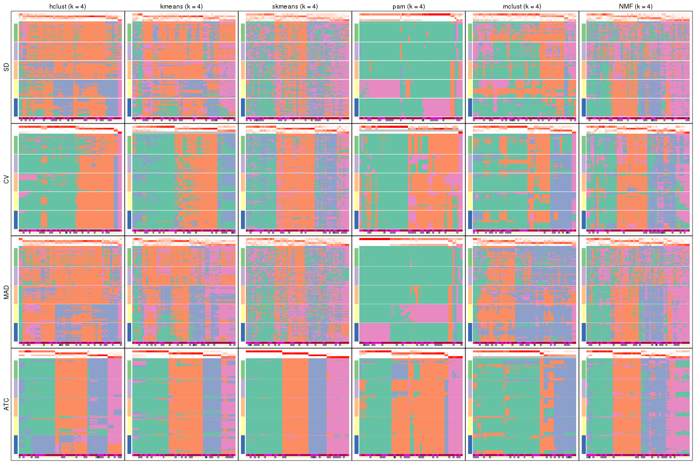
collect_plots(res_list, k = 5, fun = membership_heatmap, mc.cores = 4)
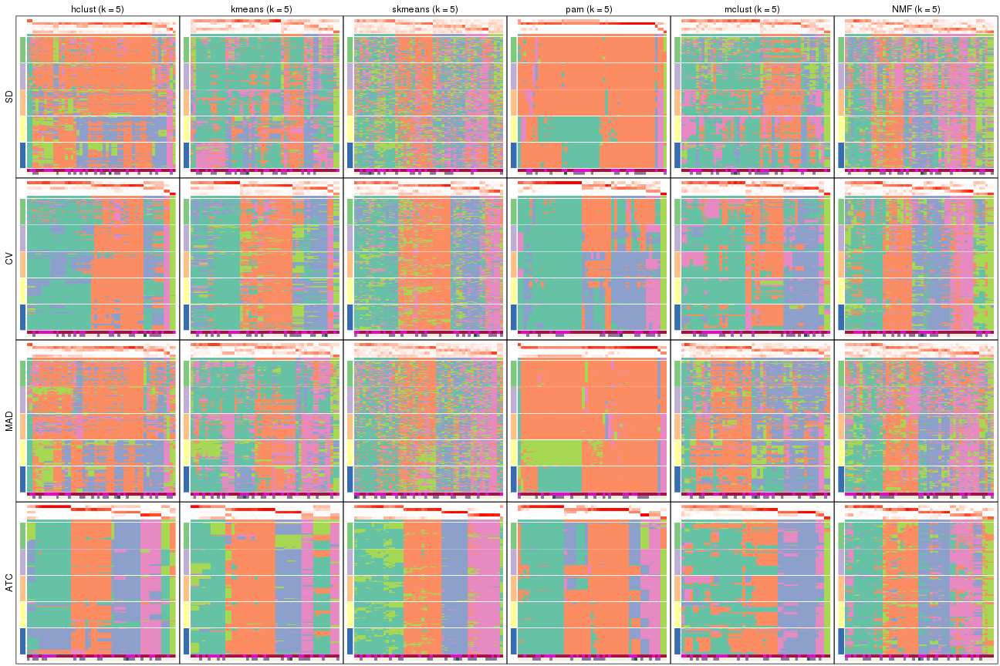
collect_plots(res_list, k = 6, fun = membership_heatmap, mc.cores = 4)
Signature heatmaps for all methods. (What is a signature heatmap?)
Note in following heatmaps, rows are scaled.
collect_plots(res_list, k = 2, fun = get_signatures, mc.cores = 4)
collect_plots(res_list, k = 3, fun = get_signatures, mc.cores = 4)

collect_plots(res_list, k = 4, fun = get_signatures, mc.cores = 4)
collect_plots(res_list, k = 5, fun = get_signatures, mc.cores = 4)
collect_plots(res_list, k = 6, fun = get_signatures, mc.cores = 4)
The statistics used for measuring the stability of consensus partitioning. (How are they defined?)
get_stats(res_list, k = 2)
#> k 1-PAC mean_silhouette concordance area_increased Rand Jaccard
#> SD:NMF 2 0.01152 0.584 0.746 0.483 0.495 0.495
#> CV:NMF 2 0.56383 0.849 0.924 0.484 0.514 0.514
#> MAD:NMF 2 0.02571 0.682 0.765 0.486 0.490 0.490
#> ATC:NMF 2 0.91844 0.919 0.966 0.507 0.490 0.490
#> SD:skmeans 2 0.00177 0.344 0.662 0.507 0.500 0.500
#> CV:skmeans 2 0.91755 0.932 0.970 0.505 0.492 0.492
#> MAD:skmeans 2 0.00887 0.452 0.712 0.508 0.490 0.490
#> ATC:skmeans 2 1.00000 1.000 1.000 0.509 0.492 0.492
#> SD:mclust 2 0.03373 0.000 0.727 0.308 1.000 1.000
#> CV:mclust 2 0.35461 0.828 0.847 0.362 0.561 0.561
#> MAD:mclust 2 0.05319 0.772 0.844 0.239 0.923 0.923
#> ATC:mclust 2 1.00000 0.949 0.981 0.450 0.561 0.561
#> SD:kmeans 2 0.03989 0.357 0.716 0.410 0.758 0.758
#> CV:kmeans 2 0.90514 0.934 0.953 0.475 0.506 0.506
#> MAD:kmeans 2 0.04965 0.385 0.703 0.437 0.506 0.506
#> ATC:kmeans 2 0.48816 0.815 0.866 0.492 0.492 0.492
#> SD:pam 2 0.26118 0.000 0.822 0.228 1.000 1.000
#> CV:pam 2 0.40603 0.677 0.851 0.480 0.500 0.500
#> MAD:pam 2 0.30118 0.000 0.820 0.235 1.000 1.000
#> ATC:pam 2 0.25355 0.541 0.799 0.416 0.500 0.500
#> SD:hclust 2 0.36436 0.837 0.899 0.189 0.923 0.923
#> CV:hclust 2 0.39286 0.808 0.873 0.429 0.523 0.523
#> MAD:hclust 2 0.41755 0.852 0.901 0.190 0.887 0.887
#> ATC:hclust 2 0.53546 0.876 0.919 0.478 0.495 0.495
get_stats(res_list, k = 3)
#> k 1-PAC mean_silhouette concordance area_increased Rand Jaccard
#> SD:NMF 3 0.05762 0.425 0.613 0.352 0.616 0.362
#> CV:NMF 3 0.38209 0.530 0.773 0.367 0.760 0.557
#> MAD:NMF 3 0.08599 0.499 0.668 0.362 0.692 0.450
#> ATC:NMF 3 0.91489 0.896 0.954 0.303 0.799 0.610
#> SD:skmeans 3 0.00621 0.297 0.566 0.328 0.676 0.433
#> CV:skmeans 3 0.52748 0.662 0.797 0.320 0.794 0.600
#> MAD:skmeans 3 0.03280 0.345 0.569 0.325 0.666 0.419
#> ATC:skmeans 3 1.00000 0.985 0.993 0.325 0.763 0.551
#> SD:mclust 3 0.00355 0.113 0.557 0.628 0.613 0.613
#> CV:mclust 3 0.19149 0.482 0.695 0.428 0.864 0.757
#> MAD:mclust 3 0.01241 0.340 0.593 1.159 0.672 0.645
#> ATC:mclust 3 0.82181 0.906 0.945 0.139 0.948 0.908
#> SD:kmeans 3 0.04167 0.362 0.619 0.346 0.584 0.480
#> CV:kmeans 3 0.46986 0.544 0.786 0.283 0.977 0.955
#> MAD:kmeans 3 0.07270 0.224 0.547 0.342 0.636 0.430
#> ATC:kmeans 3 0.59397 0.636 0.777 0.287 0.878 0.757
#> SD:pam 3 0.22872 0.546 0.807 0.204 0.923 0.923
#> CV:pam 3 0.48227 0.672 0.869 0.112 0.738 0.568
#> MAD:pam 3 0.26418 0.230 0.784 0.180 0.849 0.849
#> ATC:pam 3 0.33067 0.546 0.777 0.454 0.651 0.435
#> SD:hclust 3 0.03103 0.375 0.706 1.065 0.962 0.959
#> CV:hclust 3 0.36968 0.768 0.860 0.190 0.832 0.709
#> MAD:hclust 3 0.01596 0.396 0.645 1.393 0.802 0.777
#> ATC:hclust 3 0.53723 0.863 0.882 0.213 0.912 0.823
get_stats(res_list, k = 4)
#> k 1-PAC mean_silhouette concordance area_increased Rand Jaccard
#> SD:NMF 4 0.1587 0.336 0.554 0.1331 0.816 0.507
#> CV:NMF 4 0.4025 0.439 0.681 0.1221 0.769 0.432
#> MAD:NMF 4 0.2207 0.399 0.609 0.1235 0.824 0.520
#> ATC:NMF 4 0.6223 0.691 0.824 0.1345 0.801 0.486
#> SD:skmeans 4 0.0629 0.251 0.501 0.1224 0.872 0.630
#> CV:skmeans 4 0.4619 0.525 0.712 0.1155 0.906 0.730
#> MAD:skmeans 4 0.0913 0.281 0.486 0.1234 0.820 0.518
#> ATC:skmeans 4 1.0000 0.978 0.982 0.1080 0.880 0.656
#> SD:mclust 4 0.0248 0.413 0.572 0.1482 0.490 0.360
#> CV:mclust 4 0.2704 0.591 0.751 0.1717 0.765 0.541
#> MAD:mclust 4 0.0328 0.440 0.644 0.1580 0.514 0.347
#> ATC:mclust 4 0.4832 0.721 0.817 0.1262 1.000 1.000
#> SD:kmeans 4 0.1126 0.249 0.553 0.1357 0.661 0.414
#> CV:kmeans 4 0.4441 0.508 0.721 0.1312 0.862 0.718
#> MAD:kmeans 4 0.1445 0.262 0.569 0.1220 0.649 0.344
#> ATC:kmeans 4 0.6556 0.874 0.867 0.1234 0.848 0.624
#> SD:pam 4 0.2296 0.350 0.782 0.1095 0.856 0.845
#> CV:pam 4 0.4176 0.598 0.792 0.1429 0.926 0.849
#> MAD:pam 4 0.2651 0.279 0.769 0.1084 0.826 0.803
#> ATC:pam 4 0.6445 0.766 0.871 0.0829 0.872 0.709
#> SD:hclust 4 0.0310 0.322 0.652 0.2861 0.708 0.682
#> CV:hclust 4 0.4637 0.765 0.863 0.1563 0.889 0.778
#> MAD:hclust 4 0.0532 0.292 0.636 0.1939 0.890 0.844
#> ATC:hclust 4 0.5142 0.766 0.801 0.1985 0.859 0.653
get_stats(res_list, k = 5)
#> k 1-PAC mean_silhouette concordance area_increased Rand Jaccard
#> SD:NMF 5 0.2190 0.223 0.490 0.0676 0.911 0.663
#> CV:NMF 5 0.4707 0.472 0.686 0.0722 0.856 0.513
#> MAD:NMF 5 0.2660 0.298 0.530 0.0668 0.891 0.599
#> ATC:NMF 5 0.5346 0.519 0.756 0.0488 0.858 0.512
#> SD:skmeans 5 0.1587 0.188 0.430 0.0648 0.919 0.695
#> CV:skmeans 5 0.4858 0.347 0.637 0.0665 0.929 0.763
#> MAD:skmeans 5 0.2066 0.177 0.458 0.0655 0.929 0.736
#> ATC:skmeans 5 0.8094 0.679 0.862 0.0636 0.987 0.947
#> SD:mclust 5 0.0638 0.231 0.554 0.1757 0.838 0.672
#> CV:mclust 5 0.3440 0.514 0.711 0.1384 0.882 0.695
#> MAD:mclust 5 0.1179 0.296 0.584 0.1589 0.874 0.712
#> ATC:mclust 5 0.5461 0.578 0.750 0.2370 0.772 0.552
#> SD:kmeans 5 0.1596 0.145 0.531 0.0819 0.662 0.404
#> CV:kmeans 5 0.4415 0.489 0.679 0.0709 0.861 0.642
#> MAD:kmeans 5 0.2194 0.267 0.509 0.0692 0.703 0.339
#> ATC:kmeans 5 0.7137 0.613 0.723 0.0639 0.920 0.720
#> SD:pam 5 0.1956 0.179 0.792 0.0972 0.831 0.808
#> CV:pam 5 0.3892 0.515 0.744 0.0687 0.801 0.571
#> MAD:pam 5 0.2628 0.487 0.794 0.0966 0.896 0.877
#> ATC:pam 5 0.6170 0.615 0.829 0.0685 0.903 0.744
#> SD:hclust 5 0.0754 0.197 0.623 0.1040 0.933 0.903
#> CV:hclust 5 0.4433 0.601 0.731 0.1423 0.878 0.720
#> MAD:hclust 5 0.1410 0.156 0.595 0.0981 0.907 0.854
#> ATC:hclust 5 0.5913 0.715 0.790 0.0613 0.938 0.771
get_stats(res_list, k = 6)
#> k 1-PAC mean_silhouette concordance area_increased Rand Jaccard
#> SD:NMF 6 0.338 0.206 0.470 0.0445 0.900 0.574
#> CV:NMF 6 0.535 0.425 0.643 0.0366 0.870 0.476
#> MAD:NMF 6 0.362 0.233 0.470 0.0434 0.896 0.549
#> ATC:NMF 6 0.569 0.422 0.672 0.0400 0.853 0.442
#> SD:skmeans 6 0.316 0.164 0.432 0.0431 0.912 0.620
#> CV:skmeans 6 0.511 0.283 0.552 0.0407 0.946 0.806
#> MAD:skmeans 6 0.327 0.169 0.438 0.0403 0.885 0.555
#> ATC:skmeans 6 0.755 0.653 0.783 0.0377 0.944 0.768
#> SD:mclust 6 0.228 0.239 0.522 0.1033 0.887 0.693
#> CV:mclust 6 0.505 0.571 0.775 0.0801 0.916 0.739
#> MAD:mclust 6 0.282 0.248 0.549 0.0928 0.765 0.424
#> ATC:mclust 6 0.614 0.744 0.766 0.1058 0.826 0.448
#> SD:kmeans 6 0.234 0.174 0.539 0.0472 0.843 0.642
#> CV:kmeans 6 0.537 0.560 0.718 0.0562 0.925 0.749
#> MAD:kmeans 6 0.277 0.264 0.516 0.0516 0.748 0.338
#> ATC:kmeans 6 0.814 0.782 0.875 0.0465 0.889 0.592
#> SD:pam 6 0.233 0.200 0.784 0.0879 0.964 0.956
#> CV:pam 6 0.433 0.473 0.770 0.0418 0.863 0.620
#> MAD:pam 6 0.230 0.439 0.783 0.0861 1.000 1.000
#> ATC:pam 6 0.821 0.759 0.910 0.0617 0.846 0.558
#> SD:hclust 6 0.156 0.299 0.596 0.0870 0.845 0.765
#> CV:hclust 6 0.472 0.477 0.615 0.0729 0.867 0.621
#> MAD:hclust 6 0.176 0.269 0.573 0.0834 0.831 0.708
#> ATC:hclust 6 0.753 0.815 0.876 0.0728 0.960 0.819
Following heatmap plots the partition for each combination of methods and the lightness correspond to the silhouette scores for samples in each method. On top the consensus subgroup is inferred from all methods by taking the mean silhouette scores as weight.
collect_stats(res_list, k = 2)
collect_stats(res_list, k = 3)
collect_stats(res_list, k = 4)
collect_stats(res_list, k = 5)
collect_stats(res_list, k = 6)
Collect partitions from all methods:
collect_classes(res_list, k = 2)
collect_classes(res_list, k = 3)
collect_classes(res_list, k = 4)
collect_classes(res_list, k = 5)
collect_classes(res_list, k = 6)
Overlap of top rows from different top-row methods:
top_rows_overlap(res_list, top_n = 1000, method = "euler")
top_rows_overlap(res_list, top_n = 2000, method = "euler")
top_rows_overlap(res_list, top_n = 3000, method = "euler")
top_rows_overlap(res_list, top_n = 4000, method = "euler")
top_rows_overlap(res_list, top_n = 5000, method = "euler")
Also visualize the correspondance of rankings between different top-row methods:
top_rows_overlap(res_list, top_n = 1000, method = "correspondance")
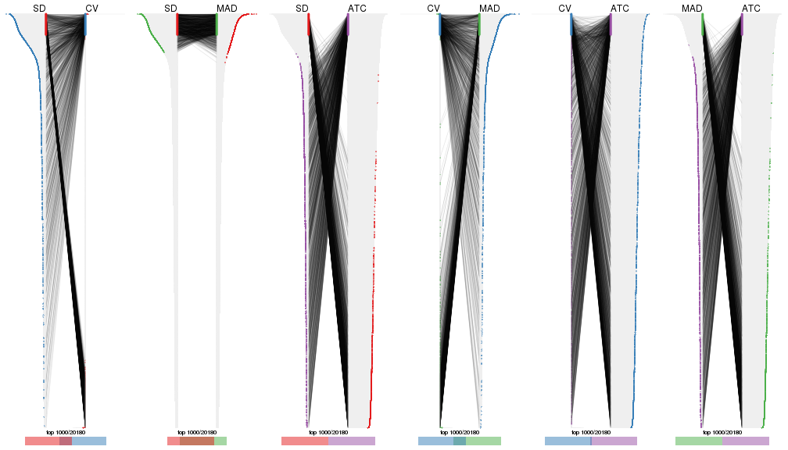
top_rows_overlap(res_list, top_n = 2000, method = "correspondance")
top_rows_overlap(res_list, top_n = 3000, method = "correspondance")
top_rows_overlap(res_list, top_n = 4000, method = "correspondance")
top_rows_overlap(res_list, top_n = 5000, method = "correspondance")
Heatmaps of the top rows:
top_rows_heatmap(res_list, top_n = 1000)
top_rows_heatmap(res_list, top_n = 2000)
top_rows_heatmap(res_list, top_n = 3000)
top_rows_heatmap(res_list, top_n = 4000)
top_rows_heatmap(res_list, top_n = 5000)
Test correlation between subgroups and known annotations. If the known annotation is numeric, one-way ANOVA test is applied, and if the known annotation is discrete, chi-squared contingency table test is applied.
test_to_known_factors(res_list, k = 2)
#> n disease.state(p) other(p) k
#> SD:NMF 38 0.208 0.452 2
#> CV:NMF 50 0.212 0.674 2
#> MAD:NMF 47 0.154 0.623 2
#> ATC:NMF 48 0.295 0.420 2
#> SD:skmeans 12 0.480 1.000 2
#> CV:skmeans 50 0.190 0.619 2
#> MAD:skmeans 32 0.156 0.591 2
#> ATC:skmeans 51 0.157 0.560 2
#> SD:mclust 0 NA NA 2
#> CV:mclust 50 0.107 0.478 2
#> MAD:mclust 51 1.000 0.567 2
#> ATC:mclust 49 1.000 0.149 2
#> SD:kmeans 18 0.352 1.000 2
#> CV:kmeans 51 0.172 0.697 2
#> MAD:kmeans 30 0.478 0.496 2
#> ATC:kmeans 51 0.157 0.560 2
#> SD:pam 0 NA NA 2
#> CV:pam 39 0.424 0.851 2
#> MAD:pam 0 NA NA 2
#> ATC:pam 35 0.407 0.539 2
#> SD:hclust 49 1.000 0.575 2
#> CV:hclust 46 0.118 0.697 2
#> MAD:hclust 50 0.659 0.967 2
#> ATC:hclust 51 0.229 0.512 2
test_to_known_factors(res_list, k = 3)
#> n disease.state(p) other(p) k
#> SD:NMF 27 0.9684 0.1057 3
#> CV:NMF 27 0.0956 0.2751 3
#> MAD:NMF 35 0.6023 0.4714 3
#> ATC:NMF 49 0.0592 0.6436 3
#> SD:skmeans 3 1.0000 NA 3
#> CV:skmeans 43 0.1529 0.0745 3
#> MAD:skmeans 9 1.0000 1.0000 3
#> ATC:skmeans 51 0.1676 0.4234 3
#> SD:mclust 0 NA NA 3
#> CV:mclust 33 0.2441 0.8013 3
#> MAD:mclust 12 1.0000 0.6005 3
#> ATC:mclust 50 0.5566 0.3630 3
#> SD:kmeans 11 1.0000 1.0000 3
#> CV:kmeans 36 0.1478 1.0000 3
#> MAD:kmeans 3 NA NA 3
#> ATC:kmeans 40 0.2686 0.3715 3
#> SD:pam 29 0.9324 0.6167 3
#> CV:pam 39 0.4748 0.1033 3
#> MAD:pam 4 1.0000 1.0000 3
#> ATC:pam 35 0.5977 0.3840 3
#> SD:hclust 22 1.0000 0.5334 3
#> CV:hclust 46 0.1395 0.7751 3
#> MAD:hclust 13 0.4916 0.4204 3
#> ATC:hclust 51 0.3227 0.5879 3
test_to_known_factors(res_list, k = 4)
#> n disease.state(p) other(p) k
#> SD:NMF 8 0.3430 0.1490 4
#> CV:NMF 23 0.1738 0.5915 4
#> MAD:NMF 23 0.4045 0.1921 4
#> ATC:NMF 42 0.5591 0.3279 4
#> SD:skmeans 0 NA NA 4
#> CV:skmeans 32 0.0887 0.2355 4
#> MAD:skmeans 0 NA NA 4
#> ATC:skmeans 51 0.2495 0.0726 4
#> SD:mclust 23 0.4056 0.8617 4
#> CV:mclust 38 0.4667 0.2626 4
#> MAD:mclust 23 0.5068 0.5719 4
#> ATC:mclust 46 0.4792 0.2332 4
#> SD:kmeans 10 1.0000 1.0000 4
#> CV:kmeans 33 0.1287 0.1031 4
#> MAD:kmeans 5 0.5762 1.0000 4
#> ATC:kmeans 51 0.3846 0.3224 4
#> SD:pam 4 1.0000 1.0000 4
#> CV:pam 36 0.3757 0.3144 4
#> MAD:pam 5 NA 1.0000 4
#> ATC:pam 47 0.5050 0.6895 4
#> SD:hclust 7 0.5264 0.4594 4
#> CV:hclust 46 0.2677 0.8211 4
#> MAD:hclust 4 1.0000 NA 4
#> ATC:hclust 47 0.5678 0.2792 4
test_to_known_factors(res_list, k = 5)
#> n disease.state(p) other(p) k
#> SD:NMF 0 NA NA 5
#> CV:NMF 26 0.5118 0.2283 5
#> MAD:NMF 3 NA NA 5
#> ATC:NMF 30 0.6300 0.6560 5
#> SD:skmeans 0 NA NA 5
#> CV:skmeans 19 0.0461 0.1892 5
#> MAD:skmeans 0 NA NA 5
#> ATC:skmeans 42 0.2423 0.0942 5
#> SD:mclust 7 1.0000 NA 5
#> CV:mclust 34 0.5089 0.4303 5
#> MAD:mclust 12 0.5134 0.3679 5
#> ATC:mclust 35 0.6756 0.6289 5
#> SD:kmeans 5 1.0000 1.0000 5
#> CV:kmeans 23 0.2673 0.7926 5
#> MAD:kmeans 11 1.0000 0.9364 5
#> ATC:kmeans 40 0.4112 0.4058 5
#> SD:pam 18 0.7909 0.6691 5
#> CV:pam 25 0.4642 0.0603 5
#> MAD:pam 28 0.9076 0.8224 5
#> ATC:pam 41 0.3405 0.1236 5
#> SD:hclust 4 1.0000 NA 5
#> CV:hclust 40 0.3902 0.3990 5
#> MAD:hclust 6 0.4724 0.3012 5
#> ATC:hclust 42 0.6408 0.4482 5
test_to_known_factors(res_list, k = 6)
#> n disease.state(p) other(p) k
#> SD:NMF 0 NA NA 6
#> CV:NMF 22 0.427 0.357 6
#> MAD:NMF 0 NA NA 6
#> ATC:NMF 22 0.360 0.713 6
#> SD:skmeans 0 NA NA 6
#> CV:skmeans 11 NA NA 6
#> MAD:skmeans 0 NA NA 6
#> ATC:skmeans 36 0.481 0.305 6
#> SD:mclust 2 NA NA 6
#> CV:mclust 37 0.455 0.335 6
#> MAD:mclust 9 1.000 0.777 6
#> ATC:mclust 48 0.504 0.381 6
#> SD:kmeans 6 1.000 1.000 6
#> CV:kmeans 34 0.476 0.375 6
#> MAD:kmeans 10 0.530 0.530 6
#> ATC:kmeans 46 0.623 0.545 6
#> SD:pam 19 0.533 0.311 6
#> CV:pam 26 0.591 0.196 6
#> MAD:pam 24 0.892 0.794 6
#> ATC:pam 45 0.367 0.436 6
#> SD:hclust 13 0.457 0.302 6
#> CV:hclust 20 0.260 0.711 6
#> MAD:hclust 8 0.513 0.449 6
#> ATC:hclust 47 0.711 0.512 6
The object with results only for a single top-value method and a single partition method can be extracted as:
res = res_list["SD", "hclust"]
# you can also extract it by
# res = res_list["SD:hclust"]
A summary of res and all the functions that can be applied to it:
res
#> A 'ConsensusPartition' object with k = 2, 3, 4, 5, 6.
#> On a matrix with 20180 rows and 51 columns.
#> Top rows (1000, 2000, 3000, 4000, 5000) are extracted by 'SD' method.
#> Subgroups are detected by 'hclust' method.
#> Performed in total 1250 partitions by row resampling.
#> Best k for subgroups seems to be 4.
#>
#> Following methods can be applied to this 'ConsensusPartition' object:
#> [1] "cola_report" "collect_classes" "collect_plots"
#> [4] "collect_stats" "colnames" "compare_signatures"
#> [7] "consensus_heatmap" "dimension_reduction" "functional_enrichment"
#> [10] "get_anno_col" "get_anno" "get_classes"
#> [13] "get_consensus" "get_matrix" "get_membership"
#> [16] "get_param" "get_signatures" "get_stats"
#> [19] "is_best_k" "is_stable_k" "membership_heatmap"
#> [22] "ncol" "nrow" "plot_ecdf"
#> [25] "rownames" "select_partition_number" "show"
#> [28] "suggest_best_k" "test_to_known_factors"
collect_plots() function collects all the plots made from res for all k (number of partitions)
into one single page to provide an easy and fast comparison between different k.
collect_plots(res)
The plots are:
k and the heatmap of
predicted classes for each k.k.k.k.All the plots in panels can be made by individual functions and they are plotted later in this section.
select_partition_number() produces several plots showing different
statistics for choosing “optimized” k. There are following statistics:
k;k, the area increased is defined as \(A_k - A_{k-1}\).The detailed explanations of these statistics can be found in the cola vignette.
Generally speaking, lower PAC score, higher mean silhouette score or higher
concordance corresponds to better partition. Rand index and Jaccard index
measure how similar the current partition is compared to partition with k-1.
If they are too similar, we won't accept k is better than k-1.
select_partition_number(res)
The numeric values for all these statistics can be obtained by get_stats().
get_stats(res)
#> k 1-PAC mean_silhouette concordance area_increased Rand Jaccard
#> 2 2 0.3644 0.837 0.899 0.189 0.923 0.923
#> 3 3 0.0310 0.375 0.706 1.065 0.962 0.959
#> 4 4 0.0310 0.322 0.652 0.286 0.708 0.682
#> 5 5 0.0754 0.197 0.623 0.104 0.933 0.903
#> 6 6 0.1560 0.299 0.596 0.087 0.845 0.765
suggest_best_k() suggests the best \(k\) based on these statistics. The rules are as follows:
NA.suggest_best_k(res)
#> [1] 4
Following shows the table of the partitions (You need to click the show/hide
code output link to see it). The membership matrix (columns with name p*)
is inferred by
clue::cl_consensus()
function with the SE method. Basically the value in the membership matrix
represents the probability to belong to a certain group. The finall class
label for an item is determined with the group with highest probability it
belongs to.
In get_classes() function, the entropy is calculated from the membership
matrix and the silhouette score is calculated from the consensus matrix.
cbind(get_classes(res, k = 2), get_membership(res, k = 2))
#> class entropy silhouette p1 p2
#> GSM115459 2 0.2948 0.897 0.052 0.948
#> GSM115460 2 0.0672 0.895 0.008 0.992
#> GSM115461 2 0.0672 0.895 0.008 0.992
#> GSM115462 2 0.4161 0.889 0.084 0.916
#> GSM115463 2 0.0938 0.895 0.012 0.988
#> GSM115464 2 0.2603 0.900 0.044 0.956
#> GSM115465 2 0.1633 0.897 0.024 0.976
#> GSM115466 2 0.3733 0.896 0.072 0.928
#> GSM115467 2 0.5294 0.849 0.120 0.880
#> GSM115468 2 0.6887 0.804 0.184 0.816
#> GSM115469 2 0.1184 0.896 0.016 0.984
#> GSM115470 2 0.6148 0.831 0.152 0.848
#> GSM115471 2 0.1184 0.896 0.016 0.984
#> GSM115472 2 0.1184 0.897 0.016 0.984
#> GSM115473 2 0.3274 0.897 0.060 0.940
#> GSM115474 2 0.2778 0.898 0.048 0.952
#> GSM115475 2 0.5737 0.848 0.136 0.864
#> GSM115476 2 0.5946 0.838 0.144 0.856
#> GSM115477 2 0.3733 0.891 0.072 0.928
#> GSM115478 2 0.5408 0.868 0.124 0.876
#> GSM115479 1 0.8955 0.913 0.688 0.312
#> GSM115480 2 0.5408 0.855 0.124 0.876
#> GSM115481 2 0.5519 0.850 0.128 0.872
#> GSM115482 2 0.9087 0.326 0.324 0.676
#> GSM115483 2 0.8144 0.640 0.252 0.748
#> GSM115484 2 0.5178 0.875 0.116 0.884
#> GSM115485 2 0.0938 0.895 0.012 0.988
#> GSM115486 2 0.1184 0.897 0.016 0.984
#> GSM115487 2 0.3274 0.896 0.060 0.940
#> GSM115488 2 0.1184 0.896 0.016 0.984
#> GSM115489 2 0.1184 0.897 0.016 0.984
#> GSM115490 2 0.8386 0.598 0.268 0.732
#> GSM115491 2 0.3584 0.887 0.068 0.932
#> GSM115492 2 0.0938 0.896 0.012 0.988
#> GSM115493 2 0.4431 0.892 0.092 0.908
#> GSM115494 1 0.8661 0.916 0.712 0.288
#> GSM115495 2 0.2948 0.896 0.052 0.948
#> GSM115496 2 0.4562 0.875 0.096 0.904
#> GSM115497 2 0.7674 0.727 0.224 0.776
#> GSM115498 2 0.2778 0.897 0.048 0.952
#> GSM115499 2 0.1184 0.896 0.016 0.984
#> GSM115500 2 0.5294 0.857 0.120 0.880
#> GSM115501 2 0.0938 0.895 0.012 0.988
#> GSM115502 2 0.4815 0.885 0.104 0.896
#> GSM115503 2 0.5629 0.858 0.132 0.868
#> GSM115504 2 0.1843 0.898 0.028 0.972
#> GSM115505 2 0.3879 0.893 0.076 0.924
#> GSM115506 2 0.9933 -0.237 0.452 0.548
#> GSM115507 2 0.5946 0.839 0.144 0.856
#> GSM115509 2 0.4298 0.889 0.088 0.912
#> GSM115508 2 0.1414 0.897 0.020 0.980
cbind(get_classes(res, k = 3), get_membership(res, k = 3))
#> class entropy silhouette p1 p2 p3
#> GSM115459 1 0.507 0.501 0.792 0.196 0.012
#> GSM115460 1 0.388 0.499 0.848 0.152 0.000
#> GSM115461 1 0.388 0.499 0.848 0.152 0.000
#> GSM115462 1 0.531 0.493 0.788 0.192 0.020
#> GSM115463 1 0.254 0.567 0.920 0.080 0.000
#> GSM115464 1 0.361 0.566 0.880 0.112 0.008
#> GSM115465 1 0.470 0.480 0.788 0.212 0.000
#> GSM115466 1 0.629 0.374 0.692 0.288 0.020
#> GSM115467 1 0.598 0.442 0.744 0.228 0.028
#> GSM115468 1 0.725 0.301 0.648 0.300 0.052
#> GSM115469 1 0.319 0.562 0.888 0.112 0.000
#> GSM115470 1 0.801 -0.126 0.548 0.384 0.068
#> GSM115471 1 0.375 0.536 0.856 0.144 0.000
#> GSM115472 1 0.312 0.550 0.892 0.108 0.000
#> GSM115473 1 0.491 0.510 0.804 0.184 0.012
#> GSM115474 1 0.368 0.559 0.876 0.116 0.008
#> GSM115475 1 0.698 0.202 0.656 0.304 0.040
#> GSM115476 1 0.750 0.263 0.684 0.212 0.104
#> GSM115477 1 0.574 0.409 0.732 0.256 0.012
#> GSM115478 1 0.684 0.118 0.572 0.412 0.016
#> GSM115479 3 0.760 0.810 0.236 0.096 0.668
#> GSM115480 1 0.647 0.414 0.692 0.280 0.028
#> GSM115481 1 0.693 0.170 0.664 0.296 0.040
#> GSM115482 1 0.917 -0.154 0.540 0.248 0.212
#> GSM115483 1 0.814 -0.938 0.476 0.456 0.068
#> GSM115484 1 0.665 0.303 0.656 0.320 0.024
#> GSM115485 1 0.355 0.534 0.868 0.132 0.000
#> GSM115486 1 0.371 0.545 0.868 0.128 0.004
#> GSM115487 1 0.486 0.529 0.808 0.180 0.012
#> GSM115488 1 0.369 0.536 0.860 0.140 0.000
#> GSM115489 1 0.327 0.549 0.884 0.116 0.000
#> GSM115490 2 0.821 0.000 0.460 0.468 0.072
#> GSM115491 1 0.441 0.548 0.832 0.160 0.008
#> GSM115492 1 0.355 0.533 0.868 0.132 0.000
#> GSM115493 1 0.516 0.494 0.776 0.216 0.008
#> GSM115494 3 0.667 0.828 0.200 0.068 0.732
#> GSM115495 1 0.555 0.434 0.724 0.272 0.004
#> GSM115496 1 0.552 0.518 0.788 0.180 0.032
#> GSM115497 1 0.910 -0.195 0.544 0.264 0.192
#> GSM115498 1 0.453 0.521 0.824 0.168 0.008
#> GSM115499 1 0.236 0.565 0.928 0.072 0.000
#> GSM115500 1 0.667 0.309 0.696 0.264 0.040
#> GSM115501 1 0.280 0.567 0.908 0.092 0.000
#> GSM115502 1 0.571 0.483 0.768 0.204 0.028
#> GSM115503 1 0.629 0.405 0.704 0.272 0.024
#> GSM115504 1 0.450 0.491 0.804 0.196 0.000
#> GSM115505 1 0.619 0.249 0.632 0.364 0.004
#> GSM115506 1 0.996 -0.480 0.364 0.288 0.348
#> GSM115507 1 0.701 0.273 0.640 0.324 0.036
#> GSM115509 1 0.610 0.437 0.740 0.228 0.032
#> GSM115508 1 0.375 0.533 0.856 0.144 0.000
cbind(get_classes(res, k = 4), get_membership(res, k = 4))
#> class entropy silhouette p1 p2 p3 p4
#> GSM115459 2 0.5163 -0.2731 0.000 0.516 0.480 0.004
#> GSM115460 2 0.0592 0.5025 0.000 0.984 0.016 0.000
#> GSM115461 2 0.0592 0.5025 0.000 0.984 0.016 0.000
#> GSM115462 2 0.5535 0.4095 0.068 0.740 0.180 0.012
#> GSM115463 2 0.3587 0.4776 0.052 0.860 0.088 0.000
#> GSM115464 2 0.5737 0.3407 0.064 0.692 0.240 0.004
#> GSM115465 2 0.2342 0.4975 0.008 0.912 0.080 0.000
#> GSM115466 2 0.5126 0.4429 0.072 0.772 0.148 0.008
#> GSM115467 2 0.6324 0.2519 0.356 0.572 0.072 0.000
#> GSM115468 2 0.8078 0.2065 0.264 0.496 0.216 0.024
#> GSM115469 2 0.4252 0.2570 0.004 0.744 0.252 0.000
#> GSM115470 2 0.7370 0.1924 0.076 0.608 0.252 0.064
#> GSM115471 2 0.2999 0.4393 0.004 0.864 0.132 0.000
#> GSM115472 2 0.5785 0.2183 0.064 0.664 0.272 0.000
#> GSM115473 2 0.5686 -0.0403 0.032 0.592 0.376 0.000
#> GSM115474 2 0.5210 0.4458 0.060 0.748 0.188 0.004
#> GSM115475 3 0.6196 0.6034 0.028 0.340 0.608 0.024
#> GSM115476 3 0.8926 0.4304 0.180 0.340 0.404 0.076
#> GSM115477 2 0.3519 0.4614 0.016 0.852 0.128 0.004
#> GSM115478 2 0.6676 0.3325 0.108 0.636 0.244 0.012
#> GSM115479 4 0.5436 0.7538 0.016 0.160 0.068 0.756
#> GSM115480 2 0.7260 0.3258 0.232 0.600 0.148 0.020
#> GSM115481 3 0.7066 0.5903 0.060 0.368 0.540 0.032
#> GSM115482 1 0.7766 0.3103 0.540 0.308 0.104 0.048
#> GSM115483 2 0.8867 -0.1372 0.240 0.448 0.244 0.068
#> GSM115484 2 0.6998 0.3355 0.192 0.612 0.188 0.008
#> GSM115485 2 0.2704 0.4626 0.000 0.876 0.124 0.000
#> GSM115486 2 0.4761 0.0790 0.004 0.664 0.332 0.000
#> GSM115487 2 0.5778 0.1837 0.032 0.656 0.300 0.012
#> GSM115488 2 0.2999 0.4372 0.004 0.864 0.132 0.000
#> GSM115489 2 0.5859 0.2067 0.064 0.652 0.284 0.000
#> GSM115490 2 0.8949 -0.1926 0.256 0.428 0.248 0.068
#> GSM115491 2 0.6019 0.4120 0.176 0.688 0.136 0.000
#> GSM115492 2 0.2704 0.4669 0.000 0.876 0.124 0.000
#> GSM115493 2 0.6782 0.3782 0.148 0.632 0.212 0.008
#> GSM115494 4 0.5085 0.7511 0.012 0.140 0.068 0.780
#> GSM115495 2 0.4410 0.4777 0.064 0.808 0.128 0.000
#> GSM115496 2 0.7190 0.3465 0.196 0.608 0.180 0.016
#> GSM115497 3 0.7572 0.3862 0.068 0.216 0.612 0.104
#> GSM115498 2 0.5580 -0.1232 0.016 0.572 0.408 0.004
#> GSM115499 2 0.4153 0.4558 0.048 0.820 0.132 0.000
#> GSM115500 3 0.7031 0.5117 0.064 0.400 0.512 0.024
#> GSM115501 2 0.3716 0.4805 0.052 0.852 0.096 0.000
#> GSM115502 2 0.7412 -0.1900 0.092 0.480 0.404 0.024
#> GSM115503 2 0.6577 0.3820 0.128 0.676 0.176 0.020
#> GSM115504 2 0.2480 0.4998 0.008 0.904 0.088 0.000
#> GSM115505 2 0.5356 0.4104 0.072 0.728 0.200 0.000
#> GSM115506 1 0.7105 0.1311 0.664 0.120 0.060 0.156
#> GSM115507 2 0.7392 0.2888 0.240 0.584 0.156 0.020
#> GSM115509 3 0.6178 0.2920 0.040 0.472 0.484 0.004
#> GSM115508 2 0.5143 0.0243 0.012 0.628 0.360 0.000
cbind(get_classes(res, k = 5), get_membership(res, k = 5))
#> class entropy silhouette p1 p2 p3 p4 p5
#> GSM115459 2 0.5583 -0.0471 0.000 0.504 0.424 0.000 0.072
#> GSM115460 2 0.0693 0.4523 0.000 0.980 0.012 0.000 0.008
#> GSM115461 2 0.0693 0.4523 0.000 0.980 0.012 0.000 0.008
#> GSM115462 2 0.5195 0.3573 0.000 0.720 0.144 0.016 0.120
#> GSM115463 2 0.3181 0.4637 0.000 0.856 0.072 0.000 0.072
#> GSM115464 2 0.5361 0.4018 0.008 0.680 0.208 0.000 0.104
#> GSM115465 2 0.2304 0.4395 0.000 0.908 0.044 0.000 0.048
#> GSM115466 2 0.5175 0.1603 0.024 0.724 0.064 0.004 0.184
#> GSM115467 2 0.7177 -0.2660 0.000 0.500 0.064 0.136 0.300
#> GSM115468 5 0.5719 0.0000 0.004 0.364 0.060 0.008 0.564
#> GSM115469 2 0.4250 0.3558 0.000 0.720 0.252 0.000 0.028
#> GSM115470 2 0.7389 -0.1782 0.068 0.568 0.136 0.024 0.204
#> GSM115471 2 0.2920 0.4724 0.000 0.852 0.132 0.000 0.016
#> GSM115472 2 0.5379 0.3274 0.000 0.648 0.244 0.000 0.108
#> GSM115473 2 0.5492 0.1700 0.004 0.588 0.340 0.000 0.068
#> GSM115474 2 0.4792 0.4411 0.000 0.740 0.128 0.004 0.128
#> GSM115475 3 0.5964 0.5816 0.000 0.292 0.604 0.028 0.076
#> GSM115476 3 0.9116 0.2580 0.036 0.284 0.304 0.180 0.196
#> GSM115477 2 0.3579 0.3858 0.000 0.840 0.084 0.008 0.068
#> GSM115478 2 0.5505 -0.3691 0.004 0.528 0.056 0.000 0.412
#> GSM115479 1 0.4549 0.7297 0.796 0.116 0.044 0.012 0.032
#> GSM115480 2 0.6607 -0.3423 0.008 0.516 0.076 0.036 0.364
#> GSM115481 3 0.6510 0.5496 0.024 0.344 0.548 0.028 0.056
#> GSM115482 4 0.8114 0.2790 0.032 0.240 0.120 0.492 0.116
#> GSM115483 2 0.7893 -0.1741 0.012 0.404 0.360 0.140 0.084
#> GSM115484 2 0.6488 -0.3875 0.016 0.516 0.060 0.028 0.380
#> GSM115485 2 0.2674 0.4858 0.000 0.868 0.120 0.000 0.012
#> GSM115486 2 0.4742 0.2464 0.008 0.648 0.324 0.000 0.020
#> GSM115487 2 0.5838 0.2854 0.012 0.648 0.244 0.012 0.084
#> GSM115488 2 0.2920 0.4709 0.000 0.852 0.132 0.000 0.016
#> GSM115489 2 0.5531 0.3133 0.000 0.632 0.248 0.000 0.120
#> GSM115490 2 0.8005 -0.1918 0.012 0.388 0.360 0.152 0.088
#> GSM115491 2 0.5869 0.0623 0.000 0.596 0.084 0.016 0.304
#> GSM115492 2 0.2773 0.4860 0.000 0.868 0.112 0.000 0.020
#> GSM115493 2 0.6247 -0.1293 0.004 0.548 0.116 0.008 0.324
#> GSM115494 1 0.4677 0.7243 0.792 0.108 0.016 0.028 0.056
#> GSM115495 2 0.4878 0.2335 0.000 0.724 0.076 0.008 0.192
#> GSM115496 2 0.6332 -0.2037 0.000 0.512 0.100 0.020 0.368
#> GSM115497 3 0.7965 0.3359 0.088 0.168 0.540 0.048 0.156
#> GSM115498 2 0.5938 0.0547 0.000 0.540 0.368 0.012 0.080
#> GSM115499 2 0.3527 0.4799 0.000 0.828 0.116 0.000 0.056
#> GSM115500 3 0.6873 0.3901 0.016 0.364 0.504 0.044 0.072
#> GSM115501 2 0.3242 0.4626 0.000 0.852 0.072 0.000 0.076
#> GSM115502 2 0.7335 -0.0569 0.024 0.440 0.320 0.008 0.208
#> GSM115503 2 0.5898 -0.0880 0.004 0.612 0.080 0.016 0.288
#> GSM115504 2 0.2450 0.4480 0.000 0.900 0.052 0.000 0.048
#> GSM115505 2 0.4780 0.0449 0.000 0.692 0.060 0.000 0.248
#> GSM115506 4 0.4322 0.2053 0.044 0.072 0.024 0.824 0.036
#> GSM115507 2 0.6760 -0.4983 0.008 0.480 0.092 0.032 0.388
#> GSM115509 2 0.6740 -0.2384 0.016 0.436 0.428 0.012 0.108
#> GSM115508 2 0.4836 0.2309 0.000 0.628 0.336 0.000 0.036
cbind(get_classes(res, k = 6), get_membership(res, k = 6))
#> class entropy silhouette p1 p2 p3 p4 p5 p6
#> GSM115459 2 0.600 0.11985 0.160 0.492 0.332 0.016 0.000 0.000
#> GSM115460 2 0.117 0.48646 0.016 0.960 0.008 0.016 0.000 0.000
#> GSM115461 2 0.117 0.48646 0.016 0.960 0.008 0.016 0.000 0.000
#> GSM115462 2 0.565 0.38656 0.172 0.672 0.088 0.040 0.028 0.000
#> GSM115463 2 0.314 0.50189 0.092 0.844 0.056 0.008 0.000 0.000
#> GSM115464 2 0.519 0.45666 0.160 0.684 0.132 0.016 0.004 0.004
#> GSM115465 2 0.302 0.46354 0.080 0.860 0.036 0.024 0.000 0.000
#> GSM115466 2 0.568 0.14836 0.220 0.648 0.020 0.084 0.008 0.020
#> GSM115467 2 0.661 -0.22847 0.264 0.460 0.000 0.232 0.044 0.000
#> GSM115468 1 0.558 0.36409 0.644 0.252 0.028 0.044 0.016 0.016
#> GSM115469 2 0.442 0.46534 0.048 0.732 0.192 0.028 0.000 0.000
#> GSM115470 2 0.797 -0.27805 0.180 0.492 0.100 0.140 0.024 0.064
#> GSM115471 2 0.276 0.50960 0.036 0.872 0.080 0.012 0.000 0.000
#> GSM115472 2 0.521 0.43496 0.164 0.656 0.168 0.008 0.004 0.000
#> GSM115473 2 0.641 0.23865 0.132 0.568 0.244 0.032 0.016 0.008
#> GSM115474 2 0.419 0.47142 0.164 0.756 0.068 0.004 0.008 0.000
#> GSM115475 3 0.769 0.53047 0.120 0.248 0.456 0.140 0.020 0.016
#> GSM115476 1 0.881 -0.26936 0.276 0.252 0.212 0.020 0.188 0.052
#> GSM115477 2 0.423 0.40889 0.092 0.796 0.056 0.040 0.016 0.000
#> GSM115478 1 0.666 0.24573 0.400 0.384 0.024 0.180 0.004 0.008
#> GSM115479 6 0.339 0.73021 0.016 0.072 0.008 0.044 0.008 0.852
#> GSM115480 2 0.639 -0.31788 0.404 0.436 0.008 0.124 0.012 0.016
#> GSM115481 3 0.808 0.50623 0.072 0.292 0.408 0.152 0.032 0.044
#> GSM115482 5 0.841 0.27870 0.072 0.184 0.136 0.148 0.436 0.024
#> GSM115483 4 0.617 0.94237 0.048 0.376 0.048 0.500 0.028 0.000
#> GSM115484 2 0.669 -0.33853 0.372 0.432 0.012 0.152 0.008 0.024
#> GSM115485 2 0.236 0.51489 0.032 0.896 0.064 0.008 0.000 0.000
#> GSM115486 2 0.519 0.37364 0.076 0.640 0.264 0.012 0.004 0.004
#> GSM115487 2 0.607 0.34652 0.136 0.616 0.200 0.020 0.020 0.008
#> GSM115488 2 0.270 0.50930 0.036 0.876 0.076 0.012 0.000 0.000
#> GSM115489 2 0.528 0.42547 0.180 0.636 0.176 0.004 0.004 0.000
#> GSM115490 4 0.585 0.94301 0.032 0.364 0.048 0.532 0.024 0.000
#> GSM115491 2 0.488 0.04938 0.420 0.536 0.028 0.012 0.004 0.000
#> GSM115492 2 0.237 0.51433 0.036 0.896 0.060 0.008 0.000 0.000
#> GSM115493 2 0.606 -0.09749 0.408 0.472 0.044 0.064 0.000 0.012
#> GSM115494 6 0.366 0.72479 0.036 0.064 0.008 0.000 0.060 0.832
#> GSM115495 2 0.521 0.17001 0.236 0.644 0.020 0.100 0.000 0.000
#> GSM115496 1 0.567 0.09253 0.488 0.428 0.044 0.024 0.012 0.004
#> GSM115497 3 0.432 0.27938 0.032 0.140 0.780 0.008 0.016 0.024
#> GSM115498 2 0.623 0.16290 0.132 0.516 0.304 0.048 0.000 0.000
#> GSM115499 2 0.305 0.51227 0.068 0.848 0.080 0.004 0.000 0.000
#> GSM115500 3 0.786 0.27839 0.156 0.336 0.348 0.132 0.020 0.008
#> GSM115501 2 0.328 0.50162 0.100 0.836 0.052 0.012 0.000 0.000
#> GSM115502 2 0.724 0.07329 0.320 0.416 0.196 0.024 0.008 0.036
#> GSM115503 2 0.571 -0.10545 0.356 0.548 0.036 0.048 0.008 0.004
#> GSM115504 2 0.316 0.47048 0.080 0.852 0.044 0.024 0.000 0.000
#> GSM115505 2 0.563 -0.00618 0.232 0.584 0.012 0.172 0.000 0.000
#> GSM115506 5 0.224 0.21483 0.016 0.032 0.000 0.016 0.916 0.020
#> GSM115507 1 0.658 0.27421 0.432 0.380 0.008 0.148 0.008 0.024
#> GSM115509 2 0.709 -0.10016 0.184 0.432 0.324 0.028 0.020 0.012
#> GSM115508 2 0.480 0.38035 0.076 0.640 0.280 0.004 0.000 0.000
Heatmaps for the consensus matrix. It visualizes the probability of two samples to be in a same group.
consensus_heatmap(res, k = 2)
consensus_heatmap(res, k = 3)
consensus_heatmap(res, k = 4)
consensus_heatmap(res, k = 5)
consensus_heatmap(res, k = 6)
Heatmaps for the membership of samples in all partitions to see how consistent they are:
membership_heatmap(res, k = 2)
membership_heatmap(res, k = 3)
membership_heatmap(res, k = 4)
membership_heatmap(res, k = 5)
membership_heatmap(res, k = 6)
As soon as we have had the classes for columns, we can look for signatures which are significantly different between classes which can be candidate marks for certain classes. Following are the heatmaps for signatures.
Signature heatmaps where rows are scaled:
get_signatures(res, k = 2)
get_signatures(res, k = 3)
get_signatures(res, k = 4)
get_signatures(res, k = 5)
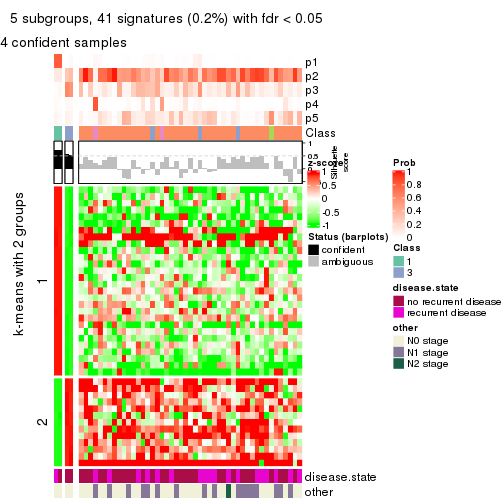
get_signatures(res, k = 6)
Signature heatmaps where rows are not scaled:
get_signatures(res, k = 2, scale_rows = FALSE)

get_signatures(res, k = 3, scale_rows = FALSE)
get_signatures(res, k = 4, scale_rows = FALSE)
get_signatures(res, k = 5, scale_rows = FALSE)
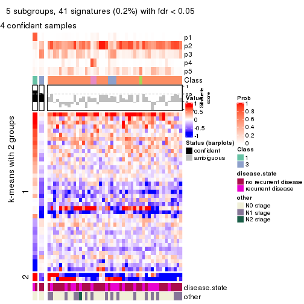
get_signatures(res, k = 6, scale_rows = FALSE)
Compare the overlap of signatures from different k:
compare_signatures(res)
get_signature() returns a data frame invisibly. TO get the list of signatures, the function
call should be assigned to a variable explicitly. In following code, if plot argument is set
to FALSE, no heatmap is plotted while only the differential analysis is performed.
# code only for demonstration
tb = get_signature(res, k = ..., plot = FALSE)
An example of the output of tb is:
#> which_row fdr mean_1 mean_2 scaled_mean_1 scaled_mean_2 km
#> 1 38 0.042760348 8.373488 9.131774 -0.5533452 0.5164555 1
#> 2 40 0.018707592 7.106213 8.469186 -0.6173731 0.5762149 1
#> 3 55 0.019134737 10.221463 11.207825 -0.6159697 0.5749050 1
#> 4 59 0.006059896 5.921854 7.869574 -0.6899429 0.6439467 1
#> 5 60 0.018055526 8.928898 10.211722 -0.6204761 0.5791110 1
#> 6 98 0.009384629 15.714769 14.887706 0.6635654 -0.6193277 2
...
The columns in tb are:
which_row: row indices corresponding to the input matrix.fdr: FDR for the differential test. mean_x: The mean value in group x.scaled_mean_x: The mean value in group x after rows are scaled.km: Row groups if k-means clustering is applied to rows.UMAP plot which shows how samples are separated.
dimension_reduction(res, k = 2, method = "UMAP")

dimension_reduction(res, k = 3, method = "UMAP")
dimension_reduction(res, k = 4, method = "UMAP")
dimension_reduction(res, k = 5, method = "UMAP")
dimension_reduction(res, k = 6, method = "UMAP")
Following heatmap shows how subgroups are split when increasing k:
collect_classes(res)
Test correlation between subgroups and known annotations. If the known annotation is numeric, one-way ANOVA test is applied, and if the known annotation is discrete, chi-squared contingency table test is applied.
test_to_known_factors(res)
#> n disease.state(p) other(p) k
#> SD:hclust 49 1.000 0.575 2
#> SD:hclust 22 1.000 0.533 3
#> SD:hclust 7 0.526 0.459 4
#> SD:hclust 4 1.000 NA 5
#> SD:hclust 13 0.457 0.302 6
If matrix rows can be associated to genes, consider to use GO_Enrichment(res,
...) to perform function enrichment for the signature genes.
The object with results only for a single top-value method and a single partition method can be extracted as:
res = res_list["SD", "kmeans"]
# you can also extract it by
# res = res_list["SD:kmeans"]
A summary of res and all the functions that can be applied to it:
res
#> A 'ConsensusPartition' object with k = 2, 3, 4, 5, 6.
#> On a matrix with 20180 rows and 51 columns.
#> Top rows (1000, 2000, 3000, 4000, 5000) are extracted by 'SD' method.
#> Subgroups are detected by 'kmeans' method.
#> Performed in total 1250 partitions by row resampling.
#> Best k for subgroups seems to be 2.
#>
#> Following methods can be applied to this 'ConsensusPartition' object:
#> [1] "cola_report" "collect_classes" "collect_plots"
#> [4] "collect_stats" "colnames" "compare_signatures"
#> [7] "consensus_heatmap" "dimension_reduction" "functional_enrichment"
#> [10] "get_anno_col" "get_anno" "get_classes"
#> [13] "get_consensus" "get_matrix" "get_membership"
#> [16] "get_param" "get_signatures" "get_stats"
#> [19] "is_best_k" "is_stable_k" "membership_heatmap"
#> [22] "ncol" "nrow" "plot_ecdf"
#> [25] "rownames" "select_partition_number" "show"
#> [28] "suggest_best_k" "test_to_known_factors"
collect_plots() function collects all the plots made from res for all k (number of partitions)
into one single page to provide an easy and fast comparison between different k.
collect_plots(res)
The plots are:
k and the heatmap of
predicted classes for each k.k.k.k.All the plots in panels can be made by individual functions and they are plotted later in this section.
select_partition_number() produces several plots showing different
statistics for choosing “optimized” k. There are following statistics:
k;k, the area increased is defined as \(A_k - A_{k-1}\).The detailed explanations of these statistics can be found in the cola vignette.
Generally speaking, lower PAC score, higher mean silhouette score or higher
concordance corresponds to better partition. Rand index and Jaccard index
measure how similar the current partition is compared to partition with k-1.
If they are too similar, we won't accept k is better than k-1.
select_partition_number(res)
The numeric values for all these statistics can be obtained by get_stats().
get_stats(res)
#> k 1-PAC mean_silhouette concordance area_increased Rand Jaccard
#> 2 2 0.0399 0.357 0.716 0.4097 0.758 0.758
#> 3 3 0.0417 0.362 0.619 0.3460 0.584 0.480
#> 4 4 0.1126 0.249 0.553 0.1357 0.661 0.414
#> 5 5 0.1596 0.145 0.531 0.0819 0.662 0.404
#> 6 6 0.2340 0.174 0.539 0.0472 0.843 0.642
suggest_best_k() suggests the best \(k\) based on these statistics. The rules are as follows:
NA.suggest_best_k(res)
#> [1] 2
Following shows the table of the partitions (You need to click the show/hide
code output link to see it). The membership matrix (columns with name p*)
is inferred by
clue::cl_consensus()
function with the SE method. Basically the value in the membership matrix
represents the probability to belong to a certain group. The finall class
label for an item is determined with the group with highest probability it
belongs to.
In get_classes() function, the entropy is calculated from the membership
matrix and the silhouette score is calculated from the consensus matrix.
cbind(get_classes(res, k = 2), get_membership(res, k = 2))
#> class entropy silhouette p1 p2
#> GSM115459 2 0.975 0.18539 0.408 0.592
#> GSM115460 2 0.343 0.54395 0.064 0.936
#> GSM115461 2 0.343 0.54395 0.064 0.936
#> GSM115462 2 0.904 0.31257 0.320 0.680
#> GSM115463 2 0.939 0.15468 0.356 0.644
#> GSM115464 2 0.662 0.51703 0.172 0.828
#> GSM115465 2 0.541 0.51208 0.124 0.876
#> GSM115466 2 0.278 0.54915 0.048 0.952
#> GSM115467 2 1.000 -0.06922 0.500 0.500
#> GSM115468 2 0.996 0.04567 0.464 0.536
#> GSM115469 2 0.634 0.51780 0.160 0.840
#> GSM115470 2 0.886 0.27838 0.304 0.696
#> GSM115471 2 0.224 0.54817 0.036 0.964
#> GSM115472 2 0.990 -0.03361 0.440 0.560
#> GSM115473 2 0.932 0.32860 0.348 0.652
#> GSM115474 2 0.625 0.49624 0.156 0.844
#> GSM115475 2 0.909 0.34095 0.324 0.676
#> GSM115476 1 0.891 0.63556 0.692 0.308
#> GSM115477 2 0.802 0.41443 0.244 0.756
#> GSM115478 2 0.775 0.44180 0.228 0.772
#> GSM115479 1 0.833 0.66468 0.736 0.264
#> GSM115480 2 0.753 0.45144 0.216 0.784
#> GSM115481 2 0.904 0.34956 0.320 0.680
#> GSM115482 1 0.814 0.69672 0.748 0.252
#> GSM115483 2 0.996 0.09423 0.464 0.536
#> GSM115484 2 0.971 0.14997 0.400 0.600
#> GSM115485 2 0.430 0.53585 0.088 0.912
#> GSM115486 2 0.443 0.53955 0.092 0.908
#> GSM115487 2 0.981 0.19491 0.420 0.580
#> GSM115488 2 0.443 0.53153 0.092 0.908
#> GSM115489 2 0.932 0.16839 0.348 0.652
#> GSM115490 2 1.000 0.01112 0.496 0.504
#> GSM115491 2 0.973 0.14823 0.404 0.596
#> GSM115492 2 0.634 0.48550 0.160 0.840
#> GSM115493 2 0.981 -0.00959 0.420 0.580
#> GSM115494 1 0.839 0.56141 0.732 0.268
#> GSM115495 2 0.689 0.47806 0.184 0.816
#> GSM115496 2 0.988 0.09349 0.436 0.564
#> GSM115497 2 0.995 0.14615 0.460 0.540
#> GSM115498 2 0.625 0.49894 0.156 0.844
#> GSM115499 2 0.886 0.25926 0.304 0.696
#> GSM115500 1 0.909 0.58887 0.676 0.324
#> GSM115501 1 1.000 0.15801 0.512 0.488
#> GSM115502 2 0.981 0.08685 0.420 0.580
#> GSM115503 2 0.653 0.49338 0.168 0.832
#> GSM115504 2 0.373 0.53914 0.072 0.928
#> GSM115505 2 0.295 0.54095 0.052 0.948
#> GSM115506 1 0.615 0.64129 0.848 0.152
#> GSM115507 2 0.781 0.44065 0.232 0.768
#> GSM115509 2 0.969 0.27632 0.396 0.604
#> GSM115508 2 0.969 0.11875 0.396 0.604
cbind(get_classes(res, k = 3), get_membership(res, k = 3))
#> class entropy silhouette p1 p2 p3
#> GSM115459 2 0.894 0.2173 0.160 0.548 0.292
#> GSM115460 3 0.652 0.2312 0.004 0.492 0.504
#> GSM115461 3 0.652 0.2312 0.004 0.492 0.504
#> GSM115462 3 0.623 0.4395 0.020 0.280 0.700
#> GSM115463 3 0.982 0.2515 0.260 0.320 0.420
#> GSM115464 2 0.840 -0.1391 0.084 0.472 0.444
#> GSM115465 3 0.678 0.3726 0.016 0.396 0.588
#> GSM115466 2 0.746 -0.1493 0.036 0.524 0.440
#> GSM115467 2 0.698 0.4505 0.228 0.704 0.068
#> GSM115468 2 0.730 0.3865 0.228 0.688 0.084
#> GSM115469 2 0.560 0.4952 0.016 0.756 0.228
#> GSM115470 3 0.845 0.3838 0.140 0.256 0.604
#> GSM115471 2 0.617 0.1070 0.004 0.636 0.360
#> GSM115472 3 0.903 0.3912 0.244 0.200 0.556
#> GSM115473 3 0.609 0.4978 0.124 0.092 0.784
#> GSM115474 3 0.800 0.3633 0.076 0.344 0.580
#> GSM115475 3 0.434 0.4973 0.024 0.120 0.856
#> GSM115476 1 0.895 0.3900 0.532 0.148 0.320
#> GSM115477 3 0.622 0.4416 0.016 0.296 0.688
#> GSM115478 2 0.134 0.5696 0.016 0.972 0.012
#> GSM115479 1 0.511 0.6962 0.828 0.048 0.124
#> GSM115480 2 0.153 0.5764 0.004 0.964 0.032
#> GSM115481 3 0.530 0.4881 0.068 0.108 0.824
#> GSM115482 1 0.887 0.6803 0.576 0.196 0.228
#> GSM115483 3 0.899 0.1011 0.176 0.272 0.552
#> GSM115484 2 0.659 0.5469 0.128 0.756 0.116
#> GSM115485 3 0.593 0.4141 0.000 0.356 0.644
#> GSM115486 3 0.685 0.4355 0.036 0.300 0.664
#> GSM115487 3 0.589 0.4971 0.104 0.100 0.796
#> GSM115488 2 0.502 0.4602 0.004 0.776 0.220
#> GSM115489 3 0.976 0.2543 0.240 0.332 0.428
#> GSM115490 3 0.905 0.0955 0.196 0.252 0.552
#> GSM115491 2 0.686 0.5385 0.128 0.740 0.132
#> GSM115492 3 0.599 0.4642 0.008 0.304 0.688
#> GSM115493 3 0.980 0.1234 0.240 0.356 0.404
#> GSM115494 1 0.608 0.6670 0.772 0.168 0.060
#> GSM115495 2 0.259 0.5723 0.004 0.924 0.072
#> GSM115496 2 0.693 0.5054 0.176 0.728 0.096
#> GSM115497 3 0.850 0.1820 0.172 0.216 0.612
#> GSM115498 3 0.784 0.1017 0.052 0.460 0.488
#> GSM115499 3 0.967 0.2363 0.220 0.344 0.436
#> GSM115500 3 0.890 -0.3217 0.396 0.124 0.480
#> GSM115501 3 0.948 0.3347 0.240 0.264 0.496
#> GSM115502 2 0.975 0.0471 0.252 0.440 0.308
#> GSM115503 2 0.622 0.4459 0.032 0.728 0.240
#> GSM115504 3 0.633 0.3667 0.004 0.396 0.600
#> GSM115505 2 0.552 0.4012 0.004 0.728 0.268
#> GSM115506 1 0.882 0.6601 0.576 0.176 0.248
#> GSM115507 2 0.388 0.5725 0.068 0.888 0.044
#> GSM115509 3 0.828 0.4506 0.160 0.208 0.632
#> GSM115508 3 0.888 0.4156 0.204 0.220 0.576
cbind(get_classes(res, k = 4), get_membership(res, k = 4))
#> class entropy silhouette p1 p2 p3 p4
#> GSM115459 3 0.8071 -0.0900 0.020 0.304 0.472 0.204
#> GSM115460 2 0.0707 0.4203 0.000 0.980 0.000 0.020
#> GSM115461 2 0.0707 0.4203 0.000 0.980 0.000 0.020
#> GSM115462 2 0.6667 0.2499 0.020 0.660 0.208 0.112
#> GSM115463 2 0.7558 0.3382 0.156 0.616 0.176 0.052
#> GSM115464 2 0.7626 0.1832 0.072 0.616 0.116 0.196
#> GSM115465 2 0.3610 0.4380 0.024 0.872 0.080 0.024
#> GSM115466 2 0.3966 0.3685 0.032 0.852 0.020 0.096
#> GSM115467 4 0.7725 0.6819 0.084 0.328 0.056 0.532
#> GSM115468 4 0.8357 0.5424 0.080 0.212 0.164 0.544
#> GSM115469 2 0.7459 -0.4081 0.004 0.500 0.168 0.328
#> GSM115470 2 0.7316 0.1328 0.112 0.660 0.108 0.120
#> GSM115471 2 0.3790 0.2118 0.000 0.820 0.016 0.164
#> GSM115472 2 0.8123 0.2352 0.148 0.520 0.284 0.048
#> GSM115473 3 0.7185 0.2214 0.056 0.352 0.548 0.044
#> GSM115474 2 0.7058 0.3572 0.056 0.632 0.244 0.068
#> GSM115475 2 0.7197 -0.0185 0.044 0.488 0.420 0.048
#> GSM115476 1 0.9110 0.1758 0.416 0.120 0.320 0.144
#> GSM115477 2 0.4139 0.3307 0.000 0.800 0.176 0.024
#> GSM115478 4 0.6315 0.6754 0.032 0.416 0.016 0.536
#> GSM115479 1 0.4745 0.5010 0.820 0.068 0.080 0.032
#> GSM115480 4 0.6095 0.7030 0.004 0.404 0.040 0.552
#> GSM115481 2 0.8026 -0.0660 0.056 0.448 0.400 0.096
#> GSM115482 1 0.9142 0.4513 0.392 0.084 0.212 0.312
#> GSM115483 3 0.9244 0.0886 0.092 0.268 0.400 0.240
#> GSM115484 4 0.6671 0.6465 0.040 0.424 0.024 0.512
#> GSM115485 2 0.4599 0.4090 0.012 0.792 0.168 0.028
#> GSM115486 2 0.5440 0.1297 0.000 0.596 0.384 0.020
#> GSM115487 2 0.8036 -0.0838 0.060 0.452 0.396 0.092
#> GSM115488 2 0.5182 -0.2027 0.000 0.684 0.028 0.288
#> GSM115489 2 0.7750 0.3131 0.156 0.588 0.208 0.048
#> GSM115490 3 0.9291 0.0643 0.100 0.244 0.404 0.252
#> GSM115491 4 0.7404 0.6259 0.056 0.440 0.048 0.456
#> GSM115492 2 0.4315 0.4125 0.012 0.816 0.144 0.028
#> GSM115493 2 0.9018 0.1685 0.144 0.476 0.140 0.240
#> GSM115494 1 0.4349 0.5147 0.840 0.084 0.040 0.036
#> GSM115495 2 0.5806 -0.6516 0.008 0.496 0.016 0.480
#> GSM115496 4 0.8226 0.6269 0.092 0.372 0.076 0.460
#> GSM115497 3 0.7108 0.1166 0.060 0.076 0.640 0.224
#> GSM115498 2 0.7305 0.3406 0.044 0.628 0.204 0.124
#> GSM115499 2 0.7939 0.3211 0.136 0.592 0.192 0.080
#> GSM115500 3 0.7605 0.0379 0.200 0.128 0.612 0.060
#> GSM115501 2 0.8276 0.3224 0.140 0.576 0.144 0.140
#> GSM115502 2 0.9411 0.0388 0.160 0.412 0.268 0.160
#> GSM115503 2 0.7738 -0.3117 0.036 0.464 0.100 0.400
#> GSM115504 2 0.3172 0.4470 0.008 0.884 0.088 0.020
#> GSM115505 2 0.4675 -0.0757 0.000 0.736 0.020 0.244
#> GSM115506 1 0.8851 0.4266 0.388 0.052 0.236 0.324
#> GSM115507 4 0.5898 0.7215 0.012 0.396 0.020 0.572
#> GSM115509 3 0.7382 0.2625 0.040 0.300 0.572 0.088
#> GSM115508 3 0.6569 -0.0480 0.056 0.464 0.472 0.008
cbind(get_classes(res, k = 5), get_membership(res, k = 5))
#> class entropy silhouette p1 p2 p3 p4 p5
#> GSM115459 1 0.6892 -0.0315 0.424 0.140 0.412 0.016 0.008
#> GSM115460 1 0.5251 0.0520 0.576 0.044 0.000 0.376 0.004
#> GSM115461 1 0.5251 0.0520 0.576 0.044 0.000 0.376 0.004
#> GSM115462 4 0.6571 0.3399 0.440 0.048 0.060 0.448 0.004
#> GSM115463 1 0.0932 0.3259 0.972 0.000 0.004 0.004 0.020
#> GSM115464 1 0.5507 0.2928 0.740 0.104 0.036 0.100 0.020
#> GSM115465 1 0.5616 -0.1487 0.488 0.012 0.016 0.464 0.020
#> GSM115466 1 0.6474 -0.0604 0.500 0.076 0.004 0.388 0.032
#> GSM115467 2 0.6408 0.4650 0.364 0.536 0.056 0.020 0.024
#> GSM115468 2 0.7807 0.2914 0.288 0.484 0.140 0.056 0.032
#> GSM115469 1 0.8187 -0.1666 0.408 0.308 0.192 0.068 0.024
#> GSM115470 4 0.7855 0.4055 0.224 0.076 0.052 0.536 0.112
#> GSM115471 1 0.6349 0.1596 0.580 0.124 0.012 0.276 0.008
#> GSM115472 1 0.2731 0.2329 0.876 0.000 0.004 0.104 0.016
#> GSM115473 3 0.8555 -0.0260 0.348 0.092 0.352 0.172 0.036
#> GSM115474 1 0.3173 0.2847 0.880 0.016 0.032 0.060 0.012
#> GSM115475 4 0.7146 0.4613 0.264 0.000 0.180 0.508 0.048
#> GSM115476 1 0.8653 -0.3742 0.452 0.080 0.148 0.084 0.236
#> GSM115477 4 0.5280 0.4132 0.352 0.024 0.016 0.604 0.004
#> GSM115478 2 0.6531 0.5163 0.248 0.620 0.032 0.056 0.044
#> GSM115479 5 0.5168 0.7613 0.188 0.024 0.024 0.032 0.732
#> GSM115480 2 0.5809 0.5237 0.280 0.636 0.028 0.044 0.012
#> GSM115481 4 0.8378 0.3381 0.268 0.024 0.256 0.380 0.072
#> GSM115482 1 0.9942 -0.4687 0.220 0.208 0.148 0.216 0.208
#> GSM115483 3 0.7522 0.3461 0.060 0.124 0.568 0.204 0.044
#> GSM115484 1 0.6906 -0.2916 0.448 0.428 0.036 0.060 0.028
#> GSM115485 1 0.6291 -0.0497 0.560 0.004 0.072 0.332 0.032
#> GSM115486 1 0.5843 0.1280 0.580 0.004 0.336 0.068 0.012
#> GSM115487 1 0.8499 -0.3947 0.384 0.072 0.196 0.308 0.040
#> GSM115488 1 0.7372 0.0500 0.436 0.280 0.016 0.256 0.012
#> GSM115489 1 0.1623 0.3165 0.948 0.000 0.020 0.016 0.016
#> GSM115490 3 0.7557 0.3464 0.060 0.116 0.564 0.212 0.048
#> GSM115491 1 0.6328 -0.3043 0.492 0.420 0.020 0.044 0.024
#> GSM115492 1 0.6170 -0.1570 0.496 0.004 0.060 0.416 0.024
#> GSM115493 1 0.7191 0.1005 0.592 0.152 0.020 0.168 0.068
#> GSM115494 5 0.4253 0.7689 0.204 0.032 0.008 0.000 0.756
#> GSM115495 2 0.6208 0.3624 0.364 0.544 0.020 0.060 0.012
#> GSM115496 1 0.6347 -0.3199 0.504 0.408 0.028 0.032 0.028
#> GSM115497 3 0.7948 0.2066 0.088 0.160 0.520 0.200 0.032
#> GSM115498 1 0.6632 0.2268 0.664 0.076 0.064 0.152 0.044
#> GSM115499 1 0.0613 0.3294 0.984 0.008 0.000 0.004 0.004
#> GSM115500 3 0.8553 0.2418 0.308 0.056 0.396 0.172 0.068
#> GSM115501 1 0.4761 0.2321 0.780 0.044 0.024 0.132 0.020
#> GSM115502 1 0.4946 0.2586 0.776 0.048 0.116 0.044 0.016
#> GSM115503 2 0.7739 0.1210 0.140 0.432 0.092 0.332 0.004
#> GSM115504 1 0.6388 -0.0239 0.532 0.016 0.060 0.368 0.024
#> GSM115505 1 0.6904 0.1258 0.424 0.208 0.000 0.356 0.012
#> GSM115506 2 0.9825 -0.3603 0.140 0.252 0.152 0.208 0.248
#> GSM115507 2 0.5727 0.5288 0.288 0.636 0.016 0.036 0.024
#> GSM115509 1 0.7732 -0.2030 0.396 0.032 0.384 0.156 0.032
#> GSM115508 1 0.5472 0.1449 0.640 0.004 0.288 0.056 0.012
cbind(get_classes(res, k = 6), get_membership(res, k = 6))
#> class entropy silhouette p1 p2 p3 p4 p5 p6
#> GSM115459 3 0.549 0.1123 0.408 0.072 0.504 0.004 0.008 0.004
#> GSM115460 1 0.567 -0.0155 0.564 0.040 0.004 0.064 0.328 0.000
#> GSM115461 1 0.567 -0.0155 0.564 0.040 0.004 0.064 0.328 0.000
#> GSM115462 1 0.616 -0.1770 0.488 0.016 0.052 0.040 0.396 0.008
#> GSM115463 1 0.112 0.3658 0.960 0.000 0.000 0.004 0.028 0.008
#> GSM115464 1 0.437 0.3480 0.800 0.068 0.028 0.008 0.068 0.028
#> GSM115465 5 0.595 0.1921 0.428 0.008 0.020 0.052 0.472 0.020
#> GSM115466 1 0.769 -0.1579 0.424 0.088 0.044 0.076 0.340 0.028
#> GSM115467 2 0.584 0.5482 0.340 0.508 0.004 0.140 0.008 0.000
#> GSM115468 2 0.764 0.1824 0.240 0.416 0.252 0.048 0.024 0.020
#> GSM115469 1 0.710 -0.2352 0.440 0.332 0.144 0.044 0.040 0.000
#> GSM115470 5 0.892 0.3121 0.188 0.076 0.132 0.100 0.408 0.096
#> GSM115471 1 0.636 0.1643 0.552 0.168 0.012 0.036 0.232 0.000
#> GSM115472 1 0.318 0.2948 0.844 0.000 0.024 0.008 0.112 0.012
#> GSM115473 3 0.790 0.3025 0.316 0.060 0.372 0.012 0.192 0.048
#> GSM115474 1 0.323 0.3514 0.856 0.024 0.028 0.012 0.080 0.000
#> GSM115475 5 0.613 0.2692 0.200 0.004 0.084 0.044 0.632 0.036
#> GSM115476 1 0.777 -0.2835 0.448 0.016 0.220 0.168 0.016 0.132
#> GSM115477 5 0.604 0.3520 0.332 0.040 0.028 0.044 0.552 0.004
#> GSM115478 2 0.580 0.5779 0.252 0.632 0.016 0.020 0.036 0.044
#> GSM115479 6 0.381 0.7858 0.108 0.012 0.008 0.008 0.048 0.816
#> GSM115480 2 0.556 0.5886 0.296 0.612 0.044 0.016 0.020 0.012
#> GSM115481 5 0.772 0.1408 0.184 0.056 0.092 0.076 0.536 0.056
#> GSM115482 4 0.879 0.0794 0.180 0.088 0.160 0.412 0.052 0.108
#> GSM115483 4 0.820 0.3915 0.052 0.168 0.128 0.392 0.252 0.008
#> GSM115484 1 0.748 -0.3890 0.396 0.388 0.068 0.084 0.044 0.020
#> GSM115485 1 0.599 -0.1740 0.504 0.000 0.056 0.032 0.384 0.024
#> GSM115486 1 0.619 0.0272 0.536 0.000 0.300 0.024 0.124 0.016
#> GSM115487 1 0.768 -0.2590 0.368 0.056 0.172 0.016 0.356 0.032
#> GSM115488 1 0.653 -0.0856 0.452 0.336 0.008 0.028 0.176 0.000
#> GSM115489 1 0.185 0.3717 0.936 0.008 0.020 0.004 0.020 0.012
#> GSM115490 4 0.820 0.3953 0.040 0.172 0.124 0.400 0.248 0.016
#> GSM115491 1 0.621 -0.3025 0.516 0.364 0.020 0.032 0.056 0.012
#> GSM115492 5 0.600 0.2136 0.432 0.000 0.064 0.024 0.456 0.024
#> GSM115493 1 0.723 0.1743 0.564 0.116 0.044 0.032 0.188 0.056
#> GSM115494 6 0.364 0.7871 0.124 0.016 0.012 0.024 0.004 0.820
#> GSM115495 2 0.553 0.4226 0.376 0.548 0.008 0.020 0.032 0.016
#> GSM115496 1 0.634 -0.2953 0.524 0.344 0.056 0.020 0.044 0.012
#> GSM115497 3 0.495 0.0401 0.044 0.044 0.760 0.032 0.108 0.012
#> GSM115498 1 0.661 0.1975 0.596 0.072 0.032 0.036 0.228 0.036
#> GSM115499 1 0.144 0.3863 0.952 0.024 0.008 0.004 0.004 0.008
#> GSM115500 3 0.887 0.2623 0.276 0.048 0.336 0.156 0.116 0.068
#> GSM115501 1 0.391 0.2711 0.796 0.012 0.020 0.016 0.148 0.008
#> GSM115502 1 0.530 0.1802 0.732 0.028 0.132 0.020 0.044 0.044
#> GSM115503 2 0.827 0.2451 0.164 0.364 0.212 0.024 0.220 0.016
#> GSM115504 1 0.578 -0.2077 0.488 0.004 0.048 0.012 0.420 0.028
#> GSM115505 1 0.727 0.1027 0.444 0.208 0.008 0.084 0.252 0.004
#> GSM115506 4 0.736 0.0879 0.112 0.088 0.032 0.584 0.076 0.108
#> GSM115507 2 0.572 0.5872 0.240 0.636 0.012 0.068 0.036 0.008
#> GSM115509 3 0.669 0.4042 0.340 0.008 0.472 0.020 0.136 0.024
#> GSM115508 1 0.510 -0.0468 0.616 0.000 0.300 0.000 0.064 0.020
Heatmaps for the consensus matrix. It visualizes the probability of two samples to be in a same group.
consensus_heatmap(res, k = 2)
consensus_heatmap(res, k = 3)
consensus_heatmap(res, k = 4)
consensus_heatmap(res, k = 5)
consensus_heatmap(res, k = 6)
Heatmaps for the membership of samples in all partitions to see how consistent they are:
membership_heatmap(res, k = 2)
membership_heatmap(res, k = 3)
membership_heatmap(res, k = 4)

membership_heatmap(res, k = 5)
membership_heatmap(res, k = 6)
As soon as we have had the classes for columns, we can look for signatures which are significantly different between classes which can be candidate marks for certain classes. Following are the heatmaps for signatures.
Signature heatmaps where rows are scaled:
get_signatures(res, k = 2)
get_signatures(res, k = 3)
get_signatures(res, k = 4)
get_signatures(res, k = 5)
get_signatures(res, k = 6)
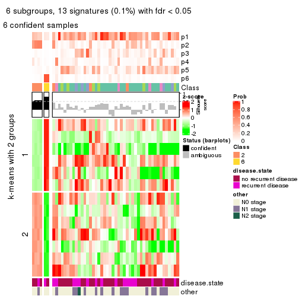
Signature heatmaps where rows are not scaled:
get_signatures(res, k = 2, scale_rows = FALSE)
get_signatures(res, k = 3, scale_rows = FALSE)
get_signatures(res, k = 4, scale_rows = FALSE)
get_signatures(res, k = 5, scale_rows = FALSE)
get_signatures(res, k = 6, scale_rows = FALSE)
Compare the overlap of signatures from different k:
compare_signatures(res)
get_signature() returns a data frame invisibly. TO get the list of signatures, the function
call should be assigned to a variable explicitly. In following code, if plot argument is set
to FALSE, no heatmap is plotted while only the differential analysis is performed.
# code only for demonstration
tb = get_signature(res, k = ..., plot = FALSE)
An example of the output of tb is:
#> which_row fdr mean_1 mean_2 scaled_mean_1 scaled_mean_2 km
#> 1 38 0.042760348 8.373488 9.131774 -0.5533452 0.5164555 1
#> 2 40 0.018707592 7.106213 8.469186 -0.6173731 0.5762149 1
#> 3 55 0.019134737 10.221463 11.207825 -0.6159697 0.5749050 1
#> 4 59 0.006059896 5.921854 7.869574 -0.6899429 0.6439467 1
#> 5 60 0.018055526 8.928898 10.211722 -0.6204761 0.5791110 1
#> 6 98 0.009384629 15.714769 14.887706 0.6635654 -0.6193277 2
...
The columns in tb are:
which_row: row indices corresponding to the input matrix.fdr: FDR for the differential test. mean_x: The mean value in group x.scaled_mean_x: The mean value in group x after rows are scaled.km: Row groups if k-means clustering is applied to rows.UMAP plot which shows how samples are separated.
dimension_reduction(res, k = 2, method = "UMAP")
dimension_reduction(res, k = 3, method = "UMAP")
dimension_reduction(res, k = 4, method = "UMAP")
dimension_reduction(res, k = 5, method = "UMAP")
dimension_reduction(res, k = 6, method = "UMAP")
Following heatmap shows how subgroups are split when increasing k:
collect_classes(res)
Test correlation between subgroups and known annotations. If the known annotation is numeric, one-way ANOVA test is applied, and if the known annotation is discrete, chi-squared contingency table test is applied.
test_to_known_factors(res)
#> n disease.state(p) other(p) k
#> SD:kmeans 18 0.352 1 2
#> SD:kmeans 11 1.000 1 3
#> SD:kmeans 10 1.000 1 4
#> SD:kmeans 5 1.000 1 5
#> SD:kmeans 6 1.000 1 6
If matrix rows can be associated to genes, consider to use GO_Enrichment(res,
...) to perform function enrichment for the signature genes.
The object with results only for a single top-value method and a single partition method can be extracted as:
res = res_list["SD", "skmeans"]
# you can also extract it by
# res = res_list["SD:skmeans"]
A summary of res and all the functions that can be applied to it:
res
#> A 'ConsensusPartition' object with k = 2, 3, 4, 5, 6.
#> On a matrix with 20180 rows and 51 columns.
#> Top rows (1000, 2000, 3000, 4000, 5000) are extracted by 'SD' method.
#> Subgroups are detected by 'skmeans' method.
#> Performed in total 1250 partitions by row resampling.
#> Best k for subgroups seems to be 2.
#>
#> Following methods can be applied to this 'ConsensusPartition' object:
#> [1] "cola_report" "collect_classes" "collect_plots"
#> [4] "collect_stats" "colnames" "compare_signatures"
#> [7] "consensus_heatmap" "dimension_reduction" "functional_enrichment"
#> [10] "get_anno_col" "get_anno" "get_classes"
#> [13] "get_consensus" "get_matrix" "get_membership"
#> [16] "get_param" "get_signatures" "get_stats"
#> [19] "is_best_k" "is_stable_k" "membership_heatmap"
#> [22] "ncol" "nrow" "plot_ecdf"
#> [25] "rownames" "select_partition_number" "show"
#> [28] "suggest_best_k" "test_to_known_factors"
collect_plots() function collects all the plots made from res for all k (number of partitions)
into one single page to provide an easy and fast comparison between different k.
collect_plots(res)
The plots are:
k and the heatmap of
predicted classes for each k.k.k.k.All the plots in panels can be made by individual functions and they are plotted later in this section.
select_partition_number() produces several plots showing different
statistics for choosing “optimized” k. There are following statistics:
k;k, the area increased is defined as \(A_k - A_{k-1}\).The detailed explanations of these statistics can be found in the cola vignette.
Generally speaking, lower PAC score, higher mean silhouette score or higher
concordance corresponds to better partition. Rand index and Jaccard index
measure how similar the current partition is compared to partition with k-1.
If they are too similar, we won't accept k is better than k-1.
select_partition_number(res)
The numeric values for all these statistics can be obtained by get_stats().
get_stats(res)
#> k 1-PAC mean_silhouette concordance area_increased Rand Jaccard
#> 2 2 0.00177 0.344 0.662 0.5073 0.500 0.500
#> 3 3 0.00621 0.297 0.566 0.3277 0.676 0.433
#> 4 4 0.06294 0.251 0.501 0.1224 0.872 0.630
#> 5 5 0.15869 0.188 0.430 0.0648 0.919 0.695
#> 6 6 0.31649 0.164 0.432 0.0431 0.912 0.620
suggest_best_k() suggests the best \(k\) based on these statistics. The rules are as follows:
NA.suggest_best_k(res)
#> [1] 2
Following shows the table of the partitions (You need to click the show/hide
code output link to see it). The membership matrix (columns with name p*)
is inferred by
clue::cl_consensus()
function with the SE method. Basically the value in the membership matrix
represents the probability to belong to a certain group. The finall class
label for an item is determined with the group with highest probability it
belongs to.
In get_classes() function, the entropy is calculated from the membership
matrix and the silhouette score is calculated from the consensus matrix.
cbind(get_classes(res, k = 2), get_membership(res, k = 2))
#> class entropy silhouette p1 p2
#> GSM115459 1 0.584 0.4949 0.860 0.140
#> GSM115460 2 0.760 0.5202 0.220 0.780
#> GSM115461 2 0.781 0.5119 0.232 0.768
#> GSM115462 2 0.767 0.4124 0.224 0.776
#> GSM115463 1 0.943 0.4632 0.640 0.360
#> GSM115464 1 0.987 0.1677 0.568 0.432
#> GSM115465 2 0.634 0.5659 0.160 0.840
#> GSM115466 2 0.978 0.2944 0.412 0.588
#> GSM115467 1 0.552 0.4453 0.872 0.128
#> GSM115468 1 0.738 0.4840 0.792 0.208
#> GSM115469 1 0.985 -0.2184 0.572 0.428
#> GSM115470 2 0.595 0.5654 0.144 0.856
#> GSM115471 2 0.990 0.3292 0.440 0.560
#> GSM115472 1 0.993 0.3691 0.548 0.452
#> GSM115473 2 0.929 0.0754 0.344 0.656
#> GSM115474 1 1.000 0.0835 0.508 0.492
#> GSM115475 2 0.802 0.3592 0.244 0.756
#> GSM115476 1 0.808 0.5087 0.752 0.248
#> GSM115477 2 0.529 0.5556 0.120 0.880
#> GSM115478 1 0.981 -0.1301 0.580 0.420
#> GSM115479 1 0.946 0.4592 0.636 0.364
#> GSM115480 1 0.985 -0.1548 0.572 0.428
#> GSM115481 2 0.844 0.4202 0.272 0.728
#> GSM115482 1 0.921 0.4829 0.664 0.336
#> GSM115483 2 0.781 0.5221 0.232 0.768
#> GSM115484 1 0.958 0.2632 0.620 0.380
#> GSM115485 2 0.563 0.5638 0.132 0.868
#> GSM115486 2 0.949 0.4416 0.368 0.632
#> GSM115487 2 0.969 0.0209 0.396 0.604
#> GSM115488 2 0.999 0.2881 0.480 0.520
#> GSM115489 1 0.921 0.4852 0.664 0.336
#> GSM115490 2 0.767 0.4748 0.224 0.776
#> GSM115491 1 0.753 0.3828 0.784 0.216
#> GSM115492 2 0.541 0.5684 0.124 0.876
#> GSM115493 1 0.991 0.3682 0.556 0.444
#> GSM115494 1 0.753 0.5165 0.784 0.216
#> GSM115495 1 0.990 -0.1908 0.560 0.440
#> GSM115496 1 0.625 0.4643 0.844 0.156
#> GSM115497 1 1.000 0.2234 0.512 0.488
#> GSM115498 1 0.925 0.2070 0.660 0.340
#> GSM115499 1 0.871 0.4717 0.708 0.292
#> GSM115500 1 0.925 0.4642 0.660 0.340
#> GSM115501 1 0.980 0.4390 0.584 0.416
#> GSM115502 1 0.714 0.5185 0.804 0.196
#> GSM115503 2 0.993 0.3110 0.452 0.548
#> GSM115504 2 0.827 0.5322 0.260 0.740
#> GSM115505 2 0.973 0.3704 0.404 0.596
#> GSM115506 1 0.990 0.3942 0.560 0.440
#> GSM115507 1 0.988 -0.0165 0.564 0.436
#> GSM115509 2 0.996 -0.0839 0.464 0.536
#> GSM115508 1 0.943 0.4595 0.640 0.360
cbind(get_classes(res, k = 3), get_membership(res, k = 3))
#> class entropy silhouette p1 p2 p3
#> GSM115459 2 0.940 -0.00345 0.404 0.424 0.172
#> GSM115460 3 0.751 0.28335 0.052 0.344 0.604
#> GSM115461 3 0.726 0.24352 0.036 0.372 0.592
#> GSM115462 3 0.900 0.25239 0.280 0.172 0.548
#> GSM115463 1 0.745 0.49448 0.696 0.120 0.184
#> GSM115464 1 0.998 0.00540 0.364 0.324 0.312
#> GSM115465 3 0.870 0.39491 0.180 0.228 0.592
#> GSM115466 2 0.979 -0.06980 0.236 0.400 0.364
#> GSM115467 2 0.712 0.34737 0.272 0.672 0.056
#> GSM115468 2 0.860 0.14241 0.380 0.516 0.104
#> GSM115469 2 0.551 0.48966 0.056 0.808 0.136
#> GSM115470 3 0.873 0.39260 0.176 0.236 0.588
#> GSM115471 2 0.751 0.32732 0.068 0.644 0.288
#> GSM115472 1 0.836 0.30880 0.556 0.096 0.348
#> GSM115473 3 0.879 0.08869 0.392 0.116 0.492
#> GSM115474 3 0.952 -0.17909 0.396 0.188 0.416
#> GSM115475 3 0.759 0.30420 0.288 0.072 0.640
#> GSM115476 1 0.727 0.50091 0.712 0.156 0.132
#> GSM115477 3 0.857 0.41287 0.168 0.228 0.604
#> GSM115478 2 0.581 0.50237 0.092 0.800 0.108
#> GSM115479 1 0.651 0.49952 0.760 0.104 0.136
#> GSM115480 2 0.783 0.44662 0.168 0.672 0.160
#> GSM115481 3 0.864 0.21398 0.344 0.116 0.540
#> GSM115482 1 0.838 0.42887 0.624 0.168 0.208
#> GSM115483 3 0.972 0.22495 0.228 0.348 0.424
#> GSM115484 2 0.866 0.33905 0.244 0.592 0.164
#> GSM115485 3 0.750 0.42205 0.188 0.120 0.692
#> GSM115486 3 0.945 0.16027 0.208 0.304 0.488
#> GSM115487 3 0.839 0.04770 0.432 0.084 0.484
#> GSM115488 2 0.587 0.45749 0.032 0.760 0.208
#> GSM115489 1 0.761 0.47761 0.688 0.168 0.144
#> GSM115490 3 0.976 0.27406 0.272 0.284 0.444
#> GSM115491 2 0.733 0.46055 0.180 0.704 0.116
#> GSM115492 3 0.696 0.44438 0.116 0.152 0.732
#> GSM115493 1 0.986 0.19039 0.416 0.284 0.300
#> GSM115494 1 0.655 0.51115 0.756 0.148 0.096
#> GSM115495 2 0.473 0.49796 0.032 0.840 0.128
#> GSM115496 2 0.808 0.18488 0.384 0.544 0.072
#> GSM115497 1 0.974 0.06570 0.428 0.236 0.336
#> GSM115498 2 0.986 0.03434 0.340 0.400 0.260
#> GSM115499 1 0.948 0.36056 0.492 0.224 0.284
#> GSM115500 1 0.774 0.44050 0.676 0.136 0.188
#> GSM115501 1 0.910 0.40905 0.544 0.192 0.264
#> GSM115502 1 0.876 0.35998 0.576 0.264 0.160
#> GSM115503 2 0.954 0.18387 0.208 0.464 0.328
#> GSM115504 3 0.827 0.35861 0.144 0.228 0.628
#> GSM115505 2 0.752 0.24921 0.048 0.588 0.364
#> GSM115506 1 0.966 0.23211 0.444 0.224 0.332
#> GSM115507 2 0.704 0.45742 0.140 0.728 0.132
#> GSM115509 1 0.984 0.06322 0.392 0.248 0.360
#> GSM115508 1 0.866 0.40282 0.592 0.164 0.244
cbind(get_classes(res, k = 4), get_membership(res, k = 4))
#> class entropy silhouette p1 p2 p3 p4
#> GSM115459 2 0.882 0.09110 0.172 0.424 0.332 0.072
#> GSM115460 4 0.460 0.42319 0.044 0.160 0.004 0.792
#> GSM115461 4 0.482 0.39634 0.040 0.188 0.004 0.768
#> GSM115462 4 0.924 -0.07016 0.220 0.088 0.344 0.348
#> GSM115463 1 0.639 0.43479 0.716 0.056 0.080 0.148
#> GSM115464 3 0.954 0.07229 0.264 0.300 0.324 0.112
#> GSM115465 4 0.732 0.36116 0.112 0.088 0.144 0.656
#> GSM115466 4 0.899 0.22449 0.196 0.228 0.104 0.472
#> GSM115467 2 0.786 0.36108 0.252 0.572 0.108 0.068
#> GSM115468 2 0.891 0.14075 0.252 0.452 0.220 0.076
#> GSM115469 2 0.510 0.44153 0.016 0.776 0.156 0.052
#> GSM115470 4 0.779 0.30565 0.092 0.092 0.220 0.596
#> GSM115471 2 0.685 0.23185 0.044 0.560 0.036 0.360
#> GSM115472 1 0.818 0.24141 0.472 0.056 0.116 0.356
#> GSM115473 3 0.777 0.22023 0.240 0.032 0.560 0.168
#> GSM115474 3 0.925 0.10262 0.248 0.104 0.420 0.228
#> GSM115475 4 0.888 0.03819 0.196 0.068 0.320 0.416
#> GSM115476 1 0.732 0.37168 0.636 0.124 0.188 0.052
#> GSM115477 4 0.824 0.27826 0.152 0.100 0.176 0.572
#> GSM115478 2 0.606 0.48370 0.084 0.740 0.048 0.128
#> GSM115479 1 0.682 0.42060 0.692 0.068 0.108 0.132
#> GSM115480 2 0.765 0.41803 0.112 0.632 0.136 0.120
#> GSM115481 3 0.887 0.21095 0.152 0.112 0.484 0.252
#> GSM115482 1 0.811 0.33595 0.584 0.124 0.184 0.108
#> GSM115483 3 0.966 0.14975 0.176 0.224 0.384 0.216
#> GSM115484 2 0.908 0.25577 0.196 0.480 0.180 0.144
#> GSM115485 3 0.849 -0.00476 0.108 0.084 0.440 0.368
#> GSM115486 3 0.893 0.27855 0.140 0.224 0.492 0.144
#> GSM115487 3 0.869 0.17361 0.240 0.044 0.420 0.296
#> GSM115488 2 0.561 0.45065 0.016 0.740 0.068 0.176
#> GSM115489 1 0.838 0.38068 0.560 0.108 0.172 0.160
#> GSM115490 3 0.929 0.14749 0.208 0.132 0.440 0.220
#> GSM115491 2 0.776 0.39042 0.180 0.608 0.072 0.140
#> GSM115492 4 0.809 0.21676 0.080 0.092 0.304 0.524
#> GSM115493 1 0.950 0.21719 0.420 0.180 0.200 0.200
#> GSM115494 1 0.612 0.41992 0.744 0.072 0.100 0.084
#> GSM115495 2 0.584 0.48843 0.044 0.748 0.064 0.144
#> GSM115496 2 0.858 0.19527 0.316 0.472 0.084 0.128
#> GSM115497 3 0.927 0.24907 0.196 0.160 0.456 0.188
#> GSM115498 2 0.985 0.09137 0.216 0.328 0.192 0.264
#> GSM115499 1 0.963 0.15472 0.376 0.172 0.268 0.184
#> GSM115500 1 0.868 0.14916 0.436 0.120 0.352 0.092
#> GSM115501 1 0.872 0.33970 0.524 0.124 0.168 0.184
#> GSM115502 1 0.922 0.21466 0.404 0.212 0.288 0.096
#> GSM115503 2 0.923 0.08159 0.080 0.352 0.244 0.324
#> GSM115504 4 0.816 0.18349 0.048 0.132 0.336 0.484
#> GSM115505 2 0.799 0.06410 0.056 0.428 0.092 0.424
#> GSM115506 1 0.936 0.22016 0.424 0.136 0.192 0.248
#> GSM115507 2 0.830 0.38023 0.144 0.572 0.160 0.124
#> GSM115509 3 0.863 0.24150 0.188 0.164 0.532 0.116
#> GSM115508 1 0.831 0.11998 0.416 0.052 0.400 0.132
cbind(get_classes(res, k = 5), get_membership(res, k = 5))
#> class entropy silhouette p1 p2 p3 p4 p5
#> GSM115459 5 0.887 -0.05228 0.136 0.272 0.224 0.028 0.340
#> GSM115460 4 0.382 0.48378 0.032 0.112 0.012 0.832 0.012
#> GSM115461 4 0.351 0.47023 0.036 0.132 0.004 0.828 0.000
#> GSM115462 5 0.964 0.01453 0.160 0.108 0.176 0.272 0.284
#> GSM115463 1 0.646 0.35544 0.684 0.056 0.064 0.132 0.064
#> GSM115464 3 0.961 0.01778 0.168 0.224 0.300 0.092 0.216
#> GSM115465 4 0.766 0.40211 0.128 0.052 0.164 0.576 0.080
#> GSM115466 4 0.876 0.30986 0.132 0.152 0.084 0.472 0.160
#> GSM115467 2 0.760 0.22179 0.200 0.508 0.028 0.036 0.228
#> GSM115468 5 0.918 -0.00958 0.184 0.268 0.116 0.076 0.356
#> GSM115469 2 0.595 0.34416 0.020 0.712 0.116 0.060 0.092
#> GSM115470 4 0.756 0.37641 0.096 0.044 0.140 0.588 0.132
#> GSM115471 2 0.628 0.17780 0.020 0.532 0.028 0.380 0.040
#> GSM115472 1 0.911 0.17609 0.360 0.052 0.156 0.256 0.176
#> GSM115473 3 0.860 0.12894 0.228 0.028 0.388 0.100 0.256
#> GSM115474 3 0.894 0.12510 0.200 0.068 0.424 0.124 0.184
#> GSM115475 3 0.791 0.07623 0.128 0.012 0.452 0.304 0.104
#> GSM115476 1 0.694 0.28724 0.636 0.104 0.112 0.024 0.124
#> GSM115477 4 0.861 0.30822 0.092 0.104 0.204 0.480 0.120
#> GSM115478 2 0.684 0.37820 0.072 0.652 0.044 0.140 0.092
#> GSM115479 1 0.719 0.32568 0.628 0.048 0.096 0.104 0.124
#> GSM115480 2 0.765 0.27759 0.108 0.564 0.056 0.068 0.204
#> GSM115481 3 0.547 0.25495 0.068 0.024 0.752 0.096 0.060
#> GSM115482 1 0.784 0.20747 0.516 0.080 0.072 0.064 0.268
#> GSM115483 5 0.974 0.11214 0.132 0.244 0.188 0.148 0.288
#> GSM115484 2 0.928 0.03926 0.156 0.380 0.088 0.152 0.224
#> GSM115485 3 0.772 0.14432 0.060 0.060 0.548 0.224 0.108
#> GSM115486 3 0.885 0.13079 0.092 0.156 0.460 0.124 0.168
#> GSM115487 3 0.905 0.09065 0.268 0.052 0.352 0.124 0.204
#> GSM115488 2 0.477 0.41753 0.004 0.776 0.072 0.116 0.032
#> GSM115489 1 0.822 0.27830 0.524 0.060 0.172 0.120 0.124
#> GSM115490 5 0.983 0.05762 0.180 0.148 0.256 0.160 0.256
#> GSM115491 2 0.792 0.31849 0.132 0.564 0.124 0.064 0.116
#> GSM115492 4 0.858 0.20393 0.112 0.076 0.288 0.432 0.092
#> GSM115493 1 0.976 0.14526 0.304 0.132 0.188 0.176 0.200
#> GSM115494 1 0.705 0.31233 0.632 0.084 0.096 0.040 0.148
#> GSM115495 2 0.575 0.41411 0.032 0.716 0.028 0.152 0.072
#> GSM115496 2 0.895 0.14096 0.252 0.404 0.088 0.088 0.168
#> GSM115497 3 0.924 0.08391 0.152 0.108 0.352 0.104 0.284
#> GSM115498 3 0.963 0.03665 0.184 0.252 0.304 0.140 0.120
#> GSM115499 1 0.969 0.09307 0.316 0.136 0.184 0.144 0.220
#> GSM115500 1 0.841 0.07924 0.404 0.052 0.144 0.072 0.328
#> GSM115501 1 0.886 0.16798 0.436 0.104 0.076 0.180 0.204
#> GSM115502 1 0.955 0.08817 0.308 0.168 0.176 0.092 0.256
#> GSM115503 2 0.964 -0.01566 0.088 0.284 0.188 0.208 0.232
#> GSM115504 4 0.852 0.17628 0.028 0.176 0.304 0.388 0.104
#> GSM115505 2 0.725 0.05933 0.016 0.424 0.068 0.420 0.072
#> GSM115506 1 0.920 0.06189 0.332 0.068 0.116 0.208 0.276
#> GSM115507 2 0.863 0.21586 0.084 0.464 0.096 0.128 0.228
#> GSM115509 3 0.915 0.04296 0.168 0.088 0.336 0.100 0.308
#> GSM115508 1 0.901 0.04606 0.356 0.044 0.244 0.128 0.228
cbind(get_classes(res, k = 6), get_membership(res, k = 6))
#> class entropy silhouette p1 p2 p3 p4 p5 p6
#> GSM115459 6 0.796 0.15200 0.140 0.192 0.144 0.028 0.028 0.468
#> GSM115460 5 0.260 0.41802 0.020 0.056 0.012 0.004 0.896 0.012
#> GSM115461 5 0.270 0.41785 0.016 0.084 0.004 0.004 0.880 0.012
#> GSM115462 4 0.794 0.16806 0.096 0.016 0.140 0.476 0.208 0.064
#> GSM115463 1 0.610 0.35452 0.692 0.060 0.032 0.064 0.100 0.052
#> GSM115464 3 0.946 -0.02179 0.136 0.108 0.312 0.148 0.084 0.212
#> GSM115465 5 0.793 0.28390 0.076 0.072 0.192 0.120 0.504 0.036
#> GSM115466 5 0.907 0.18129 0.152 0.120 0.068 0.124 0.396 0.140
#> GSM115467 2 0.771 0.24443 0.164 0.516 0.036 0.112 0.028 0.144
#> GSM115468 6 0.777 0.10237 0.088 0.216 0.084 0.076 0.028 0.508
#> GSM115469 2 0.539 0.31054 0.004 0.724 0.092 0.056 0.032 0.092
#> GSM115470 5 0.758 0.26329 0.104 0.028 0.076 0.176 0.544 0.072
#> GSM115471 2 0.682 0.17828 0.044 0.516 0.040 0.036 0.324 0.040
#> GSM115472 1 0.869 0.19546 0.384 0.032 0.076 0.120 0.232 0.156
#> GSM115473 3 0.882 0.10378 0.140 0.024 0.368 0.180 0.092 0.196
#> GSM115474 3 0.871 0.11821 0.196 0.056 0.424 0.108 0.084 0.132
#> GSM115475 3 0.845 0.15116 0.076 0.032 0.424 0.196 0.184 0.088
#> GSM115476 1 0.766 0.28554 0.520 0.072 0.040 0.100 0.052 0.216
#> GSM115477 5 0.837 0.03246 0.080 0.028 0.144 0.260 0.408 0.080
#> GSM115478 2 0.687 0.33589 0.044 0.628 0.044 0.072 0.092 0.120
#> GSM115479 1 0.702 0.27604 0.600 0.012 0.068 0.108 0.108 0.104
#> GSM115480 2 0.805 0.18013 0.080 0.504 0.060 0.144 0.052 0.160
#> GSM115481 3 0.704 0.19842 0.048 0.044 0.600 0.160 0.052 0.096
#> GSM115482 1 0.839 0.05216 0.392 0.068 0.036 0.292 0.092 0.120
#> GSM115483 4 0.843 0.13624 0.040 0.160 0.136 0.464 0.100 0.100
#> GSM115484 2 0.917 0.07368 0.104 0.360 0.060 0.180 0.124 0.172
#> GSM115485 3 0.749 0.18724 0.048 0.056 0.548 0.112 0.188 0.048
#> GSM115486 3 0.898 0.07218 0.088 0.088 0.400 0.140 0.096 0.188
#> GSM115487 3 0.869 0.09926 0.200 0.020 0.356 0.224 0.076 0.124
#> GSM115488 2 0.528 0.38320 0.000 0.724 0.068 0.048 0.120 0.040
#> GSM115489 1 0.711 0.31895 0.596 0.048 0.076 0.044 0.072 0.164
#> GSM115490 4 0.799 0.16437 0.080 0.092 0.124 0.524 0.132 0.048
#> GSM115491 2 0.825 0.28494 0.092 0.508 0.112 0.076 0.092 0.120
#> GSM115492 5 0.808 0.08403 0.044 0.036 0.336 0.120 0.384 0.080
#> GSM115493 4 0.978 0.01895 0.192 0.132 0.128 0.260 0.124 0.164
#> GSM115494 1 0.779 0.24525 0.544 0.068 0.108 0.124 0.044 0.112
#> GSM115495 2 0.541 0.37580 0.004 0.724 0.036 0.064 0.104 0.068
#> GSM115496 2 0.891 0.08301 0.256 0.344 0.056 0.088 0.076 0.180
#> GSM115497 6 0.877 0.05259 0.088 0.068 0.228 0.180 0.056 0.380
#> GSM115498 2 0.955 -0.00797 0.156 0.268 0.240 0.076 0.132 0.128
#> GSM115499 1 0.881 0.21008 0.440 0.112 0.148 0.100 0.088 0.112
#> GSM115500 1 0.887 0.04815 0.372 0.056 0.132 0.228 0.060 0.152
#> GSM115501 1 0.911 0.01969 0.308 0.072 0.068 0.280 0.152 0.120
#> GSM115502 1 0.933 0.10222 0.320 0.120 0.144 0.096 0.084 0.236
#> GSM115503 6 0.942 0.04794 0.056 0.212 0.108 0.180 0.156 0.288
#> GSM115504 5 0.811 0.10828 0.056 0.080 0.364 0.040 0.364 0.096
#> GSM115505 5 0.770 0.02721 0.024 0.336 0.076 0.064 0.428 0.072
#> GSM115506 4 0.930 -0.01139 0.280 0.088 0.096 0.288 0.100 0.148
#> GSM115507 2 0.913 0.14532 0.088 0.384 0.088 0.168 0.120 0.152
#> GSM115509 6 0.880 0.00680 0.064 0.092 0.288 0.172 0.052 0.332
#> GSM115508 1 0.883 0.10948 0.368 0.036 0.184 0.092 0.100 0.220
Heatmaps for the consensus matrix. It visualizes the probability of two samples to be in a same group.
consensus_heatmap(res, k = 2)
consensus_heatmap(res, k = 3)
consensus_heatmap(res, k = 4)
consensus_heatmap(res, k = 5)

consensus_heatmap(res, k = 6)
Heatmaps for the membership of samples in all partitions to see how consistent they are:
membership_heatmap(res, k = 2)
membership_heatmap(res, k = 3)
membership_heatmap(res, k = 4)
membership_heatmap(res, k = 5)
membership_heatmap(res, k = 6)
As soon as we have had the classes for columns, we can look for signatures which are significantly different between classes which can be candidate marks for certain classes. Following are the heatmaps for signatures.
Signature heatmaps where rows are scaled:
get_signatures(res, k = 2)
get_signatures(res, k = 3)

get_signatures(res, k = 4)

get_signatures(res, k = 5)

get_signatures(res, k = 6)

Signature heatmaps where rows are not scaled:
get_signatures(res, k = 2, scale_rows = FALSE)
get_signatures(res, k = 3, scale_rows = FALSE)

get_signatures(res, k = 4, scale_rows = FALSE)

get_signatures(res, k = 5, scale_rows = FALSE)

get_signatures(res, k = 6, scale_rows = FALSE)

Compare the overlap of signatures from different k:
compare_signatures(res)
get_signature() returns a data frame invisibly. TO get the list of signatures, the function
call should be assigned to a variable explicitly. In following code, if plot argument is set
to FALSE, no heatmap is plotted while only the differential analysis is performed.
# code only for demonstration
tb = get_signature(res, k = ..., plot = FALSE)
An example of the output of tb is:
#> which_row fdr mean_1 mean_2 scaled_mean_1 scaled_mean_2 km
#> 1 38 0.042760348 8.373488 9.131774 -0.5533452 0.5164555 1
#> 2 40 0.018707592 7.106213 8.469186 -0.6173731 0.5762149 1
#> 3 55 0.019134737 10.221463 11.207825 -0.6159697 0.5749050 1
#> 4 59 0.006059896 5.921854 7.869574 -0.6899429 0.6439467 1
#> 5 60 0.018055526 8.928898 10.211722 -0.6204761 0.5791110 1
#> 6 98 0.009384629 15.714769 14.887706 0.6635654 -0.6193277 2
...
The columns in tb are:
which_row: row indices corresponding to the input matrix.fdr: FDR for the differential test. mean_x: The mean value in group x.scaled_mean_x: The mean value in group x after rows are scaled.km: Row groups if k-means clustering is applied to rows.UMAP plot which shows how samples are separated.
dimension_reduction(res, k = 2, method = "UMAP")
dimension_reduction(res, k = 3, method = "UMAP")
dimension_reduction(res, k = 4, method = "UMAP")
dimension_reduction(res, k = 5, method = "UMAP")
dimension_reduction(res, k = 6, method = "UMAP")
Following heatmap shows how subgroups are split when increasing k:
collect_classes(res)
Test correlation between subgroups and known annotations. If the known annotation is numeric, one-way ANOVA test is applied, and if the known annotation is discrete, chi-squared contingency table test is applied.
test_to_known_factors(res)
#> n disease.state(p) other(p) k
#> SD:skmeans 12 0.48 1 2
#> SD:skmeans 3 1.00 NA 3
#> SD:skmeans 0 NA NA 4
#> SD:skmeans 0 NA NA 5
#> SD:skmeans 0 NA NA 6
If matrix rows can be associated to genes, consider to use GO_Enrichment(res,
...) to perform function enrichment for the signature genes.
The object with results only for a single top-value method and a single partition method can be extracted as:
res = res_list["SD", "pam"]
# you can also extract it by
# res = res_list["SD:pam"]
A summary of res and all the functions that can be applied to it:
res
#> A 'ConsensusPartition' object with k = 2, 3, 4, 5, 6.
#> On a matrix with 20180 rows and 51 columns.
#> Top rows (1000, 2000, 3000, 4000, 5000) are extracted by 'SD' method.
#> Subgroups are detected by 'pam' method.
#> Performed in total 1250 partitions by row resampling.
#> Best k for subgroups seems to be 3.
#>
#> Following methods can be applied to this 'ConsensusPartition' object:
#> [1] "cola_report" "collect_classes" "collect_plots"
#> [4] "collect_stats" "colnames" "compare_signatures"
#> [7] "consensus_heatmap" "dimension_reduction" "functional_enrichment"
#> [10] "get_anno_col" "get_anno" "get_classes"
#> [13] "get_consensus" "get_matrix" "get_membership"
#> [16] "get_param" "get_signatures" "get_stats"
#> [19] "is_best_k" "is_stable_k" "membership_heatmap"
#> [22] "ncol" "nrow" "plot_ecdf"
#> [25] "rownames" "select_partition_number" "show"
#> [28] "suggest_best_k" "test_to_known_factors"
collect_plots() function collects all the plots made from res for all k (number of partitions)
into one single page to provide an easy and fast comparison between different k.
collect_plots(res)
The plots are:
k and the heatmap of
predicted classes for each k.k.k.k.All the plots in panels can be made by individual functions and they are plotted later in this section.
select_partition_number() produces several plots showing different
statistics for choosing “optimized” k. There are following statistics:
k;k, the area increased is defined as \(A_k - A_{k-1}\).The detailed explanations of these statistics can be found in the cola vignette.
Generally speaking, lower PAC score, higher mean silhouette score or higher
concordance corresponds to better partition. Rand index and Jaccard index
measure how similar the current partition is compared to partition with k-1.
If they are too similar, we won't accept k is better than k-1.
select_partition_number(res)
The numeric values for all these statistics can be obtained by get_stats().
get_stats(res)
#> k 1-PAC mean_silhouette concordance area_increased Rand Jaccard
#> 2 2 0.261 0.000 0.822 0.2283 1.000 1.000
#> 3 3 0.229 0.546 0.807 0.2043 0.923 0.923
#> 4 4 0.230 0.350 0.782 0.1095 0.856 0.845
#> 5 5 0.196 0.179 0.792 0.0972 0.831 0.808
#> 6 6 0.233 0.200 0.784 0.0879 0.964 0.956
suggest_best_k() suggests the best \(k\) based on these statistics. The rules are as follows:
NA.suggest_best_k(res)
#> [1] 3
Following shows the table of the partitions (You need to click the show/hide
code output link to see it). The membership matrix (columns with name p*)
is inferred by
clue::cl_consensus()
function with the SE method. Basically the value in the membership matrix
represents the probability to belong to a certain group. The finall class
label for an item is determined with the group with highest probability it
belongs to.
In get_classes() function, the entropy is calculated from the membership
matrix and the silhouette score is calculated from the consensus matrix.
cbind(get_classes(res, k = 2), get_membership(res, k = 2))
#> class entropy silhouette p1 p2
#> GSM115459 1 0.4690 0 0.900 0.100
#> GSM115460 1 0.7219 0 0.800 0.200
#> GSM115461 1 0.7219 0 0.800 0.200
#> GSM115462 1 0.7219 0 0.800 0.200
#> GSM115463 1 0.9710 0 0.600 0.400
#> GSM115464 1 0.6887 0 0.816 0.184
#> GSM115465 1 0.0376 0 0.996 0.004
#> GSM115466 1 0.0000 0 1.000 0.000
#> GSM115467 1 0.7219 0 0.800 0.200
#> GSM115468 1 0.4562 0 0.904 0.096
#> GSM115469 1 0.0000 0 1.000 0.000
#> GSM115470 1 0.1184 0 0.984 0.016
#> GSM115471 1 0.0000 0 1.000 0.000
#> GSM115472 1 0.9686 0 0.604 0.396
#> GSM115473 1 0.7139 0 0.804 0.196
#> GSM115474 1 0.3431 0 0.936 0.064
#> GSM115475 1 0.8327 0 0.736 0.264
#> GSM115476 1 0.9710 0 0.600 0.400
#> GSM115477 1 0.0938 0 0.988 0.012
#> GSM115478 1 0.0000 0 1.000 0.000
#> GSM115479 1 0.9710 0 0.600 0.400
#> GSM115480 1 0.0000 0 1.000 0.000
#> GSM115481 1 0.7299 0 0.796 0.204
#> GSM115482 1 0.9710 0 0.600 0.400
#> GSM115483 1 0.0000 0 1.000 0.000
#> GSM115484 1 0.0000 0 1.000 0.000
#> GSM115485 1 0.0000 0 1.000 0.000
#> GSM115486 1 0.0000 0 1.000 0.000
#> GSM115487 1 0.6801 0 0.820 0.180
#> GSM115488 1 0.0000 0 1.000 0.000
#> GSM115489 1 0.9710 0 0.600 0.400
#> GSM115490 1 0.6623 0 0.828 0.172
#> GSM115491 1 0.5842 0 0.860 0.140
#> GSM115492 1 0.0000 0 1.000 0.000
#> GSM115493 1 0.3584 0 0.932 0.068
#> GSM115494 1 0.9710 0 0.600 0.400
#> GSM115495 1 0.0000 0 1.000 0.000
#> GSM115496 1 0.9710 0 0.600 0.400
#> GSM115497 1 0.9209 0 0.664 0.336
#> GSM115498 1 0.9710 0 0.600 0.400
#> GSM115499 1 0.9710 0 0.600 0.400
#> GSM115500 1 0.9710 0 0.600 0.400
#> GSM115501 1 0.9710 0 0.600 0.400
#> GSM115502 1 0.9710 0 0.600 0.400
#> GSM115503 1 0.0000 0 1.000 0.000
#> GSM115504 1 0.4815 0 0.896 0.104
#> GSM115505 1 0.7219 0 0.800 0.200
#> GSM115506 1 0.9608 0 0.616 0.384
#> GSM115507 1 0.0000 0 1.000 0.000
#> GSM115509 1 0.2778 0 0.952 0.048
#> GSM115508 1 0.9087 0 0.676 0.324
cbind(get_classes(res, k = 3), get_membership(res, k = 3))
#> class entropy silhouette p1 p2 p3
#> GSM115459 1 0.3295 0.6488 0.896 0.096 NA
#> GSM115460 2 0.9522 1.0000 0.400 0.412 NA
#> GSM115461 2 0.9522 1.0000 0.400 0.412 NA
#> GSM115462 1 0.0592 0.6325 0.988 0.000 NA
#> GSM115463 1 0.4702 0.4868 0.788 0.000 NA
#> GSM115464 1 0.1337 0.6389 0.972 0.016 NA
#> GSM115465 1 0.4452 0.6232 0.808 0.192 NA
#> GSM115466 1 0.4399 0.6273 0.812 0.188 NA
#> GSM115467 1 0.0592 0.6325 0.988 0.000 NA
#> GSM115468 1 0.5774 0.4860 0.748 0.232 NA
#> GSM115469 1 0.4399 0.6273 0.812 0.188 NA
#> GSM115470 1 0.5956 0.4258 0.768 0.044 NA
#> GSM115471 1 0.4399 0.6273 0.812 0.188 NA
#> GSM115472 1 0.4654 0.4907 0.792 0.000 NA
#> GSM115473 1 0.0829 0.6342 0.984 0.004 NA
#> GSM115474 1 0.3412 0.6458 0.876 0.124 NA
#> GSM115475 1 0.2448 0.5974 0.924 0.000 NA
#> GSM115476 1 0.4702 0.4868 0.788 0.000 NA
#> GSM115477 1 0.5412 0.4924 0.796 0.032 NA
#> GSM115478 1 0.8484 0.1773 0.616 0.188 NA
#> GSM115479 1 0.5098 0.4189 0.752 0.000 NA
#> GSM115480 1 0.4399 0.6273 0.812 0.188 NA
#> GSM115481 1 0.0747 0.6309 0.984 0.000 NA
#> GSM115482 1 0.4702 0.4868 0.788 0.000 NA
#> GSM115483 1 0.4682 0.6204 0.804 0.192 NA
#> GSM115484 1 0.4399 0.6273 0.812 0.188 NA
#> GSM115485 1 0.4399 0.6273 0.812 0.188 NA
#> GSM115486 1 0.4399 0.6273 0.812 0.188 NA
#> GSM115487 1 0.0424 0.6392 0.992 0.008 NA
#> GSM115488 1 0.4399 0.6273 0.812 0.188 NA
#> GSM115489 1 0.4702 0.4868 0.788 0.000 NA
#> GSM115490 1 0.6260 0.0135 0.552 0.448 NA
#> GSM115491 1 0.2096 0.6462 0.944 0.052 NA
#> GSM115492 1 0.4399 0.6273 0.812 0.188 NA
#> GSM115493 1 0.3340 0.6466 0.880 0.120 NA
#> GSM115494 1 0.4931 0.4802 0.784 0.004 NA
#> GSM115495 1 0.4399 0.6273 0.812 0.188 NA
#> GSM115496 1 0.4702 0.4868 0.788 0.000 NA
#> GSM115497 1 0.6034 0.3099 0.752 0.036 NA
#> GSM115498 1 0.4702 0.4868 0.788 0.000 NA
#> GSM115499 1 0.4702 0.4868 0.788 0.000 NA
#> GSM115500 1 0.4702 0.4868 0.788 0.000 NA
#> GSM115501 1 0.4702 0.4868 0.788 0.000 NA
#> GSM115502 1 0.4702 0.4868 0.788 0.000 NA
#> GSM115503 1 0.4399 0.6273 0.812 0.188 NA
#> GSM115504 1 0.5497 0.4443 0.708 0.292 NA
#> GSM115505 1 0.6079 0.1080 0.612 0.388 NA
#> GSM115506 1 0.5431 0.1504 0.716 0.000 NA
#> GSM115507 1 0.4399 0.6273 0.812 0.188 NA
#> GSM115509 1 0.3686 0.6428 0.860 0.140 NA
#> GSM115508 1 0.3619 0.5527 0.864 0.000 NA
cbind(get_classes(res, k = 4), get_membership(res, k = 4))
#> class entropy silhouette p1 p2 p3 p4
#> GSM115459 1 0.4406 0.417 0.700 0.000 0.000 0.300
#> GSM115460 2 0.4855 1.000 0.400 0.600 0.000 0.000
#> GSM115461 2 0.4855 1.000 0.400 0.600 0.000 0.000
#> GSM115462 1 0.3610 0.488 0.800 0.000 0.000 0.200
#> GSM115463 1 0.0000 0.461 1.000 0.000 0.000 0.000
#> GSM115464 1 0.3764 0.483 0.784 0.000 0.000 0.216
#> GSM115465 1 0.5028 0.276 0.596 0.004 0.000 0.400
#> GSM115466 1 0.4855 0.290 0.600 0.000 0.000 0.400
#> GSM115467 1 0.3610 0.488 0.800 0.000 0.000 0.200
#> GSM115468 1 0.6932 -0.314 0.496 0.004 0.096 0.404
#> GSM115469 1 0.4855 0.290 0.600 0.000 0.000 0.400
#> GSM115470 1 0.7341 -0.185 0.528 0.252 0.000 0.220
#> GSM115471 1 0.4855 0.290 0.600 0.000 0.000 0.400
#> GSM115472 1 0.0188 0.462 0.996 0.000 0.000 0.004
#> GSM115473 1 0.3649 0.487 0.796 0.000 0.000 0.204
#> GSM115474 1 0.4605 0.380 0.664 0.000 0.000 0.336
#> GSM115475 1 0.2868 0.485 0.864 0.000 0.000 0.136
#> GSM115476 1 0.0000 0.461 1.000 0.000 0.000 0.000
#> GSM115477 1 0.6936 0.102 0.588 0.188 0.000 0.224
#> GSM115478 4 0.4843 0.549 0.396 0.000 0.000 0.604
#> GSM115479 1 0.1792 0.339 0.932 0.068 0.000 0.000
#> GSM115480 1 0.5028 0.277 0.596 0.000 0.004 0.400
#> GSM115481 1 0.4317 0.472 0.784 0.016 0.004 0.196
#> GSM115482 1 0.0000 0.461 1.000 0.000 0.000 0.000
#> GSM115483 1 0.5478 0.217 0.580 0.008 0.008 0.404
#> GSM115484 1 0.4855 0.290 0.600 0.000 0.000 0.400
#> GSM115485 1 0.4855 0.290 0.600 0.000 0.000 0.400
#> GSM115486 1 0.4855 0.290 0.600 0.000 0.000 0.400
#> GSM115487 1 0.3801 0.481 0.780 0.000 0.000 0.220
#> GSM115488 1 0.4855 0.290 0.600 0.000 0.000 0.400
#> GSM115489 1 0.0000 0.461 1.000 0.000 0.000 0.000
#> GSM115490 4 0.4250 0.359 0.276 0.000 0.000 0.724
#> GSM115491 1 0.4134 0.455 0.740 0.000 0.000 0.260
#> GSM115492 1 0.4855 0.290 0.600 0.000 0.000 0.400
#> GSM115493 1 0.4585 0.386 0.668 0.000 0.000 0.332
#> GSM115494 1 0.0779 0.432 0.980 0.000 0.016 0.004
#> GSM115495 1 0.4855 0.290 0.600 0.000 0.000 0.400
#> GSM115496 1 0.0000 0.461 1.000 0.000 0.000 0.000
#> GSM115497 3 0.5452 0.000 0.360 0.000 0.616 0.024
#> GSM115498 1 0.0000 0.461 1.000 0.000 0.000 0.000
#> GSM115499 1 0.0000 0.461 1.000 0.000 0.000 0.000
#> GSM115500 1 0.0000 0.461 1.000 0.000 0.000 0.000
#> GSM115501 1 0.0000 0.461 1.000 0.000 0.000 0.000
#> GSM115502 1 0.0000 0.461 1.000 0.000 0.000 0.000
#> GSM115503 1 0.4855 0.290 0.600 0.000 0.000 0.400
#> GSM115504 1 0.6851 -0.277 0.496 0.104 0.000 0.400
#> GSM115505 4 0.7610 0.505 0.400 0.200 0.000 0.400
#> GSM115506 1 0.9488 -0.568 0.372 0.256 0.256 0.116
#> GSM115507 1 0.4855 0.290 0.600 0.000 0.000 0.400
#> GSM115509 1 0.4679 0.361 0.648 0.000 0.000 0.352
#> GSM115508 1 0.1940 0.476 0.924 0.000 0.000 0.076
cbind(get_classes(res, k = 5), get_membership(res, k = 5))
#> class entropy silhouette p1 p2 p3 p4 p5
#> GSM115459 2 0.2653 0.4889 0.096 0.880 0.000 0.000 0.024
#> GSM115460 4 0.4182 1.0000 0.000 0.400 0.000 0.600 0.000
#> GSM115461 4 0.4182 1.0000 0.000 0.400 0.000 0.600 0.000
#> GSM115462 2 0.3109 0.3524 0.200 0.800 0.000 0.000 0.000
#> GSM115463 2 0.4182 -0.5015 0.400 0.600 0.000 0.000 0.000
#> GSM115464 2 0.2966 0.3864 0.184 0.816 0.000 0.000 0.000
#> GSM115465 2 0.0162 0.5551 0.000 0.996 0.000 0.004 0.000
#> GSM115466 2 0.0000 0.5570 0.000 1.000 0.000 0.000 0.000
#> GSM115467 2 0.3109 0.3524 0.200 0.800 0.000 0.000 0.000
#> GSM115468 2 0.5492 0.1305 0.132 0.712 0.128 0.024 0.004
#> GSM115469 2 0.0000 0.5570 0.000 1.000 0.000 0.000 0.000
#> GSM115470 2 0.5511 0.0903 0.032 0.688 0.008 0.224 0.048
#> GSM115471 2 0.0000 0.5570 0.000 1.000 0.000 0.000 0.000
#> GSM115472 2 0.4171 -0.4895 0.396 0.604 0.000 0.000 0.000
#> GSM115473 2 0.3074 0.3612 0.196 0.804 0.000 0.000 0.000
#> GSM115474 2 0.1478 0.5310 0.064 0.936 0.000 0.000 0.000
#> GSM115475 2 0.3586 0.1317 0.264 0.736 0.000 0.000 0.000
#> GSM115476 2 0.4192 -0.5206 0.404 0.596 0.000 0.000 0.000
#> GSM115477 2 0.3003 0.4044 0.000 0.812 0.000 0.188 0.000
#> GSM115478 2 0.3489 0.1453 0.208 0.784 0.004 0.004 0.000
#> GSM115479 1 0.4305 0.0000 0.512 0.488 0.000 0.000 0.000
#> GSM115480 2 0.0324 0.5530 0.000 0.992 0.004 0.000 0.004
#> GSM115481 2 0.4025 0.2634 0.232 0.748 0.008 0.000 0.012
#> GSM115482 2 0.4182 -0.5015 0.400 0.600 0.000 0.000 0.000
#> GSM115483 2 0.2104 0.4811 0.044 0.924 0.000 0.008 0.024
#> GSM115484 2 0.0000 0.5570 0.000 1.000 0.000 0.000 0.000
#> GSM115485 2 0.0000 0.5570 0.000 1.000 0.000 0.000 0.000
#> GSM115486 2 0.0000 0.5570 0.000 1.000 0.000 0.000 0.000
#> GSM115487 2 0.2929 0.3934 0.180 0.820 0.000 0.000 0.000
#> GSM115488 2 0.0000 0.5570 0.000 1.000 0.000 0.000 0.000
#> GSM115489 2 0.4182 -0.5015 0.400 0.600 0.000 0.000 0.000
#> GSM115490 2 0.3999 -0.1749 0.000 0.656 0.000 0.344 0.000
#> GSM115491 2 0.2516 0.4545 0.140 0.860 0.000 0.000 0.000
#> GSM115492 2 0.0000 0.5570 0.000 1.000 0.000 0.000 0.000
#> GSM115493 2 0.1544 0.5284 0.068 0.932 0.000 0.000 0.000
#> GSM115494 2 0.4306 -0.8138 0.492 0.508 0.000 0.000 0.000
#> GSM115495 2 0.0000 0.5570 0.000 1.000 0.000 0.000 0.000
#> GSM115496 2 0.4182 -0.5015 0.400 0.600 0.000 0.000 0.000
#> GSM115497 3 0.3010 0.0000 0.004 0.172 0.824 0.000 0.000
#> GSM115498 2 0.4182 -0.5015 0.400 0.600 0.000 0.000 0.000
#> GSM115499 2 0.4182 -0.5015 0.400 0.600 0.000 0.000 0.000
#> GSM115500 2 0.4182 -0.5015 0.400 0.600 0.000 0.000 0.000
#> GSM115501 2 0.4182 -0.5015 0.400 0.600 0.000 0.000 0.000
#> GSM115502 2 0.4182 -0.5015 0.400 0.600 0.000 0.000 0.000
#> GSM115503 2 0.0000 0.5570 0.000 1.000 0.000 0.000 0.000
#> GSM115504 2 0.2074 0.4523 0.000 0.896 0.000 0.104 0.000
#> GSM115505 2 0.3109 0.1394 0.000 0.800 0.000 0.200 0.000
#> GSM115506 5 0.2389 0.0000 0.004 0.116 0.000 0.000 0.880
#> GSM115507 2 0.0865 0.5378 0.000 0.972 0.024 0.000 0.004
#> GSM115509 2 0.1197 0.5409 0.048 0.952 0.000 0.000 0.000
#> GSM115508 2 0.3913 -0.1901 0.324 0.676 0.000 0.000 0.000
cbind(get_classes(res, k = 6), get_membership(res, k = 6))
#> class entropy silhouette p1 p2 p3 p4 p5 p6
#> GSM115459 2 0.4174 0.1733 0.000 0.732 0.000 NA 0.000 0.084
#> GSM115460 5 0.3756 1.0000 0.000 0.400 0.000 NA 0.600 0.000
#> GSM115461 5 0.3756 1.0000 0.000 0.400 0.000 NA 0.600 0.000
#> GSM115462 2 0.2793 0.3441 0.000 0.800 0.000 NA 0.000 0.200
#> GSM115463 2 0.3756 -0.4564 0.000 0.600 0.000 NA 0.000 0.400
#> GSM115464 2 0.2664 0.3771 0.000 0.816 0.000 NA 0.000 0.184
#> GSM115465 2 0.0146 0.5428 0.000 0.996 0.000 NA 0.004 0.000
#> GSM115466 2 0.0000 0.5446 0.000 1.000 0.000 NA 0.000 0.000
#> GSM115467 2 0.3630 0.3274 0.004 0.780 0.000 NA 0.000 0.176
#> GSM115468 2 0.5507 -0.1415 0.000 0.636 0.024 NA 0.012 0.240
#> GSM115469 2 0.0000 0.5446 0.000 1.000 0.000 NA 0.000 0.000
#> GSM115470 2 0.3659 -0.1294 0.000 0.636 0.000 NA 0.364 0.000
#> GSM115471 2 0.0000 0.5446 0.000 1.000 0.000 NA 0.000 0.000
#> GSM115472 2 0.3747 -0.4446 0.000 0.604 0.000 NA 0.000 0.396
#> GSM115473 2 0.2902 0.3502 0.000 0.800 0.000 NA 0.000 0.196
#> GSM115474 2 0.1327 0.5175 0.000 0.936 0.000 NA 0.000 0.064
#> GSM115475 2 0.4061 0.0472 0.000 0.708 0.000 NA 0.000 0.248
#> GSM115476 2 0.4033 -0.5114 0.000 0.588 0.000 NA 0.004 0.404
#> GSM115477 2 0.2697 0.4092 0.000 0.812 0.000 NA 0.188 0.000
#> GSM115478 2 0.3634 -0.1854 0.000 0.644 0.000 NA 0.000 0.000
#> GSM115479 6 0.3857 0.7949 0.000 0.468 0.000 NA 0.000 0.532
#> GSM115480 2 0.1293 0.5167 0.004 0.956 0.016 NA 0.000 0.020
#> GSM115481 2 0.4310 0.1652 0.024 0.704 0.004 NA 0.000 0.252
#> GSM115482 2 0.3899 -0.4924 0.000 0.592 0.004 NA 0.000 0.404
#> GSM115483 2 0.2300 0.3845 0.000 0.856 0.000 NA 0.000 0.000
#> GSM115484 2 0.0000 0.5446 0.000 1.000 0.000 NA 0.000 0.000
#> GSM115485 2 0.0000 0.5446 0.000 1.000 0.000 NA 0.000 0.000
#> GSM115486 2 0.0000 0.5446 0.000 1.000 0.000 NA 0.000 0.000
#> GSM115487 2 0.2772 0.3822 0.000 0.816 0.000 NA 0.000 0.180
#> GSM115488 2 0.0000 0.5446 0.000 1.000 0.000 NA 0.000 0.000
#> GSM115489 2 0.3756 -0.4564 0.000 0.600 0.000 NA 0.000 0.400
#> GSM115490 2 0.5672 -0.1937 0.024 0.632 0.000 NA 0.224 0.016
#> GSM115491 2 0.2260 0.4425 0.000 0.860 0.000 NA 0.000 0.140
#> GSM115492 2 0.0000 0.5446 0.000 1.000 0.000 NA 0.000 0.000
#> GSM115493 2 0.1387 0.5144 0.000 0.932 0.000 NA 0.000 0.068
#> GSM115494 6 0.3996 0.7880 0.000 0.484 0.000 NA 0.000 0.512
#> GSM115495 2 0.0000 0.5446 0.000 1.000 0.000 NA 0.000 0.000
#> GSM115496 2 0.3756 -0.4564 0.000 0.600 0.000 NA 0.000 0.400
#> GSM115497 3 0.1327 0.0000 0.000 0.064 0.936 NA 0.000 0.000
#> GSM115498 2 0.3756 -0.4564 0.000 0.600 0.000 NA 0.000 0.400
#> GSM115499 2 0.3756 -0.4564 0.000 0.600 0.000 NA 0.000 0.400
#> GSM115500 2 0.3756 -0.4564 0.000 0.600 0.000 NA 0.000 0.400
#> GSM115501 2 0.3756 -0.4564 0.000 0.600 0.000 NA 0.000 0.400
#> GSM115502 2 0.3756 -0.4564 0.000 0.600 0.000 NA 0.000 0.400
#> GSM115503 2 0.0000 0.5446 0.000 1.000 0.000 NA 0.000 0.000
#> GSM115504 2 0.1863 0.4486 0.000 0.896 0.000 NA 0.104 0.000
#> GSM115505 2 0.2793 0.1383 0.000 0.800 0.000 NA 0.200 0.000
#> GSM115506 1 0.1387 0.0000 0.932 0.068 0.000 NA 0.000 0.000
#> GSM115507 2 0.1895 0.4728 0.000 0.912 0.016 NA 0.000 0.072
#> GSM115509 2 0.1578 0.5259 0.012 0.936 0.000 NA 0.000 0.048
#> GSM115508 2 0.3515 -0.1584 0.000 0.676 0.000 NA 0.000 0.324
Heatmaps for the consensus matrix. It visualizes the probability of two samples to be in a same group.
consensus_heatmap(res, k = 2)
consensus_heatmap(res, k = 3)
consensus_heatmap(res, k = 4)
consensus_heatmap(res, k = 5)
consensus_heatmap(res, k = 6)
Heatmaps for the membership of samples in all partitions to see how consistent they are:
membership_heatmap(res, k = 2)
membership_heatmap(res, k = 3)
membership_heatmap(res, k = 4)
membership_heatmap(res, k = 5)
membership_heatmap(res, k = 6)
As soon as we have had the classes for columns, we can look for signatures which are significantly different between classes which can be candidate marks for certain classes. Following are the heatmaps for signatures.
Signature heatmaps where rows are scaled:
get_signatures(res, k = 2)

get_signatures(res, k = 3)
get_signatures(res, k = 4)
get_signatures(res, k = 5)
get_signatures(res, k = 6)
Signature heatmaps where rows are not scaled:
get_signatures(res, k = 2, scale_rows = FALSE)

get_signatures(res, k = 3, scale_rows = FALSE)
get_signatures(res, k = 4, scale_rows = FALSE)
get_signatures(res, k = 5, scale_rows = FALSE)
get_signatures(res, k = 6, scale_rows = FALSE)

Compare the overlap of signatures from different k:
compare_signatures(res)
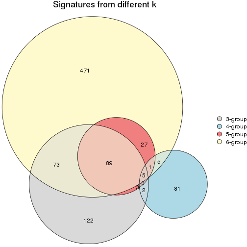
get_signature() returns a data frame invisibly. TO get the list of signatures, the function
call should be assigned to a variable explicitly. In following code, if plot argument is set
to FALSE, no heatmap is plotted while only the differential analysis is performed.
# code only for demonstration
tb = get_signature(res, k = ..., plot = FALSE)
An example of the output of tb is:
#> which_row fdr mean_1 mean_2 scaled_mean_1 scaled_mean_2 km
#> 1 38 0.042760348 8.373488 9.131774 -0.5533452 0.5164555 1
#> 2 40 0.018707592 7.106213 8.469186 -0.6173731 0.5762149 1
#> 3 55 0.019134737 10.221463 11.207825 -0.6159697 0.5749050 1
#> 4 59 0.006059896 5.921854 7.869574 -0.6899429 0.6439467 1
#> 5 60 0.018055526 8.928898 10.211722 -0.6204761 0.5791110 1
#> 6 98 0.009384629 15.714769 14.887706 0.6635654 -0.6193277 2
...
The columns in tb are:
which_row: row indices corresponding to the input matrix.fdr: FDR for the differential test. mean_x: The mean value in group x.scaled_mean_x: The mean value in group x after rows are scaled.km: Row groups if k-means clustering is applied to rows.UMAP plot which shows how samples are separated.
dimension_reduction(res, k = 2, method = "UMAP")
dimension_reduction(res, k = 3, method = "UMAP")
dimension_reduction(res, k = 4, method = "UMAP")
dimension_reduction(res, k = 5, method = "UMAP")
dimension_reduction(res, k = 6, method = "UMAP")
Following heatmap shows how subgroups are split when increasing k:
collect_classes(res)
Test correlation between subgroups and known annotations. If the known annotation is numeric, one-way ANOVA test is applied, and if the known annotation is discrete, chi-squared contingency table test is applied.
test_to_known_factors(res)
#> n disease.state(p) other(p) k
#> SD:pam 0 NA NA 2
#> SD:pam 29 0.932 0.617 3
#> SD:pam 4 1.000 1.000 4
#> SD:pam 18 0.791 0.669 5
#> SD:pam 19 0.533 0.311 6
If matrix rows can be associated to genes, consider to use GO_Enrichment(res,
...) to perform function enrichment for the signature genes.
The object with results only for a single top-value method and a single partition method can be extracted as:
res = res_list["SD", "mclust"]
# you can also extract it by
# res = res_list["SD:mclust"]
A summary of res and all the functions that can be applied to it:
res
#> A 'ConsensusPartition' object with k = 2, 3, 4, 5, 6.
#> On a matrix with 20180 rows and 51 columns.
#> Top rows (1000, 2000, 3000, 4000, 5000) are extracted by 'SD' method.
#> Subgroups are detected by 'mclust' method.
#> Performed in total 1250 partitions by row resampling.
#> Best k for subgroups seems to be 6.
#>
#> Following methods can be applied to this 'ConsensusPartition' object:
#> [1] "cola_report" "collect_classes" "collect_plots"
#> [4] "collect_stats" "colnames" "compare_signatures"
#> [7] "consensus_heatmap" "dimension_reduction" "functional_enrichment"
#> [10] "get_anno_col" "get_anno" "get_classes"
#> [13] "get_consensus" "get_matrix" "get_membership"
#> [16] "get_param" "get_signatures" "get_stats"
#> [19] "is_best_k" "is_stable_k" "membership_heatmap"
#> [22] "ncol" "nrow" "plot_ecdf"
#> [25] "rownames" "select_partition_number" "show"
#> [28] "suggest_best_k" "test_to_known_factors"
collect_plots() function collects all the plots made from res for all k (number of partitions)
into one single page to provide an easy and fast comparison between different k.
collect_plots(res)
The plots are:
k and the heatmap of
predicted classes for each k.k.k.k.All the plots in panels can be made by individual functions and they are plotted later in this section.
select_partition_number() produces several plots showing different
statistics for choosing “optimized” k. There are following statistics:
k;k, the area increased is defined as \(A_k - A_{k-1}\).The detailed explanations of these statistics can be found in the cola vignette.
Generally speaking, lower PAC score, higher mean silhouette score or higher
concordance corresponds to better partition. Rand index and Jaccard index
measure how similar the current partition is compared to partition with k-1.
If they are too similar, we won't accept k is better than k-1.
select_partition_number(res)
The numeric values for all these statistics can be obtained by get_stats().
get_stats(res)
#> k 1-PAC mean_silhouette concordance area_increased Rand Jaccard
#> 2 2 0.03373 0.000 0.727 0.308 1.000 1.000
#> 3 3 0.00355 0.113 0.557 0.628 0.613 0.613
#> 4 4 0.02482 0.413 0.572 0.148 0.490 0.360
#> 5 5 0.06383 0.231 0.554 0.176 0.838 0.672
#> 6 6 0.22784 0.239 0.522 0.103 0.887 0.693
suggest_best_k() suggests the best \(k\) based on these statistics. The rules are as follows:
NA.suggest_best_k(res)
#> [1] 6
Following shows the table of the partitions (You need to click the show/hide
code output link to see it). The membership matrix (columns with name p*)
is inferred by
clue::cl_consensus()
function with the SE method. Basically the value in the membership matrix
represents the probability to belong to a certain group. The finall class
label for an item is determined with the group with highest probability it
belongs to.
In get_classes() function, the entropy is calculated from the membership
matrix and the silhouette score is calculated from the consensus matrix.
cbind(get_classes(res, k = 2), get_membership(res, k = 2))
#> class entropy silhouette p1 p2
#> GSM115459 1 0.574 0 0.864 NA
#> GSM115460 1 0.913 0 0.672 NA
#> GSM115461 1 0.921 0 0.664 NA
#> GSM115462 1 0.689 0 0.816 NA
#> GSM115463 1 0.855 0 0.720 NA
#> GSM115464 1 0.871 0 0.708 NA
#> GSM115465 1 0.802 0 0.756 NA
#> GSM115466 1 0.932 0 0.652 NA
#> GSM115467 1 0.615 0 0.848 NA
#> GSM115468 1 0.482 0 0.896 NA
#> GSM115469 1 0.615 0 0.848 NA
#> GSM115470 1 0.767 0 0.776 NA
#> GSM115471 1 0.980 0 0.584 NA
#> GSM115472 1 0.891 0 0.692 NA
#> GSM115473 1 0.714 0 0.804 NA
#> GSM115474 1 0.839 0 0.732 NA
#> GSM115475 1 0.634 0 0.840 NA
#> GSM115476 1 0.625 0 0.844 NA
#> GSM115477 1 0.876 0 0.704 NA
#> GSM115478 1 0.738 0 0.792 NA
#> GSM115479 1 0.998 0 0.524 NA
#> GSM115480 1 0.563 0 0.868 NA
#> GSM115481 1 0.775 0 0.772 NA
#> GSM115482 1 0.671 0 0.824 NA
#> GSM115483 1 0.738 0 0.792 NA
#> GSM115484 1 0.552 0 0.872 NA
#> GSM115485 1 0.844 0 0.728 NA
#> GSM115486 1 0.932 0 0.652 NA
#> GSM115487 1 0.584 0 0.860 NA
#> GSM115488 1 0.706 0 0.808 NA
#> GSM115489 1 0.808 0 0.752 NA
#> GSM115490 1 0.730 0 0.796 NA
#> GSM115491 1 0.653 0 0.832 NA
#> GSM115492 1 0.876 0 0.704 NA
#> GSM115493 1 0.909 0 0.676 NA
#> GSM115494 1 0.998 0 0.524 NA
#> GSM115495 1 0.714 0 0.804 NA
#> GSM115496 1 0.584 0 0.860 NA
#> GSM115497 1 0.814 0 0.748 NA
#> GSM115498 1 0.605 0 0.852 NA
#> GSM115499 1 0.936 0 0.648 NA
#> GSM115500 1 0.506 0 0.888 NA
#> GSM115501 1 0.827 0 0.740 NA
#> GSM115502 1 0.671 0 0.824 NA
#> GSM115503 1 0.821 0 0.744 NA
#> GSM115504 1 0.921 0 0.664 NA
#> GSM115505 1 0.697 0 0.812 NA
#> GSM115506 1 0.697 0 0.812 NA
#> GSM115507 1 0.574 0 0.864 NA
#> GSM115509 1 0.808 0 0.752 NA
#> GSM115508 1 0.827 0 0.740 NA
cbind(get_classes(res, k = 3), get_membership(res, k = 3))
#> class entropy silhouette p1 p2 p3
#> GSM115459 1 0.947 -0.0386 0.456 0.188 NA
#> GSM115460 2 0.682 0.2275 0.248 0.700 NA
#> GSM115461 2 0.682 0.2275 0.248 0.700 NA
#> GSM115462 1 0.679 0.0793 0.648 0.324 NA
#> GSM115463 1 0.672 0.0930 0.568 0.420 NA
#> GSM115464 2 0.694 0.0765 0.464 0.520 NA
#> GSM115465 2 0.739 0.0664 0.468 0.500 NA
#> GSM115466 2 0.728 0.1259 0.460 0.512 NA
#> GSM115467 2 0.993 0.2158 0.280 0.384 NA
#> GSM115468 1 0.870 0.0133 0.568 0.292 NA
#> GSM115469 1 0.999 -0.2313 0.352 0.316 NA
#> GSM115470 1 0.602 0.1596 0.740 0.232 NA
#> GSM115471 2 0.790 0.2408 0.324 0.600 NA
#> GSM115472 1 0.708 0.1088 0.612 0.356 NA
#> GSM115473 1 0.650 0.2394 0.736 0.208 NA
#> GSM115474 1 0.716 0.1670 0.640 0.316 NA
#> GSM115475 1 0.537 0.2797 0.812 0.140 NA
#> GSM115476 1 0.390 0.2927 0.888 0.060 NA
#> GSM115477 1 0.738 -0.0929 0.516 0.452 NA
#> GSM115478 2 0.988 0.1808 0.344 0.392 NA
#> GSM115479 1 0.711 0.1181 0.552 0.024 NA
#> GSM115480 1 0.906 -0.0922 0.492 0.364 NA
#> GSM115481 1 0.546 0.2472 0.776 0.204 NA
#> GSM115482 1 0.732 0.1728 0.700 0.196 NA
#> GSM115483 1 0.638 0.1655 0.732 0.224 NA
#> GSM115484 2 0.950 0.1623 0.372 0.440 NA
#> GSM115485 1 0.657 0.1477 0.612 0.376 NA
#> GSM115486 1 0.728 0.1527 0.588 0.376 NA
#> GSM115487 1 0.355 0.2982 0.900 0.064 NA
#> GSM115488 2 0.999 0.1856 0.336 0.348 NA
#> GSM115489 1 0.709 0.1503 0.640 0.320 NA
#> GSM115490 1 0.698 0.1599 0.708 0.220 NA
#> GSM115491 1 0.997 -0.2503 0.352 0.352 NA
#> GSM115492 1 0.777 0.0462 0.536 0.412 NA
#> GSM115493 2 0.738 0.1118 0.456 0.512 NA
#> GSM115494 1 0.772 0.0998 0.520 0.048 NA
#> GSM115495 2 0.985 0.2300 0.256 0.404 NA
#> GSM115496 1 0.963 -0.1296 0.460 0.312 NA
#> GSM115497 1 0.456 0.2833 0.856 0.100 NA
#> GSM115498 1 0.837 0.0887 0.620 0.152 NA
#> GSM115499 1 0.839 0.0434 0.516 0.396 NA
#> GSM115500 1 0.571 0.2811 0.804 0.080 NA
#> GSM115501 2 0.765 0.1159 0.444 0.512 NA
#> GSM115502 1 0.846 0.1250 0.544 0.356 NA
#> GSM115503 1 0.778 0.0750 0.644 0.264 NA
#> GSM115504 1 0.744 0.0616 0.536 0.428 NA
#> GSM115505 1 0.908 -0.1043 0.508 0.340 NA
#> GSM115506 1 0.864 0.0878 0.588 0.260 NA
#> GSM115507 1 0.919 -0.0916 0.500 0.336 NA
#> GSM115509 1 0.694 0.2363 0.672 0.284 NA
#> GSM115508 1 0.672 0.1617 0.628 0.352 NA
cbind(get_classes(res, k = 4), get_membership(res, k = 4))
#> class entropy silhouette p1 p2 p3 p4
#> GSM115459 2 0.813 0.4139 0.344 0.484 0.052 0.120
#> GSM115460 1 0.635 0.3637 0.620 0.012 0.060 0.308
#> GSM115461 1 0.635 0.3637 0.620 0.012 0.060 0.308
#> GSM115462 1 0.803 0.2034 0.540 0.108 0.068 0.284
#> GSM115463 1 0.351 0.5805 0.880 0.064 0.036 0.020
#> GSM115464 1 0.606 0.4662 0.720 0.184 0.048 0.048
#> GSM115465 1 0.455 0.5602 0.796 0.012 0.028 0.164
#> GSM115466 1 0.622 0.5302 0.736 0.112 0.068 0.084
#> GSM115467 2 0.496 0.4967 0.156 0.784 0.040 0.020
#> GSM115468 2 0.839 0.3959 0.332 0.448 0.040 0.180
#> GSM115469 2 0.571 0.5975 0.348 0.620 0.008 0.024
#> GSM115470 1 0.759 0.0866 0.508 0.032 0.100 0.360
#> GSM115471 1 0.611 0.4263 0.688 0.232 0.056 0.024
#> GSM115472 1 0.492 0.5678 0.808 0.088 0.076 0.028
#> GSM115473 1 0.588 0.5329 0.744 0.028 0.108 0.120
#> GSM115474 1 0.539 0.5730 0.788 0.072 0.056 0.084
#> GSM115475 1 0.684 0.3465 0.600 0.020 0.080 0.300
#> GSM115476 1 0.901 -0.1070 0.436 0.180 0.092 0.292
#> GSM115477 1 0.515 0.5448 0.768 0.008 0.068 0.156
#> GSM115478 2 0.696 0.4932 0.176 0.672 0.072 0.080
#> GSM115479 3 0.718 0.7304 0.184 0.004 0.572 0.240
#> GSM115480 2 0.857 0.4895 0.344 0.448 0.072 0.136
#> GSM115481 1 0.574 0.4989 0.720 0.016 0.060 0.204
#> GSM115482 4 0.944 0.3814 0.280 0.188 0.136 0.396
#> GSM115483 4 0.824 0.5254 0.332 0.192 0.028 0.448
#> GSM115484 2 0.681 0.4551 0.236 0.648 0.036 0.080
#> GSM115485 1 0.413 0.5861 0.844 0.012 0.060 0.084
#> GSM115486 1 0.566 0.5455 0.768 0.044 0.092 0.096
#> GSM115487 1 0.602 0.3827 0.692 0.016 0.064 0.228
#> GSM115488 2 0.586 0.5586 0.392 0.576 0.008 0.024
#> GSM115489 1 0.502 0.5635 0.804 0.100 0.040 0.056
#> GSM115490 4 0.795 0.5394 0.316 0.148 0.032 0.504
#> GSM115491 2 0.686 0.5537 0.344 0.572 0.052 0.032
#> GSM115492 1 0.464 0.5770 0.824 0.028 0.064 0.084
#> GSM115493 1 0.738 0.4526 0.636 0.192 0.104 0.068
#> GSM115494 3 0.819 0.7129 0.220 0.032 0.500 0.248
#> GSM115495 2 0.472 0.5655 0.228 0.748 0.020 0.004
#> GSM115496 2 0.830 0.5492 0.304 0.508 0.096 0.092
#> GSM115497 1 0.832 -0.0438 0.452 0.080 0.096 0.372
#> GSM115498 1 0.667 0.3117 0.624 0.280 0.020 0.076
#> GSM115499 1 0.457 0.5478 0.808 0.140 0.036 0.016
#> GSM115500 1 0.815 -0.1022 0.432 0.032 0.156 0.380
#> GSM115501 1 0.702 0.4707 0.672 0.160 0.100 0.068
#> GSM115502 1 0.807 0.0999 0.552 0.260 0.076 0.112
#> GSM115503 1 0.835 0.1277 0.532 0.216 0.064 0.188
#> GSM115504 1 0.379 0.5842 0.868 0.024 0.044 0.064
#> GSM115505 1 0.837 -0.3175 0.460 0.328 0.044 0.168
#> GSM115506 4 0.793 0.0583 0.092 0.340 0.060 0.508
#> GSM115507 2 0.823 0.4564 0.336 0.472 0.044 0.148
#> GSM115509 1 0.875 0.1761 0.500 0.220 0.092 0.188
#> GSM115508 1 0.450 0.5677 0.828 0.020 0.064 0.088
cbind(get_classes(res, k = 5), get_membership(res, k = 5))
#> class entropy silhouette p1 p2 p3 p4 p5
#> GSM115459 2 0.739 0.18396 0.152 0.460 0.340 0.024 0.024
#> GSM115460 1 0.681 -0.39086 0.440 0.044 0.008 0.432 0.076
#> GSM115461 4 0.686 0.06313 0.432 0.048 0.008 0.436 0.076
#> GSM115462 1 0.816 -0.12205 0.412 0.120 0.116 0.332 0.020
#> GSM115463 1 0.309 0.37836 0.884 0.040 0.012 0.052 0.012
#> GSM115464 1 0.543 0.33885 0.684 0.236 0.016 0.052 0.012
#> GSM115465 1 0.702 -0.19311 0.516 0.036 0.028 0.340 0.080
#> GSM115466 1 0.682 0.29316 0.640 0.140 0.084 0.116 0.020
#> GSM115467 2 0.443 0.54181 0.124 0.800 0.036 0.020 0.020
#> GSM115468 2 0.718 0.46339 0.132 0.632 0.080 0.068 0.088
#> GSM115469 2 0.583 0.53006 0.172 0.696 0.060 0.064 0.008
#> GSM115470 4 0.890 0.11429 0.288 0.036 0.196 0.348 0.132
#> GSM115471 1 0.599 0.29892 0.612 0.284 0.016 0.080 0.008
#> GSM115472 1 0.367 0.33249 0.840 0.016 0.068 0.076 0.000
#> GSM115473 1 0.537 0.27161 0.732 0.012 0.088 0.144 0.024
#> GSM115474 1 0.536 0.37782 0.756 0.112 0.032 0.064 0.036
#> GSM115475 4 0.714 0.10742 0.344 0.020 0.072 0.504 0.060
#> GSM115476 1 0.794 -0.00138 0.484 0.108 0.292 0.044 0.072
#> GSM115477 1 0.608 -0.08060 0.544 0.036 0.044 0.372 0.004
#> GSM115478 2 0.519 0.52197 0.096 0.772 0.036 0.040 0.056
#> GSM115479 5 0.584 0.70370 0.144 0.008 0.104 0.044 0.700
#> GSM115480 2 0.686 0.52102 0.212 0.620 0.076 0.044 0.048
#> GSM115481 1 0.717 -0.17417 0.480 0.028 0.076 0.372 0.044
#> GSM115482 3 0.838 0.07758 0.264 0.152 0.444 0.032 0.108
#> GSM115483 3 0.959 0.27849 0.124 0.276 0.276 0.212 0.112
#> GSM115484 2 0.578 0.49383 0.148 0.716 0.072 0.040 0.024
#> GSM115485 1 0.538 0.08440 0.636 0.032 0.008 0.308 0.016
#> GSM115486 1 0.644 0.12000 0.568 0.060 0.312 0.056 0.004
#> GSM115487 1 0.648 0.19424 0.668 0.032 0.056 0.160 0.084
#> GSM115488 2 0.576 0.45975 0.304 0.600 0.004 0.088 0.004
#> GSM115489 1 0.457 0.38689 0.808 0.088 0.036 0.032 0.036
#> GSM115490 3 0.954 0.24880 0.112 0.264 0.308 0.192 0.124
#> GSM115491 2 0.638 0.47520 0.316 0.580 0.036 0.044 0.024
#> GSM115492 1 0.537 0.10387 0.652 0.032 0.020 0.288 0.008
#> GSM115493 1 0.664 0.31923 0.656 0.120 0.128 0.076 0.020
#> GSM115494 5 0.610 0.69798 0.172 0.036 0.092 0.020 0.680
#> GSM115495 2 0.393 0.54215 0.120 0.824 0.016 0.028 0.012
#> GSM115496 2 0.741 0.46647 0.292 0.532 0.072 0.048 0.056
#> GSM115497 3 0.641 0.09976 0.288 0.044 0.600 0.028 0.040
#> GSM115498 1 0.782 0.07161 0.452 0.280 0.024 0.204 0.040
#> GSM115499 1 0.397 0.39468 0.824 0.112 0.012 0.040 0.012
#> GSM115500 1 0.807 -0.21254 0.404 0.016 0.328 0.076 0.176
#> GSM115501 1 0.655 0.29306 0.652 0.164 0.068 0.100 0.016
#> GSM115502 1 0.664 0.29909 0.616 0.236 0.060 0.068 0.020
#> GSM115503 1 0.847 -0.14027 0.388 0.340 0.136 0.092 0.044
#> GSM115504 1 0.505 0.17565 0.684 0.060 0.000 0.248 0.008
#> GSM115505 2 0.832 0.21362 0.296 0.400 0.048 0.212 0.044
#> GSM115506 2 0.914 -0.30101 0.056 0.344 0.280 0.148 0.172
#> GSM115507 2 0.763 0.45825 0.264 0.532 0.076 0.044 0.084
#> GSM115509 3 0.779 0.08572 0.336 0.136 0.448 0.048 0.032
#> GSM115508 1 0.455 0.31851 0.784 0.040 0.124 0.052 0.000
cbind(get_classes(res, k = 6), get_membership(res, k = 6))
#> class entropy silhouette p1 p2 p3 p4 p5 p6
#> GSM115459 4 0.618 -0.1136 0.096 0.416 0.016 0.452 0.012 0.008
#> GSM115460 5 0.514 0.4826 0.280 0.068 0.024 0.000 0.628 0.000
#> GSM115461 5 0.517 0.4823 0.276 0.072 0.024 0.000 0.628 0.000
#> GSM115462 5 0.844 0.2382 0.304 0.140 0.156 0.040 0.336 0.024
#> GSM115463 1 0.440 0.3750 0.792 0.080 0.036 0.000 0.052 0.040
#> GSM115464 1 0.662 0.1907 0.592 0.204 0.056 0.016 0.112 0.020
#> GSM115465 1 0.693 -0.2526 0.356 0.052 0.296 0.000 0.296 0.000
#> GSM115466 1 0.744 0.0580 0.492 0.224 0.036 0.052 0.180 0.016
#> GSM115467 2 0.440 0.4983 0.108 0.792 0.028 0.032 0.028 0.012
#> GSM115468 2 0.639 0.3836 0.072 0.672 0.048 0.072 0.040 0.096
#> GSM115469 2 0.537 0.3934 0.056 0.712 0.028 0.148 0.052 0.004
#> GSM115470 5 0.818 0.3874 0.200 0.072 0.032 0.116 0.472 0.108
#> GSM115471 1 0.670 0.1292 0.484 0.324 0.040 0.016 0.132 0.004
#> GSM115472 1 0.428 0.3422 0.796 0.028 0.092 0.044 0.040 0.000
#> GSM115473 1 0.577 0.0772 0.588 0.028 0.316 0.020 0.024 0.024
#> GSM115474 1 0.593 0.3558 0.692 0.128 0.072 0.036 0.048 0.024
#> GSM115475 3 0.580 0.4775 0.220 0.004 0.632 0.012 0.100 0.032
#> GSM115476 1 0.695 0.1736 0.552 0.056 0.028 0.252 0.028 0.084
#> GSM115477 5 0.637 0.3899 0.396 0.076 0.064 0.004 0.456 0.004
#> GSM115478 2 0.479 0.4439 0.028 0.776 0.088 0.036 0.056 0.016
#> GSM115479 6 0.386 0.6902 0.044 0.000 0.096 0.032 0.012 0.816
#> GSM115480 2 0.679 0.4540 0.144 0.612 0.048 0.080 0.104 0.012
#> GSM115481 3 0.580 0.4659 0.296 0.008 0.576 0.012 0.100 0.008
#> GSM115482 4 0.848 0.0420 0.236 0.168 0.060 0.368 0.012 0.156
#> GSM115483 4 0.940 0.1996 0.048 0.232 0.172 0.236 0.216 0.096
#> GSM115484 2 0.554 0.4285 0.116 0.716 0.056 0.028 0.072 0.012
#> GSM115485 1 0.671 -0.2436 0.416 0.052 0.368 0.004 0.160 0.000
#> GSM115486 1 0.714 0.0386 0.440 0.048 0.084 0.352 0.076 0.000
#> GSM115487 1 0.621 0.1082 0.568 0.020 0.296 0.012 0.032 0.072
#> GSM115488 2 0.639 0.4238 0.204 0.596 0.052 0.020 0.124 0.004
#> GSM115489 1 0.546 0.3587 0.704 0.132 0.076 0.000 0.028 0.060
#> GSM115490 4 0.914 0.1652 0.020 0.240 0.164 0.268 0.192 0.116
#> GSM115491 2 0.643 0.3593 0.292 0.552 0.072 0.028 0.052 0.004
#> GSM115492 1 0.660 -0.3215 0.440 0.020 0.168 0.012 0.356 0.004
#> GSM115493 1 0.616 0.3116 0.680 0.108 0.068 0.064 0.064 0.016
#> GSM115494 6 0.383 0.6785 0.076 0.064 0.008 0.020 0.008 0.824
#> GSM115495 2 0.391 0.4661 0.056 0.816 0.072 0.008 0.048 0.000
#> GSM115496 2 0.754 0.2623 0.320 0.452 0.076 0.084 0.048 0.020
#> GSM115497 4 0.638 0.1804 0.224 0.032 0.048 0.616 0.028 0.052
#> GSM115498 3 0.734 0.1387 0.272 0.288 0.372 0.016 0.048 0.004
#> GSM115499 1 0.399 0.3896 0.780 0.164 0.012 0.008 0.032 0.004
#> GSM115500 1 0.779 -0.0595 0.416 0.024 0.092 0.264 0.012 0.192
#> GSM115501 1 0.639 0.2361 0.640 0.148 0.100 0.020 0.072 0.020
#> GSM115502 1 0.652 0.3462 0.628 0.172 0.068 0.076 0.040 0.016
#> GSM115503 1 0.890 -0.1502 0.312 0.292 0.064 0.120 0.164 0.048
#> GSM115504 1 0.693 -0.2188 0.460 0.092 0.128 0.008 0.312 0.000
#> GSM115505 2 0.751 0.2124 0.168 0.456 0.052 0.028 0.276 0.020
#> GSM115506 2 0.877 -0.1804 0.036 0.368 0.176 0.204 0.056 0.160
#> GSM115507 2 0.733 0.4250 0.184 0.568 0.076 0.036 0.064 0.072
#> GSM115509 4 0.733 0.1422 0.272 0.072 0.072 0.512 0.044 0.028
#> GSM115508 1 0.524 0.3170 0.732 0.056 0.056 0.124 0.024 0.008
Heatmaps for the consensus matrix. It visualizes the probability of two samples to be in a same group.
consensus_heatmap(res, k = 2)
consensus_heatmap(res, k = 3)
consensus_heatmap(res, k = 4)
consensus_heatmap(res, k = 5)
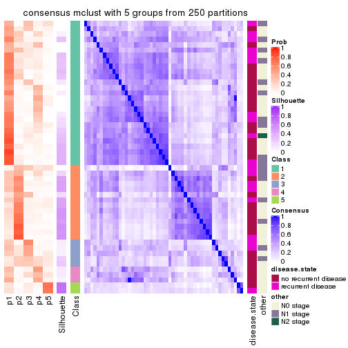
consensus_heatmap(res, k = 6)
Heatmaps for the membership of samples in all partitions to see how consistent they are:
membership_heatmap(res, k = 2)
membership_heatmap(res, k = 3)
membership_heatmap(res, k = 4)
membership_heatmap(res, k = 5)
membership_heatmap(res, k = 6)
As soon as we have had the classes for columns, we can look for signatures which are significantly different between classes which can be candidate marks for certain classes. Following are the heatmaps for signatures.
Signature heatmaps where rows are scaled:
get_signatures(res, k = 2)

get_signatures(res, k = 3)

get_signatures(res, k = 4)
get_signatures(res, k = 5)
get_signatures(res, k = 6)

Signature heatmaps where rows are not scaled:
get_signatures(res, k = 2, scale_rows = FALSE)

get_signatures(res, k = 3, scale_rows = FALSE)

get_signatures(res, k = 4, scale_rows = FALSE)
get_signatures(res, k = 5, scale_rows = FALSE)
get_signatures(res, k = 6, scale_rows = FALSE)

Compare the overlap of signatures from different k:
compare_signatures(res)
get_signature() returns a data frame invisibly. TO get the list of signatures, the function
call should be assigned to a variable explicitly. In following code, if plot argument is set
to FALSE, no heatmap is plotted while only the differential analysis is performed.
# code only for demonstration
tb = get_signature(res, k = ..., plot = FALSE)
An example of the output of tb is:
#> which_row fdr mean_1 mean_2 scaled_mean_1 scaled_mean_2 km
#> 1 38 0.042760348 8.373488 9.131774 -0.5533452 0.5164555 1
#> 2 40 0.018707592 7.106213 8.469186 -0.6173731 0.5762149 1
#> 3 55 0.019134737 10.221463 11.207825 -0.6159697 0.5749050 1
#> 4 59 0.006059896 5.921854 7.869574 -0.6899429 0.6439467 1
#> 5 60 0.018055526 8.928898 10.211722 -0.6204761 0.5791110 1
#> 6 98 0.009384629 15.714769 14.887706 0.6635654 -0.6193277 2
...
The columns in tb are:
which_row: row indices corresponding to the input matrix.fdr: FDR for the differential test. mean_x: The mean value in group x.scaled_mean_x: The mean value in group x after rows are scaled.km: Row groups if k-means clustering is applied to rows.UMAP plot which shows how samples are separated.
dimension_reduction(res, k = 2, method = "UMAP")
dimension_reduction(res, k = 3, method = "UMAP")
dimension_reduction(res, k = 4, method = "UMAP")

dimension_reduction(res, k = 5, method = "UMAP")
dimension_reduction(res, k = 6, method = "UMAP")
Following heatmap shows how subgroups are split when increasing k:
collect_classes(res)
Test correlation between subgroups and known annotations. If the known annotation is numeric, one-way ANOVA test is applied, and if the known annotation is discrete, chi-squared contingency table test is applied.
test_to_known_factors(res)
#> n disease.state(p) other(p) k
#> SD:mclust 0 NA NA 2
#> SD:mclust 0 NA NA 3
#> SD:mclust 23 0.406 0.862 4
#> SD:mclust 7 1.000 NA 5
#> SD:mclust 2 NA NA 6
If matrix rows can be associated to genes, consider to use GO_Enrichment(res,
...) to perform function enrichment for the signature genes.
The object with results only for a single top-value method and a single partition method can be extracted as:
res = res_list["SD", "NMF"]
# you can also extract it by
# res = res_list["SD:NMF"]
A summary of res and all the functions that can be applied to it:
res
#> A 'ConsensusPartition' object with k = 2, 3, 4, 5, 6.
#> On a matrix with 20180 rows and 51 columns.
#> Top rows (1000, 2000, 3000, 4000, 5000) are extracted by 'SD' method.
#> Subgroups are detected by 'NMF' method.
#> Performed in total 1250 partitions by row resampling.
#> Best k for subgroups seems to be 2.
#>
#> Following methods can be applied to this 'ConsensusPartition' object:
#> [1] "cola_report" "collect_classes" "collect_plots"
#> [4] "collect_stats" "colnames" "compare_signatures"
#> [7] "consensus_heatmap" "dimension_reduction" "functional_enrichment"
#> [10] "get_anno_col" "get_anno" "get_classes"
#> [13] "get_consensus" "get_matrix" "get_membership"
#> [16] "get_param" "get_signatures" "get_stats"
#> [19] "is_best_k" "is_stable_k" "membership_heatmap"
#> [22] "ncol" "nrow" "plot_ecdf"
#> [25] "rownames" "select_partition_number" "show"
#> [28] "suggest_best_k" "test_to_known_factors"
collect_plots() function collects all the plots made from res for all k (number of partitions)
into one single page to provide an easy and fast comparison between different k.
collect_plots(res)
The plots are:
k and the heatmap of
predicted classes for each k.k.k.k.All the plots in panels can be made by individual functions and they are plotted later in this section.
select_partition_number() produces several plots showing different
statistics for choosing “optimized” k. There are following statistics:
k;k, the area increased is defined as \(A_k - A_{k-1}\).The detailed explanations of these statistics can be found in the cola vignette.
Generally speaking, lower PAC score, higher mean silhouette score or higher
concordance corresponds to better partition. Rand index and Jaccard index
measure how similar the current partition is compared to partition with k-1.
If they are too similar, we won't accept k is better than k-1.
select_partition_number(res)
The numeric values for all these statistics can be obtained by get_stats().
get_stats(res)
#> k 1-PAC mean_silhouette concordance area_increased Rand Jaccard
#> 2 2 0.0115 0.584 0.746 0.4832 0.495 0.495
#> 3 3 0.0576 0.425 0.613 0.3522 0.616 0.362
#> 4 4 0.1587 0.336 0.554 0.1331 0.816 0.507
#> 5 5 0.2190 0.223 0.490 0.0676 0.911 0.663
#> 6 6 0.3378 0.206 0.470 0.0445 0.900 0.574
suggest_best_k() suggests the best \(k\) based on these statistics. The rules are as follows:
NA.suggest_best_k(res)
#> [1] 2
Following shows the table of the partitions (You need to click the show/hide
code output link to see it). The membership matrix (columns with name p*)
is inferred by
clue::cl_consensus()
function with the SE method. Basically the value in the membership matrix
represents the probability to belong to a certain group. The finall class
label for an item is determined with the group with highest probability it
belongs to.
In get_classes() function, the entropy is calculated from the membership
matrix and the silhouette score is calculated from the consensus matrix.
cbind(get_classes(res, k = 2), get_membership(res, k = 2))
#> class entropy silhouette p1 p2
#> GSM115459 1 0.844 0.6814 0.728 0.272
#> GSM115460 2 0.541 0.7437 0.124 0.876
#> GSM115461 2 0.469 0.7475 0.100 0.900
#> GSM115462 2 0.430 0.7520 0.088 0.912
#> GSM115463 1 0.745 0.6851 0.788 0.212
#> GSM115464 2 0.745 0.6734 0.212 0.788
#> GSM115465 2 0.697 0.7482 0.188 0.812
#> GSM115466 2 0.760 0.7303 0.220 0.780
#> GSM115467 1 0.839 0.6932 0.732 0.268
#> GSM115468 1 0.861 0.6708 0.716 0.284
#> GSM115469 2 0.891 0.6190 0.308 0.692
#> GSM115470 2 0.753 0.7225 0.216 0.784
#> GSM115471 2 0.552 0.7564 0.128 0.872
#> GSM115472 2 0.991 0.3257 0.444 0.556
#> GSM115473 2 0.946 0.4015 0.364 0.636
#> GSM115474 2 0.861 0.4583 0.284 0.716
#> GSM115475 2 0.738 0.7046 0.208 0.792
#> GSM115476 1 0.482 0.6936 0.896 0.104
#> GSM115477 2 0.443 0.7498 0.092 0.908
#> GSM115478 2 0.886 0.5981 0.304 0.696
#> GSM115479 1 0.494 0.6859 0.892 0.108
#> GSM115480 1 1.000 0.0491 0.512 0.488
#> GSM115481 2 0.839 0.6836 0.268 0.732
#> GSM115482 1 0.482 0.6932 0.896 0.104
#> GSM115483 2 0.876 0.6354 0.296 0.704
#> GSM115484 1 1.000 0.0618 0.508 0.492
#> GSM115485 2 0.443 0.7415 0.092 0.908
#> GSM115486 2 0.767 0.7195 0.224 0.776
#> GSM115487 1 1.000 0.0373 0.508 0.492
#> GSM115488 2 0.552 0.7468 0.128 0.872
#> GSM115489 1 0.821 0.6638 0.744 0.256
#> GSM115490 2 0.866 0.6416 0.288 0.712
#> GSM115491 1 0.714 0.7027 0.804 0.196
#> GSM115492 2 0.563 0.7496 0.132 0.868
#> GSM115493 2 1.000 -0.1870 0.500 0.500
#> GSM115494 1 0.430 0.6911 0.912 0.088
#> GSM115495 2 0.795 0.7058 0.240 0.760
#> GSM115496 1 0.760 0.6908 0.780 0.220
#> GSM115497 1 0.993 0.3457 0.548 0.452
#> GSM115498 2 0.949 0.1640 0.368 0.632
#> GSM115499 1 1.000 0.3802 0.504 0.496
#> GSM115500 1 0.456 0.6894 0.904 0.096
#> GSM115501 1 0.929 0.4421 0.656 0.344
#> GSM115502 1 0.802 0.6878 0.756 0.244
#> GSM115503 2 0.795 0.6646 0.240 0.760
#> GSM115504 2 0.469 0.7434 0.100 0.900
#> GSM115505 2 0.388 0.7308 0.076 0.924
#> GSM115506 1 0.662 0.6791 0.828 0.172
#> GSM115507 1 0.996 0.2184 0.536 0.464
#> GSM115509 1 0.955 0.4871 0.624 0.376
#> GSM115508 1 0.753 0.6870 0.784 0.216
cbind(get_classes(res, k = 3), get_membership(res, k = 3))
#> class entropy silhouette p1 p2 p3
#> GSM115459 3 0.786 0.1786 0.364 0.064 0.572
#> GSM115460 2 0.649 0.5570 0.036 0.708 0.256
#> GSM115461 2 0.614 0.5610 0.024 0.720 0.256
#> GSM115462 2 0.704 0.4412 0.040 0.648 0.312
#> GSM115463 1 0.803 0.5253 0.640 0.120 0.240
#> GSM115464 3 0.888 0.3343 0.128 0.364 0.508
#> GSM115465 3 0.862 -0.0454 0.108 0.368 0.524
#> GSM115466 2 0.725 0.6004 0.120 0.712 0.168
#> GSM115467 1 0.837 0.5567 0.624 0.212 0.164
#> GSM115468 1 0.750 0.5609 0.692 0.120 0.188
#> GSM115469 2 0.915 0.1476 0.152 0.484 0.364
#> GSM115470 2 0.573 0.5976 0.060 0.796 0.144
#> GSM115471 2 0.681 0.5572 0.044 0.688 0.268
#> GSM115472 3 0.921 0.3047 0.288 0.188 0.524
#> GSM115473 3 0.565 0.5914 0.108 0.084 0.808
#> GSM115474 3 0.538 0.5868 0.068 0.112 0.820
#> GSM115475 3 0.548 0.5835 0.076 0.108 0.816
#> GSM115476 1 0.708 0.5609 0.724 0.156 0.120
#> GSM115477 3 0.781 0.0984 0.052 0.432 0.516
#> GSM115478 2 0.713 0.5218 0.164 0.720 0.116
#> GSM115479 1 0.655 0.5963 0.756 0.148 0.096
#> GSM115480 2 0.813 0.2384 0.376 0.548 0.076
#> GSM115481 3 0.543 0.5901 0.092 0.088 0.820
#> GSM115482 1 0.666 0.5872 0.716 0.232 0.052
#> GSM115483 2 0.907 0.2555 0.172 0.536 0.292
#> GSM115484 2 0.750 0.5135 0.200 0.688 0.112
#> GSM115485 3 0.533 0.5827 0.044 0.144 0.812
#> GSM115486 3 0.771 0.5421 0.088 0.264 0.648
#> GSM115487 3 0.713 0.5149 0.180 0.104 0.716
#> GSM115488 2 0.653 0.6033 0.068 0.744 0.188
#> GSM115489 1 0.851 0.4291 0.568 0.116 0.316
#> GSM115490 3 0.938 0.1347 0.176 0.364 0.460
#> GSM115491 1 0.888 0.4870 0.576 0.208 0.216
#> GSM115492 3 0.713 0.4706 0.052 0.284 0.664
#> GSM115493 1 0.986 0.0911 0.384 0.364 0.252
#> GSM115494 1 0.531 0.5878 0.820 0.056 0.124
#> GSM115495 2 0.609 0.5982 0.076 0.780 0.144
#> GSM115496 1 0.755 0.5825 0.692 0.140 0.168
#> GSM115497 3 0.810 0.4781 0.216 0.140 0.644
#> GSM115498 3 0.726 0.5560 0.084 0.224 0.692
#> GSM115499 3 0.938 0.0516 0.336 0.184 0.480
#> GSM115500 1 0.858 0.0376 0.504 0.100 0.396
#> GSM115501 1 0.921 0.2387 0.484 0.356 0.160
#> GSM115502 1 0.881 0.4916 0.572 0.164 0.264
#> GSM115503 2 0.915 0.3580 0.200 0.540 0.260
#> GSM115504 3 0.663 0.5130 0.036 0.272 0.692
#> GSM115505 2 0.667 0.5606 0.040 0.696 0.264
#> GSM115506 1 0.958 0.1277 0.444 0.352 0.204
#> GSM115507 2 0.886 0.3268 0.272 0.564 0.164
#> GSM115509 3 0.894 0.4664 0.176 0.264 0.560
#> GSM115508 3 0.903 0.2352 0.340 0.148 0.512
cbind(get_classes(res, k = 4), get_membership(res, k = 4))
#> class entropy silhouette p1 p2 p3 p4
#> GSM115459 3 0.694 0.4382 0.112 0.092 0.688 0.108
#> GSM115460 4 0.665 -0.2182 0.028 0.404 0.036 0.532
#> GSM115461 4 0.656 -0.2425 0.020 0.412 0.040 0.528
#> GSM115462 2 0.750 0.4209 0.016 0.564 0.180 0.240
#> GSM115463 1 0.728 0.4840 0.592 0.028 0.112 0.268
#> GSM115464 3 0.949 0.0811 0.160 0.156 0.368 0.316
#> GSM115465 4 0.479 0.4984 0.080 0.056 0.044 0.820
#> GSM115466 2 0.851 0.4005 0.168 0.468 0.056 0.308
#> GSM115467 1 0.789 0.4704 0.580 0.224 0.064 0.132
#> GSM115468 3 0.868 -0.0410 0.320 0.164 0.448 0.068
#> GSM115469 3 0.865 0.4422 0.112 0.188 0.528 0.172
#> GSM115470 2 0.800 0.4883 0.064 0.576 0.160 0.200
#> GSM115471 2 0.708 0.3025 0.024 0.468 0.064 0.444
#> GSM115472 4 0.815 0.1380 0.260 0.024 0.232 0.484
#> GSM115473 3 0.703 0.3628 0.048 0.064 0.616 0.272
#> GSM115474 4 0.742 0.1596 0.036 0.080 0.360 0.524
#> GSM115475 4 0.552 0.5112 0.068 0.060 0.092 0.780
#> GSM115476 1 0.684 0.0987 0.500 0.040 0.428 0.032
#> GSM115477 4 0.712 0.3246 0.036 0.248 0.096 0.620
#> GSM115478 2 0.531 0.5061 0.108 0.788 0.052 0.052
#> GSM115479 1 0.430 0.5140 0.840 0.032 0.092 0.036
#> GSM115480 2 0.810 0.2613 0.340 0.496 0.092 0.072
#> GSM115481 4 0.654 0.4764 0.072 0.040 0.208 0.680
#> GSM115482 1 0.785 0.4394 0.588 0.176 0.180 0.056
#> GSM115483 3 0.760 0.2927 0.088 0.336 0.532 0.044
#> GSM115484 2 0.724 0.4954 0.140 0.660 0.124 0.076
#> GSM115485 4 0.548 0.5083 0.036 0.036 0.176 0.752
#> GSM115486 3 0.684 0.4503 0.032 0.084 0.640 0.244
#> GSM115487 4 0.888 0.2346 0.136 0.128 0.248 0.488
#> GSM115488 2 0.718 0.4518 0.060 0.564 0.044 0.332
#> GSM115489 1 0.844 0.4140 0.500 0.052 0.232 0.216
#> GSM115490 3 0.826 0.2179 0.112 0.316 0.500 0.072
#> GSM115491 1 0.622 0.5337 0.708 0.076 0.032 0.184
#> GSM115492 4 0.717 0.4349 0.048 0.180 0.124 0.648
#> GSM115493 1 0.759 0.2162 0.456 0.080 0.040 0.424
#> GSM115494 1 0.443 0.5144 0.840 0.052 0.044 0.064
#> GSM115495 2 0.696 0.5317 0.056 0.676 0.136 0.132
#> GSM115496 1 0.814 0.4937 0.584 0.128 0.112 0.176
#> GSM115497 3 0.750 0.4653 0.064 0.208 0.620 0.108
#> GSM115498 4 0.556 0.4734 0.076 0.096 0.052 0.776
#> GSM115499 4 0.883 -0.1732 0.320 0.052 0.232 0.396
#> GSM115500 3 0.742 0.3929 0.288 0.048 0.580 0.084
#> GSM115501 1 0.900 0.3474 0.476 0.244 0.152 0.128
#> GSM115502 1 0.827 0.1900 0.416 0.056 0.408 0.120
#> GSM115503 2 0.795 0.2807 0.076 0.576 0.116 0.232
#> GSM115504 4 0.622 0.4764 0.040 0.068 0.180 0.712
#> GSM115505 2 0.652 0.3516 0.016 0.536 0.044 0.404
#> GSM115506 1 0.920 0.0734 0.380 0.320 0.212 0.088
#> GSM115507 2 0.877 0.1781 0.328 0.440 0.152 0.080
#> GSM115509 3 0.689 0.5157 0.096 0.080 0.688 0.136
#> GSM115508 3 0.696 0.4386 0.192 0.024 0.644 0.140
cbind(get_classes(res, k = 5), get_membership(res, k = 5))
#> class entropy silhouette p1 p2 p3 p4 p5
#> GSM115459 3 0.598 0.4039 0.084 0.040 0.720 0.104 0.052
#> GSM115460 4 0.703 -0.0366 0.032 0.340 0.012 0.496 0.120
#> GSM115461 4 0.713 -0.0863 0.036 0.356 0.012 0.476 0.120
#> GSM115462 5 0.695 0.2448 0.004 0.140 0.064 0.212 0.580
#> GSM115463 1 0.628 0.3798 0.604 0.016 0.036 0.288 0.056
#> GSM115464 3 0.926 0.1807 0.072 0.212 0.356 0.228 0.132
#> GSM115465 4 0.439 0.4070 0.064 0.056 0.020 0.820 0.040
#> GSM115466 2 0.875 0.1302 0.136 0.372 0.048 0.320 0.124
#> GSM115467 1 0.918 0.0586 0.388 0.128 0.108 0.124 0.252
#> GSM115468 3 0.710 0.2311 0.164 0.208 0.568 0.012 0.048
#> GSM115469 3 0.885 0.2784 0.060 0.232 0.424 0.156 0.128
#> GSM115470 2 0.809 0.1686 0.036 0.428 0.048 0.184 0.304
#> GSM115471 2 0.686 0.1662 0.020 0.448 0.028 0.424 0.080
#> GSM115472 4 0.866 0.2207 0.168 0.076 0.132 0.480 0.144
#> GSM115473 3 0.853 0.1059 0.060 0.048 0.396 0.240 0.256
#> GSM115474 4 0.759 -0.0206 0.080 0.040 0.392 0.432 0.056
#> GSM115475 4 0.633 0.4162 0.088 0.040 0.068 0.696 0.108
#> GSM115476 1 0.786 -0.0898 0.392 0.072 0.388 0.020 0.128
#> GSM115477 4 0.785 0.0757 0.040 0.080 0.080 0.436 0.364
#> GSM115478 2 0.594 0.3758 0.104 0.724 0.076 0.040 0.056
#> GSM115479 1 0.536 0.4134 0.764 0.044 0.060 0.044 0.088
#> GSM115480 2 0.927 0.0663 0.192 0.324 0.208 0.048 0.228
#> GSM115481 4 0.733 0.3526 0.072 0.024 0.160 0.584 0.160
#> GSM115482 5 0.798 0.0318 0.324 0.120 0.060 0.044 0.452
#> GSM115483 5 0.615 0.3727 0.032 0.128 0.132 0.024 0.684
#> GSM115484 2 0.745 0.3233 0.068 0.604 0.072 0.104 0.152
#> GSM115485 4 0.606 0.4148 0.028 0.032 0.132 0.696 0.112
#> GSM115486 3 0.804 0.3244 0.020 0.092 0.484 0.216 0.188
#> GSM115487 4 0.927 0.0295 0.144 0.076 0.160 0.340 0.280
#> GSM115488 2 0.656 0.3320 0.036 0.572 0.064 0.308 0.020
#> GSM115489 1 0.807 0.2937 0.480 0.064 0.240 0.180 0.036
#> GSM115490 5 0.530 0.4050 0.024 0.060 0.088 0.064 0.764
#> GSM115491 1 0.767 0.3820 0.540 0.152 0.032 0.212 0.064
#> GSM115492 4 0.652 0.3619 0.032 0.148 0.056 0.668 0.096
#> GSM115493 4 0.842 -0.1452 0.340 0.152 0.072 0.388 0.048
#> GSM115494 1 0.435 0.4257 0.824 0.040 0.056 0.056 0.024
#> GSM115495 2 0.645 0.3428 0.016 0.636 0.048 0.084 0.216
#> GSM115496 1 0.898 0.3491 0.436 0.140 0.152 0.188 0.084
#> GSM115497 3 0.813 0.2579 0.072 0.108 0.524 0.088 0.208
#> GSM115498 4 0.714 0.3370 0.092 0.156 0.084 0.624 0.044
#> GSM115499 4 0.853 -0.0998 0.312 0.056 0.224 0.360 0.048
#> GSM115500 5 0.867 0.0264 0.228 0.036 0.320 0.084 0.332
#> GSM115501 1 0.883 0.1323 0.396 0.148 0.052 0.128 0.276
#> GSM115502 3 0.863 0.2475 0.232 0.096 0.464 0.120 0.088
#> GSM115503 2 0.943 0.0902 0.072 0.296 0.268 0.152 0.212
#> GSM115504 4 0.690 0.3804 0.036 0.088 0.144 0.644 0.088
#> GSM115505 2 0.637 0.2449 0.016 0.532 0.048 0.372 0.032
#> GSM115506 5 0.785 0.2220 0.280 0.096 0.064 0.056 0.504
#> GSM115507 2 0.891 0.1020 0.236 0.352 0.136 0.032 0.244
#> GSM115509 3 0.737 0.3985 0.040 0.148 0.604 0.112 0.096
#> GSM115508 3 0.821 0.3541 0.192 0.064 0.512 0.156 0.076
cbind(get_classes(res, k = 6), get_membership(res, k = 6))
#> class entropy silhouette p1 p2 p3 p4 p5 p6
#> GSM115459 3 0.568 0.37611 0.112 0.028 0.712 0.020 0.068 0.060
#> GSM115460 5 0.685 0.00454 0.016 0.276 0.016 0.184 0.488 0.020
#> GSM115461 5 0.663 -0.02705 0.016 0.260 0.020 0.184 0.512 0.008
#> GSM115462 4 0.664 0.25965 0.068 0.116 0.072 0.612 0.132 0.000
#> GSM115463 6 0.603 0.43008 0.016 0.048 0.056 0.016 0.244 0.620
#> GSM115464 3 0.920 0.14733 0.196 0.168 0.300 0.068 0.216 0.052
#> GSM115465 5 0.526 0.37717 0.024 0.072 0.028 0.044 0.748 0.084
#> GSM115466 2 0.888 0.10647 0.104 0.324 0.088 0.068 0.316 0.100
#> GSM115467 1 0.939 0.14240 0.316 0.100 0.092 0.184 0.100 0.208
#> GSM115468 3 0.749 0.15331 0.220 0.136 0.492 0.028 0.008 0.116
#> GSM115469 3 0.786 0.29365 0.016 0.232 0.480 0.088 0.108 0.076
#> GSM115470 2 0.815 0.11998 0.064 0.324 0.080 0.312 0.216 0.004
#> GSM115471 2 0.658 0.23083 0.032 0.464 0.032 0.076 0.388 0.008
#> GSM115472 5 0.903 0.18803 0.100 0.092 0.164 0.152 0.400 0.092
#> GSM115473 3 0.866 -0.05884 0.084 0.060 0.344 0.256 0.216 0.040
#> GSM115474 3 0.776 0.13306 0.056 0.064 0.404 0.024 0.352 0.100
#> GSM115475 5 0.716 0.31556 0.104 0.060 0.044 0.120 0.604 0.068
#> GSM115476 3 0.711 -0.05379 0.064 0.056 0.412 0.068 0.004 0.396
#> GSM115477 4 0.751 0.04109 0.168 0.068 0.024 0.384 0.348 0.008
#> GSM115478 2 0.631 0.15561 0.148 0.652 0.028 0.052 0.024 0.096
#> GSM115479 6 0.512 0.41515 0.064 0.012 0.036 0.076 0.056 0.756
#> GSM115480 1 0.736 0.31027 0.580 0.136 0.096 0.068 0.032 0.088
#> GSM115481 5 0.759 0.29726 0.120 0.020 0.100 0.136 0.548 0.076
#> GSM115482 4 0.859 -0.06516 0.308 0.092 0.056 0.324 0.036 0.184
#> GSM115483 4 0.517 0.29446 0.028 0.068 0.160 0.716 0.004 0.024
#> GSM115484 2 0.818 0.19616 0.112 0.500 0.096 0.160 0.052 0.080
#> GSM115485 5 0.585 0.39298 0.052 0.020 0.092 0.112 0.696 0.028
#> GSM115486 3 0.690 0.31584 0.028 0.060 0.560 0.184 0.160 0.008
#> GSM115487 4 0.904 0.06479 0.080 0.060 0.116 0.328 0.272 0.144
#> GSM115488 2 0.620 0.36585 0.052 0.616 0.056 0.016 0.236 0.024
#> GSM115489 6 0.807 0.24718 0.076 0.044 0.252 0.020 0.200 0.408
#> GSM115490 4 0.423 0.37789 0.040 0.012 0.084 0.808 0.040 0.016
#> GSM115491 1 0.849 0.16086 0.332 0.156 0.036 0.020 0.188 0.268
#> GSM115492 5 0.710 0.23979 0.028 0.224 0.060 0.124 0.544 0.020
#> GSM115493 5 0.868 0.03061 0.208 0.148 0.044 0.040 0.376 0.184
#> GSM115494 6 0.396 0.41158 0.024 0.020 0.052 0.024 0.048 0.832
#> GSM115495 2 0.778 0.16353 0.144 0.468 0.056 0.240 0.080 0.012
#> GSM115496 1 0.864 0.25069 0.396 0.128 0.072 0.032 0.148 0.224
#> GSM115497 3 0.893 0.14111 0.268 0.104 0.332 0.156 0.104 0.036
#> GSM115498 5 0.625 0.33278 0.164 0.088 0.028 0.016 0.648 0.056
#> GSM115499 5 0.824 -0.15586 0.044 0.060 0.236 0.032 0.364 0.264
#> GSM115500 4 0.864 0.05895 0.120 0.028 0.240 0.308 0.044 0.260
#> GSM115501 6 0.852 0.18288 0.064 0.188 0.032 0.260 0.084 0.372
#> GSM115502 3 0.811 0.25105 0.088 0.048 0.500 0.076 0.112 0.176
#> GSM115503 1 0.769 0.25342 0.540 0.168 0.096 0.064 0.096 0.036
#> GSM115504 5 0.711 0.29960 0.040 0.092 0.108 0.140 0.592 0.028
#> GSM115505 2 0.528 0.32820 0.012 0.608 0.044 0.004 0.316 0.016
#> GSM115506 4 0.768 0.10919 0.172 0.032 0.096 0.504 0.024 0.172
#> GSM115507 1 0.859 0.23844 0.404 0.124 0.116 0.216 0.020 0.120
#> GSM115509 3 0.599 0.37996 0.032 0.104 0.680 0.092 0.084 0.008
#> GSM115508 3 0.694 0.27608 0.016 0.040 0.560 0.036 0.144 0.204
Heatmaps for the consensus matrix. It visualizes the probability of two samples to be in a same group.
consensus_heatmap(res, k = 2)
consensus_heatmap(res, k = 3)
consensus_heatmap(res, k = 4)
consensus_heatmap(res, k = 5)
consensus_heatmap(res, k = 6)
Heatmaps for the membership of samples in all partitions to see how consistent they are:
membership_heatmap(res, k = 2)
membership_heatmap(res, k = 3)
membership_heatmap(res, k = 4)
membership_heatmap(res, k = 5)
membership_heatmap(res, k = 6)
As soon as we have had the classes for columns, we can look for signatures which are significantly different between classes which can be candidate marks for certain classes. Following are the heatmaps for signatures.
Signature heatmaps where rows are scaled:
get_signatures(res, k = 2)
get_signatures(res, k = 3)
get_signatures(res, k = 4)
get_signatures(res, k = 5)

get_signatures(res, k = 6)

Signature heatmaps where rows are not scaled:
get_signatures(res, k = 2, scale_rows = FALSE)
get_signatures(res, k = 3, scale_rows = FALSE)
get_signatures(res, k = 4, scale_rows = FALSE)
get_signatures(res, k = 5, scale_rows = FALSE)

get_signatures(res, k = 6, scale_rows = FALSE)

Compare the overlap of signatures from different k:
compare_signatures(res)
get_signature() returns a data frame invisibly. TO get the list of signatures, the function
call should be assigned to a variable explicitly. In following code, if plot argument is set
to FALSE, no heatmap is plotted while only the differential analysis is performed.
# code only for demonstration
tb = get_signature(res, k = ..., plot = FALSE)
An example of the output of tb is:
#> which_row fdr mean_1 mean_2 scaled_mean_1 scaled_mean_2 km
#> 1 38 0.042760348 8.373488 9.131774 -0.5533452 0.5164555 1
#> 2 40 0.018707592 7.106213 8.469186 -0.6173731 0.5762149 1
#> 3 55 0.019134737 10.221463 11.207825 -0.6159697 0.5749050 1
#> 4 59 0.006059896 5.921854 7.869574 -0.6899429 0.6439467 1
#> 5 60 0.018055526 8.928898 10.211722 -0.6204761 0.5791110 1
#> 6 98 0.009384629 15.714769 14.887706 0.6635654 -0.6193277 2
...
The columns in tb are:
which_row: row indices corresponding to the input matrix.fdr: FDR for the differential test. mean_x: The mean value in group x.scaled_mean_x: The mean value in group x after rows are scaled.km: Row groups if k-means clustering is applied to rows.UMAP plot which shows how samples are separated.
dimension_reduction(res, k = 2, method = "UMAP")
dimension_reduction(res, k = 3, method = "UMAP")
dimension_reduction(res, k = 4, method = "UMAP")
dimension_reduction(res, k = 5, method = "UMAP")
dimension_reduction(res, k = 6, method = "UMAP")

Following heatmap shows how subgroups are split when increasing k:
collect_classes(res)

Test correlation between subgroups and known annotations. If the known annotation is numeric, one-way ANOVA test is applied, and if the known annotation is discrete, chi-squared contingency table test is applied.
test_to_known_factors(res)
#> n disease.state(p) other(p) k
#> SD:NMF 38 0.208 0.452 2
#> SD:NMF 27 0.968 0.106 3
#> SD:NMF 8 0.343 0.149 4
#> SD:NMF 0 NA NA 5
#> SD:NMF 0 NA NA 6
If matrix rows can be associated to genes, consider to use GO_Enrichment(res,
...) to perform function enrichment for the signature genes.
The object with results only for a single top-value method and a single partition method can be extracted as:
res = res_list["CV", "hclust"]
# you can also extract it by
# res = res_list["CV:hclust"]
A summary of res and all the functions that can be applied to it:
res
#> A 'ConsensusPartition' object with k = 2, 3, 4, 5, 6.
#> On a matrix with 20180 rows and 51 columns.
#> Top rows (1000, 2000, 3000, 4000, 5000) are extracted by 'CV' method.
#> Subgroups are detected by 'hclust' method.
#> Performed in total 1250 partitions by row resampling.
#> Best k for subgroups seems to be 2.
#>
#> Following methods can be applied to this 'ConsensusPartition' object:
#> [1] "cola_report" "collect_classes" "collect_plots"
#> [4] "collect_stats" "colnames" "compare_signatures"
#> [7] "consensus_heatmap" "dimension_reduction" "functional_enrichment"
#> [10] "get_anno_col" "get_anno" "get_classes"
#> [13] "get_consensus" "get_matrix" "get_membership"
#> [16] "get_param" "get_signatures" "get_stats"
#> [19] "is_best_k" "is_stable_k" "membership_heatmap"
#> [22] "ncol" "nrow" "plot_ecdf"
#> [25] "rownames" "select_partition_number" "show"
#> [28] "suggest_best_k" "test_to_known_factors"
collect_plots() function collects all the plots made from res for all k (number of partitions)
into one single page to provide an easy and fast comparison between different k.
collect_plots(res)

The plots are:
k and the heatmap of
predicted classes for each k.k.k.k.All the plots in panels can be made by individual functions and they are plotted later in this section.
select_partition_number() produces several plots showing different
statistics for choosing “optimized” k. There are following statistics:
k;k, the area increased is defined as \(A_k - A_{k-1}\).The detailed explanations of these statistics can be found in the cola vignette.
Generally speaking, lower PAC score, higher mean silhouette score or higher
concordance corresponds to better partition. Rand index and Jaccard index
measure how similar the current partition is compared to partition with k-1.
If they are too similar, we won't accept k is better than k-1.
select_partition_number(res)
The numeric values for all these statistics can be obtained by get_stats().
get_stats(res)
#> k 1-PAC mean_silhouette concordance area_increased Rand Jaccard
#> 2 2 0.393 0.808 0.873 0.4289 0.523 0.523
#> 3 3 0.370 0.768 0.860 0.1899 0.832 0.709
#> 4 4 0.464 0.765 0.863 0.1563 0.889 0.778
#> 5 5 0.443 0.601 0.731 0.1423 0.878 0.720
#> 6 6 0.472 0.477 0.615 0.0729 0.867 0.621
suggest_best_k() suggests the best \(k\) based on these statistics. The rules are as follows:
NA.suggest_best_k(res)
#> [1] 2
Following shows the table of the partitions (You need to click the show/hide
code output link to see it). The membership matrix (columns with name p*)
is inferred by
clue::cl_consensus()
function with the SE method. Basically the value in the membership matrix
represents the probability to belong to a certain group. The finall class
label for an item is determined with the group with highest probability it
belongs to.
In get_classes() function, the entropy is calculated from the membership
matrix and the silhouette score is calculated from the consensus matrix.
cbind(get_classes(res, k = 2), get_membership(res, k = 2))
#> class entropy silhouette p1 p2
#> GSM115459 1 0.1843 0.86019 0.972 0.028
#> GSM115460 2 0.4022 0.87661 0.080 0.920
#> GSM115461 2 0.4022 0.87661 0.080 0.920
#> GSM115462 1 0.9998 -0.25893 0.508 0.492
#> GSM115463 1 0.1184 0.87829 0.984 0.016
#> GSM115464 1 0.4298 0.84098 0.912 0.088
#> GSM115465 2 0.7219 0.92894 0.200 0.800
#> GSM115466 2 0.6148 0.94905 0.152 0.848
#> GSM115467 2 0.6973 0.94053 0.188 0.812
#> GSM115468 1 0.1633 0.87931 0.976 0.024
#> GSM115469 2 0.7745 0.90726 0.228 0.772
#> GSM115470 2 0.6148 0.94905 0.152 0.848
#> GSM115471 2 0.8016 0.89180 0.244 0.756
#> GSM115472 1 0.3114 0.86654 0.944 0.056
#> GSM115473 1 0.1633 0.87888 0.976 0.024
#> GSM115474 1 0.3114 0.86448 0.944 0.056
#> GSM115475 1 0.1414 0.88019 0.980 0.020
#> GSM115476 1 0.0000 0.87532 1.000 0.000
#> GSM115477 2 0.6531 0.94865 0.168 0.832
#> GSM115478 2 0.6148 0.94905 0.152 0.848
#> GSM115479 1 0.4022 0.81479 0.920 0.080
#> GSM115480 2 0.7139 0.93559 0.196 0.804
#> GSM115481 1 0.2948 0.87240 0.948 0.052
#> GSM115482 1 0.0672 0.87725 0.992 0.008
#> GSM115483 2 0.6148 0.94905 0.152 0.848
#> GSM115484 2 0.6343 0.95001 0.160 0.840
#> GSM115485 1 0.9896 0.01787 0.560 0.440
#> GSM115486 1 0.9044 0.40949 0.680 0.320
#> GSM115487 1 0.1843 0.87902 0.972 0.028
#> GSM115488 2 0.8386 0.85590 0.268 0.732
#> GSM115489 1 0.0672 0.87657 0.992 0.008
#> GSM115490 2 0.6148 0.94905 0.152 0.848
#> GSM115491 1 0.2043 0.87870 0.968 0.032
#> GSM115492 1 0.9896 0.01787 0.560 0.440
#> GSM115493 1 0.2236 0.87763 0.964 0.036
#> GSM115494 1 0.4022 0.81479 0.920 0.080
#> GSM115495 2 0.6531 0.94930 0.168 0.832
#> GSM115496 1 0.2236 0.87729 0.964 0.036
#> GSM115497 1 0.0938 0.87441 0.988 0.012
#> GSM115498 1 0.1414 0.87939 0.980 0.020
#> GSM115499 1 0.4939 0.81649 0.892 0.108
#> GSM115500 1 0.3733 0.85864 0.928 0.072
#> GSM115501 1 0.1843 0.87871 0.972 0.028
#> GSM115502 1 0.0000 0.87532 1.000 0.000
#> GSM115503 2 0.7815 0.90282 0.232 0.768
#> GSM115504 1 0.9909 -0.00587 0.556 0.444
#> GSM115505 2 0.6438 0.94955 0.164 0.836
#> GSM115506 1 0.2603 0.87423 0.956 0.044
#> GSM115507 2 0.6343 0.95001 0.160 0.840
#> GSM115509 1 0.1633 0.87888 0.976 0.024
#> GSM115508 1 0.2778 0.87030 0.952 0.048
cbind(get_classes(res, k = 3), get_membership(res, k = 3))
#> class entropy silhouette p1 p2 p3
#> GSM115459 1 0.4281 0.891 0.872 0.072 0.056
#> GSM115460 3 0.6416 1.000 0.020 0.304 0.676
#> GSM115461 3 0.6416 1.000 0.020 0.304 0.676
#> GSM115462 2 0.6244 0.355 0.440 0.560 0.000
#> GSM115463 1 0.1031 0.881 0.976 0.024 0.000
#> GSM115464 1 0.3879 0.855 0.848 0.152 0.000
#> GSM115465 2 0.2356 0.757 0.072 0.928 0.000
#> GSM115466 2 0.1163 0.750 0.028 0.972 0.000
#> GSM115467 2 0.3207 0.765 0.084 0.904 0.012
#> GSM115468 1 0.2384 0.880 0.936 0.056 0.008
#> GSM115469 2 0.3686 0.744 0.140 0.860 0.000
#> GSM115470 2 0.1163 0.750 0.028 0.972 0.000
#> GSM115471 2 0.4062 0.732 0.164 0.836 0.000
#> GSM115472 1 0.3340 0.885 0.880 0.120 0.000
#> GSM115473 1 0.2860 0.895 0.912 0.084 0.004
#> GSM115474 1 0.3715 0.875 0.868 0.128 0.004
#> GSM115475 1 0.2356 0.901 0.928 0.072 0.000
#> GSM115476 1 0.1950 0.897 0.952 0.040 0.008
#> GSM115477 2 0.1529 0.758 0.040 0.960 0.000
#> GSM115478 2 0.1015 0.720 0.008 0.980 0.012
#> GSM115479 1 0.5815 0.554 0.692 0.004 0.304
#> GSM115480 2 0.3112 0.764 0.096 0.900 0.004
#> GSM115481 1 0.3607 0.890 0.880 0.112 0.008
#> GSM115482 1 0.0892 0.888 0.980 0.020 0.000
#> GSM115483 2 0.2297 0.741 0.036 0.944 0.020
#> GSM115484 2 0.1411 0.757 0.036 0.964 0.000
#> GSM115485 2 0.6302 0.204 0.480 0.520 0.000
#> GSM115486 1 0.6126 0.229 0.600 0.400 0.000
#> GSM115487 1 0.3030 0.895 0.904 0.092 0.004
#> GSM115488 2 0.4399 0.709 0.188 0.812 0.000
#> GSM115489 1 0.1878 0.897 0.952 0.044 0.004
#> GSM115490 2 0.2297 0.741 0.036 0.944 0.020
#> GSM115491 1 0.2878 0.897 0.904 0.096 0.000
#> GSM115492 2 0.6302 0.204 0.480 0.520 0.000
#> GSM115493 1 0.3349 0.893 0.888 0.108 0.004
#> GSM115494 1 0.5815 0.554 0.692 0.004 0.304
#> GSM115495 2 0.2200 0.765 0.056 0.940 0.004
#> GSM115496 1 0.3272 0.894 0.892 0.104 0.004
#> GSM115497 1 0.2384 0.899 0.936 0.056 0.008
#> GSM115498 1 0.1878 0.863 0.952 0.044 0.004
#> GSM115499 1 0.4399 0.807 0.812 0.188 0.000
#> GSM115500 1 0.5285 0.868 0.824 0.112 0.064
#> GSM115501 1 0.2796 0.896 0.908 0.092 0.000
#> GSM115502 1 0.1950 0.897 0.952 0.040 0.008
#> GSM115503 2 0.3619 0.744 0.136 0.864 0.000
#> GSM115504 2 0.6280 0.247 0.460 0.540 0.000
#> GSM115505 2 0.2096 0.757 0.052 0.944 0.004
#> GSM115506 1 0.2680 0.883 0.924 0.068 0.008
#> GSM115507 2 0.1411 0.757 0.036 0.964 0.000
#> GSM115509 1 0.2866 0.898 0.916 0.076 0.008
#> GSM115508 1 0.3695 0.885 0.880 0.108 0.012
cbind(get_classes(res, k = 4), get_membership(res, k = 4))
#> class entropy silhouette p1 p2 p3 p4
#> GSM115459 1 0.2814 0.83661 0.908 0.008 0.032 0.052
#> GSM115460 3 0.3610 1.00000 0.000 0.200 0.800 0.000
#> GSM115461 3 0.3610 1.00000 0.000 0.200 0.800 0.000
#> GSM115462 2 0.5543 0.30644 0.424 0.556 0.020 0.000
#> GSM115463 1 0.3606 0.82858 0.856 0.020 0.008 0.116
#> GSM115464 1 0.3172 0.83157 0.872 0.112 0.004 0.012
#> GSM115465 2 0.2282 0.81483 0.052 0.924 0.024 0.000
#> GSM115466 2 0.0376 0.81201 0.004 0.992 0.004 0.000
#> GSM115467 2 0.3093 0.81587 0.040 0.892 0.064 0.004
#> GSM115468 1 0.4692 0.78189 0.796 0.024 0.024 0.156
#> GSM115469 2 0.3224 0.78924 0.120 0.864 0.016 0.000
#> GSM115470 2 0.0376 0.81201 0.004 0.992 0.004 0.000
#> GSM115471 2 0.3910 0.76456 0.156 0.820 0.024 0.000
#> GSM115472 1 0.2528 0.84806 0.908 0.080 0.008 0.004
#> GSM115473 1 0.1843 0.84909 0.948 0.016 0.028 0.008
#> GSM115474 1 0.2515 0.84548 0.912 0.072 0.012 0.004
#> GSM115475 1 0.1739 0.85342 0.952 0.008 0.024 0.016
#> GSM115476 1 0.1302 0.84860 0.956 0.000 0.000 0.044
#> GSM115477 2 0.1629 0.82038 0.024 0.952 0.024 0.000
#> GSM115478 2 0.2011 0.79315 0.000 0.920 0.080 0.000
#> GSM115479 4 0.0188 1.00000 0.004 0.000 0.000 0.996
#> GSM115480 2 0.2983 0.81734 0.068 0.892 0.040 0.000
#> GSM115481 1 0.3089 0.83967 0.896 0.044 0.052 0.008
#> GSM115482 1 0.4033 0.80174 0.824 0.008 0.020 0.148
#> GSM115483 2 0.3074 0.75021 0.000 0.848 0.152 0.000
#> GSM115484 2 0.0707 0.81978 0.020 0.980 0.000 0.000
#> GSM115485 1 0.5940 -0.02047 0.508 0.460 0.028 0.004
#> GSM115486 1 0.5525 0.37417 0.636 0.336 0.024 0.004
#> GSM115487 1 0.1962 0.84996 0.944 0.024 0.024 0.008
#> GSM115488 2 0.4054 0.73630 0.188 0.796 0.016 0.000
#> GSM115489 1 0.2271 0.84414 0.916 0.008 0.000 0.076
#> GSM115490 2 0.3074 0.75021 0.000 0.848 0.152 0.000
#> GSM115491 1 0.3583 0.84242 0.876 0.048 0.016 0.060
#> GSM115492 1 0.5940 -0.02047 0.508 0.460 0.028 0.004
#> GSM115493 1 0.4064 0.83482 0.856 0.056 0.028 0.060
#> GSM115494 4 0.0188 1.00000 0.004 0.000 0.000 0.996
#> GSM115495 2 0.1771 0.82596 0.036 0.948 0.012 0.004
#> GSM115496 1 0.4008 0.83671 0.860 0.044 0.036 0.060
#> GSM115497 1 0.0804 0.84870 0.980 0.000 0.012 0.008
#> GSM115498 1 0.4470 0.80780 0.824 0.028 0.032 0.116
#> GSM115499 1 0.3390 0.80099 0.852 0.132 0.016 0.000
#> GSM115500 1 0.4258 0.81204 0.848 0.040 0.064 0.048
#> GSM115501 1 0.2484 0.85623 0.924 0.040 0.012 0.024
#> GSM115502 1 0.1489 0.84898 0.952 0.000 0.004 0.044
#> GSM115503 2 0.3778 0.79477 0.100 0.848 0.052 0.000
#> GSM115504 2 0.5864 0.00396 0.484 0.488 0.024 0.004
#> GSM115505 2 0.2319 0.81999 0.036 0.924 0.040 0.000
#> GSM115506 1 0.4932 0.78281 0.780 0.056 0.008 0.156
#> GSM115507 2 0.0895 0.82016 0.020 0.976 0.004 0.000
#> GSM115509 1 0.1721 0.84849 0.952 0.008 0.028 0.012
#> GSM115508 1 0.2650 0.84543 0.916 0.040 0.036 0.008
cbind(get_classes(res, k = 5), get_membership(res, k = 5))
#> class entropy silhouette p1 p2 p3 p4 p5
#> GSM115459 3 0.5913 0.0359 0.436 0.004 0.496 0.028 0.036
#> GSM115460 4 0.3048 1.0000 0.000 0.176 0.004 0.820 0.000
#> GSM115461 4 0.3048 1.0000 0.000 0.176 0.004 0.820 0.000
#> GSM115462 2 0.6063 0.0921 0.316 0.540 0.144 0.000 0.000
#> GSM115463 1 0.3716 0.5610 0.800 0.020 0.172 0.000 0.008
#> GSM115464 1 0.3862 0.5715 0.808 0.104 0.088 0.000 0.000
#> GSM115465 2 0.3554 0.7829 0.020 0.836 0.120 0.024 0.000
#> GSM115466 2 0.1605 0.8044 0.000 0.944 0.040 0.012 0.004
#> GSM115467 2 0.2989 0.7979 0.020 0.880 0.080 0.016 0.004
#> GSM115468 1 0.5030 0.5255 0.764 0.024 0.132 0.020 0.060
#> GSM115469 2 0.5196 0.7169 0.096 0.712 0.180 0.008 0.004
#> GSM115470 2 0.1605 0.8044 0.000 0.944 0.040 0.012 0.004
#> GSM115471 2 0.3926 0.7402 0.132 0.808 0.052 0.008 0.000
#> GSM115472 1 0.4409 0.5425 0.752 0.072 0.176 0.000 0.000
#> GSM115473 1 0.4264 0.3354 0.620 0.004 0.376 0.000 0.000
#> GSM115474 1 0.4668 0.5173 0.736 0.072 0.188 0.000 0.004
#> GSM115475 1 0.3163 0.6067 0.824 0.000 0.164 0.012 0.000
#> GSM115476 1 0.2953 0.6180 0.844 0.000 0.144 0.000 0.012
#> GSM115477 2 0.2165 0.8097 0.016 0.924 0.036 0.024 0.000
#> GSM115478 2 0.3117 0.7854 0.000 0.860 0.036 0.100 0.004
#> GSM115479 5 0.0162 1.0000 0.004 0.000 0.000 0.000 0.996
#> GSM115480 2 0.2925 0.8053 0.056 0.888 0.040 0.012 0.004
#> GSM115481 1 0.5262 0.2811 0.580 0.032 0.376 0.012 0.000
#> GSM115482 1 0.4358 0.5407 0.792 0.012 0.136 0.008 0.052
#> GSM115483 2 0.5566 0.6410 0.000 0.656 0.200 0.140 0.004
#> GSM115484 2 0.0740 0.8095 0.008 0.980 0.004 0.008 0.000
#> GSM115485 3 0.7037 0.5358 0.304 0.316 0.372 0.008 0.000
#> GSM115486 3 0.6704 0.4839 0.328 0.196 0.468 0.008 0.000
#> GSM115487 1 0.4470 0.3347 0.616 0.012 0.372 0.000 0.000
#> GSM115488 2 0.4436 0.7012 0.156 0.768 0.068 0.008 0.000
#> GSM115489 1 0.1808 0.6346 0.936 0.012 0.044 0.000 0.008
#> GSM115490 2 0.5566 0.6410 0.000 0.656 0.200 0.140 0.004
#> GSM115491 1 0.2234 0.6219 0.916 0.036 0.044 0.004 0.000
#> GSM115492 3 0.7037 0.5358 0.304 0.316 0.372 0.008 0.000
#> GSM115493 1 0.2774 0.6101 0.892 0.048 0.048 0.012 0.000
#> GSM115494 5 0.0162 1.0000 0.004 0.000 0.000 0.000 0.996
#> GSM115495 2 0.1900 0.8147 0.024 0.936 0.032 0.004 0.004
#> GSM115496 1 0.2710 0.6098 0.896 0.032 0.056 0.016 0.000
#> GSM115497 1 0.4682 0.3314 0.620 0.000 0.356 0.024 0.000
#> GSM115498 1 0.4358 0.5203 0.776 0.032 0.172 0.012 0.008
#> GSM115499 1 0.5351 0.4003 0.692 0.136 0.164 0.008 0.000
#> GSM115500 3 0.6012 0.1715 0.368 0.032 0.556 0.012 0.032
#> GSM115501 1 0.3489 0.6030 0.820 0.036 0.144 0.000 0.000
#> GSM115502 1 0.2997 0.6176 0.840 0.000 0.148 0.000 0.012
#> GSM115503 2 0.3831 0.7934 0.076 0.832 0.072 0.020 0.000
#> GSM115504 3 0.7109 0.5070 0.280 0.340 0.368 0.012 0.000
#> GSM115505 2 0.3870 0.7814 0.020 0.808 0.148 0.024 0.000
#> GSM115506 1 0.5192 0.5113 0.740 0.060 0.140 0.000 0.060
#> GSM115507 2 0.0854 0.8099 0.008 0.976 0.004 0.012 0.000
#> GSM115509 1 0.4182 0.2854 0.600 0.000 0.400 0.000 0.000
#> GSM115508 3 0.5174 0.0758 0.444 0.032 0.520 0.004 0.000
cbind(get_classes(res, k = 6), get_membership(res, k = 6))
#> class entropy silhouette p1 p2 p3 p4 p5 p6
#> GSM115459 3 0.3538 0.385 0.084 0.000 0.836 0.044 0.008 0.028
#> GSM115460 5 0.2738 1.000 0.000 0.176 0.004 0.000 0.820 0.000
#> GSM115461 5 0.2738 1.000 0.000 0.176 0.004 0.000 0.820 0.000
#> GSM115462 2 0.6371 0.151 0.236 0.532 0.188 0.040 0.004 0.000
#> GSM115463 1 0.5564 0.437 0.624 0.020 0.136 0.216 0.004 0.000
#> GSM115464 1 0.5728 0.466 0.548 0.084 0.336 0.028 0.004 0.000
#> GSM115465 2 0.4276 0.391 0.016 0.764 0.036 0.164 0.020 0.000
#> GSM115466 2 0.2177 0.584 0.004 0.908 0.024 0.060 0.004 0.000
#> GSM115467 2 0.3324 0.569 0.024 0.860 0.032 0.044 0.040 0.000
#> GSM115468 1 0.5436 0.394 0.692 0.024 0.196 0.028 0.028 0.032
#> GSM115469 2 0.5799 -0.485 0.040 0.452 0.072 0.436 0.000 0.000
#> GSM115470 2 0.2177 0.584 0.004 0.908 0.024 0.060 0.004 0.000
#> GSM115471 2 0.3997 0.524 0.064 0.800 0.084 0.052 0.000 0.000
#> GSM115472 1 0.5435 0.328 0.484 0.068 0.432 0.008 0.008 0.000
#> GSM115473 3 0.3076 0.351 0.240 0.000 0.760 0.000 0.000 0.000
#> GSM115474 1 0.5473 0.279 0.468 0.068 0.448 0.008 0.004 0.004
#> GSM115475 1 0.5305 0.418 0.516 0.000 0.400 0.072 0.012 0.000
#> GSM115476 1 0.4798 0.459 0.532 0.000 0.420 0.044 0.000 0.004
#> GSM115477 2 0.2095 0.601 0.008 0.920 0.012 0.040 0.020 0.000
#> GSM115478 2 0.4148 0.405 0.004 0.764 0.004 0.100 0.128 0.000
#> GSM115479 6 0.0000 1.000 0.000 0.000 0.000 0.000 0.000 1.000
#> GSM115480 2 0.3097 0.594 0.044 0.872 0.020 0.036 0.028 0.000
#> GSM115481 3 0.4548 0.349 0.236 0.032 0.704 0.020 0.008 0.000
#> GSM115482 1 0.4604 0.400 0.748 0.016 0.172 0.028 0.008 0.028
#> GSM115483 4 0.5228 1.000 0.000 0.424 0.016 0.504 0.056 0.000
#> GSM115484 2 0.0291 0.615 0.004 0.992 0.000 0.000 0.004 0.000
#> GSM115485 3 0.6968 0.369 0.104 0.160 0.444 0.292 0.000 0.000
#> GSM115486 3 0.6108 0.417 0.112 0.064 0.564 0.260 0.000 0.000
#> GSM115487 3 0.3349 0.351 0.244 0.008 0.748 0.000 0.000 0.000
#> GSM115488 2 0.4886 0.458 0.092 0.732 0.084 0.092 0.000 0.000
#> GSM115489 1 0.5867 0.531 0.544 0.012 0.288 0.152 0.000 0.004
#> GSM115490 4 0.5228 1.000 0.000 0.424 0.016 0.504 0.056 0.000
#> GSM115491 1 0.4535 0.564 0.700 0.040 0.240 0.012 0.008 0.000
#> GSM115492 3 0.6968 0.369 0.104 0.160 0.444 0.292 0.000 0.000
#> GSM115493 1 0.4824 0.561 0.696 0.048 0.224 0.020 0.012 0.000
#> GSM115494 6 0.0000 1.000 0.000 0.000 0.000 0.000 0.000 1.000
#> GSM115495 2 0.3050 0.582 0.028 0.856 0.004 0.096 0.016 0.000
#> GSM115496 1 0.4589 0.558 0.716 0.036 0.216 0.016 0.016 0.000
#> GSM115497 3 0.3721 0.354 0.220 0.000 0.752 0.016 0.012 0.000
#> GSM115498 1 0.5505 0.420 0.644 0.028 0.076 0.236 0.016 0.000
#> GSM115499 3 0.6111 -0.227 0.404 0.108 0.448 0.040 0.000 0.000
#> GSM115500 3 0.4051 0.372 0.068 0.024 0.816 0.064 0.004 0.024
#> GSM115501 1 0.4986 0.437 0.540 0.036 0.408 0.012 0.004 0.000
#> GSM115502 1 0.4798 0.458 0.532 0.000 0.420 0.044 0.000 0.004
#> GSM115503 2 0.4034 0.581 0.064 0.812 0.032 0.072 0.020 0.000
#> GSM115504 3 0.7155 0.355 0.096 0.188 0.428 0.284 0.004 0.000
#> GSM115505 2 0.5133 0.217 0.028 0.628 0.028 0.300 0.016 0.000
#> GSM115506 1 0.5482 0.390 0.684 0.064 0.188 0.028 0.004 0.032
#> GSM115507 2 0.0405 0.615 0.004 0.988 0.000 0.000 0.008 0.000
#> GSM115509 3 0.2854 0.390 0.208 0.000 0.792 0.000 0.000 0.000
#> GSM115508 3 0.3173 0.425 0.092 0.024 0.848 0.036 0.000 0.000
Heatmaps for the consensus matrix. It visualizes the probability of two samples to be in a same group.
consensus_heatmap(res, k = 2)
consensus_heatmap(res, k = 3)
consensus_heatmap(res, k = 4)
consensus_heatmap(res, k = 5)
consensus_heatmap(res, k = 6)
Heatmaps for the membership of samples in all partitions to see how consistent they are:
membership_heatmap(res, k = 2)
membership_heatmap(res, k = 3)

membership_heatmap(res, k = 4)
membership_heatmap(res, k = 5)
membership_heatmap(res, k = 6)
As soon as we have had the classes for columns, we can look for signatures which are significantly different between classes which can be candidate marks for certain classes. Following are the heatmaps for signatures.
Signature heatmaps where rows are scaled:
get_signatures(res, k = 2)
get_signatures(res, k = 3)
get_signatures(res, k = 4)
get_signatures(res, k = 5)

get_signatures(res, k = 6)
Signature heatmaps where rows are not scaled:
get_signatures(res, k = 2, scale_rows = FALSE)
get_signatures(res, k = 3, scale_rows = FALSE)
get_signatures(res, k = 4, scale_rows = FALSE)
get_signatures(res, k = 5, scale_rows = FALSE)
get_signatures(res, k = 6, scale_rows = FALSE)
Compare the overlap of signatures from different k:
compare_signatures(res)
get_signature() returns a data frame invisibly. TO get the list of signatures, the function
call should be assigned to a variable explicitly. In following code, if plot argument is set
to FALSE, no heatmap is plotted while only the differential analysis is performed.
# code only for demonstration
tb = get_signature(res, k = ..., plot = FALSE)
An example of the output of tb is:
#> which_row fdr mean_1 mean_2 scaled_mean_1 scaled_mean_2 km
#> 1 38 0.042760348 8.373488 9.131774 -0.5533452 0.5164555 1
#> 2 40 0.018707592 7.106213 8.469186 -0.6173731 0.5762149 1
#> 3 55 0.019134737 10.221463 11.207825 -0.6159697 0.5749050 1
#> 4 59 0.006059896 5.921854 7.869574 -0.6899429 0.6439467 1
#> 5 60 0.018055526 8.928898 10.211722 -0.6204761 0.5791110 1
#> 6 98 0.009384629 15.714769 14.887706 0.6635654 -0.6193277 2
...
The columns in tb are:
which_row: row indices corresponding to the input matrix.fdr: FDR for the differential test. mean_x: The mean value in group x.scaled_mean_x: The mean value in group x after rows are scaled.km: Row groups if k-means clustering is applied to rows.UMAP plot which shows how samples are separated.
dimension_reduction(res, k = 2, method = "UMAP")
dimension_reduction(res, k = 3, method = "UMAP")
dimension_reduction(res, k = 4, method = "UMAP")
dimension_reduction(res, k = 5, method = "UMAP")
dimension_reduction(res, k = 6, method = "UMAP")
Following heatmap shows how subgroups are split when increasing k:
collect_classes(res)
Test correlation between subgroups and known annotations. If the known annotation is numeric, one-way ANOVA test is applied, and if the known annotation is discrete, chi-squared contingency table test is applied.
test_to_known_factors(res)
#> n disease.state(p) other(p) k
#> CV:hclust 46 0.118 0.697 2
#> CV:hclust 46 0.139 0.775 3
#> CV:hclust 46 0.268 0.821 4
#> CV:hclust 40 0.390 0.399 5
#> CV:hclust 20 0.260 0.711 6
If matrix rows can be associated to genes, consider to use GO_Enrichment(res,
...) to perform function enrichment for the signature genes.
The object with results only for a single top-value method and a single partition method can be extracted as:
res = res_list["CV", "kmeans"]
# you can also extract it by
# res = res_list["CV:kmeans"]
A summary of res and all the functions that can be applied to it:
res
#> A 'ConsensusPartition' object with k = 2, 3, 4, 5, 6.
#> On a matrix with 20180 rows and 51 columns.
#> Top rows (1000, 2000, 3000, 4000, 5000) are extracted by 'CV' method.
#> Subgroups are detected by 'kmeans' method.
#> Performed in total 1250 partitions by row resampling.
#> Best k for subgroups seems to be 2.
#>
#> Following methods can be applied to this 'ConsensusPartition' object:
#> [1] "cola_report" "collect_classes" "collect_plots"
#> [4] "collect_stats" "colnames" "compare_signatures"
#> [7] "consensus_heatmap" "dimension_reduction" "functional_enrichment"
#> [10] "get_anno_col" "get_anno" "get_classes"
#> [13] "get_consensus" "get_matrix" "get_membership"
#> [16] "get_param" "get_signatures" "get_stats"
#> [19] "is_best_k" "is_stable_k" "membership_heatmap"
#> [22] "ncol" "nrow" "plot_ecdf"
#> [25] "rownames" "select_partition_number" "show"
#> [28] "suggest_best_k" "test_to_known_factors"
collect_plots() function collects all the plots made from res for all k (number of partitions)
into one single page to provide an easy and fast comparison between different k.
collect_plots(res)
The plots are:
k and the heatmap of
predicted classes for each k.k.k.k.All the plots in panels can be made by individual functions and they are plotted later in this section.
select_partition_number() produces several plots showing different
statistics for choosing “optimized” k. There are following statistics:
k;k, the area increased is defined as \(A_k - A_{k-1}\).The detailed explanations of these statistics can be found in the cola vignette.
Generally speaking, lower PAC score, higher mean silhouette score or higher
concordance corresponds to better partition. Rand index and Jaccard index
measure how similar the current partition is compared to partition with k-1.
If they are too similar, we won't accept k is better than k-1.
select_partition_number(res)
The numeric values for all these statistics can be obtained by get_stats().
get_stats(res)
#> k 1-PAC mean_silhouette concordance area_increased Rand Jaccard
#> 2 2 0.905 0.934 0.953 0.4750 0.506 0.506
#> 3 3 0.470 0.544 0.786 0.2830 0.977 0.955
#> 4 4 0.444 0.508 0.721 0.1312 0.862 0.718
#> 5 5 0.441 0.489 0.679 0.0709 0.861 0.642
#> 6 6 0.537 0.560 0.718 0.0562 0.925 0.749
suggest_best_k() suggests the best \(k\) based on these statistics. The rules are as follows:
NA.suggest_best_k(res)
#> [1] 2
Following shows the table of the partitions (You need to click the show/hide
code output link to see it). The membership matrix (columns with name p*)
is inferred by
clue::cl_consensus()
function with the SE method. Basically the value in the membership matrix
represents the probability to belong to a certain group. The finall class
label for an item is determined with the group with highest probability it
belongs to.
In get_classes() function, the entropy is calculated from the membership
matrix and the silhouette score is calculated from the consensus matrix.
cbind(get_classes(res, k = 2), get_membership(res, k = 2))
#> class entropy silhouette p1 p2
#> GSM115459 1 0.0000 0.961 1.000 0.000
#> GSM115460 2 0.0376 0.933 0.004 0.996
#> GSM115461 2 0.0376 0.933 0.004 0.996
#> GSM115462 2 0.3733 0.967 0.072 0.928
#> GSM115463 1 0.0000 0.961 1.000 0.000
#> GSM115464 1 0.0672 0.955 0.992 0.008
#> GSM115465 2 0.3114 0.978 0.056 0.944
#> GSM115466 2 0.3114 0.978 0.056 0.944
#> GSM115467 2 0.6801 0.851 0.180 0.820
#> GSM115468 1 0.0000 0.961 1.000 0.000
#> GSM115469 2 0.3114 0.978 0.056 0.944
#> GSM115470 2 0.3114 0.978 0.056 0.944
#> GSM115471 2 0.3114 0.978 0.056 0.944
#> GSM115472 1 0.0000 0.961 1.000 0.000
#> GSM115473 1 0.0000 0.961 1.000 0.000
#> GSM115474 1 0.0000 0.961 1.000 0.000
#> GSM115475 1 0.0000 0.961 1.000 0.000
#> GSM115476 1 0.0000 0.961 1.000 0.000
#> GSM115477 2 0.3114 0.978 0.056 0.944
#> GSM115478 2 0.3114 0.978 0.056 0.944
#> GSM115479 1 0.0376 0.958 0.996 0.004
#> GSM115480 2 0.4298 0.953 0.088 0.912
#> GSM115481 1 0.0000 0.961 1.000 0.000
#> GSM115482 1 0.0000 0.961 1.000 0.000
#> GSM115483 2 0.3114 0.978 0.056 0.944
#> GSM115484 2 0.3114 0.978 0.056 0.944
#> GSM115485 1 0.9170 0.506 0.668 0.332
#> GSM115486 1 0.8813 0.571 0.700 0.300
#> GSM115487 1 0.0000 0.961 1.000 0.000
#> GSM115488 2 0.3114 0.978 0.056 0.944
#> GSM115489 1 0.0000 0.961 1.000 0.000
#> GSM115490 2 0.3114 0.978 0.056 0.944
#> GSM115491 1 0.0000 0.961 1.000 0.000
#> GSM115492 1 0.9170 0.506 0.668 0.332
#> GSM115493 1 0.0000 0.961 1.000 0.000
#> GSM115494 1 0.0376 0.958 0.996 0.004
#> GSM115495 2 0.3114 0.978 0.056 0.944
#> GSM115496 1 0.0000 0.961 1.000 0.000
#> GSM115497 1 0.0000 0.961 1.000 0.000
#> GSM115498 1 0.0000 0.961 1.000 0.000
#> GSM115499 1 0.3274 0.907 0.940 0.060
#> GSM115500 1 0.0000 0.961 1.000 0.000
#> GSM115501 1 0.0000 0.961 1.000 0.000
#> GSM115502 1 0.0000 0.961 1.000 0.000
#> GSM115503 2 0.6712 0.857 0.176 0.824
#> GSM115504 2 0.3274 0.975 0.060 0.940
#> GSM115505 2 0.3114 0.978 0.056 0.944
#> GSM115506 1 0.0000 0.961 1.000 0.000
#> GSM115507 2 0.3114 0.978 0.056 0.944
#> GSM115509 1 0.0000 0.961 1.000 0.000
#> GSM115508 1 0.0000 0.961 1.000 0.000
cbind(get_classes(res, k = 3), get_membership(res, k = 3))
#> class entropy silhouette p1 p2 p3
#> GSM115459 1 0.6225 0.46382 0.568 0.000 0.432
#> GSM115460 2 0.4842 0.68244 0.000 0.776 0.224
#> GSM115461 2 0.4842 0.68244 0.000 0.776 0.224
#> GSM115462 2 0.5901 0.62648 0.192 0.768 0.040
#> GSM115463 1 0.4346 0.60215 0.816 0.000 0.184
#> GSM115464 1 0.2796 0.57484 0.908 0.000 0.092
#> GSM115465 2 0.3532 0.78426 0.008 0.884 0.108
#> GSM115466 2 0.0424 0.82515 0.000 0.992 0.008
#> GSM115467 2 0.4712 0.74175 0.108 0.848 0.044
#> GSM115468 1 0.2448 0.62736 0.924 0.000 0.076
#> GSM115469 2 0.6027 0.59501 0.016 0.712 0.272
#> GSM115470 2 0.1315 0.82617 0.008 0.972 0.020
#> GSM115471 2 0.0475 0.82589 0.004 0.992 0.004
#> GSM115472 1 0.2959 0.58908 0.900 0.000 0.100
#> GSM115473 1 0.5859 0.51284 0.656 0.000 0.344
#> GSM115474 1 0.5318 0.53355 0.780 0.016 0.204
#> GSM115475 1 0.4887 0.49310 0.772 0.000 0.228
#> GSM115476 1 0.4931 0.60108 0.768 0.000 0.232
#> GSM115477 2 0.0424 0.82493 0.000 0.992 0.008
#> GSM115478 2 0.0892 0.82613 0.000 0.980 0.020
#> GSM115479 1 0.6111 0.42837 0.604 0.000 0.396
#> GSM115480 2 0.4749 0.74025 0.116 0.844 0.040
#> GSM115481 1 0.5254 0.45114 0.736 0.000 0.264
#> GSM115482 1 0.1163 0.60918 0.972 0.000 0.028
#> GSM115483 2 0.1860 0.81868 0.000 0.948 0.052
#> GSM115484 2 0.0475 0.82589 0.004 0.992 0.004
#> GSM115485 1 0.9901 -0.84332 0.392 0.272 0.336
#> GSM115486 3 0.9732 0.00000 0.372 0.224 0.404
#> GSM115487 1 0.5560 0.52851 0.700 0.000 0.300
#> GSM115488 2 0.7930 0.46783 0.168 0.664 0.168
#> GSM115489 1 0.3816 0.61868 0.852 0.000 0.148
#> GSM115490 2 0.1860 0.81868 0.000 0.948 0.052
#> GSM115491 1 0.2066 0.58614 0.940 0.000 0.060
#> GSM115492 1 0.9872 -0.85235 0.400 0.264 0.336
#> GSM115493 1 0.1860 0.59166 0.948 0.000 0.052
#> GSM115494 1 0.6095 0.43117 0.608 0.000 0.392
#> GSM115495 2 0.1751 0.82405 0.012 0.960 0.028
#> GSM115496 1 0.1860 0.59166 0.948 0.000 0.052
#> GSM115497 1 0.5363 0.55296 0.724 0.000 0.276
#> GSM115498 1 0.3816 0.61317 0.852 0.000 0.148
#> GSM115499 1 0.5951 0.49504 0.764 0.040 0.196
#> GSM115500 1 0.6267 0.44866 0.548 0.000 0.452
#> GSM115501 1 0.0892 0.62313 0.980 0.000 0.020
#> GSM115502 1 0.4974 0.59905 0.764 0.000 0.236
#> GSM115503 2 0.7622 0.40143 0.272 0.648 0.080
#> GSM115504 2 0.8872 -0.00153 0.140 0.536 0.324
#> GSM115505 2 0.4249 0.78009 0.028 0.864 0.108
#> GSM115506 1 0.1964 0.62347 0.944 0.000 0.056
#> GSM115507 2 0.0424 0.82608 0.008 0.992 0.000
#> GSM115509 1 0.6045 0.46910 0.620 0.000 0.380
#> GSM115508 1 0.6267 0.44866 0.548 0.000 0.452
cbind(get_classes(res, k = 4), get_membership(res, k = 4))
#> class entropy silhouette p1 p2 p3 p4
#> GSM115459 3 0.4283 0.5729 0.256 0.000 0.740 NA
#> GSM115460 2 0.4713 0.5854 0.000 0.640 0.000 NA
#> GSM115461 2 0.4713 0.5854 0.000 0.640 0.000 NA
#> GSM115462 2 0.6504 0.6581 0.216 0.676 0.032 NA
#> GSM115463 1 0.5783 0.3870 0.692 0.000 0.220 NA
#> GSM115464 1 0.2505 0.5762 0.920 0.004 0.036 NA
#> GSM115465 2 0.4977 0.7404 0.032 0.780 0.024 NA
#> GSM115466 2 0.1042 0.7907 0.008 0.972 0.000 NA
#> GSM115467 2 0.5603 0.7403 0.080 0.764 0.032 NA
#> GSM115468 1 0.3037 0.5563 0.880 0.000 0.100 NA
#> GSM115469 2 0.7788 0.5500 0.020 0.516 0.168 NA
#> GSM115470 2 0.1557 0.7947 0.000 0.944 0.000 NA
#> GSM115471 2 0.0469 0.7907 0.012 0.988 0.000 NA
#> GSM115472 1 0.2048 0.5749 0.928 0.000 0.064 NA
#> GSM115473 3 0.5289 0.5074 0.344 0.000 0.636 NA
#> GSM115474 1 0.7810 0.2306 0.584 0.100 0.240 NA
#> GSM115475 1 0.4882 0.2895 0.708 0.000 0.272 NA
#> GSM115476 1 0.5857 0.2822 0.636 0.000 0.308 NA
#> GSM115477 2 0.1305 0.7906 0.000 0.960 0.004 NA
#> GSM115478 2 0.2040 0.7947 0.012 0.936 0.004 NA
#> GSM115479 3 0.7486 0.2000 0.272 0.000 0.500 NA
#> GSM115480 2 0.5667 0.7324 0.100 0.756 0.024 NA
#> GSM115481 1 0.5853 0.1855 0.636 0.004 0.316 NA
#> GSM115482 1 0.1624 0.5824 0.952 0.000 0.020 NA
#> GSM115483 2 0.3948 0.7589 0.000 0.828 0.036 NA
#> GSM115484 2 0.0469 0.7907 0.012 0.988 0.000 NA
#> GSM115485 1 0.9773 -0.0844 0.316 0.152 0.268 NA
#> GSM115486 3 0.9139 0.1631 0.204 0.108 0.448 NA
#> GSM115487 3 0.5712 0.4302 0.384 0.000 0.584 NA
#> GSM115488 2 0.7867 0.5656 0.220 0.552 0.032 NA
#> GSM115489 1 0.5653 0.4251 0.712 0.000 0.192 NA
#> GSM115490 2 0.3948 0.7589 0.000 0.828 0.036 NA
#> GSM115491 1 0.1661 0.5786 0.944 0.000 0.004 NA
#> GSM115492 1 0.9729 -0.0805 0.324 0.144 0.268 NA
#> GSM115493 1 0.1389 0.5803 0.952 0.000 0.000 NA
#> GSM115494 3 0.7486 0.2000 0.272 0.000 0.500 NA
#> GSM115495 2 0.3100 0.7875 0.028 0.888 0.004 NA
#> GSM115496 1 0.1389 0.5806 0.952 0.000 0.000 NA
#> GSM115497 1 0.5508 -0.0339 0.572 0.000 0.408 NA
#> GSM115498 1 0.5063 0.4852 0.768 0.000 0.108 NA
#> GSM115499 1 0.8252 0.2019 0.552 0.128 0.232 NA
#> GSM115500 3 0.4360 0.5751 0.248 0.000 0.744 NA
#> GSM115501 1 0.2053 0.5749 0.924 0.000 0.072 NA
#> GSM115502 1 0.5906 0.2968 0.644 0.000 0.292 NA
#> GSM115503 2 0.7996 0.5601 0.236 0.532 0.032 NA
#> GSM115504 2 0.9710 0.1627 0.140 0.324 0.272 NA
#> GSM115505 2 0.5725 0.7194 0.028 0.708 0.032 NA
#> GSM115506 1 0.3587 0.5576 0.860 0.004 0.104 NA
#> GSM115507 2 0.1174 0.7931 0.012 0.968 0.000 NA
#> GSM115509 3 0.5420 0.4952 0.352 0.000 0.624 NA
#> GSM115508 3 0.4283 0.5753 0.256 0.000 0.740 NA
cbind(get_classes(res, k = 5), get_membership(res, k = 5))
#> class entropy silhouette p1 p2 p3 p4 p5
#> GSM115459 3 0.4223 0.3966 0.128 0.000 0.796 0.016 0.060
#> GSM115460 4 0.4235 0.9973 0.000 0.424 0.000 0.576 0.000
#> GSM115461 4 0.4383 0.9973 0.000 0.424 0.000 0.572 0.004
#> GSM115462 2 0.5837 0.4475 0.248 0.660 0.032 0.036 0.024
#> GSM115463 1 0.6247 0.4391 0.624 0.000 0.200 0.032 0.144
#> GSM115464 1 0.2696 0.6690 0.900 0.004 0.052 0.012 0.032
#> GSM115465 2 0.5944 0.4579 0.048 0.724 0.048 0.076 0.104
#> GSM115466 2 0.2730 0.5756 0.008 0.892 0.000 0.056 0.044
#> GSM115467 2 0.5300 0.5478 0.076 0.736 0.008 0.148 0.032
#> GSM115468 1 0.3397 0.6523 0.860 0.012 0.092 0.020 0.016
#> GSM115469 2 0.8706 0.0587 0.024 0.388 0.144 0.196 0.248
#> GSM115470 2 0.3359 0.5947 0.016 0.860 0.000 0.060 0.064
#> GSM115471 2 0.1498 0.5889 0.024 0.952 0.000 0.016 0.008
#> GSM115472 1 0.2642 0.6695 0.888 0.000 0.084 0.004 0.024
#> GSM115473 3 0.4070 0.4726 0.192 0.004 0.776 0.012 0.016
#> GSM115474 1 0.7252 0.2610 0.524 0.124 0.292 0.032 0.028
#> GSM115475 1 0.6466 0.0147 0.492 0.000 0.392 0.040 0.076
#> GSM115476 1 0.6166 0.3739 0.524 0.000 0.380 0.032 0.064
#> GSM115477 2 0.1967 0.5815 0.012 0.932 0.000 0.036 0.020
#> GSM115478 2 0.4287 0.5892 0.020 0.812 0.008 0.084 0.076
#> GSM115479 5 0.5896 0.9925 0.184 0.000 0.216 0.000 0.600
#> GSM115480 2 0.5066 0.5491 0.100 0.748 0.008 0.128 0.016
#> GSM115481 3 0.6885 0.0883 0.400 0.000 0.452 0.088 0.060
#> GSM115482 1 0.1483 0.6703 0.952 0.000 0.028 0.012 0.008
#> GSM115483 2 0.5767 0.2990 0.000 0.684 0.036 0.156 0.124
#> GSM115484 2 0.1772 0.5901 0.024 0.944 0.004 0.016 0.012
#> GSM115485 3 0.9680 0.2475 0.192 0.140 0.304 0.128 0.236
#> GSM115486 3 0.8085 0.3383 0.116 0.064 0.528 0.088 0.204
#> GSM115487 3 0.4696 0.4503 0.236 0.004 0.720 0.020 0.020
#> GSM115488 2 0.7765 0.3138 0.264 0.516 0.040 0.068 0.112
#> GSM115489 1 0.6543 0.4374 0.588 0.000 0.236 0.040 0.136
#> GSM115490 2 0.5767 0.2990 0.000 0.684 0.036 0.156 0.124
#> GSM115491 1 0.1117 0.6702 0.964 0.000 0.000 0.016 0.020
#> GSM115492 3 0.9680 0.2475 0.192 0.140 0.304 0.128 0.236
#> GSM115493 1 0.0613 0.6716 0.984 0.000 0.004 0.008 0.004
#> GSM115494 5 0.5900 0.9925 0.188 0.000 0.212 0.000 0.600
#> GSM115495 2 0.4676 0.6008 0.052 0.796 0.008 0.076 0.068
#> GSM115496 1 0.0671 0.6712 0.980 0.000 0.004 0.016 0.000
#> GSM115497 3 0.5745 0.2475 0.336 0.000 0.588 0.048 0.028
#> GSM115498 1 0.5853 0.4926 0.676 0.000 0.152 0.036 0.136
#> GSM115499 1 0.7499 0.2394 0.512 0.144 0.276 0.036 0.032
#> GSM115500 3 0.4419 0.3973 0.124 0.004 0.788 0.012 0.072
#> GSM115501 1 0.1408 0.6805 0.948 0.000 0.044 0.000 0.008
#> GSM115502 1 0.6259 0.3735 0.520 0.000 0.376 0.032 0.072
#> GSM115503 2 0.7245 0.4097 0.228 0.556 0.016 0.148 0.052
#> GSM115504 3 0.9365 0.0533 0.076 0.240 0.308 0.124 0.252
#> GSM115505 2 0.7132 0.3751 0.040 0.612 0.056 0.120 0.172
#> GSM115506 1 0.3661 0.6534 0.856 0.020 0.072 0.032 0.020
#> GSM115507 2 0.1729 0.6000 0.032 0.944 0.004 0.008 0.012
#> GSM115509 3 0.4155 0.4862 0.180 0.000 0.776 0.012 0.032
#> GSM115508 3 0.4419 0.3973 0.124 0.004 0.788 0.012 0.072
cbind(get_classes(res, k = 6), get_membership(res, k = 6))
#> class entropy silhouette p1 p2 p3 p4 p5 p6
#> GSM115459 3 0.305 0.771 0.064 0.000 0.868 0.024 0.008 0.036
#> GSM115460 5 0.367 0.998 0.000 0.276 0.000 0.008 0.712 0.004
#> GSM115461 5 0.353 0.998 0.000 0.276 0.000 0.008 0.716 0.000
#> GSM115462 2 0.569 0.536 0.188 0.668 0.020 0.088 0.020 0.016
#> GSM115463 1 0.623 0.458 0.620 0.000 0.120 0.040 0.040 0.180
#> GSM115464 1 0.195 0.642 0.912 0.000 0.012 0.072 0.000 0.004
#> GSM115465 2 0.484 0.327 0.016 0.628 0.008 0.324 0.016 0.008
#> GSM115466 2 0.329 0.662 0.000 0.860 0.016 0.036 0.040 0.048
#> GSM115467 2 0.523 0.630 0.024 0.724 0.012 0.048 0.152 0.040
#> GSM115468 1 0.316 0.628 0.876 0.012 0.040 0.020 0.028 0.024
#> GSM115469 4 0.660 0.367 0.012 0.200 0.060 0.608 0.052 0.068
#> GSM115470 2 0.411 0.668 0.000 0.804 0.016 0.092 0.040 0.048
#> GSM115471 2 0.112 0.672 0.000 0.960 0.000 0.028 0.004 0.008
#> GSM115472 1 0.222 0.653 0.908 0.000 0.036 0.044 0.000 0.012
#> GSM115473 3 0.348 0.808 0.132 0.000 0.816 0.024 0.000 0.028
#> GSM115474 1 0.751 0.120 0.424 0.192 0.272 0.092 0.008 0.012
#> GSM115475 1 0.701 0.279 0.484 0.000 0.204 0.240 0.032 0.040
#> GSM115476 1 0.632 0.237 0.484 0.000 0.368 0.032 0.020 0.096
#> GSM115477 2 0.229 0.666 0.000 0.908 0.004 0.048 0.016 0.024
#> GSM115478 2 0.499 0.657 0.004 0.748 0.020 0.108 0.068 0.052
#> GSM115479 6 0.387 1.000 0.124 0.000 0.104 0.000 0.000 0.772
#> GSM115480 2 0.561 0.630 0.060 0.720 0.024 0.076 0.096 0.024
#> GSM115481 1 0.721 -0.122 0.400 0.000 0.364 0.140 0.068 0.028
#> GSM115482 1 0.168 0.640 0.940 0.000 0.016 0.028 0.008 0.008
#> GSM115483 2 0.658 0.348 0.000 0.608 0.044 0.156 0.100 0.092
#> GSM115484 2 0.174 0.672 0.000 0.932 0.008 0.040 0.000 0.020
#> GSM115485 4 0.484 0.658 0.120 0.048 0.104 0.728 0.000 0.000
#> GSM115486 4 0.536 0.472 0.072 0.032 0.288 0.608 0.000 0.000
#> GSM115487 3 0.435 0.747 0.200 0.000 0.732 0.040 0.000 0.028
#> GSM115488 2 0.601 0.157 0.172 0.492 0.004 0.324 0.000 0.008
#> GSM115489 1 0.656 0.442 0.584 0.000 0.156 0.044 0.040 0.176
#> GSM115490 2 0.658 0.348 0.000 0.608 0.044 0.156 0.100 0.092
#> GSM115491 1 0.166 0.642 0.932 0.000 0.000 0.052 0.008 0.008
#> GSM115492 4 0.484 0.658 0.120 0.048 0.104 0.728 0.000 0.000
#> GSM115493 1 0.127 0.646 0.948 0.000 0.000 0.044 0.000 0.008
#> GSM115494 6 0.387 1.000 0.124 0.000 0.104 0.000 0.000 0.772
#> GSM115495 2 0.498 0.658 0.004 0.740 0.016 0.132 0.064 0.044
#> GSM115496 1 0.145 0.642 0.944 0.000 0.000 0.040 0.008 0.008
#> GSM115497 3 0.606 0.435 0.272 0.000 0.584 0.080 0.020 0.044
#> GSM115498 1 0.661 0.460 0.596 0.000 0.112 0.076 0.040 0.176
#> GSM115499 1 0.762 0.107 0.412 0.196 0.268 0.104 0.008 0.012
#> GSM115500 3 0.309 0.789 0.072 0.004 0.852 0.004 0.000 0.068
#> GSM115501 1 0.126 0.650 0.956 0.000 0.020 0.016 0.000 0.008
#> GSM115502 1 0.659 0.220 0.456 0.000 0.376 0.036 0.028 0.104
#> GSM115503 2 0.669 0.542 0.152 0.600 0.020 0.132 0.084 0.012
#> GSM115504 4 0.498 0.641 0.048 0.116 0.108 0.724 0.004 0.000
#> GSM115505 4 0.563 -0.192 0.012 0.456 0.016 0.468 0.016 0.032
#> GSM115506 1 0.358 0.611 0.852 0.016 0.044 0.036 0.040 0.012
#> GSM115507 2 0.155 0.675 0.000 0.940 0.004 0.036 0.000 0.020
#> GSM115509 3 0.342 0.804 0.132 0.000 0.812 0.052 0.004 0.000
#> GSM115508 3 0.305 0.797 0.084 0.000 0.848 0.004 0.000 0.064
Heatmaps for the consensus matrix. It visualizes the probability of two samples to be in a same group.
consensus_heatmap(res, k = 2)
consensus_heatmap(res, k = 3)
consensus_heatmap(res, k = 4)
consensus_heatmap(res, k = 5)
consensus_heatmap(res, k = 6)
Heatmaps for the membership of samples in all partitions to see how consistent they are:
membership_heatmap(res, k = 2)
membership_heatmap(res, k = 3)
membership_heatmap(res, k = 4)
membership_heatmap(res, k = 5)
membership_heatmap(res, k = 6)
As soon as we have had the classes for columns, we can look for signatures which are significantly different between classes which can be candidate marks for certain classes. Following are the heatmaps for signatures.
Signature heatmaps where rows are scaled:
get_signatures(res, k = 2)
get_signatures(res, k = 3)
get_signatures(res, k = 4)
get_signatures(res, k = 5)
get_signatures(res, k = 6)
Signature heatmaps where rows are not scaled:
get_signatures(res, k = 2, scale_rows = FALSE)
get_signatures(res, k = 3, scale_rows = FALSE)
get_signatures(res, k = 4, scale_rows = FALSE)
get_signatures(res, k = 5, scale_rows = FALSE)
get_signatures(res, k = 6, scale_rows = FALSE)
Compare the overlap of signatures from different k:
compare_signatures(res)
get_signature() returns a data frame invisibly. TO get the list of signatures, the function
call should be assigned to a variable explicitly. In following code, if plot argument is set
to FALSE, no heatmap is plotted while only the differential analysis is performed.
# code only for demonstration
tb = get_signature(res, k = ..., plot = FALSE)
An example of the output of tb is:
#> which_row fdr mean_1 mean_2 scaled_mean_1 scaled_mean_2 km
#> 1 38 0.042760348 8.373488 9.131774 -0.5533452 0.5164555 1
#> 2 40 0.018707592 7.106213 8.469186 -0.6173731 0.5762149 1
#> 3 55 0.019134737 10.221463 11.207825 -0.6159697 0.5749050 1
#> 4 59 0.006059896 5.921854 7.869574 -0.6899429 0.6439467 1
#> 5 60 0.018055526 8.928898 10.211722 -0.6204761 0.5791110 1
#> 6 98 0.009384629 15.714769 14.887706 0.6635654 -0.6193277 2
...
The columns in tb are:
which_row: row indices corresponding to the input matrix.fdr: FDR for the differential test. mean_x: The mean value in group x.scaled_mean_x: The mean value in group x after rows are scaled.km: Row groups if k-means clustering is applied to rows.UMAP plot which shows how samples are separated.
dimension_reduction(res, k = 2, method = "UMAP")
dimension_reduction(res, k = 3, method = "UMAP")
dimension_reduction(res, k = 4, method = "UMAP")
dimension_reduction(res, k = 5, method = "UMAP")
dimension_reduction(res, k = 6, method = "UMAP")
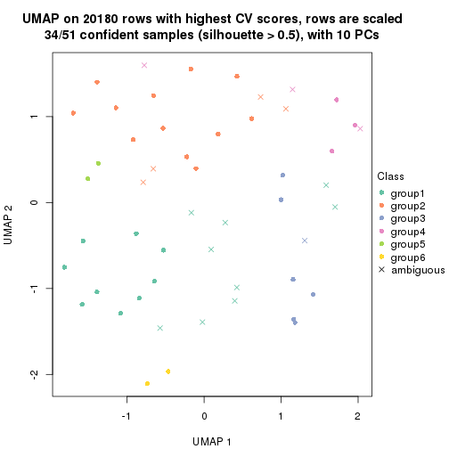
Following heatmap shows how subgroups are split when increasing k:
collect_classes(res)
Test correlation between subgroups and known annotations. If the known annotation is numeric, one-way ANOVA test is applied, and if the known annotation is discrete, chi-squared contingency table test is applied.
test_to_known_factors(res)
#> n disease.state(p) other(p) k
#> CV:kmeans 51 0.172 0.697 2
#> CV:kmeans 36 0.148 1.000 3
#> CV:kmeans 33 0.129 0.103 4
#> CV:kmeans 23 0.267 0.793 5
#> CV:kmeans 34 0.476 0.375 6
If matrix rows can be associated to genes, consider to use GO_Enrichment(res,
...) to perform function enrichment for the signature genes.
The object with results only for a single top-value method and a single partition method can be extracted as:
res = res_list["CV", "skmeans"]
# you can also extract it by
# res = res_list["CV:skmeans"]
A summary of res and all the functions that can be applied to it:
res
#> A 'ConsensusPartition' object with k = 2, 3, 4, 5, 6.
#> On a matrix with 20180 rows and 51 columns.
#> Top rows (1000, 2000, 3000, 4000, 5000) are extracted by 'CV' method.
#> Subgroups are detected by 'skmeans' method.
#> Performed in total 1250 partitions by row resampling.
#> Best k for subgroups seems to be 2.
#>
#> Following methods can be applied to this 'ConsensusPartition' object:
#> [1] "cola_report" "collect_classes" "collect_plots"
#> [4] "collect_stats" "colnames" "compare_signatures"
#> [7] "consensus_heatmap" "dimension_reduction" "functional_enrichment"
#> [10] "get_anno_col" "get_anno" "get_classes"
#> [13] "get_consensus" "get_matrix" "get_membership"
#> [16] "get_param" "get_signatures" "get_stats"
#> [19] "is_best_k" "is_stable_k" "membership_heatmap"
#> [22] "ncol" "nrow" "plot_ecdf"
#> [25] "rownames" "select_partition_number" "show"
#> [28] "suggest_best_k" "test_to_known_factors"
collect_plots() function collects all the plots made from res for all k (number of partitions)
into one single page to provide an easy and fast comparison between different k.
collect_plots(res)
The plots are:
k and the heatmap of
predicted classes for each k.k.k.k.All the plots in panels can be made by individual functions and they are plotted later in this section.
select_partition_number() produces several plots showing different
statistics for choosing “optimized” k. There are following statistics:
k;k, the area increased is defined as \(A_k - A_{k-1}\).The detailed explanations of these statistics can be found in the cola vignette.
Generally speaking, lower PAC score, higher mean silhouette score or higher
concordance corresponds to better partition. Rand index and Jaccard index
measure how similar the current partition is compared to partition with k-1.
If they are too similar, we won't accept k is better than k-1.
select_partition_number(res)
The numeric values for all these statistics can be obtained by get_stats().
get_stats(res)
#> k 1-PAC mean_silhouette concordance area_increased Rand Jaccard
#> 2 2 0.918 0.932 0.970 0.5049 0.492 0.492
#> 3 3 0.527 0.662 0.797 0.3199 0.794 0.600
#> 4 4 0.462 0.525 0.712 0.1155 0.906 0.730
#> 5 5 0.486 0.347 0.637 0.0665 0.929 0.763
#> 6 6 0.511 0.283 0.552 0.0407 0.946 0.806
suggest_best_k() suggests the best \(k\) based on these statistics. The rules are as follows:
NA.suggest_best_k(res)
#> [1] 2
Following shows the table of the partitions (You need to click the show/hide
code output link to see it). The membership matrix (columns with name p*)
is inferred by
clue::cl_consensus()
function with the SE method. Basically the value in the membership matrix
represents the probability to belong to a certain group. The finall class
label for an item is determined with the group with highest probability it
belongs to.
In get_classes() function, the entropy is calculated from the membership
matrix and the silhouette score is calculated from the consensus matrix.
cbind(get_classes(res, k = 2), get_membership(res, k = 2))
#> class entropy silhouette p1 p2
#> GSM115459 1 0.0000 0.985 1.000 0.000
#> GSM115460 2 0.0000 0.947 0.000 1.000
#> GSM115461 2 0.0000 0.947 0.000 1.000
#> GSM115462 2 0.0000 0.947 0.000 1.000
#> GSM115463 1 0.0000 0.985 1.000 0.000
#> GSM115464 1 0.3733 0.919 0.928 0.072
#> GSM115465 2 0.0000 0.947 0.000 1.000
#> GSM115466 2 0.0000 0.947 0.000 1.000
#> GSM115467 2 0.3733 0.892 0.072 0.928
#> GSM115468 1 0.0000 0.985 1.000 0.000
#> GSM115469 2 0.0000 0.947 0.000 1.000
#> GSM115470 2 0.0000 0.947 0.000 1.000
#> GSM115471 2 0.0000 0.947 0.000 1.000
#> GSM115472 1 0.0000 0.985 1.000 0.000
#> GSM115473 1 0.0000 0.985 1.000 0.000
#> GSM115474 1 0.4815 0.881 0.896 0.104
#> GSM115475 1 0.0000 0.985 1.000 0.000
#> GSM115476 1 0.0000 0.985 1.000 0.000
#> GSM115477 2 0.0000 0.947 0.000 1.000
#> GSM115478 2 0.0000 0.947 0.000 1.000
#> GSM115479 1 0.0000 0.985 1.000 0.000
#> GSM115480 2 0.0672 0.942 0.008 0.992
#> GSM115481 1 0.1184 0.973 0.984 0.016
#> GSM115482 1 0.0000 0.985 1.000 0.000
#> GSM115483 2 0.0000 0.947 0.000 1.000
#> GSM115484 2 0.0000 0.947 0.000 1.000
#> GSM115485 2 0.8909 0.580 0.308 0.692
#> GSM115486 2 0.9732 0.369 0.404 0.596
#> GSM115487 1 0.0000 0.985 1.000 0.000
#> GSM115488 2 0.0000 0.947 0.000 1.000
#> GSM115489 1 0.0000 0.985 1.000 0.000
#> GSM115490 2 0.0000 0.947 0.000 1.000
#> GSM115491 1 0.0376 0.983 0.996 0.004
#> GSM115492 2 0.9129 0.542 0.328 0.672
#> GSM115493 1 0.0000 0.985 1.000 0.000
#> GSM115494 1 0.0000 0.985 1.000 0.000
#> GSM115495 2 0.0000 0.947 0.000 1.000
#> GSM115496 1 0.0000 0.985 1.000 0.000
#> GSM115497 1 0.0000 0.985 1.000 0.000
#> GSM115498 1 0.0000 0.985 1.000 0.000
#> GSM115499 1 0.6438 0.806 0.836 0.164
#> GSM115500 1 0.0376 0.983 0.996 0.004
#> GSM115501 1 0.0000 0.985 1.000 0.000
#> GSM115502 1 0.0000 0.985 1.000 0.000
#> GSM115503 2 0.2603 0.916 0.044 0.956
#> GSM115504 2 0.0000 0.947 0.000 1.000
#> GSM115505 2 0.0000 0.947 0.000 1.000
#> GSM115506 1 0.0376 0.983 0.996 0.004
#> GSM115507 2 0.0000 0.947 0.000 1.000
#> GSM115509 1 0.0000 0.985 1.000 0.000
#> GSM115508 1 0.0000 0.985 1.000 0.000
cbind(get_classes(res, k = 3), get_membership(res, k = 3))
#> class entropy silhouette p1 p2 p3
#> GSM115459 3 0.3941 0.6164 0.156 0.000 0.844
#> GSM115460 2 0.0000 0.8996 0.000 1.000 0.000
#> GSM115461 2 0.0000 0.8996 0.000 1.000 0.000
#> GSM115462 2 0.4179 0.8556 0.052 0.876 0.072
#> GSM115463 1 0.5016 0.7155 0.760 0.000 0.240
#> GSM115464 1 0.4094 0.6411 0.872 0.028 0.100
#> GSM115465 2 0.2297 0.8887 0.020 0.944 0.036
#> GSM115466 2 0.0848 0.9013 0.008 0.984 0.008
#> GSM115467 2 0.4652 0.8389 0.064 0.856 0.080
#> GSM115468 1 0.5502 0.7158 0.744 0.008 0.248
#> GSM115469 2 0.6688 0.5548 0.028 0.664 0.308
#> GSM115470 2 0.1751 0.8985 0.028 0.960 0.012
#> GSM115471 2 0.0237 0.8999 0.000 0.996 0.004
#> GSM115472 1 0.4164 0.6595 0.848 0.008 0.144
#> GSM115473 3 0.3267 0.6224 0.116 0.000 0.884
#> GSM115474 3 0.9389 0.0979 0.352 0.180 0.468
#> GSM115475 1 0.6215 -0.1968 0.572 0.000 0.428
#> GSM115476 1 0.6026 0.5977 0.624 0.000 0.376
#> GSM115477 2 0.0424 0.9002 0.000 0.992 0.008
#> GSM115478 2 0.1015 0.9009 0.012 0.980 0.008
#> GSM115479 1 0.6045 0.5693 0.620 0.000 0.380
#> GSM115480 2 0.3369 0.8761 0.052 0.908 0.040
#> GSM115481 3 0.6577 0.3967 0.420 0.008 0.572
#> GSM115482 1 0.3267 0.7287 0.884 0.000 0.116
#> GSM115483 2 0.1529 0.8993 0.000 0.960 0.040
#> GSM115484 2 0.0747 0.9007 0.000 0.984 0.016
#> GSM115485 3 0.8650 0.4740 0.276 0.144 0.580
#> GSM115486 3 0.5816 0.5824 0.156 0.056 0.788
#> GSM115487 3 0.5070 0.5457 0.224 0.004 0.772
#> GSM115488 2 0.6767 0.6558 0.216 0.720 0.064
#> GSM115489 1 0.5291 0.7063 0.732 0.000 0.268
#> GSM115490 2 0.1031 0.9005 0.000 0.976 0.024
#> GSM115491 1 0.2301 0.6508 0.936 0.004 0.060
#> GSM115492 3 0.8679 0.4572 0.316 0.128 0.556
#> GSM115493 1 0.2152 0.6641 0.948 0.016 0.036
#> GSM115494 1 0.5785 0.6353 0.668 0.000 0.332
#> GSM115495 2 0.1620 0.8998 0.024 0.964 0.012
#> GSM115496 1 0.1529 0.6970 0.960 0.000 0.040
#> GSM115497 3 0.6280 0.2436 0.460 0.000 0.540
#> GSM115498 1 0.3686 0.6871 0.860 0.000 0.140
#> GSM115499 3 0.9243 0.1883 0.340 0.168 0.492
#> GSM115500 3 0.3500 0.6218 0.116 0.004 0.880
#> GSM115501 1 0.4346 0.7329 0.816 0.000 0.184
#> GSM115502 1 0.5988 0.6094 0.632 0.000 0.368
#> GSM115503 2 0.5883 0.7953 0.112 0.796 0.092
#> GSM115504 2 0.8523 0.0224 0.092 0.464 0.444
#> GSM115505 2 0.3369 0.8776 0.052 0.908 0.040
#> GSM115506 1 0.5461 0.7176 0.768 0.016 0.216
#> GSM115507 2 0.1774 0.8990 0.016 0.960 0.024
#> GSM115509 3 0.3267 0.6313 0.116 0.000 0.884
#> GSM115508 3 0.3879 0.6008 0.152 0.000 0.848
cbind(get_classes(res, k = 4), get_membership(res, k = 4))
#> class entropy silhouette p1 p2 p3 p4
#> GSM115459 3 0.4419 0.5819 0.084 0.000 0.812 0.104
#> GSM115460 2 0.0376 0.8067 0.000 0.992 0.004 0.004
#> GSM115461 2 0.0376 0.8067 0.000 0.992 0.004 0.004
#> GSM115462 2 0.7260 0.6263 0.088 0.656 0.092 0.164
#> GSM115463 1 0.4610 0.6005 0.744 0.000 0.236 0.020
#> GSM115464 1 0.6456 0.4600 0.656 0.016 0.084 0.244
#> GSM115465 2 0.5227 0.5514 0.012 0.668 0.008 0.312
#> GSM115466 2 0.2825 0.8096 0.012 0.908 0.024 0.056
#> GSM115467 2 0.6072 0.7208 0.056 0.744 0.096 0.104
#> GSM115468 1 0.6118 0.5573 0.692 0.008 0.196 0.104
#> GSM115469 2 0.6672 0.1202 0.008 0.496 0.064 0.432
#> GSM115470 2 0.3400 0.7889 0.004 0.856 0.012 0.128
#> GSM115471 2 0.1545 0.8095 0.000 0.952 0.008 0.040
#> GSM115472 1 0.7065 0.4347 0.572 0.000 0.216 0.212
#> GSM115473 3 0.4457 0.5851 0.072 0.004 0.816 0.108
#> GSM115474 3 0.9186 0.2276 0.256 0.104 0.432 0.208
#> GSM115475 4 0.7706 -0.0577 0.348 0.000 0.228 0.424
#> GSM115476 3 0.5856 -0.1235 0.408 0.000 0.556 0.036
#> GSM115477 2 0.1890 0.8076 0.000 0.936 0.008 0.056
#> GSM115478 2 0.2732 0.8086 0.012 0.904 0.008 0.076
#> GSM115479 1 0.5691 0.2637 0.508 0.000 0.468 0.024
#> GSM115480 2 0.5840 0.7432 0.064 0.748 0.044 0.144
#> GSM115481 3 0.8323 0.1278 0.244 0.020 0.408 0.328
#> GSM115482 1 0.3787 0.6315 0.840 0.000 0.124 0.036
#> GSM115483 2 0.2675 0.7977 0.000 0.892 0.008 0.100
#> GSM115484 2 0.2401 0.8091 0.004 0.904 0.000 0.092
#> GSM115485 4 0.6059 0.5500 0.072 0.088 0.092 0.748
#> GSM115486 4 0.6900 0.2219 0.040 0.040 0.376 0.544
#> GSM115487 3 0.6220 0.4704 0.200 0.016 0.692 0.092
#> GSM115488 4 0.7830 0.1250 0.152 0.352 0.020 0.476
#> GSM115489 1 0.6106 0.4868 0.604 0.000 0.332 0.064
#> GSM115490 2 0.2329 0.8029 0.000 0.916 0.012 0.072
#> GSM115491 1 0.4204 0.5442 0.788 0.000 0.020 0.192
#> GSM115492 4 0.5521 0.5422 0.084 0.056 0.080 0.780
#> GSM115493 1 0.3668 0.6042 0.852 0.004 0.028 0.116
#> GSM115494 1 0.5414 0.4501 0.604 0.000 0.376 0.020
#> GSM115495 2 0.4413 0.7735 0.028 0.808 0.012 0.152
#> GSM115496 1 0.3570 0.6172 0.860 0.000 0.048 0.092
#> GSM115497 3 0.7165 0.2436 0.356 0.000 0.500 0.144
#> GSM115498 1 0.6346 0.5393 0.656 0.000 0.192 0.152
#> GSM115499 3 0.8842 0.2731 0.148 0.116 0.492 0.244
#> GSM115500 3 0.3000 0.5869 0.040 0.008 0.900 0.052
#> GSM115501 1 0.4418 0.6253 0.784 0.000 0.184 0.032
#> GSM115502 1 0.6148 0.2441 0.484 0.000 0.468 0.048
#> GSM115503 2 0.7633 0.5220 0.124 0.596 0.052 0.228
#> GSM115504 4 0.6860 0.4572 0.016 0.272 0.100 0.612
#> GSM115505 2 0.6059 0.3907 0.032 0.560 0.008 0.400
#> GSM115506 1 0.6402 0.5564 0.684 0.024 0.204 0.088
#> GSM115507 2 0.2926 0.8076 0.012 0.888 0.004 0.096
#> GSM115509 3 0.5565 0.4622 0.068 0.000 0.700 0.232
#> GSM115508 3 0.2816 0.5790 0.064 0.000 0.900 0.036
cbind(get_classes(res, k = 5), get_membership(res, k = 5))
#> class entropy silhouette p1 p2 p3 p4 p5
#> GSM115459 3 0.4969 0.48882 0.104 0.000 0.764 0.068 0.064
#> GSM115460 2 0.0865 0.62895 0.000 0.972 0.000 0.004 0.024
#> GSM115461 2 0.0671 0.62845 0.000 0.980 0.000 0.004 0.016
#> GSM115462 2 0.7803 0.22588 0.068 0.516 0.052 0.096 0.268
#> GSM115463 1 0.4296 0.51426 0.756 0.000 0.204 0.016 0.024
#> GSM115464 1 0.7801 0.34757 0.480 0.008 0.100 0.148 0.264
#> GSM115465 2 0.6268 -0.00329 0.012 0.564 0.000 0.284 0.140
#> GSM115466 2 0.3202 0.62840 0.004 0.860 0.008 0.024 0.104
#> GSM115467 2 0.6510 0.37452 0.016 0.560 0.052 0.044 0.328
#> GSM115468 1 0.6954 0.43112 0.544 0.000 0.168 0.048 0.240
#> GSM115469 4 0.7783 -0.48160 0.004 0.304 0.068 0.424 0.200
#> GSM115470 2 0.4645 0.59308 0.012 0.772 0.004 0.088 0.124
#> GSM115471 2 0.1597 0.62875 0.000 0.940 0.000 0.012 0.048
#> GSM115472 1 0.7867 0.37120 0.504 0.008 0.152 0.144 0.192
#> GSM115473 3 0.5312 0.51728 0.076 0.000 0.740 0.108 0.076
#> GSM115474 3 0.9504 0.17523 0.220 0.096 0.288 0.124 0.272
#> GSM115475 4 0.8004 -0.06875 0.336 0.000 0.148 0.380 0.136
#> GSM115476 1 0.5780 0.23099 0.508 0.000 0.420 0.012 0.060
#> GSM115477 2 0.3559 0.60272 0.000 0.836 0.004 0.064 0.096
#> GSM115478 2 0.3927 0.59245 0.004 0.792 0.000 0.040 0.164
#> GSM115479 3 0.5631 -0.12534 0.424 0.000 0.500 0.000 0.076
#> GSM115480 2 0.5711 0.44629 0.024 0.628 0.016 0.032 0.300
#> GSM115481 4 0.8861 -0.09776 0.260 0.016 0.256 0.300 0.168
#> GSM115482 1 0.5326 0.53654 0.696 0.000 0.108 0.012 0.184
#> GSM115483 2 0.4006 0.58924 0.000 0.804 0.004 0.112 0.080
#> GSM115484 2 0.3484 0.60626 0.000 0.824 0.004 0.028 0.144
#> GSM115485 4 0.3640 0.32552 0.028 0.072 0.012 0.856 0.032
#> GSM115486 4 0.5490 0.34179 0.040 0.012 0.188 0.712 0.048
#> GSM115487 3 0.7010 0.41251 0.176 0.000 0.584 0.112 0.128
#> GSM115488 5 0.8098 0.00000 0.064 0.304 0.008 0.308 0.316
#> GSM115489 1 0.6222 0.43022 0.612 0.000 0.248 0.036 0.104
#> GSM115490 2 0.4328 0.57662 0.000 0.792 0.016 0.116 0.076
#> GSM115491 1 0.6079 0.46955 0.628 0.000 0.032 0.104 0.236
#> GSM115492 4 0.3223 0.33171 0.044 0.044 0.012 0.880 0.020
#> GSM115493 1 0.5013 0.53701 0.740 0.008 0.012 0.076 0.164
#> GSM115494 1 0.5320 0.31246 0.572 0.000 0.368 0.000 0.060
#> GSM115495 2 0.5705 0.36414 0.008 0.604 0.000 0.088 0.300
#> GSM115496 1 0.4961 0.53614 0.768 0.004 0.044 0.076 0.108
#> GSM115497 3 0.7948 0.06753 0.328 0.000 0.392 0.164 0.116
#> GSM115498 1 0.6470 0.46055 0.644 0.000 0.128 0.108 0.120
#> GSM115499 3 0.9004 0.17874 0.228 0.044 0.308 0.116 0.304
#> GSM115500 3 0.3076 0.53818 0.028 0.000 0.880 0.040 0.052
#> GSM115501 1 0.4987 0.53241 0.744 0.000 0.116 0.020 0.120
#> GSM115502 1 0.6004 0.26018 0.496 0.000 0.420 0.020 0.064
#> GSM115503 2 0.8023 -0.05931 0.048 0.396 0.028 0.184 0.344
#> GSM115504 4 0.5546 0.14360 0.004 0.136 0.064 0.724 0.072
#> GSM115505 2 0.6802 -0.23840 0.016 0.456 0.000 0.356 0.172
#> GSM115506 1 0.7500 0.33791 0.468 0.012 0.180 0.040 0.300
#> GSM115507 2 0.4565 0.55300 0.008 0.748 0.004 0.044 0.196
#> GSM115509 3 0.6306 0.38985 0.052 0.004 0.632 0.224 0.088
#> GSM115508 3 0.2765 0.52683 0.044 0.000 0.896 0.024 0.036
cbind(get_classes(res, k = 6), get_membership(res, k = 6))
#> class entropy silhouette p1 p2 p3 p4 p5 p6
#> GSM115459 3 0.4929 0.4516 0.180 0.000 0.720 0.040 0.024 0.036
#> GSM115460 2 0.1262 0.6293 0.000 0.956 0.000 0.020 0.016 0.008
#> GSM115461 2 0.0951 0.6289 0.000 0.968 0.000 0.020 0.008 0.004
#> GSM115462 2 0.7585 0.3029 0.012 0.440 0.044 0.072 0.312 0.120
#> GSM115463 1 0.2705 0.2779 0.876 0.000 0.076 0.004 0.004 0.040
#> GSM115464 1 0.7701 -0.3019 0.424 0.016 0.036 0.100 0.104 0.320
#> GSM115465 2 0.6969 0.3205 0.008 0.484 0.008 0.300 0.088 0.112
#> GSM115466 2 0.4372 0.6209 0.000 0.752 0.012 0.032 0.176 0.028
#> GSM115467 2 0.6986 0.3636 0.012 0.416 0.088 0.008 0.388 0.088
#> GSM115468 1 0.7789 -0.0130 0.388 0.012 0.140 0.024 0.112 0.324
#> GSM115469 4 0.7868 0.1492 0.004 0.220 0.092 0.436 0.196 0.052
#> GSM115470 2 0.5767 0.5940 0.004 0.652 0.012 0.096 0.192 0.044
#> GSM115471 2 0.3116 0.6303 0.000 0.836 0.004 0.016 0.132 0.012
#> GSM115472 1 0.7713 -0.0459 0.492 0.008 0.116 0.124 0.056 0.204
#> GSM115473 3 0.6408 0.4024 0.068 0.012 0.656 0.064 0.092 0.108
#> GSM115474 5 0.9324 0.4069 0.216 0.060 0.204 0.076 0.284 0.160
#> GSM115475 4 0.7656 0.0136 0.280 0.000 0.108 0.404 0.028 0.180
#> GSM115476 1 0.5683 0.2020 0.528 0.000 0.376 0.016 0.020 0.060
#> GSM115477 2 0.5130 0.5987 0.000 0.724 0.020 0.092 0.124 0.040
#> GSM115478 2 0.4795 0.6038 0.000 0.672 0.004 0.028 0.260 0.036
#> GSM115479 1 0.6527 0.1980 0.488 0.000 0.308 0.000 0.072 0.132
#> GSM115480 2 0.6471 0.4393 0.012 0.460 0.028 0.028 0.404 0.068
#> GSM115481 4 0.8611 -0.1315 0.212 0.004 0.272 0.276 0.068 0.168
#> GSM115482 1 0.5087 -0.0392 0.620 0.000 0.028 0.000 0.052 0.300
#> GSM115483 2 0.4976 0.5915 0.000 0.728 0.028 0.104 0.124 0.016
#> GSM115484 2 0.4729 0.6182 0.004 0.700 0.008 0.036 0.232 0.020
#> GSM115485 4 0.2770 0.4825 0.020 0.040 0.032 0.892 0.008 0.008
#> GSM115486 4 0.5289 0.3759 0.020 0.004 0.224 0.676 0.044 0.032
#> GSM115487 3 0.8176 0.0840 0.228 0.008 0.424 0.068 0.140 0.132
#> GSM115488 2 0.8433 0.0411 0.040 0.264 0.004 0.244 0.260 0.188
#> GSM115489 1 0.5151 0.2503 0.704 0.000 0.156 0.016 0.024 0.100
#> GSM115490 2 0.4370 0.6044 0.000 0.772 0.020 0.080 0.116 0.012
#> GSM115491 6 0.6385 0.0000 0.416 0.000 0.016 0.064 0.064 0.440
#> GSM115492 4 0.2572 0.4813 0.028 0.016 0.024 0.900 0.000 0.032
#> GSM115493 1 0.5534 -0.4836 0.512 0.004 0.004 0.040 0.032 0.408
#> GSM115494 1 0.5393 0.3345 0.640 0.000 0.224 0.000 0.032 0.104
#> GSM115495 2 0.6305 0.4673 0.000 0.452 0.012 0.064 0.408 0.064
#> GSM115496 1 0.5812 -0.5058 0.548 0.000 0.020 0.040 0.044 0.348
#> GSM115497 3 0.7117 0.1028 0.364 0.000 0.408 0.100 0.016 0.112
#> GSM115498 1 0.6234 0.0871 0.628 0.000 0.096 0.088 0.024 0.164
#> GSM115499 5 0.9465 0.4176 0.192 0.088 0.228 0.100 0.284 0.108
#> GSM115500 3 0.4155 0.4454 0.048 0.008 0.816 0.024 0.064 0.040
#> GSM115501 1 0.5009 0.2292 0.732 0.008 0.048 0.016 0.040 0.156
#> GSM115502 1 0.5537 0.2018 0.552 0.000 0.360 0.024 0.012 0.052
#> GSM115503 2 0.8641 0.1845 0.016 0.308 0.056 0.136 0.248 0.236
#> GSM115504 4 0.6272 0.3909 0.008 0.136 0.052 0.652 0.104 0.048
#> GSM115505 2 0.7430 0.2743 0.008 0.368 0.008 0.328 0.216 0.072
#> GSM115506 1 0.7789 0.0679 0.392 0.012 0.124 0.032 0.108 0.332
#> GSM115507 2 0.5922 0.5916 0.012 0.632 0.008 0.056 0.224 0.068
#> GSM115509 3 0.6706 0.3326 0.080 0.004 0.576 0.228 0.052 0.060
#> GSM115508 3 0.2753 0.4802 0.080 0.000 0.876 0.012 0.004 0.028
Heatmaps for the consensus matrix. It visualizes the probability of two samples to be in a same group.
consensus_heatmap(res, k = 2)
consensus_heatmap(res, k = 3)
consensus_heatmap(res, k = 4)
consensus_heatmap(res, k = 5)
consensus_heatmap(res, k = 6)
Heatmaps for the membership of samples in all partitions to see how consistent they are:
membership_heatmap(res, k = 2)
membership_heatmap(res, k = 3)
membership_heatmap(res, k = 4)
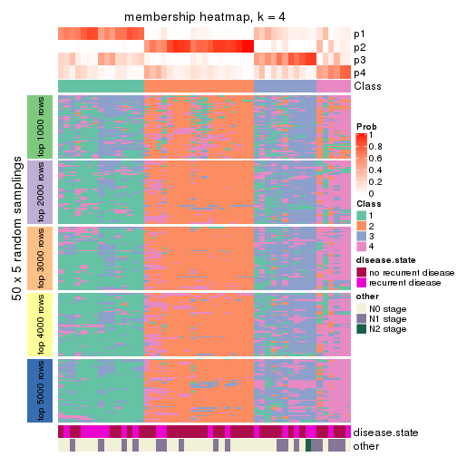
membership_heatmap(res, k = 5)

membership_heatmap(res, k = 6)
As soon as we have had the classes for columns, we can look for signatures which are significantly different between classes which can be candidate marks for certain classes. Following are the heatmaps for signatures.
Signature heatmaps where rows are scaled:
get_signatures(res, k = 2)
get_signatures(res, k = 3)
get_signatures(res, k = 4)
get_signatures(res, k = 5)
get_signatures(res, k = 6)

Signature heatmaps where rows are not scaled:
get_signatures(res, k = 2, scale_rows = FALSE)
get_signatures(res, k = 3, scale_rows = FALSE)
get_signatures(res, k = 4, scale_rows = FALSE)
get_signatures(res, k = 5, scale_rows = FALSE)
get_signatures(res, k = 6, scale_rows = FALSE)

Compare the overlap of signatures from different k:
compare_signatures(res)
get_signature() returns a data frame invisibly. TO get the list of signatures, the function
call should be assigned to a variable explicitly. In following code, if plot argument is set
to FALSE, no heatmap is plotted while only the differential analysis is performed.
# code only for demonstration
tb = get_signature(res, k = ..., plot = FALSE)
An example of the output of tb is:
#> which_row fdr mean_1 mean_2 scaled_mean_1 scaled_mean_2 km
#> 1 38 0.042760348 8.373488 9.131774 -0.5533452 0.5164555 1
#> 2 40 0.018707592 7.106213 8.469186 -0.6173731 0.5762149 1
#> 3 55 0.019134737 10.221463 11.207825 -0.6159697 0.5749050 1
#> 4 59 0.006059896 5.921854 7.869574 -0.6899429 0.6439467 1
#> 5 60 0.018055526 8.928898 10.211722 -0.6204761 0.5791110 1
#> 6 98 0.009384629 15.714769 14.887706 0.6635654 -0.6193277 2
...
The columns in tb are:
which_row: row indices corresponding to the input matrix.fdr: FDR for the differential test. mean_x: The mean value in group x.scaled_mean_x: The mean value in group x after rows are scaled.km: Row groups if k-means clustering is applied to rows.UMAP plot which shows how samples are separated.
dimension_reduction(res, k = 2, method = "UMAP")
dimension_reduction(res, k = 3, method = "UMAP")
dimension_reduction(res, k = 4, method = "UMAP")
dimension_reduction(res, k = 5, method = "UMAP")
dimension_reduction(res, k = 6, method = "UMAP")
Following heatmap shows how subgroups are split when increasing k:
collect_classes(res)
Test correlation between subgroups and known annotations. If the known annotation is numeric, one-way ANOVA test is applied, and if the known annotation is discrete, chi-squared contingency table test is applied.
test_to_known_factors(res)
#> n disease.state(p) other(p) k
#> CV:skmeans 50 0.1904 0.6191 2
#> CV:skmeans 43 0.1529 0.0745 3
#> CV:skmeans 32 0.0887 0.2355 4
#> CV:skmeans 19 0.0461 0.1892 5
#> CV:skmeans 11 NA NA 6
If matrix rows can be associated to genes, consider to use GO_Enrichment(res,
...) to perform function enrichment for the signature genes.
The object with results only for a single top-value method and a single partition method can be extracted as:
res = res_list["CV", "pam"]
# you can also extract it by
# res = res_list["CV:pam"]
A summary of res and all the functions that can be applied to it:
res
#> A 'ConsensusPartition' object with k = 2, 3, 4, 5, 6.
#> On a matrix with 20180 rows and 51 columns.
#> Top rows (1000, 2000, 3000, 4000, 5000) are extracted by 'CV' method.
#> Subgroups are detected by 'pam' method.
#> Performed in total 1250 partitions by row resampling.
#> Best k for subgroups seems to be 2.
#>
#> Following methods can be applied to this 'ConsensusPartition' object:
#> [1] "cola_report" "collect_classes" "collect_plots"
#> [4] "collect_stats" "colnames" "compare_signatures"
#> [7] "consensus_heatmap" "dimension_reduction" "functional_enrichment"
#> [10] "get_anno_col" "get_anno" "get_classes"
#> [13] "get_consensus" "get_matrix" "get_membership"
#> [16] "get_param" "get_signatures" "get_stats"
#> [19] "is_best_k" "is_stable_k" "membership_heatmap"
#> [22] "ncol" "nrow" "plot_ecdf"
#> [25] "rownames" "select_partition_number" "show"
#> [28] "suggest_best_k" "test_to_known_factors"
collect_plots() function collects all the plots made from res for all k (number of partitions)
into one single page to provide an easy and fast comparison between different k.
collect_plots(res)
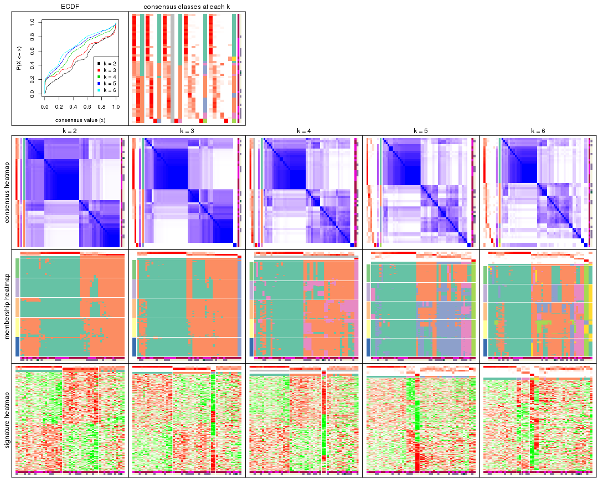
The plots are:
k and the heatmap of
predicted classes for each k.k.k.k.All the plots in panels can be made by individual functions and they are plotted later in this section.
select_partition_number() produces several plots showing different
statistics for choosing “optimized” k. There are following statistics:
k;k, the area increased is defined as \(A_k - A_{k-1}\).The detailed explanations of these statistics can be found in the cola vignette.
Generally speaking, lower PAC score, higher mean silhouette score or higher
concordance corresponds to better partition. Rand index and Jaccard index
measure how similar the current partition is compared to partition with k-1.
If they are too similar, we won't accept k is better than k-1.
select_partition_number(res)
The numeric values for all these statistics can be obtained by get_stats().
get_stats(res)
#> k 1-PAC mean_silhouette concordance area_increased Rand Jaccard
#> 2 2 0.406 0.677 0.851 0.4798 0.500 0.500
#> 3 3 0.482 0.672 0.869 0.1119 0.738 0.568
#> 4 4 0.418 0.598 0.792 0.1429 0.926 0.849
#> 5 5 0.389 0.515 0.744 0.0687 0.801 0.571
#> 6 6 0.433 0.473 0.770 0.0418 0.863 0.620
suggest_best_k() suggests the best \(k\) based on these statistics. The rules are as follows:
NA.suggest_best_k(res)
#> [1] 2
Following shows the table of the partitions (You need to click the show/hide
code output link to see it). The membership matrix (columns with name p*)
is inferred by
clue::cl_consensus()
function with the SE method. Basically the value in the membership matrix
represents the probability to belong to a certain group. The finall class
label for an item is determined with the group with highest probability it
belongs to.
In get_classes() function, the entropy is calculated from the membership
matrix and the silhouette score is calculated from the consensus matrix.
cbind(get_classes(res, k = 2), get_membership(res, k = 2))
#> class entropy silhouette p1 p2
#> GSM115459 1 0.9661 0.444 0.608 0.392
#> GSM115460 2 0.0000 0.791 0.000 1.000
#> GSM115461 2 0.5946 0.728 0.144 0.856
#> GSM115462 1 0.8955 0.511 0.688 0.312
#> GSM115463 1 0.0000 0.814 1.000 0.000
#> GSM115464 1 0.1184 0.807 0.984 0.016
#> GSM115465 2 0.5842 0.766 0.140 0.860
#> GSM115466 2 0.1414 0.803 0.020 0.980
#> GSM115467 2 0.1843 0.803 0.028 0.972
#> GSM115468 1 0.0376 0.812 0.996 0.004
#> GSM115469 2 0.6887 0.697 0.184 0.816
#> GSM115470 2 0.9635 0.422 0.388 0.612
#> GSM115471 2 0.9358 0.491 0.352 0.648
#> GSM115472 1 0.0000 0.814 1.000 0.000
#> GSM115473 1 0.2603 0.794 0.956 0.044
#> GSM115474 1 0.9686 0.437 0.604 0.396
#> GSM115475 1 0.0672 0.812 0.992 0.008
#> GSM115476 1 0.0000 0.814 1.000 0.000
#> GSM115477 2 0.1414 0.803 0.020 0.980
#> GSM115478 2 0.1414 0.803 0.020 0.980
#> GSM115479 1 0.0000 0.814 1.000 0.000
#> GSM115480 2 0.1633 0.803 0.024 0.976
#> GSM115481 1 0.3431 0.775 0.936 0.064
#> GSM115482 1 0.0000 0.814 1.000 0.000
#> GSM115483 2 0.1414 0.803 0.020 0.980
#> GSM115484 2 0.8016 0.668 0.244 0.756
#> GSM115485 2 0.9608 0.274 0.384 0.616
#> GSM115486 1 0.9896 0.341 0.560 0.440
#> GSM115487 1 0.1633 0.805 0.976 0.024
#> GSM115488 2 0.4815 0.779 0.104 0.896
#> GSM115489 1 0.9129 0.536 0.672 0.328
#> GSM115490 2 0.1414 0.803 0.020 0.980
#> GSM115491 1 0.2043 0.796 0.968 0.032
#> GSM115492 1 0.9686 0.435 0.604 0.396
#> GSM115493 1 0.0000 0.814 1.000 0.000
#> GSM115494 1 0.0000 0.814 1.000 0.000
#> GSM115495 2 0.3879 0.788 0.076 0.924
#> GSM115496 1 0.0000 0.814 1.000 0.000
#> GSM115497 1 0.0000 0.814 1.000 0.000
#> GSM115498 1 0.9427 0.496 0.640 0.360
#> GSM115499 2 0.9850 0.126 0.428 0.572
#> GSM115500 1 0.9710 0.430 0.600 0.400
#> GSM115501 1 0.0000 0.814 1.000 0.000
#> GSM115502 1 0.0000 0.814 1.000 0.000
#> GSM115503 2 0.8267 0.570 0.260 0.740
#> GSM115504 2 0.9580 0.320 0.380 0.620
#> GSM115505 2 0.1414 0.803 0.020 0.980
#> GSM115506 1 0.0000 0.814 1.000 0.000
#> GSM115507 2 0.7453 0.691 0.212 0.788
#> GSM115509 1 0.8909 0.563 0.692 0.308
#> GSM115508 1 0.9661 0.444 0.608 0.392
cbind(get_classes(res, k = 3), get_membership(res, k = 3))
#> class entropy silhouette p1 p2 p3
#> GSM115459 2 0.6154 0.4285 0.408 0.592 0.000
#> GSM115460 3 0.0424 1.0000 0.000 0.008 0.992
#> GSM115461 3 0.0424 1.0000 0.000 0.008 0.992
#> GSM115462 1 0.6008 0.2640 0.628 0.372 0.000
#> GSM115463 1 0.0000 0.8676 1.000 0.000 0.000
#> GSM115464 1 0.0747 0.8590 0.984 0.016 0.000
#> GSM115465 2 0.3879 0.6749 0.152 0.848 0.000
#> GSM115466 2 0.0424 0.7408 0.008 0.992 0.000
#> GSM115467 2 0.0000 0.7400 0.000 1.000 0.000
#> GSM115468 1 0.0237 0.8663 0.996 0.004 0.000
#> GSM115469 2 0.0424 0.7419 0.008 0.992 0.000
#> GSM115470 1 0.6235 0.1511 0.564 0.436 0.000
#> GSM115471 2 0.6026 0.3254 0.376 0.624 0.000
#> GSM115472 1 0.0000 0.8676 1.000 0.000 0.000
#> GSM115473 1 0.0892 0.8565 0.980 0.020 0.000
#> GSM115474 2 0.6140 0.4349 0.404 0.596 0.000
#> GSM115475 1 0.0424 0.8641 0.992 0.008 0.000
#> GSM115476 1 0.0000 0.8676 1.000 0.000 0.000
#> GSM115477 2 0.0000 0.7400 0.000 1.000 0.000
#> GSM115478 2 0.0000 0.7400 0.000 1.000 0.000
#> GSM115479 1 0.0000 0.8676 1.000 0.000 0.000
#> GSM115480 2 0.0000 0.7400 0.000 1.000 0.000
#> GSM115481 1 0.2165 0.8174 0.936 0.064 0.000
#> GSM115482 1 0.0000 0.8676 1.000 0.000 0.000
#> GSM115483 2 0.0000 0.7400 0.000 1.000 0.000
#> GSM115484 2 0.4654 0.6167 0.208 0.792 0.000
#> GSM115485 2 0.4702 0.6822 0.212 0.788 0.000
#> GSM115486 2 0.6062 0.4683 0.384 0.616 0.000
#> GSM115487 1 0.1031 0.8534 0.976 0.024 0.000
#> GSM115488 2 0.0892 0.7394 0.020 0.980 0.000
#> GSM115489 1 0.6302 -0.1910 0.520 0.480 0.000
#> GSM115490 2 0.0000 0.7400 0.000 1.000 0.000
#> GSM115491 1 0.1289 0.8453 0.968 0.032 0.000
#> GSM115492 2 0.6260 0.3412 0.448 0.552 0.000
#> GSM115493 1 0.0000 0.8676 1.000 0.000 0.000
#> GSM115494 1 0.0000 0.8676 1.000 0.000 0.000
#> GSM115495 2 0.0592 0.7402 0.012 0.988 0.000
#> GSM115496 1 0.0000 0.8676 1.000 0.000 0.000
#> GSM115497 1 0.0424 0.8646 0.992 0.000 0.008
#> GSM115498 1 0.6260 -0.0526 0.552 0.448 0.000
#> GSM115499 2 0.4887 0.6647 0.228 0.772 0.000
#> GSM115500 2 0.6126 0.4418 0.400 0.600 0.000
#> GSM115501 1 0.0000 0.8676 1.000 0.000 0.000
#> GSM115502 1 0.0000 0.8676 1.000 0.000 0.000
#> GSM115503 2 0.3752 0.7261 0.144 0.856 0.000
#> GSM115504 2 0.5678 0.5672 0.316 0.684 0.000
#> GSM115505 2 0.0000 0.7400 0.000 1.000 0.000
#> GSM115506 1 0.0000 0.8676 1.000 0.000 0.000
#> GSM115507 2 0.4796 0.6030 0.220 0.780 0.000
#> GSM115509 1 0.6062 0.1711 0.616 0.384 0.000
#> GSM115508 2 0.6140 0.4349 0.404 0.596 0.000
cbind(get_classes(res, k = 4), get_membership(res, k = 4))
#> class entropy silhouette p1 p2 p3 p4
#> GSM115459 2 0.6652 0.370 0.316 0.576 NA 0
#> GSM115460 4 0.0000 1.000 0.000 0.000 NA 1
#> GSM115461 4 0.0000 1.000 0.000 0.000 NA 1
#> GSM115462 1 0.6426 0.171 0.568 0.352 NA 0
#> GSM115463 1 0.0000 0.840 1.000 0.000 NA 0
#> GSM115464 1 0.0592 0.836 0.984 0.016 NA 0
#> GSM115465 2 0.4906 0.621 0.140 0.776 NA 0
#> GSM115466 2 0.3649 0.596 0.000 0.796 NA 0
#> GSM115467 2 0.2345 0.637 0.000 0.900 NA 0
#> GSM115468 1 0.0657 0.838 0.984 0.004 NA 0
#> GSM115469 2 0.3448 0.615 0.004 0.828 NA 0
#> GSM115470 2 0.7584 0.317 0.348 0.448 NA 0
#> GSM115471 2 0.7309 0.391 0.324 0.504 NA 0
#> GSM115472 1 0.0000 0.840 1.000 0.000 NA 0
#> GSM115473 1 0.2578 0.790 0.912 0.036 NA 0
#> GSM115474 2 0.5923 0.293 0.376 0.580 NA 0
#> GSM115475 1 0.1256 0.829 0.964 0.008 NA 0
#> GSM115476 1 0.0000 0.840 1.000 0.000 NA 0
#> GSM115477 2 0.3311 0.608 0.000 0.828 NA 0
#> GSM115478 2 0.0336 0.638 0.000 0.992 NA 0
#> GSM115479 1 0.1302 0.819 0.956 0.000 NA 0
#> GSM115480 2 0.1716 0.637 0.000 0.936 NA 0
#> GSM115481 1 0.1716 0.801 0.936 0.064 NA 0
#> GSM115482 1 0.0000 0.840 1.000 0.000 NA 0
#> GSM115483 2 0.4454 0.525 0.000 0.692 NA 0
#> GSM115484 2 0.5956 0.553 0.220 0.680 NA 0
#> GSM115485 2 0.6750 0.434 0.104 0.540 NA 0
#> GSM115486 2 0.7882 0.261 0.284 0.368 NA 0
#> GSM115487 1 0.0921 0.829 0.972 0.028 NA 0
#> GSM115488 2 0.2411 0.640 0.040 0.920 NA 0
#> GSM115489 1 0.6214 -0.116 0.476 0.472 NA 0
#> GSM115490 2 0.4040 0.550 0.000 0.752 NA 0
#> GSM115491 1 0.1022 0.825 0.968 0.032 NA 0
#> GSM115492 1 0.7910 -0.168 0.364 0.316 NA 0
#> GSM115493 1 0.0000 0.840 1.000 0.000 NA 0
#> GSM115494 1 0.1302 0.819 0.956 0.000 NA 0
#> GSM115495 2 0.1767 0.644 0.012 0.944 NA 0
#> GSM115496 1 0.0000 0.840 1.000 0.000 NA 0
#> GSM115497 1 0.3219 0.712 0.836 0.000 NA 0
#> GSM115498 1 0.4941 0.138 0.564 0.436 NA 0
#> GSM115499 2 0.4920 0.581 0.192 0.756 NA 0
#> GSM115500 2 0.6616 0.382 0.308 0.584 NA 0
#> GSM115501 1 0.0000 0.840 1.000 0.000 NA 0
#> GSM115502 1 0.0000 0.840 1.000 0.000 NA 0
#> GSM115503 2 0.5110 0.637 0.132 0.764 NA 0
#> GSM115504 2 0.7777 0.345 0.260 0.424 NA 0
#> GSM115505 2 0.4843 0.466 0.000 0.604 NA 0
#> GSM115506 1 0.0000 0.840 1.000 0.000 NA 0
#> GSM115507 2 0.6576 0.526 0.200 0.632 NA 0
#> GSM115509 1 0.6253 0.193 0.564 0.372 NA 0
#> GSM115508 2 0.6652 0.370 0.316 0.576 NA 0
cbind(get_classes(res, k = 5), get_membership(res, k = 5))
#> class entropy silhouette p1 p2 p3 p4 p5
#> GSM115459 3 0.3586 0.46414 0.264 0.000 0.736 0.000 0
#> GSM115460 5 0.0000 1.00000 0.000 0.000 0.000 0.000 1
#> GSM115461 5 0.0000 1.00000 0.000 0.000 0.000 0.000 1
#> GSM115462 1 0.6009 0.16561 0.580 0.180 0.240 0.000 0
#> GSM115463 1 0.0000 0.85529 1.000 0.000 0.000 0.000 0
#> GSM115464 1 0.0510 0.84977 0.984 0.016 0.000 0.000 0
#> GSM115465 2 0.6059 0.20704 0.104 0.480 0.412 0.004 0
#> GSM115466 2 0.5285 0.29596 0.000 0.584 0.356 0.060 0
#> GSM115467 3 0.4118 0.13872 0.000 0.336 0.660 0.004 0
#> GSM115468 1 0.0566 0.85219 0.984 0.004 0.012 0.000 0
#> GSM115469 2 0.5337 0.04129 0.000 0.508 0.440 0.052 0
#> GSM115470 2 0.6416 0.41306 0.288 0.580 0.072 0.060 0
#> GSM115471 2 0.5584 0.40380 0.324 0.584 0.092 0.000 0
#> GSM115472 1 0.0000 0.85529 1.000 0.000 0.000 0.000 0
#> GSM115473 1 0.2654 0.78628 0.888 0.064 0.048 0.000 0
#> GSM115474 3 0.4101 0.40796 0.372 0.000 0.628 0.000 0
#> GSM115475 1 0.1872 0.81846 0.928 0.000 0.020 0.052 0
#> GSM115476 1 0.0000 0.85529 1.000 0.000 0.000 0.000 0
#> GSM115477 2 0.4219 0.21471 0.000 0.584 0.416 0.000 0
#> GSM115478 3 0.3895 0.14155 0.000 0.320 0.680 0.000 0
#> GSM115479 1 0.3810 0.69016 0.792 0.000 0.040 0.168 0
#> GSM115480 3 0.4283 0.00607 0.000 0.456 0.544 0.000 0
#> GSM115481 1 0.1818 0.81716 0.932 0.044 0.024 0.000 0
#> GSM115482 1 0.0000 0.85529 1.000 0.000 0.000 0.000 0
#> GSM115483 2 0.0162 0.37623 0.000 0.996 0.004 0.000 0
#> GSM115484 2 0.6417 0.37124 0.216 0.504 0.280 0.000 0
#> GSM115485 4 0.6896 0.56720 0.060 0.200 0.168 0.572 0
#> GSM115486 4 0.6772 0.53181 0.248 0.016 0.224 0.512 0
#> GSM115487 1 0.1544 0.80958 0.932 0.000 0.068 0.000 0
#> GSM115488 3 0.5459 0.15079 0.072 0.360 0.568 0.000 0
#> GSM115489 3 0.4307 0.20436 0.496 0.000 0.504 0.000 0
#> GSM115490 2 0.1478 0.37586 0.000 0.936 0.064 0.000 0
#> GSM115491 1 0.0880 0.83880 0.968 0.032 0.000 0.000 0
#> GSM115492 4 0.6050 0.54818 0.300 0.008 0.120 0.572 0
#> GSM115493 1 0.0000 0.85529 1.000 0.000 0.000 0.000 0
#> GSM115494 1 0.3810 0.69016 0.792 0.000 0.040 0.168 0
#> GSM115495 3 0.4538 -0.01376 0.008 0.452 0.540 0.000 0
#> GSM115496 1 0.0000 0.85529 1.000 0.000 0.000 0.000 0
#> GSM115497 1 0.3318 0.67394 0.808 0.000 0.012 0.180 0
#> GSM115498 1 0.4262 -0.06106 0.560 0.000 0.440 0.000 0
#> GSM115499 3 0.5640 0.39744 0.188 0.176 0.636 0.000 0
#> GSM115500 3 0.3480 0.46692 0.248 0.000 0.752 0.000 0
#> GSM115501 1 0.0000 0.85529 1.000 0.000 0.000 0.000 0
#> GSM115502 1 0.0000 0.85529 1.000 0.000 0.000 0.000 0
#> GSM115503 3 0.6244 0.13613 0.136 0.352 0.508 0.004 0
#> GSM115504 4 0.6962 0.58173 0.156 0.208 0.068 0.568 0
#> GSM115505 4 0.6054 0.31430 0.000 0.304 0.148 0.548 0
#> GSM115506 1 0.0000 0.85529 1.000 0.000 0.000 0.000 0
#> GSM115507 2 0.6035 0.43954 0.204 0.580 0.216 0.000 0
#> GSM115509 1 0.4278 0.00640 0.548 0.000 0.452 0.000 0
#> GSM115508 3 0.3636 0.45874 0.272 0.000 0.728 0.000 0
cbind(get_classes(res, k = 6), get_membership(res, k = 6))
#> class entropy silhouette p1 p2 p3 p4 p5 p6
#> GSM115459 2 0.5711 0.34322 0.224 0.580 0.184 0.008 0 0.004
#> GSM115460 5 0.0000 1.00000 0.000 0.000 0.000 0.000 1 0.000
#> GSM115461 5 0.0000 1.00000 0.000 0.000 0.000 0.000 1 0.000
#> GSM115462 1 0.4787 0.07971 0.596 0.336 0.068 0.000 0 0.000
#> GSM115463 1 0.0000 0.72940 1.000 0.000 0.000 0.000 0 0.000
#> GSM115464 1 0.0458 0.71924 0.984 0.016 0.000 0.000 0 0.000
#> GSM115465 2 0.3554 0.29072 0.108 0.808 0.080 0.004 0 0.000
#> GSM115466 2 0.5694 -0.21620 0.000 0.644 0.168 0.068 0 0.120
#> GSM115467 2 0.2664 0.36970 0.000 0.816 0.184 0.000 0 0.000
#> GSM115468 1 0.0922 0.70663 0.968 0.004 0.024 0.004 0 0.000
#> GSM115469 2 0.5416 0.08904 0.000 0.676 0.080 0.088 0 0.156
#> GSM115470 2 0.7845 -0.34786 0.184 0.460 0.168 0.068 0 0.120
#> GSM115471 2 0.5631 -0.09966 0.324 0.508 0.168 0.000 0 0.000
#> GSM115472 1 0.0000 0.72940 1.000 0.000 0.000 0.000 0 0.000
#> GSM115473 1 0.2328 0.61138 0.892 0.052 0.056 0.000 0 0.000
#> GSM115474 2 0.4275 0.23043 0.388 0.592 0.016 0.004 0 0.000
#> GSM115475 1 0.1745 0.65600 0.924 0.020 0.000 0.056 0 0.000
#> GSM115476 1 0.0000 0.72940 1.000 0.000 0.000 0.000 0 0.000
#> GSM115477 2 0.2527 0.22591 0.000 0.832 0.168 0.000 0 0.000
#> GSM115478 2 0.2768 0.36183 0.000 0.832 0.012 0.156 0 0.000
#> GSM115479 6 0.3864 1.00000 0.480 0.000 0.000 0.000 0 0.520
#> GSM115480 2 0.1075 0.37369 0.000 0.952 0.048 0.000 0 0.000
#> GSM115481 1 0.2058 0.64085 0.916 0.048 0.024 0.012 0 0.000
#> GSM115482 1 0.0000 0.72940 1.000 0.000 0.000 0.000 0 0.000
#> GSM115483 3 0.3756 0.87676 0.000 0.400 0.600 0.000 0 0.000
#> GSM115484 2 0.4582 0.13807 0.216 0.684 0.100 0.000 0 0.000
#> GSM115485 4 0.3521 0.56637 0.004 0.268 0.004 0.724 0 0.000
#> GSM115486 4 0.5175 0.50188 0.196 0.184 0.000 0.620 0 0.000
#> GSM115487 1 0.1327 0.65861 0.936 0.064 0.000 0.000 0 0.000
#> GSM115488 2 0.1982 0.41594 0.068 0.912 0.016 0.004 0 0.000
#> GSM115489 1 0.4484 0.00145 0.516 0.460 0.016 0.008 0 0.000
#> GSM115490 3 0.3847 0.87177 0.000 0.456 0.544 0.000 0 0.000
#> GSM115491 1 0.0790 0.70082 0.968 0.032 0.000 0.000 0 0.000
#> GSM115492 4 0.4203 0.50132 0.216 0.068 0.000 0.716 0 0.000
#> GSM115493 1 0.0000 0.72940 1.000 0.000 0.000 0.000 0 0.000
#> GSM115494 6 0.3864 1.00000 0.480 0.000 0.000 0.000 0 0.520
#> GSM115495 2 0.1265 0.37363 0.008 0.948 0.044 0.000 0 0.000
#> GSM115496 1 0.0000 0.72940 1.000 0.000 0.000 0.000 0 0.000
#> GSM115497 1 0.2762 0.36049 0.804 0.000 0.000 0.000 0 0.196
#> GSM115498 1 0.3828 0.07913 0.560 0.440 0.000 0.000 0 0.000
#> GSM115499 2 0.3539 0.43998 0.208 0.768 0.016 0.008 0 0.000
#> GSM115500 2 0.5647 0.34550 0.208 0.592 0.188 0.008 0 0.004
#> GSM115501 1 0.0000 0.72940 1.000 0.000 0.000 0.000 0 0.000
#> GSM115502 1 0.0000 0.72940 1.000 0.000 0.000 0.000 0 0.000
#> GSM115503 2 0.4520 0.40981 0.136 0.744 0.100 0.016 0 0.004
#> GSM115504 4 0.4134 0.59481 0.052 0.240 0.000 0.708 0 0.000
#> GSM115505 4 0.5496 0.35869 0.000 0.280 0.016 0.588 0 0.116
#> GSM115506 1 0.0000 0.72940 1.000 0.000 0.000 0.000 0 0.000
#> GSM115507 2 0.5058 0.05517 0.200 0.636 0.164 0.000 0 0.000
#> GSM115509 1 0.5499 -0.08703 0.512 0.348 0.140 0.000 0 0.000
#> GSM115508 2 0.5757 0.33911 0.228 0.572 0.188 0.008 0 0.004
Heatmaps for the consensus matrix. It visualizes the probability of two samples to be in a same group.
consensus_heatmap(res, k = 2)
consensus_heatmap(res, k = 3)
consensus_heatmap(res, k = 4)
consensus_heatmap(res, k = 5)
consensus_heatmap(res, k = 6)
Heatmaps for the membership of samples in all partitions to see how consistent they are:
membership_heatmap(res, k = 2)
membership_heatmap(res, k = 3)

membership_heatmap(res, k = 4)
membership_heatmap(res, k = 5)
membership_heatmap(res, k = 6)
As soon as we have had the classes for columns, we can look for signatures which are significantly different between classes which can be candidate marks for certain classes. Following are the heatmaps for signatures.
Signature heatmaps where rows are scaled:
get_signatures(res, k = 2)
get_signatures(res, k = 3)
get_signatures(res, k = 4)
get_signatures(res, k = 5)
get_signatures(res, k = 6)
Signature heatmaps where rows are not scaled:
get_signatures(res, k = 2, scale_rows = FALSE)
get_signatures(res, k = 3, scale_rows = FALSE)
get_signatures(res, k = 4, scale_rows = FALSE)
get_signatures(res, k = 5, scale_rows = FALSE)
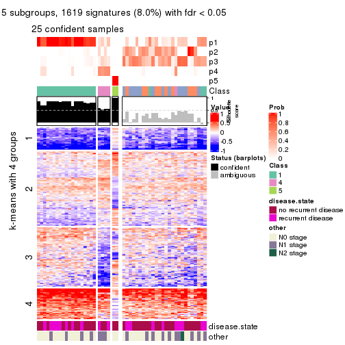
get_signatures(res, k = 6, scale_rows = FALSE)
Compare the overlap of signatures from different k:
compare_signatures(res)
get_signature() returns a data frame invisibly. TO get the list of signatures, the function
call should be assigned to a variable explicitly. In following code, if plot argument is set
to FALSE, no heatmap is plotted while only the differential analysis is performed.
# code only for demonstration
tb = get_signature(res, k = ..., plot = FALSE)
An example of the output of tb is:
#> which_row fdr mean_1 mean_2 scaled_mean_1 scaled_mean_2 km
#> 1 38 0.042760348 8.373488 9.131774 -0.5533452 0.5164555 1
#> 2 40 0.018707592 7.106213 8.469186 -0.6173731 0.5762149 1
#> 3 55 0.019134737 10.221463 11.207825 -0.6159697 0.5749050 1
#> 4 59 0.006059896 5.921854 7.869574 -0.6899429 0.6439467 1
#> 5 60 0.018055526 8.928898 10.211722 -0.6204761 0.5791110 1
#> 6 98 0.009384629 15.714769 14.887706 0.6635654 -0.6193277 2
...
The columns in tb are:
which_row: row indices corresponding to the input matrix.fdr: FDR for the differential test. mean_x: The mean value in group x.scaled_mean_x: The mean value in group x after rows are scaled.km: Row groups if k-means clustering is applied to rows.UMAP plot which shows how samples are separated.
dimension_reduction(res, k = 2, method = "UMAP")
dimension_reduction(res, k = 3, method = "UMAP")
dimension_reduction(res, k = 4, method = "UMAP")
dimension_reduction(res, k = 5, method = "UMAP")
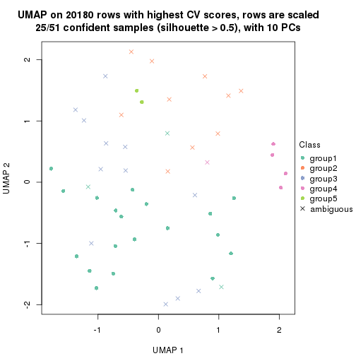
dimension_reduction(res, k = 6, method = "UMAP")
Following heatmap shows how subgroups are split when increasing k:
collect_classes(res)
Test correlation between subgroups and known annotations. If the known annotation is numeric, one-way ANOVA test is applied, and if the known annotation is discrete, chi-squared contingency table test is applied.
test_to_known_factors(res)
#> n disease.state(p) other(p) k
#> CV:pam 39 0.424 0.8506 2
#> CV:pam 39 0.475 0.1033 3
#> CV:pam 36 0.376 0.3144 4
#> CV:pam 25 0.464 0.0603 5
#> CV:pam 26 0.591 0.1955 6
If matrix rows can be associated to genes, consider to use GO_Enrichment(res,
...) to perform function enrichment for the signature genes.
The object with results only for a single top-value method and a single partition method can be extracted as:
res = res_list["CV", "mclust"]
# you can also extract it by
# res = res_list["CV:mclust"]
A summary of res and all the functions that can be applied to it:
res
#> A 'ConsensusPartition' object with k = 2, 3, 4, 5, 6.
#> On a matrix with 20180 rows and 51 columns.
#> Top rows (1000, 2000, 3000, 4000, 5000) are extracted by 'CV' method.
#> Subgroups are detected by 'mclust' method.
#> Performed in total 1250 partitions by row resampling.
#> Best k for subgroups seems to be 4.
#>
#> Following methods can be applied to this 'ConsensusPartition' object:
#> [1] "cola_report" "collect_classes" "collect_plots"
#> [4] "collect_stats" "colnames" "compare_signatures"
#> [7] "consensus_heatmap" "dimension_reduction" "functional_enrichment"
#> [10] "get_anno_col" "get_anno" "get_classes"
#> [13] "get_consensus" "get_matrix" "get_membership"
#> [16] "get_param" "get_signatures" "get_stats"
#> [19] "is_best_k" "is_stable_k" "membership_heatmap"
#> [22] "ncol" "nrow" "plot_ecdf"
#> [25] "rownames" "select_partition_number" "show"
#> [28] "suggest_best_k" "test_to_known_factors"
collect_plots() function collects all the plots made from res for all k (number of partitions)
into one single page to provide an easy and fast comparison between different k.
collect_plots(res)
The plots are:
k and the heatmap of
predicted classes for each k.k.k.k.All the plots in panels can be made by individual functions and they are plotted later in this section.
select_partition_number() produces several plots showing different
statistics for choosing “optimized” k. There are following statistics:
k;k, the area increased is defined as \(A_k - A_{k-1}\).The detailed explanations of these statistics can be found in the cola vignette.
Generally speaking, lower PAC score, higher mean silhouette score or higher
concordance corresponds to better partition. Rand index and Jaccard index
measure how similar the current partition is compared to partition with k-1.
If they are too similar, we won't accept k is better than k-1.
select_partition_number(res)
The numeric values for all these statistics can be obtained by get_stats().
get_stats(res)
#> k 1-PAC mean_silhouette concordance area_increased Rand Jaccard
#> 2 2 0.355 0.828 0.847 0.3619 0.561 0.561
#> 3 3 0.191 0.482 0.695 0.4280 0.864 0.757
#> 4 4 0.270 0.591 0.751 0.1717 0.765 0.541
#> 5 5 0.344 0.514 0.711 0.1384 0.882 0.695
#> 6 6 0.505 0.571 0.775 0.0801 0.916 0.739
suggest_best_k() suggests the best \(k\) based on these statistics. The rules are as follows:
NA.suggest_best_k(res)
#> [1] 4
Following shows the table of the partitions (You need to click the show/hide
code output link to see it). The membership matrix (columns with name p*)
is inferred by
clue::cl_consensus()
function with the SE method. Basically the value in the membership matrix
represents the probability to belong to a certain group. The finall class
label for an item is determined with the group with highest probability it
belongs to.
In get_classes() function, the entropy is calculated from the membership
matrix and the silhouette score is calculated from the consensus matrix.
cbind(get_classes(res, k = 2), get_membership(res, k = 2))
#> class entropy silhouette p1 p2
#> GSM115459 1 0.4022 0.868 0.920 0.080
#> GSM115460 2 0.9170 0.799 0.332 0.668
#> GSM115461 2 0.9170 0.799 0.332 0.668
#> GSM115462 1 0.4022 0.867 0.920 0.080
#> GSM115463 1 0.2603 0.900 0.956 0.044
#> GSM115464 1 0.2423 0.898 0.960 0.040
#> GSM115465 2 0.9866 0.746 0.432 0.568
#> GSM115466 2 0.7815 0.825 0.232 0.768
#> GSM115467 2 0.9358 0.830 0.352 0.648
#> GSM115468 1 0.3114 0.890 0.944 0.056
#> GSM115469 1 1.0000 -0.385 0.504 0.496
#> GSM115470 2 0.7883 0.825 0.236 0.764
#> GSM115471 2 0.8081 0.829 0.248 0.752
#> GSM115472 1 0.0938 0.907 0.988 0.012
#> GSM115473 1 0.4022 0.868 0.920 0.080
#> GSM115474 1 0.1184 0.907 0.984 0.016
#> GSM115475 1 0.2236 0.908 0.964 0.036
#> GSM115476 1 0.0672 0.907 0.992 0.008
#> GSM115477 2 0.9977 0.743 0.472 0.528
#> GSM115478 2 0.8207 0.835 0.256 0.744
#> GSM115479 1 0.7674 0.715 0.776 0.224
#> GSM115480 2 0.8909 0.840 0.308 0.692
#> GSM115481 1 0.2043 0.907 0.968 0.032
#> GSM115482 1 0.0938 0.905 0.988 0.012
#> GSM115483 2 0.9775 0.709 0.412 0.588
#> GSM115484 2 0.7950 0.826 0.240 0.760
#> GSM115485 1 0.3274 0.903 0.940 0.060
#> GSM115486 1 0.4562 0.872 0.904 0.096
#> GSM115487 1 0.4022 0.868 0.920 0.080
#> GSM115488 1 0.5629 0.802 0.868 0.132
#> GSM115489 1 0.1184 0.908 0.984 0.016
#> GSM115490 2 0.9775 0.709 0.412 0.588
#> GSM115491 1 0.0938 0.905 0.988 0.012
#> GSM115492 1 0.2423 0.907 0.960 0.040
#> GSM115493 1 0.0938 0.905 0.988 0.012
#> GSM115494 1 0.7674 0.715 0.776 0.224
#> GSM115495 2 0.8813 0.843 0.300 0.700
#> GSM115496 1 0.0938 0.905 0.988 0.012
#> GSM115497 1 0.3431 0.895 0.936 0.064
#> GSM115498 1 0.1184 0.905 0.984 0.016
#> GSM115499 1 0.2423 0.898 0.960 0.040
#> GSM115500 1 0.4298 0.863 0.912 0.088
#> GSM115501 1 0.1843 0.905 0.972 0.028
#> GSM115502 1 0.0672 0.907 0.992 0.008
#> GSM115503 1 0.2948 0.883 0.948 0.052
#> GSM115504 1 0.4431 0.875 0.908 0.092
#> GSM115505 2 0.9983 0.726 0.476 0.524
#> GSM115506 1 0.2778 0.894 0.952 0.048
#> GSM115507 2 0.8813 0.844 0.300 0.700
#> GSM115509 1 0.4022 0.868 0.920 0.080
#> GSM115508 1 0.4022 0.868 0.920 0.080
cbind(get_classes(res, k = 3), get_membership(res, k = 3))
#> class entropy silhouette p1 p2 p3
#> GSM115459 1 0.6295 -0.2270 0.528 0.000 0.472
#> GSM115460 2 0.7617 0.5246 0.160 0.688 0.152
#> GSM115461 2 0.7617 0.5246 0.160 0.688 0.152
#> GSM115462 1 0.5536 0.4021 0.752 0.236 0.012
#> GSM115463 1 0.1015 0.6911 0.980 0.008 0.012
#> GSM115464 1 0.1989 0.6806 0.948 0.048 0.004
#> GSM115465 2 0.6505 0.6837 0.468 0.528 0.004
#> GSM115466 2 0.8842 0.5854 0.212 0.580 0.208
#> GSM115467 2 0.8043 0.7265 0.372 0.556 0.072
#> GSM115468 1 0.1647 0.6841 0.960 0.036 0.004
#> GSM115469 3 0.9850 0.1773 0.264 0.324 0.412
#> GSM115470 2 0.5926 0.7489 0.356 0.644 0.000
#> GSM115471 2 0.6079 0.7435 0.388 0.612 0.000
#> GSM115472 1 0.3678 0.6774 0.892 0.028 0.080
#> GSM115473 1 0.7758 -0.2924 0.484 0.048 0.468
#> GSM115474 1 0.4370 0.6526 0.868 0.076 0.056
#> GSM115475 1 0.5070 0.5114 0.772 0.004 0.224
#> GSM115476 1 0.4110 0.6180 0.844 0.004 0.152
#> GSM115477 2 0.8981 0.5900 0.264 0.556 0.180
#> GSM115478 2 0.5968 0.7490 0.364 0.636 0.000
#> GSM115479 3 0.7677 0.3078 0.120 0.204 0.676
#> GSM115480 2 0.6295 0.6428 0.472 0.528 0.000
#> GSM115481 1 0.5687 0.5178 0.756 0.020 0.224
#> GSM115482 1 0.0829 0.6908 0.984 0.004 0.012
#> GSM115483 2 0.7480 0.1733 0.036 0.508 0.456
#> GSM115484 2 0.6062 0.7453 0.384 0.616 0.000
#> GSM115485 1 0.7844 0.4611 0.652 0.108 0.240
#> GSM115486 3 0.8273 0.1596 0.448 0.076 0.476
#> GSM115487 1 0.6398 -0.1041 0.580 0.004 0.416
#> GSM115488 1 0.5858 0.3079 0.740 0.240 0.020
#> GSM115489 1 0.1878 0.6874 0.952 0.004 0.044
#> GSM115490 2 0.7480 0.1733 0.036 0.508 0.456
#> GSM115491 1 0.1399 0.6886 0.968 0.028 0.004
#> GSM115492 1 0.7226 0.4913 0.688 0.076 0.236
#> GSM115493 1 0.0661 0.6886 0.988 0.004 0.008
#> GSM115494 3 0.7677 0.3078 0.120 0.204 0.676
#> GSM115495 2 0.6769 0.7442 0.392 0.592 0.016
#> GSM115496 1 0.0237 0.6911 0.996 0.000 0.004
#> GSM115497 1 0.6386 -0.0134 0.584 0.004 0.412
#> GSM115498 1 0.0592 0.6921 0.988 0.000 0.012
#> GSM115499 1 0.5426 0.6522 0.820 0.092 0.088
#> GSM115500 3 0.7295 0.1681 0.484 0.028 0.488
#> GSM115501 1 0.0661 0.6903 0.988 0.004 0.008
#> GSM115502 1 0.4172 0.6151 0.840 0.004 0.156
#> GSM115503 1 0.3690 0.6480 0.884 0.100 0.016
#> GSM115504 1 0.8825 0.3157 0.560 0.152 0.288
#> GSM115505 2 0.7491 0.6848 0.472 0.492 0.036
#> GSM115506 1 0.2434 0.6792 0.940 0.036 0.024
#> GSM115507 2 0.6244 0.7156 0.440 0.560 0.000
#> GSM115509 3 0.7996 0.1490 0.464 0.060 0.476
#> GSM115508 1 0.6286 -0.2220 0.536 0.000 0.464
cbind(get_classes(res, k = 4), get_membership(res, k = 4))
#> class entropy silhouette p1 p2 p3 p4
#> GSM115459 3 0.349 0.7631 0.188 0.000 0.812 0.000
#> GSM115460 2 0.695 0.3086 0.064 0.680 0.140 0.116
#> GSM115461 2 0.695 0.3086 0.064 0.680 0.140 0.116
#> GSM115462 1 0.495 0.3271 0.620 0.376 0.004 0.000
#> GSM115463 1 0.255 0.7229 0.920 0.048 0.020 0.012
#> GSM115464 1 0.254 0.7071 0.904 0.084 0.000 0.012
#> GSM115465 1 0.491 0.0921 0.580 0.420 0.000 0.000
#> GSM115466 2 0.523 0.5620 0.084 0.748 0.168 0.000
#> GSM115467 2 0.525 0.7046 0.236 0.720 0.040 0.004
#> GSM115468 1 0.259 0.7170 0.908 0.076 0.004 0.012
#> GSM115469 3 0.534 0.5518 0.052 0.240 0.708 0.000
#> GSM115470 2 0.376 0.7193 0.216 0.784 0.000 0.000
#> GSM115471 2 0.407 0.7044 0.252 0.748 0.000 0.000
#> GSM115472 1 0.283 0.7119 0.900 0.040 0.060 0.000
#> GSM115473 3 0.364 0.7636 0.172 0.000 0.820 0.008
#> GSM115474 1 0.457 0.6777 0.800 0.144 0.052 0.004
#> GSM115475 1 0.457 0.6186 0.768 0.016 0.208 0.008
#> GSM115476 1 0.420 0.6814 0.832 0.048 0.112 0.008
#> GSM115477 2 0.711 0.1958 0.416 0.456 0.128 0.000
#> GSM115478 2 0.373 0.7185 0.212 0.788 0.000 0.000
#> GSM115479 4 0.421 0.9933 0.072 0.004 0.092 0.832
#> GSM115480 2 0.492 0.3915 0.428 0.572 0.000 0.000
#> GSM115481 1 0.537 0.5772 0.712 0.036 0.244 0.008
#> GSM115482 1 0.235 0.7170 0.928 0.044 0.016 0.012
#> GSM115483 3 0.420 0.4797 0.020 0.192 0.788 0.000
#> GSM115484 2 0.404 0.7092 0.248 0.752 0.000 0.000
#> GSM115485 1 0.725 0.5113 0.624 0.084 0.236 0.056
#> GSM115486 3 0.414 0.7481 0.208 0.012 0.780 0.000
#> GSM115487 3 0.579 0.6307 0.344 0.028 0.620 0.008
#> GSM115488 1 0.490 0.3839 0.668 0.324 0.004 0.004
#> GSM115489 1 0.277 0.7119 0.908 0.040 0.048 0.004
#> GSM115490 3 0.427 0.4857 0.024 0.188 0.788 0.000
#> GSM115491 1 0.273 0.7057 0.912 0.048 0.008 0.032
#> GSM115492 1 0.623 0.5532 0.688 0.032 0.224 0.056
#> GSM115493 1 0.306 0.6979 0.892 0.072 0.004 0.032
#> GSM115494 4 0.428 0.9933 0.076 0.004 0.092 0.828
#> GSM115495 2 0.485 0.5571 0.352 0.644 0.004 0.000
#> GSM115496 1 0.256 0.7068 0.920 0.040 0.008 0.032
#> GSM115497 3 0.589 0.3290 0.444 0.016 0.528 0.012
#> GSM115498 1 0.259 0.7101 0.920 0.036 0.012 0.032
#> GSM115499 1 0.531 0.6588 0.760 0.152 0.080 0.008
#> GSM115500 3 0.300 0.7338 0.132 0.000 0.864 0.004
#> GSM115501 1 0.235 0.7203 0.924 0.056 0.008 0.012
#> GSM115502 1 0.411 0.6860 0.840 0.052 0.100 0.008
#> GSM115503 1 0.394 0.5842 0.764 0.236 0.000 0.000
#> GSM115504 1 0.740 0.2164 0.496 0.136 0.360 0.008
#> GSM115505 1 0.590 0.2961 0.628 0.316 0.056 0.000
#> GSM115506 1 0.319 0.7142 0.884 0.088 0.016 0.012
#> GSM115507 1 0.500 -0.1636 0.512 0.488 0.000 0.000
#> GSM115509 3 0.336 0.7649 0.176 0.000 0.824 0.000
#> GSM115508 3 0.359 0.7620 0.168 0.000 0.824 0.008
cbind(get_classes(res, k = 5), get_membership(res, k = 5))
#> class entropy silhouette p1 p2 p3 p4 p5
#> GSM115459 3 0.2712 0.64657 0.088 0.000 0.880 0.032 0.000
#> GSM115460 2 0.6782 0.16580 0.028 0.568 0.016 0.272 0.116
#> GSM115461 2 0.6782 0.16580 0.028 0.568 0.016 0.272 0.116
#> GSM115462 2 0.4774 0.30996 0.444 0.540 0.012 0.004 0.000
#> GSM115463 1 0.1917 0.67182 0.936 0.016 0.036 0.004 0.008
#> GSM115464 1 0.2124 0.66537 0.900 0.096 0.000 0.004 0.000
#> GSM115465 1 0.5078 0.01301 0.544 0.424 0.004 0.028 0.000
#> GSM115466 2 0.4775 0.61655 0.072 0.780 0.072 0.000 0.076
#> GSM115467 2 0.4317 0.69912 0.160 0.764 0.000 0.000 0.076
#> GSM115468 1 0.2116 0.67282 0.912 0.076 0.008 0.004 0.000
#> GSM115469 3 0.5643 0.44994 0.036 0.236 0.664 0.064 0.000
#> GSM115470 2 0.2424 0.71936 0.132 0.868 0.000 0.000 0.000
#> GSM115471 2 0.2929 0.71958 0.180 0.820 0.000 0.000 0.000
#> GSM115472 1 0.3856 0.62420 0.832 0.024 0.064 0.080 0.000
#> GSM115473 3 0.2144 0.65549 0.068 0.000 0.912 0.020 0.000
#> GSM115474 1 0.5655 0.53705 0.708 0.120 0.056 0.116 0.000
#> GSM115475 1 0.6066 -0.22528 0.504 0.000 0.128 0.368 0.000
#> GSM115476 1 0.5317 0.48949 0.708 0.008 0.140 0.140 0.004
#> GSM115477 2 0.7836 0.29878 0.292 0.436 0.156 0.116 0.000
#> GSM115478 2 0.2629 0.72031 0.136 0.860 0.000 0.000 0.004
#> GSM115479 5 0.0880 1.00000 0.032 0.000 0.000 0.000 0.968
#> GSM115480 2 0.3715 0.66520 0.260 0.736 0.000 0.004 0.000
#> GSM115481 1 0.6358 0.00356 0.540 0.004 0.192 0.264 0.000
#> GSM115482 1 0.0740 0.67170 0.980 0.008 0.004 0.008 0.000
#> GSM115483 3 0.4744 0.52363 0.008 0.148 0.748 0.096 0.000
#> GSM115484 2 0.2813 0.72074 0.168 0.832 0.000 0.000 0.000
#> GSM115485 4 0.6801 0.86889 0.188 0.092 0.120 0.600 0.000
#> GSM115486 3 0.5517 0.52453 0.148 0.016 0.700 0.132 0.004
#> GSM115487 3 0.5345 0.33772 0.196 0.000 0.668 0.136 0.000
#> GSM115488 1 0.5608 0.38697 0.628 0.292 0.056 0.024 0.000
#> GSM115489 1 0.4456 0.58147 0.792 0.016 0.060 0.124 0.008
#> GSM115490 3 0.4733 0.52201 0.008 0.152 0.748 0.092 0.000
#> GSM115491 1 0.2358 0.63783 0.888 0.008 0.000 0.104 0.000
#> GSM115492 4 0.6430 0.86995 0.236 0.040 0.124 0.600 0.000
#> GSM115493 1 0.2519 0.64162 0.884 0.016 0.000 0.100 0.000
#> GSM115494 5 0.0880 1.00000 0.032 0.000 0.000 0.000 0.968
#> GSM115495 2 0.3491 0.67869 0.228 0.768 0.000 0.000 0.004
#> GSM115496 1 0.2358 0.63783 0.888 0.008 0.000 0.104 0.000
#> GSM115497 3 0.6841 -0.18067 0.272 0.004 0.468 0.252 0.004
#> GSM115498 1 0.3280 0.62606 0.848 0.004 0.024 0.120 0.004
#> GSM115499 1 0.6204 0.53904 0.668 0.112 0.096 0.124 0.000
#> GSM115500 3 0.1893 0.64772 0.048 0.000 0.928 0.024 0.000
#> GSM115501 1 0.0981 0.67255 0.972 0.012 0.008 0.008 0.000
#> GSM115502 1 0.5396 0.48409 0.700 0.008 0.144 0.144 0.004
#> GSM115503 1 0.4812 0.19223 0.612 0.364 0.012 0.012 0.000
#> GSM115504 3 0.8287 -0.27700 0.200 0.156 0.372 0.272 0.000
#> GSM115505 1 0.7116 0.29543 0.544 0.256 0.064 0.132 0.004
#> GSM115506 1 0.3285 0.64944 0.844 0.128 0.004 0.004 0.020
#> GSM115507 2 0.4375 0.36627 0.420 0.576 0.000 0.004 0.000
#> GSM115509 3 0.2830 0.64958 0.080 0.000 0.876 0.044 0.000
#> GSM115508 3 0.1740 0.65344 0.056 0.000 0.932 0.012 0.000
cbind(get_classes(res, k = 6), get_membership(res, k = 6))
#> class entropy silhouette p1 p2 p3 p4 p5 p6
#> GSM115459 3 0.2726 0.7004 0.112 0.000 0.856 0.032 0.000 0.000
#> GSM115460 5 0.2362 1.0000 0.004 0.136 0.000 0.000 0.860 0.000
#> GSM115461 5 0.2362 1.0000 0.004 0.136 0.000 0.000 0.860 0.000
#> GSM115462 2 0.4187 0.5571 0.256 0.704 0.032 0.004 0.004 0.000
#> GSM115463 1 0.1129 0.6830 0.964 0.012 0.008 0.000 0.012 0.004
#> GSM115464 1 0.2062 0.6613 0.900 0.088 0.004 0.008 0.000 0.000
#> GSM115465 2 0.6053 0.0269 0.376 0.408 0.004 0.212 0.000 0.000
#> GSM115466 2 0.2730 0.6321 0.000 0.836 0.152 0.012 0.000 0.000
#> GSM115467 2 0.2225 0.7362 0.036 0.912 0.040 0.004 0.004 0.004
#> GSM115468 1 0.1802 0.6781 0.916 0.072 0.012 0.000 0.000 0.000
#> GSM115469 3 0.6273 0.4576 0.044 0.204 0.580 0.160 0.012 0.000
#> GSM115470 2 0.0291 0.7482 0.004 0.992 0.000 0.004 0.000 0.000
#> GSM115471 2 0.0551 0.7496 0.008 0.984 0.004 0.000 0.004 0.000
#> GSM115472 1 0.2960 0.6700 0.880 0.032 0.040 0.024 0.024 0.000
#> GSM115473 3 0.1625 0.7041 0.060 0.000 0.928 0.012 0.000 0.000
#> GSM115474 1 0.5396 0.4667 0.700 0.048 0.164 0.044 0.044 0.000
#> GSM115475 1 0.4766 0.4050 0.616 0.000 0.060 0.320 0.004 0.000
#> GSM115476 1 0.4645 0.5877 0.752 0.008 0.148 0.040 0.048 0.004
#> GSM115477 2 0.6094 0.4174 0.040 0.624 0.204 0.036 0.096 0.000
#> GSM115478 2 0.0291 0.7482 0.000 0.992 0.000 0.004 0.004 0.000
#> GSM115479 6 0.0000 1.0000 0.000 0.000 0.000 0.000 0.000 1.000
#> GSM115480 2 0.2547 0.7035 0.112 0.868 0.016 0.004 0.000 0.000
#> GSM115481 1 0.5675 0.3337 0.568 0.000 0.124 0.288 0.020 0.000
#> GSM115482 1 0.1171 0.6826 0.964 0.012 0.004 0.008 0.008 0.004
#> GSM115483 3 0.5387 0.5631 0.000 0.040 0.664 0.160 0.136 0.000
#> GSM115484 2 0.0363 0.7495 0.012 0.988 0.000 0.000 0.000 0.000
#> GSM115485 4 0.5493 0.3766 0.124 0.028 0.220 0.628 0.000 0.000
#> GSM115486 3 0.4992 0.5444 0.116 0.000 0.624 0.260 0.000 0.000
#> GSM115487 3 0.5037 0.5143 0.168 0.028 0.720 0.040 0.044 0.000
#> GSM115488 1 0.5896 -0.0206 0.468 0.236 0.000 0.296 0.000 0.000
#> GSM115489 1 0.3366 0.6582 0.860 0.016 0.036 0.036 0.048 0.004
#> GSM115490 3 0.5387 0.5631 0.000 0.040 0.664 0.160 0.136 0.000
#> GSM115491 1 0.2706 0.6325 0.852 0.000 0.000 0.124 0.024 0.000
#> GSM115492 4 0.5393 0.3854 0.144 0.016 0.212 0.628 0.000 0.000
#> GSM115493 1 0.2669 0.6422 0.864 0.004 0.000 0.108 0.024 0.000
#> GSM115494 6 0.0000 1.0000 0.000 0.000 0.000 0.000 0.000 1.000
#> GSM115495 2 0.0665 0.7454 0.004 0.980 0.000 0.008 0.008 0.000
#> GSM115496 1 0.2706 0.6325 0.852 0.000 0.000 0.124 0.024 0.000
#> GSM115497 1 0.6188 -0.0202 0.428 0.000 0.384 0.168 0.020 0.000
#> GSM115498 1 0.2848 0.6381 0.848 0.000 0.004 0.124 0.024 0.000
#> GSM115499 1 0.6642 0.3888 0.576 0.132 0.200 0.048 0.044 0.000
#> GSM115500 3 0.2208 0.7012 0.052 0.004 0.908 0.004 0.032 0.000
#> GSM115501 1 0.0748 0.6824 0.976 0.016 0.004 0.000 0.000 0.004
#> GSM115502 1 0.4755 0.5912 0.752 0.012 0.136 0.052 0.044 0.004
#> GSM115503 1 0.6369 -0.0812 0.448 0.396 0.100 0.048 0.008 0.000
#> GSM115504 3 0.6538 0.2962 0.144 0.056 0.496 0.300 0.004 0.000
#> GSM115505 4 0.6055 -0.0710 0.388 0.084 0.008 0.484 0.036 0.000
#> GSM115506 1 0.2261 0.6635 0.884 0.104 0.008 0.000 0.000 0.004
#> GSM115507 2 0.3543 0.5896 0.224 0.756 0.004 0.016 0.000 0.000
#> GSM115509 3 0.2542 0.7083 0.080 0.000 0.876 0.044 0.000 0.000
#> GSM115508 3 0.1686 0.7021 0.052 0.004 0.932 0.004 0.008 0.000
Heatmaps for the consensus matrix. It visualizes the probability of two samples to be in a same group.
consensus_heatmap(res, k = 2)
consensus_heatmap(res, k = 3)
consensus_heatmap(res, k = 4)
consensus_heatmap(res, k = 5)
consensus_heatmap(res, k = 6)
Heatmaps for the membership of samples in all partitions to see how consistent they are:
membership_heatmap(res, k = 2)
membership_heatmap(res, k = 3)
membership_heatmap(res, k = 4)
membership_heatmap(res, k = 5)
membership_heatmap(res, k = 6)
As soon as we have had the classes for columns, we can look for signatures which are significantly different between classes which can be candidate marks for certain classes. Following are the heatmaps for signatures.
Signature heatmaps where rows are scaled:
get_signatures(res, k = 2)
get_signatures(res, k = 3)
get_signatures(res, k = 4)
get_signatures(res, k = 5)
get_signatures(res, k = 6)
Signature heatmaps where rows are not scaled:
get_signatures(res, k = 2, scale_rows = FALSE)
get_signatures(res, k = 3, scale_rows = FALSE)
get_signatures(res, k = 4, scale_rows = FALSE)

get_signatures(res, k = 5, scale_rows = FALSE)
get_signatures(res, k = 6, scale_rows = FALSE)
Compare the overlap of signatures from different k:
compare_signatures(res)
get_signature() returns a data frame invisibly. TO get the list of signatures, the function
call should be assigned to a variable explicitly. In following code, if plot argument is set
to FALSE, no heatmap is plotted while only the differential analysis is performed.
# code only for demonstration
tb = get_signature(res, k = ..., plot = FALSE)
An example of the output of tb is:
#> which_row fdr mean_1 mean_2 scaled_mean_1 scaled_mean_2 km
#> 1 38 0.042760348 8.373488 9.131774 -0.5533452 0.5164555 1
#> 2 40 0.018707592 7.106213 8.469186 -0.6173731 0.5762149 1
#> 3 55 0.019134737 10.221463 11.207825 -0.6159697 0.5749050 1
#> 4 59 0.006059896 5.921854 7.869574 -0.6899429 0.6439467 1
#> 5 60 0.018055526 8.928898 10.211722 -0.6204761 0.5791110 1
#> 6 98 0.009384629 15.714769 14.887706 0.6635654 -0.6193277 2
...
The columns in tb are:
which_row: row indices corresponding to the input matrix.fdr: FDR for the differential test. mean_x: The mean value in group x.scaled_mean_x: The mean value in group x after rows are scaled.km: Row groups if k-means clustering is applied to rows.UMAP plot which shows how samples are separated.
dimension_reduction(res, k = 2, method = "UMAP")
dimension_reduction(res, k = 3, method = "UMAP")
dimension_reduction(res, k = 4, method = "UMAP")
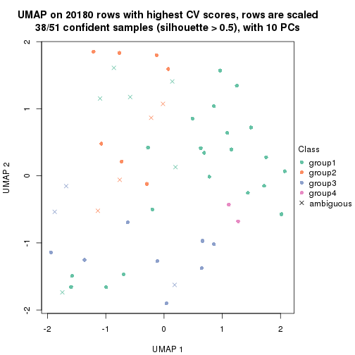
dimension_reduction(res, k = 5, method = "UMAP")

dimension_reduction(res, k = 6, method = "UMAP")
Following heatmap shows how subgroups are split when increasing k:
collect_classes(res)
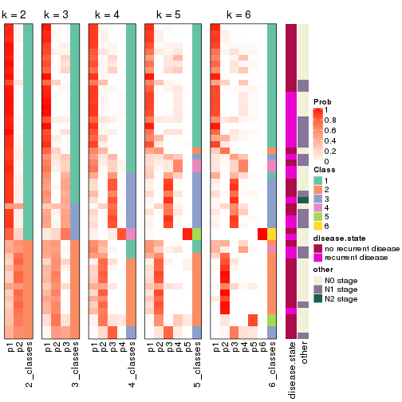
Test correlation between subgroups and known annotations. If the known annotation is numeric, one-way ANOVA test is applied, and if the known annotation is discrete, chi-squared contingency table test is applied.
test_to_known_factors(res)
#> n disease.state(p) other(p) k
#> CV:mclust 50 0.107 0.478 2
#> CV:mclust 33 0.244 0.801 3
#> CV:mclust 38 0.467 0.263 4
#> CV:mclust 34 0.509 0.430 5
#> CV:mclust 37 0.455 0.335 6
If matrix rows can be associated to genes, consider to use GO_Enrichment(res,
...) to perform function enrichment for the signature genes.
The object with results only for a single top-value method and a single partition method can be extracted as:
res = res_list["CV", "NMF"]
# you can also extract it by
# res = res_list["CV:NMF"]
A summary of res and all the functions that can be applied to it:
res
#> A 'ConsensusPartition' object with k = 2, 3, 4, 5, 6.
#> On a matrix with 20180 rows and 51 columns.
#> Top rows (1000, 2000, 3000, 4000, 5000) are extracted by 'CV' method.
#> Subgroups are detected by 'NMF' method.
#> Performed in total 1250 partitions by row resampling.
#> Best k for subgroups seems to be 2.
#>
#> Following methods can be applied to this 'ConsensusPartition' object:
#> [1] "cola_report" "collect_classes" "collect_plots"
#> [4] "collect_stats" "colnames" "compare_signatures"
#> [7] "consensus_heatmap" "dimension_reduction" "functional_enrichment"
#> [10] "get_anno_col" "get_anno" "get_classes"
#> [13] "get_consensus" "get_matrix" "get_membership"
#> [16] "get_param" "get_signatures" "get_stats"
#> [19] "is_best_k" "is_stable_k" "membership_heatmap"
#> [22] "ncol" "nrow" "plot_ecdf"
#> [25] "rownames" "select_partition_number" "show"
#> [28] "suggest_best_k" "test_to_known_factors"
collect_plots() function collects all the plots made from res for all k (number of partitions)
into one single page to provide an easy and fast comparison between different k.
collect_plots(res)
The plots are:
k and the heatmap of
predicted classes for each k.k.k.k.All the plots in panels can be made by individual functions and they are plotted later in this section.
select_partition_number() produces several plots showing different
statistics for choosing “optimized” k. There are following statistics:
k;k, the area increased is defined as \(A_k - A_{k-1}\).The detailed explanations of these statistics can be found in the cola vignette.
Generally speaking, lower PAC score, higher mean silhouette score or higher
concordance corresponds to better partition. Rand index and Jaccard index
measure how similar the current partition is compared to partition with k-1.
If they are too similar, we won't accept k is better than k-1.
select_partition_number(res)
The numeric values for all these statistics can be obtained by get_stats().
get_stats(res)
#> k 1-PAC mean_silhouette concordance area_increased Rand Jaccard
#> 2 2 0.564 0.849 0.924 0.4836 0.514 0.514
#> 3 3 0.382 0.530 0.773 0.3668 0.760 0.557
#> 4 4 0.402 0.439 0.681 0.1221 0.769 0.432
#> 5 5 0.471 0.472 0.686 0.0722 0.856 0.513
#> 6 6 0.535 0.425 0.643 0.0366 0.870 0.476
suggest_best_k() suggests the best \(k\) based on these statistics. The rules are as follows:
NA.suggest_best_k(res)
#> [1] 2
Following shows the table of the partitions (You need to click the show/hide
code output link to see it). The membership matrix (columns with name p*)
is inferred by
clue::cl_consensus()
function with the SE method. Basically the value in the membership matrix
represents the probability to belong to a certain group. The finall class
label for an item is determined with the group with highest probability it
belongs to.
In get_classes() function, the entropy is calculated from the membership
matrix and the silhouette score is calculated from the consensus matrix.
cbind(get_classes(res, k = 2), get_membership(res, k = 2))
#> class entropy silhouette p1 p2
#> GSM115459 1 0.0000 0.925 1.000 0.000
#> GSM115460 2 0.0000 0.893 0.000 1.000
#> GSM115461 2 0.0000 0.893 0.000 1.000
#> GSM115462 2 0.4431 0.848 0.092 0.908
#> GSM115463 1 0.0000 0.925 1.000 0.000
#> GSM115464 1 0.0000 0.925 1.000 0.000
#> GSM115465 2 0.0376 0.893 0.004 0.996
#> GSM115466 2 0.0000 0.893 0.000 1.000
#> GSM115467 2 0.6148 0.844 0.152 0.848
#> GSM115468 1 0.0000 0.925 1.000 0.000
#> GSM115469 2 0.8909 0.683 0.308 0.692
#> GSM115470 2 0.3879 0.879 0.076 0.924
#> GSM115471 2 0.0000 0.893 0.000 1.000
#> GSM115472 1 0.0000 0.925 1.000 0.000
#> GSM115473 1 0.7139 0.788 0.804 0.196
#> GSM115474 1 0.0376 0.924 0.996 0.004
#> GSM115475 1 0.0000 0.925 1.000 0.000
#> GSM115476 1 0.0000 0.925 1.000 0.000
#> GSM115477 2 0.0000 0.893 0.000 1.000
#> GSM115478 2 0.5737 0.854 0.136 0.864
#> GSM115479 1 0.3274 0.899 0.940 0.060
#> GSM115480 2 0.5519 0.859 0.128 0.872
#> GSM115481 1 0.7139 0.788 0.804 0.196
#> GSM115482 1 0.0000 0.925 1.000 0.000
#> GSM115483 2 0.0000 0.893 0.000 1.000
#> GSM115484 2 0.0376 0.893 0.004 0.996
#> GSM115485 1 0.4562 0.875 0.904 0.096
#> GSM115486 1 0.4939 0.868 0.892 0.108
#> GSM115487 1 0.7139 0.788 0.804 0.196
#> GSM115488 1 1.0000 -0.252 0.504 0.496
#> GSM115489 1 0.0000 0.925 1.000 0.000
#> GSM115490 2 0.0000 0.893 0.000 1.000
#> GSM115491 1 0.0000 0.925 1.000 0.000
#> GSM115492 1 0.3733 0.886 0.928 0.072
#> GSM115493 1 0.0000 0.925 1.000 0.000
#> GSM115494 1 0.0000 0.925 1.000 0.000
#> GSM115495 2 0.7219 0.804 0.200 0.800
#> GSM115496 1 0.0000 0.925 1.000 0.000
#> GSM115497 1 0.0672 0.923 0.992 0.008
#> GSM115498 1 0.0000 0.925 1.000 0.000
#> GSM115499 1 0.0376 0.924 0.996 0.004
#> GSM115500 1 0.7139 0.788 0.804 0.196
#> GSM115501 1 0.0000 0.925 1.000 0.000
#> GSM115502 1 0.0000 0.925 1.000 0.000
#> GSM115503 2 0.9635 0.517 0.388 0.612
#> GSM115504 2 0.7376 0.728 0.208 0.792
#> GSM115505 2 0.7299 0.801 0.204 0.796
#> GSM115506 1 0.2603 0.908 0.956 0.044
#> GSM115507 2 0.0000 0.893 0.000 1.000
#> GSM115509 1 0.6887 0.800 0.816 0.184
#> GSM115508 1 0.5294 0.856 0.880 0.120
cbind(get_classes(res, k = 3), get_membership(res, k = 3))
#> class entropy silhouette p1 p2 p3
#> GSM115459 3 0.5678 0.4152 0.316 0.000 0.684
#> GSM115460 2 0.0237 0.8448 0.000 0.996 0.004
#> GSM115461 2 0.0000 0.8456 0.000 1.000 0.000
#> GSM115462 2 0.0475 0.8453 0.004 0.992 0.004
#> GSM115463 1 0.6008 0.4343 0.628 0.000 0.372
#> GSM115464 3 0.6129 0.4052 0.324 0.008 0.668
#> GSM115465 2 0.1647 0.8487 0.004 0.960 0.036
#> GSM115466 2 0.2625 0.8498 0.084 0.916 0.000
#> GSM115467 2 0.4452 0.7989 0.192 0.808 0.000
#> GSM115468 1 0.3112 0.5880 0.900 0.004 0.096
#> GSM115469 3 0.9654 0.1921 0.288 0.248 0.464
#> GSM115470 2 0.3715 0.8350 0.128 0.868 0.004
#> GSM115471 2 0.2400 0.8527 0.064 0.932 0.004
#> GSM115472 3 0.4654 0.4713 0.208 0.000 0.792
#> GSM115473 3 0.9400 0.0660 0.404 0.172 0.424
#> GSM115474 3 0.8665 0.2514 0.324 0.124 0.552
#> GSM115475 3 0.2356 0.5780 0.072 0.000 0.928
#> GSM115476 1 0.5760 0.4853 0.672 0.000 0.328
#> GSM115477 2 0.1989 0.8365 0.004 0.948 0.048
#> GSM115478 2 0.5020 0.7992 0.192 0.796 0.012
#> GSM115479 1 0.0848 0.5775 0.984 0.008 0.008
#> GSM115480 2 0.4914 0.8262 0.088 0.844 0.068
#> GSM115481 3 0.5449 0.5656 0.068 0.116 0.816
#> GSM115482 1 0.6252 0.3256 0.556 0.000 0.444
#> GSM115483 2 0.4485 0.7712 0.020 0.844 0.136
#> GSM115484 2 0.3845 0.8424 0.116 0.872 0.012
#> GSM115485 3 0.0237 0.5862 0.000 0.004 0.996
#> GSM115486 3 0.1774 0.5870 0.024 0.016 0.960
#> GSM115487 1 0.6572 0.4457 0.748 0.172 0.080
#> GSM115488 3 0.6057 0.4917 0.196 0.044 0.760
#> GSM115489 1 0.6299 0.2050 0.524 0.000 0.476
#> GSM115490 2 0.4209 0.7848 0.020 0.860 0.120
#> GSM115491 3 0.5178 0.4115 0.256 0.000 0.744
#> GSM115492 3 0.0237 0.5866 0.000 0.004 0.996
#> GSM115493 3 0.6235 -0.0491 0.436 0.000 0.564
#> GSM115494 1 0.1129 0.5854 0.976 0.004 0.020
#> GSM115495 2 0.5486 0.7946 0.196 0.780 0.024
#> GSM115496 3 0.6111 -0.0114 0.396 0.000 0.604
#> GSM115497 3 0.3192 0.5622 0.112 0.000 0.888
#> GSM115498 3 0.5138 0.4469 0.252 0.000 0.748
#> GSM115499 3 0.6936 0.2427 0.460 0.016 0.524
#> GSM115500 1 0.8798 -0.0236 0.520 0.124 0.356
#> GSM115501 1 0.6154 0.3917 0.592 0.000 0.408
#> GSM115502 1 0.6180 0.3790 0.584 0.000 0.416
#> GSM115503 2 0.7295 0.2031 0.028 0.488 0.484
#> GSM115504 3 0.4702 0.4903 0.000 0.212 0.788
#> GSM115505 2 0.7187 0.2584 0.024 0.496 0.480
#> GSM115506 1 0.3213 0.5935 0.912 0.028 0.060
#> GSM115507 2 0.2031 0.8540 0.032 0.952 0.016
#> GSM115509 3 0.7104 0.4805 0.136 0.140 0.724
#> GSM115508 1 0.3181 0.5646 0.912 0.024 0.064
cbind(get_classes(res, k = 4), get_membership(res, k = 4))
#> class entropy silhouette p1 p2 p3 p4
#> GSM115459 3 0.276 0.5354 0.000 0.000 0.872 0.128
#> GSM115460 2 0.214 0.7204 0.012 0.936 0.040 0.012
#> GSM115461 2 0.214 0.7204 0.012 0.936 0.040 0.012
#> GSM115462 2 0.374 0.7897 0.108 0.852 0.036 0.004
#> GSM115463 4 0.721 0.1222 0.408 0.000 0.140 0.452
#> GSM115464 1 0.505 0.3917 0.780 0.052 0.016 0.152
#> GSM115465 2 0.488 0.7649 0.228 0.744 0.012 0.016
#> GSM115466 2 0.280 0.7329 0.012 0.908 0.020 0.060
#> GSM115467 2 0.748 0.7130 0.164 0.600 0.032 0.204
#> GSM115468 4 0.676 0.1553 0.440 0.044 0.024 0.492
#> GSM115469 3 0.735 0.3888 0.124 0.060 0.640 0.176
#> GSM115470 2 0.475 0.7975 0.124 0.800 0.008 0.068
#> GSM115471 2 0.423 0.8033 0.120 0.832 0.020 0.028
#> GSM115472 1 0.501 0.4940 0.732 0.000 0.228 0.040
#> GSM115473 3 0.508 0.5386 0.000 0.092 0.764 0.144
#> GSM115474 1 0.916 0.1329 0.456 0.120 0.204 0.220
#> GSM115475 1 0.480 0.4843 0.696 0.000 0.292 0.012
#> GSM115476 4 0.742 0.4253 0.208 0.000 0.284 0.508
#> GSM115477 2 0.410 0.6224 0.016 0.820 0.152 0.012
#> GSM115478 2 0.710 0.7373 0.176 0.632 0.024 0.168
#> GSM115479 4 0.206 0.5444 0.020 0.008 0.032 0.940
#> GSM115480 2 0.716 0.7618 0.184 0.652 0.108 0.056
#> GSM115481 1 0.663 0.3710 0.548 0.068 0.376 0.008
#> GSM115482 1 0.637 0.0780 0.576 0.004 0.064 0.356
#> GSM115483 3 0.593 0.3422 0.020 0.408 0.560 0.012
#> GSM115484 2 0.522 0.7991 0.164 0.764 0.012 0.060
#> GSM115485 3 0.543 -0.0465 0.448 0.004 0.540 0.008
#> GSM115486 3 0.292 0.5342 0.104 0.008 0.884 0.004
#> GSM115487 3 0.697 0.1928 0.000 0.112 0.452 0.436
#> GSM115488 1 0.686 0.2122 0.648 0.080 0.040 0.232
#> GSM115489 1 0.693 0.3507 0.560 0.000 0.300 0.140
#> GSM115490 3 0.594 0.2931 0.024 0.428 0.540 0.008
#> GSM115491 1 0.191 0.4755 0.944 0.020 0.004 0.032
#> GSM115492 1 0.559 0.1195 0.512 0.008 0.472 0.008
#> GSM115493 1 0.382 0.4902 0.852 0.008 0.036 0.104
#> GSM115494 4 0.221 0.5665 0.044 0.000 0.028 0.928
#> GSM115495 2 0.735 0.6966 0.188 0.588 0.016 0.208
#> GSM115496 1 0.365 0.4846 0.856 0.000 0.052 0.092
#> GSM115497 3 0.607 -0.0301 0.376 0.000 0.572 0.052
#> GSM115498 1 0.488 0.5054 0.752 0.000 0.204 0.044
#> GSM115499 3 0.778 0.1582 0.244 0.012 0.512 0.232
#> GSM115500 3 0.570 0.4548 0.004 0.044 0.664 0.288
#> GSM115501 1 0.636 -0.0586 0.516 0.000 0.064 0.420
#> GSM115502 4 0.750 0.3888 0.200 0.000 0.324 0.476
#> GSM115503 2 0.718 0.5251 0.404 0.500 0.068 0.028
#> GSM115504 3 0.566 0.4486 0.180 0.092 0.724 0.004
#> GSM115505 1 0.659 -0.5096 0.472 0.468 0.044 0.016
#> GSM115506 4 0.499 0.5403 0.124 0.056 0.024 0.796
#> GSM115507 2 0.502 0.7997 0.188 0.764 0.016 0.032
#> GSM115509 3 0.262 0.5590 0.016 0.028 0.920 0.036
#> GSM115508 3 0.513 0.2599 0.004 0.000 0.552 0.444
cbind(get_classes(res, k = 5), get_membership(res, k = 5))
#> class entropy silhouette p1 p2 p3 p4 p5
#> GSM115459 3 0.2807 0.6203 0.032 0.020 0.892 0.000 0.056
#> GSM115460 4 0.0932 0.6987 0.000 0.020 0.004 0.972 0.004
#> GSM115461 4 0.0771 0.6991 0.000 0.020 0.000 0.976 0.004
#> GSM115462 4 0.4505 0.2987 0.000 0.368 0.008 0.620 0.004
#> GSM115463 1 0.6511 -0.0985 0.456 0.024 0.104 0.000 0.416
#> GSM115464 1 0.5924 0.3834 0.596 0.280 0.000 0.008 0.116
#> GSM115465 4 0.6874 0.3702 0.260 0.180 0.004 0.532 0.024
#> GSM115466 4 0.3521 0.6746 0.000 0.068 0.008 0.844 0.080
#> GSM115467 2 0.5568 0.6631 0.000 0.700 0.036 0.164 0.100
#> GSM115468 2 0.5558 0.4892 0.064 0.652 0.024 0.000 0.260
#> GSM115469 3 0.5536 0.5084 0.004 0.248 0.660 0.012 0.076
#> GSM115470 4 0.6137 0.3358 0.020 0.376 0.008 0.536 0.060
#> GSM115471 4 0.4811 0.5306 0.000 0.280 0.016 0.680 0.024
#> GSM115472 1 0.3046 0.5648 0.876 0.020 0.076 0.000 0.028
#> GSM115473 3 0.5127 0.6011 0.032 0.000 0.740 0.096 0.132
#> GSM115474 1 0.8682 0.0549 0.432 0.060 0.140 0.108 0.260
#> GSM115475 1 0.2891 0.5577 0.868 0.004 0.112 0.012 0.004
#> GSM115476 5 0.6953 0.3043 0.268 0.024 0.212 0.000 0.496
#> GSM115477 4 0.2370 0.6752 0.000 0.040 0.056 0.904 0.000
#> GSM115478 2 0.3846 0.6945 0.004 0.840 0.036 0.080 0.040
#> GSM115479 5 0.2609 0.5057 0.000 0.048 0.052 0.004 0.896
#> GSM115480 2 0.5414 0.6555 0.024 0.720 0.012 0.172 0.072
#> GSM115481 1 0.6325 0.5086 0.688 0.056 0.144 0.068 0.044
#> GSM115482 5 0.7261 0.1740 0.284 0.284 0.016 0.004 0.412
#> GSM115483 3 0.5876 0.4745 0.004 0.148 0.632 0.212 0.004
#> GSM115484 2 0.4226 0.6463 0.000 0.768 0.012 0.188 0.032
#> GSM115485 1 0.5603 0.4359 0.688 0.044 0.216 0.044 0.008
#> GSM115486 3 0.4242 0.6048 0.112 0.036 0.812 0.032 0.008
#> GSM115487 3 0.7414 0.3366 0.040 0.028 0.480 0.112 0.340
#> GSM115488 2 0.4160 0.6859 0.048 0.804 0.024 0.000 0.124
#> GSM115489 1 0.6454 0.3900 0.632 0.068 0.128 0.000 0.172
#> GSM115490 3 0.6017 0.3921 0.004 0.132 0.572 0.292 0.000
#> GSM115491 1 0.5384 0.4115 0.632 0.288 0.004 0.000 0.076
#> GSM115492 1 0.5647 0.4534 0.692 0.052 0.204 0.044 0.008
#> GSM115493 1 0.5158 0.4522 0.704 0.188 0.000 0.008 0.100
#> GSM115494 5 0.2116 0.5312 0.008 0.040 0.028 0.000 0.924
#> GSM115495 2 0.3752 0.7129 0.004 0.824 0.004 0.048 0.120
#> GSM115496 1 0.5486 0.4357 0.640 0.260 0.004 0.000 0.096
#> GSM115497 3 0.5973 0.0713 0.432 0.028 0.496 0.004 0.040
#> GSM115498 1 0.2002 0.5682 0.932 0.020 0.028 0.000 0.020
#> GSM115499 3 0.8094 0.1797 0.224 0.200 0.444 0.004 0.128
#> GSM115500 3 0.4143 0.5895 0.004 0.024 0.772 0.008 0.192
#> GSM115501 5 0.5716 0.3610 0.328 0.048 0.028 0.000 0.596
#> GSM115502 5 0.6989 0.2784 0.272 0.016 0.252 0.000 0.460
#> GSM115503 2 0.6100 0.6594 0.104 0.708 0.032 0.100 0.056
#> GSM115504 3 0.6912 0.3714 0.276 0.060 0.560 0.096 0.008
#> GSM115505 2 0.6644 0.4877 0.272 0.588 0.040 0.084 0.016
#> GSM115506 5 0.5642 0.2748 0.040 0.316 0.008 0.020 0.616
#> GSM115507 2 0.4134 0.6345 0.008 0.752 0.008 0.224 0.008
#> GSM115509 3 0.2082 0.6309 0.044 0.012 0.928 0.012 0.004
#> GSM115508 3 0.3883 0.5462 0.004 0.008 0.744 0.000 0.244
cbind(get_classes(res, k = 6), get_membership(res, k = 6))
#> class entropy silhouette p1 p2 p3 p4 p5 p6
#> GSM115459 3 0.253 0.61505 0.016 0.008 0.900 0.052 0.004 0.020
#> GSM115460 5 0.087 0.66245 0.000 0.012 0.000 0.012 0.972 0.004
#> GSM115461 5 0.101 0.66347 0.000 0.016 0.004 0.008 0.968 0.004
#> GSM115462 5 0.614 -0.12159 0.060 0.440 0.020 0.032 0.444 0.004
#> GSM115463 1 0.607 0.00318 0.500 0.012 0.132 0.012 0.000 0.344
#> GSM115464 1 0.568 0.40393 0.596 0.308 0.016 0.024 0.012 0.044
#> GSM115465 4 0.708 0.22678 0.240 0.028 0.000 0.448 0.248 0.036
#> GSM115466 5 0.557 0.37351 0.000 0.040 0.004 0.064 0.592 0.300
#> GSM115467 2 0.565 0.64503 0.060 0.712 0.100 0.008 0.044 0.076
#> GSM115468 2 0.457 0.66491 0.084 0.780 0.068 0.016 0.004 0.048
#> GSM115469 4 0.675 0.25864 0.004 0.164 0.344 0.432 0.000 0.056
#> GSM115470 4 0.755 0.03955 0.004 0.180 0.000 0.384 0.256 0.176
#> GSM115471 5 0.478 0.58892 0.000 0.176 0.016 0.052 0.728 0.028
#> GSM115472 1 0.436 0.52940 0.776 0.044 0.104 0.072 0.000 0.004
#> GSM115473 3 0.522 0.55310 0.068 0.004 0.736 0.080 0.088 0.024
#> GSM115474 1 0.847 0.18345 0.424 0.040 0.232 0.076 0.136 0.092
#> GSM115475 1 0.494 0.41289 0.636 0.004 0.076 0.280 0.000 0.004
#> GSM115476 3 0.610 0.16598 0.432 0.032 0.452 0.028 0.000 0.056
#> GSM115477 5 0.405 0.57527 0.004 0.036 0.024 0.136 0.792 0.008
#> GSM115478 2 0.462 0.62700 0.008 0.776 0.036 0.112 0.024 0.044
#> GSM115479 6 0.185 0.66872 0.000 0.004 0.056 0.004 0.012 0.924
#> GSM115480 2 0.460 0.66016 0.120 0.772 0.024 0.016 0.056 0.012
#> GSM115481 1 0.678 0.34506 0.588 0.064 0.188 0.112 0.040 0.008
#> GSM115482 2 0.652 0.09448 0.400 0.444 0.028 0.024 0.004 0.100
#> GSM115483 4 0.723 0.32421 0.004 0.076 0.284 0.456 0.164 0.016
#> GSM115484 2 0.461 0.62238 0.000 0.756 0.004 0.096 0.100 0.044
#> GSM115485 4 0.414 0.32053 0.260 0.000 0.028 0.704 0.004 0.004
#> GSM115486 4 0.520 0.22105 0.064 0.000 0.368 0.556 0.008 0.004
#> GSM115487 3 0.710 0.49463 0.096 0.024 0.596 0.048 0.112 0.124
#> GSM115488 2 0.605 0.63210 0.040 0.668 0.064 0.128 0.004 0.096
#> GSM115489 1 0.515 0.39940 0.700 0.036 0.200 0.024 0.004 0.036
#> GSM115490 4 0.728 0.29246 0.004 0.084 0.240 0.444 0.220 0.008
#> GSM115491 1 0.511 0.31569 0.596 0.324 0.000 0.064 0.000 0.016
#> GSM115492 4 0.397 0.33697 0.248 0.000 0.024 0.720 0.008 0.000
#> GSM115493 1 0.600 0.45719 0.588 0.232 0.000 0.120 0.000 0.060
#> GSM115494 6 0.155 0.67873 0.004 0.004 0.060 0.000 0.000 0.932
#> GSM115495 2 0.401 0.67473 0.008 0.800 0.012 0.036 0.016 0.128
#> GSM115496 1 0.527 0.47816 0.660 0.204 0.000 0.112 0.004 0.020
#> GSM115497 3 0.576 0.41800 0.316 0.020 0.568 0.084 0.008 0.004
#> GSM115498 1 0.433 0.51129 0.748 0.016 0.028 0.192 0.004 0.012
#> GSM115499 3 0.715 0.34369 0.196 0.132 0.540 0.092 0.004 0.036
#> GSM115500 3 0.238 0.61157 0.012 0.020 0.912 0.008 0.012 0.036
#> GSM115501 6 0.615 0.06592 0.404 0.056 0.016 0.052 0.000 0.472
#> GSM115502 3 0.623 0.17922 0.412 0.016 0.464 0.048 0.004 0.056
#> GSM115503 2 0.547 0.60838 0.180 0.692 0.020 0.064 0.032 0.012
#> GSM115504 4 0.525 0.46588 0.080 0.012 0.144 0.708 0.056 0.000
#> GSM115505 4 0.574 0.27700 0.104 0.268 0.000 0.596 0.016 0.016
#> GSM115506 2 0.662 0.24877 0.092 0.456 0.032 0.012 0.020 0.388
#> GSM115507 2 0.483 0.63766 0.044 0.752 0.004 0.072 0.116 0.012
#> GSM115509 3 0.310 0.60547 0.048 0.000 0.856 0.080 0.012 0.004
#> GSM115508 3 0.164 0.62127 0.004 0.004 0.932 0.004 0.000 0.056
Heatmaps for the consensus matrix. It visualizes the probability of two samples to be in a same group.
consensus_heatmap(res, k = 2)
consensus_heatmap(res, k = 3)
consensus_heatmap(res, k = 4)
consensus_heatmap(res, k = 5)
consensus_heatmap(res, k = 6)
Heatmaps for the membership of samples in all partitions to see how consistent they are:
membership_heatmap(res, k = 2)
membership_heatmap(res, k = 3)
membership_heatmap(res, k = 4)
membership_heatmap(res, k = 5)
membership_heatmap(res, k = 6)
As soon as we have had the classes for columns, we can look for signatures which are significantly different between classes which can be candidate marks for certain classes. Following are the heatmaps for signatures.
Signature heatmaps where rows are scaled:
get_signatures(res, k = 2)
get_signatures(res, k = 3)
get_signatures(res, k = 4)
get_signatures(res, k = 5)
get_signatures(res, k = 6)
Signature heatmaps where rows are not scaled:
get_signatures(res, k = 2, scale_rows = FALSE)
get_signatures(res, k = 3, scale_rows = FALSE)
get_signatures(res, k = 4, scale_rows = FALSE)
get_signatures(res, k = 5, scale_rows = FALSE)
get_signatures(res, k = 6, scale_rows = FALSE)
Compare the overlap of signatures from different k:
compare_signatures(res)
get_signature() returns a data frame invisibly. TO get the list of signatures, the function
call should be assigned to a variable explicitly. In following code, if plot argument is set
to FALSE, no heatmap is plotted while only the differential analysis is performed.
# code only for demonstration
tb = get_signature(res, k = ..., plot = FALSE)
An example of the output of tb is:
#> which_row fdr mean_1 mean_2 scaled_mean_1 scaled_mean_2 km
#> 1 38 0.042760348 8.373488 9.131774 -0.5533452 0.5164555 1
#> 2 40 0.018707592 7.106213 8.469186 -0.6173731 0.5762149 1
#> 3 55 0.019134737 10.221463 11.207825 -0.6159697 0.5749050 1
#> 4 59 0.006059896 5.921854 7.869574 -0.6899429 0.6439467 1
#> 5 60 0.018055526 8.928898 10.211722 -0.6204761 0.5791110 1
#> 6 98 0.009384629 15.714769 14.887706 0.6635654 -0.6193277 2
...
The columns in tb are:
which_row: row indices corresponding to the input matrix.fdr: FDR for the differential test. mean_x: The mean value in group x.scaled_mean_x: The mean value in group x after rows are scaled.km: Row groups if k-means clustering is applied to rows.UMAP plot which shows how samples are separated.
dimension_reduction(res, k = 2, method = "UMAP")
dimension_reduction(res, k = 3, method = "UMAP")
dimension_reduction(res, k = 4, method = "UMAP")
dimension_reduction(res, k = 5, method = "UMAP")
dimension_reduction(res, k = 6, method = "UMAP")
Following heatmap shows how subgroups are split when increasing k:
collect_classes(res)
Test correlation between subgroups and known annotations. If the known annotation is numeric, one-way ANOVA test is applied, and if the known annotation is discrete, chi-squared contingency table test is applied.
test_to_known_factors(res)
#> n disease.state(p) other(p) k
#> CV:NMF 50 0.2117 0.674 2
#> CV:NMF 27 0.0956 0.275 3
#> CV:NMF 23 0.1738 0.591 4
#> CV:NMF 26 0.5118 0.228 5
#> CV:NMF 22 0.4267 0.357 6
If matrix rows can be associated to genes, consider to use GO_Enrichment(res,
...) to perform function enrichment for the signature genes.
The object with results only for a single top-value method and a single partition method can be extracted as:
res = res_list["MAD", "hclust"]
# you can also extract it by
# res = res_list["MAD:hclust"]
A summary of res and all the functions that can be applied to it:
res
#> A 'ConsensusPartition' object with k = 2, 3, 4, 5, 6.
#> On a matrix with 20180 rows and 51 columns.
#> Top rows (1000, 2000, 3000, 4000, 5000) are extracted by 'MAD' method.
#> Subgroups are detected by 'hclust' method.
#> Performed in total 1250 partitions by row resampling.
#> Best k for subgroups seems to be 3.
#>
#> Following methods can be applied to this 'ConsensusPartition' object:
#> [1] "cola_report" "collect_classes" "collect_plots"
#> [4] "collect_stats" "colnames" "compare_signatures"
#> [7] "consensus_heatmap" "dimension_reduction" "functional_enrichment"
#> [10] "get_anno_col" "get_anno" "get_classes"
#> [13] "get_consensus" "get_matrix" "get_membership"
#> [16] "get_param" "get_signatures" "get_stats"
#> [19] "is_best_k" "is_stable_k" "membership_heatmap"
#> [22] "ncol" "nrow" "plot_ecdf"
#> [25] "rownames" "select_partition_number" "show"
#> [28] "suggest_best_k" "test_to_known_factors"
collect_plots() function collects all the plots made from res for all k (number of partitions)
into one single page to provide an easy and fast comparison between different k.
collect_plots(res)
The plots are:
k and the heatmap of
predicted classes for each k.k.k.k.All the plots in panels can be made by individual functions and they are plotted later in this section.
select_partition_number() produces several plots showing different
statistics for choosing “optimized” k. There are following statistics:
k;k, the area increased is defined as \(A_k - A_{k-1}\).The detailed explanations of these statistics can be found in the cola vignette.
Generally speaking, lower PAC score, higher mean silhouette score or higher
concordance corresponds to better partition. Rand index and Jaccard index
measure how similar the current partition is compared to partition with k-1.
If they are too similar, we won't accept k is better than k-1.
select_partition_number(res)
The numeric values for all these statistics can be obtained by get_stats().
get_stats(res)
#> k 1-PAC mean_silhouette concordance area_increased Rand Jaccard
#> 2 2 0.4176 0.852 0.901 0.1895 0.887 0.887
#> 3 3 0.0160 0.396 0.645 1.3928 0.802 0.777
#> 4 4 0.0532 0.292 0.636 0.1939 0.890 0.844
#> 5 5 0.1410 0.156 0.595 0.0981 0.907 0.854
#> 6 6 0.1764 0.269 0.573 0.0834 0.831 0.708
suggest_best_k() suggests the best \(k\) based on these statistics. The rules are as follows:
NA.suggest_best_k(res)
#> [1] 3
Following shows the table of the partitions (You need to click the show/hide
code output link to see it). The membership matrix (columns with name p*)
is inferred by
clue::cl_consensus()
function with the SE method. Basically the value in the membership matrix
represents the probability to belong to a certain group. The finall class
label for an item is determined with the group with highest probability it
belongs to.
In get_classes() function, the entropy is calculated from the membership
matrix and the silhouette score is calculated from the consensus matrix.
cbind(get_classes(res, k = 2), get_membership(res, k = 2))
#> class entropy silhouette p1 p2
#> GSM115459 2 0.2423 0.904 0.040 0.960
#> GSM115460 2 0.1843 0.905 0.028 0.972
#> GSM115461 2 0.1843 0.905 0.028 0.972
#> GSM115462 2 0.2948 0.906 0.052 0.948
#> GSM115463 2 0.2043 0.904 0.032 0.968
#> GSM115464 2 0.3274 0.908 0.060 0.940
#> GSM115465 2 0.2948 0.909 0.052 0.948
#> GSM115466 2 0.3431 0.904 0.064 0.936
#> GSM115467 2 0.5059 0.875 0.112 0.888
#> GSM115468 2 0.6048 0.838 0.148 0.852
#> GSM115469 2 0.1184 0.905 0.016 0.984
#> GSM115470 2 0.5842 0.850 0.140 0.860
#> GSM115471 2 0.1184 0.905 0.016 0.984
#> GSM115472 2 0.2043 0.907 0.032 0.968
#> GSM115473 2 0.3584 0.898 0.068 0.932
#> GSM115474 2 0.3431 0.907 0.064 0.936
#> GSM115475 2 0.5178 0.848 0.116 0.884
#> GSM115476 2 0.7139 0.754 0.196 0.804
#> GSM115477 2 0.2778 0.906 0.048 0.952
#> GSM115478 2 0.3584 0.902 0.068 0.932
#> GSM115479 1 0.8207 0.825 0.744 0.256
#> GSM115480 2 0.5629 0.871 0.132 0.868
#> GSM115481 2 0.5519 0.843 0.128 0.872
#> GSM115482 2 0.9815 -0.136 0.420 0.580
#> GSM115483 2 0.6973 0.770 0.188 0.812
#> GSM115484 2 0.4939 0.879 0.108 0.892
#> GSM115485 2 0.0938 0.907 0.012 0.988
#> GSM115486 2 0.2043 0.909 0.032 0.968
#> GSM115487 2 0.3584 0.907 0.068 0.932
#> GSM115488 2 0.1184 0.905 0.016 0.984
#> GSM115489 2 0.2043 0.908 0.032 0.968
#> GSM115490 2 0.6973 0.768 0.188 0.812
#> GSM115491 2 0.4431 0.885 0.092 0.908
#> GSM115492 2 0.0938 0.905 0.012 0.988
#> GSM115493 2 0.4562 0.887 0.096 0.904
#> GSM115494 1 0.8443 0.823 0.728 0.272
#> GSM115495 2 0.2603 0.907 0.044 0.956
#> GSM115496 2 0.5519 0.868 0.128 0.872
#> GSM115497 2 0.7815 0.650 0.232 0.768
#> GSM115498 2 0.2043 0.907 0.032 0.968
#> GSM115499 2 0.1414 0.907 0.020 0.980
#> GSM115500 2 0.5059 0.870 0.112 0.888
#> GSM115501 2 0.1843 0.907 0.028 0.972
#> GSM115502 2 0.4298 0.898 0.088 0.912
#> GSM115503 2 0.5629 0.868 0.132 0.868
#> GSM115504 2 0.2778 0.909 0.048 0.952
#> GSM115505 2 0.3114 0.905 0.056 0.944
#> GSM115506 1 0.9795 0.603 0.584 0.416
#> GSM115507 2 0.5842 0.846 0.140 0.860
#> GSM115509 2 0.3733 0.902 0.072 0.928
#> GSM115508 2 0.1414 0.905 0.020 0.980
cbind(get_classes(res, k = 3), get_membership(res, k = 3))
#> class entropy silhouette p1 p2 p3
#> GSM115459 2 0.651 0.1419 0.004 0.524 0.472
#> GSM115460 2 0.164 0.5257 0.000 0.956 0.044
#> GSM115461 2 0.164 0.5257 0.000 0.956 0.044
#> GSM115462 2 0.516 0.4762 0.004 0.764 0.232
#> GSM115463 2 0.440 0.5012 0.000 0.812 0.188
#> GSM115464 2 0.629 0.4299 0.020 0.692 0.288
#> GSM115465 2 0.362 0.5059 0.012 0.884 0.104
#> GSM115466 2 0.578 0.4630 0.032 0.768 0.200
#> GSM115467 2 0.698 0.3815 0.040 0.656 0.304
#> GSM115468 2 0.822 0.2953 0.092 0.576 0.332
#> GSM115469 2 0.529 0.4284 0.000 0.732 0.268
#> GSM115470 2 0.711 0.2911 0.060 0.680 0.260
#> GSM115471 2 0.400 0.5036 0.000 0.840 0.160
#> GSM115472 2 0.619 0.2932 0.004 0.632 0.364
#> GSM115473 2 0.653 0.1680 0.008 0.588 0.404
#> GSM115474 2 0.605 0.4736 0.020 0.720 0.260
#> GSM115475 3 0.723 0.5664 0.040 0.344 0.616
#> GSM115476 3 0.934 0.4291 0.176 0.348 0.476
#> GSM115477 2 0.368 0.4957 0.008 0.876 0.116
#> GSM115478 2 0.592 0.4255 0.032 0.756 0.212
#> GSM115479 1 0.670 0.7332 0.744 0.164 0.092
#> GSM115480 2 0.740 0.3502 0.052 0.624 0.324
#> GSM115481 3 0.723 0.5635 0.040 0.344 0.616
#> GSM115482 3 0.991 0.0893 0.312 0.288 0.400
#> GSM115483 2 0.790 0.0665 0.064 0.560 0.376
#> GSM115484 2 0.719 0.3877 0.044 0.636 0.320
#> GSM115485 2 0.423 0.5107 0.004 0.836 0.160
#> GSM115486 2 0.623 0.3200 0.004 0.624 0.372
#> GSM115487 2 0.601 0.3592 0.004 0.664 0.332
#> GSM115488 2 0.400 0.5036 0.000 0.840 0.160
#> GSM115489 2 0.626 0.2717 0.004 0.616 0.380
#> GSM115490 2 0.804 0.0587 0.072 0.556 0.372
#> GSM115491 2 0.676 0.4124 0.036 0.676 0.288
#> GSM115492 2 0.388 0.5139 0.000 0.848 0.152
#> GSM115493 2 0.696 0.3794 0.036 0.648 0.316
#> GSM115494 1 0.638 0.7246 0.760 0.164 0.076
#> GSM115495 2 0.439 0.4983 0.012 0.840 0.148
#> GSM115496 2 0.759 0.3034 0.052 0.588 0.360
#> GSM115497 3 0.830 0.4825 0.144 0.232 0.624
#> GSM115498 2 0.651 0.2663 0.008 0.592 0.400
#> GSM115499 2 0.497 0.4823 0.000 0.764 0.236
#> GSM115500 3 0.725 0.3678 0.032 0.396 0.572
#> GSM115501 2 0.475 0.4885 0.000 0.784 0.216
#> GSM115502 2 0.726 0.1817 0.028 0.532 0.440
#> GSM115503 2 0.689 0.3608 0.064 0.708 0.228
#> GSM115504 2 0.361 0.5230 0.008 0.880 0.112
#> GSM115505 2 0.491 0.4702 0.012 0.804 0.184
#> GSM115506 1 0.876 0.4675 0.552 0.136 0.312
#> GSM115507 2 0.782 0.3466 0.080 0.620 0.300
#> GSM115509 2 0.716 0.1004 0.024 0.524 0.452
#> GSM115508 2 0.606 0.2761 0.000 0.616 0.384
cbind(get_classes(res, k = 4), get_membership(res, k = 4))
#> class entropy silhouette p1 p2 p3 p4
#> GSM115459 3 0.576 0.19098 0.000 0.448 0.524 0.028
#> GSM115460 2 0.140 0.46716 0.004 0.960 0.032 0.004
#> GSM115461 2 0.140 0.46716 0.004 0.960 0.032 0.004
#> GSM115462 2 0.532 0.34390 0.004 0.696 0.268 0.032
#> GSM115463 2 0.441 0.36934 0.004 0.788 0.184 0.024
#> GSM115464 2 0.635 0.22781 0.016 0.608 0.328 0.048
#> GSM115465 2 0.349 0.45574 0.008 0.864 0.108 0.020
#> GSM115466 2 0.564 0.42358 0.024 0.752 0.148 0.076
#> GSM115467 2 0.672 0.30990 0.000 0.580 0.120 0.300
#> GSM115468 2 0.811 0.23402 0.024 0.476 0.196 0.304
#> GSM115469 2 0.461 0.20995 0.004 0.716 0.276 0.004
#> GSM115470 2 0.775 0.22790 0.068 0.600 0.208 0.124
#> GSM115471 2 0.345 0.37731 0.004 0.828 0.168 0.000
#> GSM115472 2 0.620 0.01414 0.000 0.580 0.356 0.064
#> GSM115473 2 0.589 -0.23265 0.008 0.508 0.464 0.020
#> GSM115474 2 0.619 0.30619 0.024 0.648 0.288 0.040
#> GSM115475 3 0.588 0.51338 0.020 0.244 0.692 0.044
#> GSM115476 3 0.937 0.39614 0.172 0.236 0.432 0.160
#> GSM115477 2 0.376 0.44304 0.004 0.848 0.116 0.032
#> GSM115478 2 0.651 0.37548 0.036 0.696 0.168 0.100
#> GSM115479 1 0.533 0.74090 0.780 0.104 0.092 0.024
#> GSM115480 2 0.766 0.28914 0.028 0.552 0.144 0.276
#> GSM115481 3 0.598 0.51276 0.024 0.244 0.688 0.044
#> GSM115482 4 0.811 0.39061 0.064 0.196 0.176 0.564
#> GSM115483 2 0.789 0.06108 0.024 0.500 0.316 0.160
#> GSM115484 2 0.727 0.33095 0.012 0.580 0.160 0.248
#> GSM115485 2 0.393 0.39534 0.000 0.792 0.200 0.008
#> GSM115486 2 0.556 0.00366 0.004 0.580 0.400 0.016
#> GSM115487 2 0.563 0.05942 0.012 0.600 0.376 0.012
#> GSM115488 2 0.345 0.37731 0.004 0.828 0.168 0.000
#> GSM115489 2 0.620 -0.02823 0.000 0.564 0.376 0.060
#> GSM115490 2 0.787 0.04294 0.024 0.492 0.332 0.152
#> GSM115491 2 0.689 0.32469 0.004 0.608 0.160 0.228
#> GSM115492 2 0.363 0.39552 0.000 0.812 0.184 0.004
#> GSM115493 2 0.734 0.26834 0.004 0.552 0.232 0.212
#> GSM115494 1 0.415 0.75324 0.840 0.100 0.048 0.012
#> GSM115495 2 0.435 0.45361 0.004 0.824 0.088 0.084
#> GSM115496 2 0.804 0.21992 0.020 0.492 0.224 0.264
#> GSM115497 3 0.803 0.25849 0.088 0.140 0.588 0.184
#> GSM115498 2 0.600 -0.13802 0.000 0.508 0.452 0.040
#> GSM115499 2 0.483 0.32549 0.000 0.716 0.264 0.020
#> GSM115500 3 0.690 0.45828 0.032 0.308 0.596 0.064
#> GSM115501 2 0.477 0.34256 0.000 0.740 0.232 0.028
#> GSM115502 3 0.756 0.11321 0.020 0.428 0.440 0.112
#> GSM115503 2 0.732 0.31836 0.044 0.632 0.144 0.180
#> GSM115504 2 0.382 0.44682 0.004 0.844 0.120 0.032
#> GSM115505 2 0.499 0.43312 0.004 0.776 0.148 0.072
#> GSM115506 4 0.767 0.21726 0.272 0.076 0.076 0.576
#> GSM115507 2 0.763 0.29257 0.020 0.528 0.144 0.308
#> GSM115509 3 0.629 0.20796 0.020 0.452 0.504 0.024
#> GSM115508 2 0.492 -0.07581 0.000 0.572 0.428 0.000
cbind(get_classes(res, k = 5), get_membership(res, k = 5))
#> class entropy silhouette p1 p2 p3 p4 p5
#> GSM115459 3 0.628 0.0342 0.000 0.416 0.460 0.008 0.116
#> GSM115460 2 0.117 0.3556 0.000 0.964 0.020 0.004 0.012
#> GSM115461 2 0.117 0.3556 0.000 0.964 0.020 0.004 0.012
#> GSM115462 2 0.513 0.3641 0.008 0.696 0.228 0.004 0.064
#> GSM115463 2 0.403 0.4011 0.000 0.788 0.160 0.004 0.048
#> GSM115464 2 0.630 0.2745 0.016 0.592 0.272 0.008 0.112
#> GSM115465 2 0.376 0.3068 0.008 0.832 0.100 0.004 0.056
#> GSM115466 2 0.592 -0.0227 0.012 0.668 0.088 0.024 0.208
#> GSM115467 2 0.603 -0.5597 0.000 0.488 0.036 0.044 0.432
#> GSM115468 5 0.620 0.6010 0.008 0.372 0.072 0.016 0.532
#> GSM115469 2 0.434 0.2909 0.000 0.708 0.268 0.004 0.020
#> GSM115470 2 0.776 -0.1297 0.056 0.524 0.164 0.036 0.220
#> GSM115471 2 0.308 0.4133 0.000 0.832 0.156 0.000 0.012
#> GSM115472 2 0.571 0.1590 0.000 0.568 0.344 0.004 0.084
#> GSM115473 2 0.563 -0.1296 0.004 0.488 0.460 0.016 0.032
#> GSM115474 2 0.614 0.3504 0.016 0.644 0.200 0.012 0.128
#> GSM115475 3 0.467 0.5118 0.004 0.200 0.744 0.032 0.020
#> GSM115476 3 0.952 0.3045 0.128 0.176 0.364 0.172 0.160
#> GSM115477 2 0.406 0.3048 0.004 0.808 0.124 0.008 0.056
#> GSM115478 2 0.673 -0.2530 0.028 0.580 0.072 0.036 0.284
#> GSM115479 1 0.505 0.7279 0.780 0.084 0.068 0.040 0.028
#> GSM115480 2 0.630 -0.5483 0.016 0.476 0.052 0.020 0.436
#> GSM115481 3 0.527 0.5037 0.008 0.220 0.704 0.040 0.028
#> GSM115482 4 0.865 0.3230 0.036 0.164 0.156 0.440 0.204
#> GSM115483 2 0.776 -0.1671 0.000 0.380 0.320 0.064 0.236
#> GSM115484 2 0.638 -0.6366 0.012 0.476 0.044 0.036 0.432
#> GSM115485 2 0.383 0.4209 0.004 0.784 0.188 0.000 0.024
#> GSM115486 2 0.558 0.1159 0.004 0.560 0.376 0.004 0.056
#> GSM115487 2 0.549 0.1662 0.008 0.592 0.348 0.004 0.048
#> GSM115488 2 0.308 0.4133 0.000 0.832 0.156 0.000 0.012
#> GSM115489 2 0.586 0.1347 0.000 0.552 0.348 0.004 0.096
#> GSM115490 2 0.774 -0.1804 0.000 0.372 0.340 0.064 0.224
#> GSM115491 2 0.594 -0.2416 0.000 0.548 0.092 0.008 0.352
#> GSM115492 2 0.316 0.4221 0.000 0.808 0.188 0.000 0.004
#> GSM115493 2 0.696 -0.2114 0.008 0.484 0.168 0.016 0.324
#> GSM115494 1 0.310 0.7397 0.872 0.072 0.012 0.000 0.044
#> GSM115495 2 0.482 0.0244 0.000 0.740 0.040 0.032 0.188
#> GSM115496 2 0.677 -0.4579 0.016 0.432 0.112 0.012 0.428
#> GSM115497 3 0.766 0.2338 0.064 0.100 0.584 0.160 0.092
#> GSM115498 2 0.634 0.0529 0.000 0.500 0.376 0.016 0.108
#> GSM115499 2 0.467 0.3780 0.000 0.716 0.228 0.004 0.052
#> GSM115500 3 0.712 0.4216 0.012 0.272 0.548 0.060 0.108
#> GSM115501 2 0.438 0.3781 0.000 0.740 0.216 0.004 0.040
#> GSM115502 2 0.753 -0.0988 0.020 0.388 0.356 0.016 0.220
#> GSM115503 2 0.591 -0.2849 0.020 0.584 0.052 0.008 0.336
#> GSM115504 2 0.390 0.3670 0.008 0.812 0.124 0.000 0.056
#> GSM115505 2 0.580 -0.0186 0.004 0.672 0.076 0.036 0.212
#> GSM115506 4 0.554 0.2447 0.112 0.028 0.044 0.744 0.072
#> GSM115507 5 0.632 0.5917 0.012 0.432 0.036 0.040 0.480
#> GSM115509 3 0.699 0.0996 0.024 0.420 0.436 0.020 0.100
#> GSM115508 2 0.459 0.0892 0.000 0.568 0.420 0.000 0.012
cbind(get_classes(res, k = 6), get_membership(res, k = 6))
#> class entropy silhouette p1 p2 p3 p4 p5 p6
#> GSM115459 3 0.584 0.1049 0.008 0.396 0.464 0.004 0.128 0.000
#> GSM115460 2 0.154 0.4150 0.000 0.944 0.016 0.024 0.016 0.000
#> GSM115461 2 0.154 0.4150 0.000 0.944 0.016 0.024 0.016 0.000
#> GSM115462 2 0.479 0.4186 0.004 0.700 0.204 0.004 0.080 0.008
#> GSM115463 2 0.326 0.4623 0.000 0.824 0.104 0.000 0.072 0.000
#> GSM115464 2 0.579 0.3253 0.004 0.596 0.244 0.008 0.136 0.012
#> GSM115465 2 0.469 0.3469 0.004 0.756 0.112 0.044 0.080 0.004
#> GSM115466 2 0.666 -0.0389 0.012 0.580 0.100 0.088 0.208 0.012
#> GSM115467 2 0.637 -0.5442 0.040 0.440 0.020 0.084 0.416 0.000
#> GSM115468 5 0.622 0.5485 0.012 0.300 0.080 0.036 0.560 0.012
#> GSM115469 2 0.391 0.3732 0.000 0.732 0.236 0.012 0.020 0.000
#> GSM115470 2 0.824 -0.3900 0.044 0.432 0.112 0.112 0.256 0.044
#> GSM115471 2 0.244 0.4763 0.000 0.868 0.120 0.004 0.008 0.000
#> GSM115472 2 0.516 0.2481 0.000 0.572 0.320 0.000 0.108 0.000
#> GSM115473 2 0.555 -0.0305 0.016 0.488 0.436 0.016 0.040 0.004
#> GSM115474 2 0.563 0.3715 0.020 0.636 0.176 0.004 0.160 0.004
#> GSM115475 3 0.595 0.2999 0.008 0.196 0.612 0.156 0.020 0.008
#> GSM115476 3 0.848 0.2642 0.224 0.160 0.340 0.000 0.192 0.084
#> GSM115477 2 0.480 0.3424 0.008 0.740 0.152 0.040 0.056 0.004
#> GSM115478 2 0.738 -0.3080 0.008 0.440 0.036 0.220 0.260 0.036
#> GSM115479 6 0.394 0.7294 0.032 0.060 0.052 0.008 0.020 0.828
#> GSM115480 5 0.699 0.5097 0.020 0.380 0.076 0.056 0.444 0.024
#> GSM115481 3 0.643 0.2919 0.020 0.220 0.580 0.140 0.032 0.008
#> GSM115482 1 0.861 0.3041 0.444 0.136 0.116 0.116 0.148 0.040
#> GSM115483 4 0.819 0.9735 0.024 0.296 0.244 0.316 0.100 0.020
#> GSM115484 5 0.667 0.5318 0.024 0.392 0.044 0.072 0.456 0.012
#> GSM115485 2 0.363 0.4727 0.004 0.796 0.160 0.004 0.032 0.004
#> GSM115486 2 0.516 0.1629 0.004 0.552 0.384 0.004 0.048 0.008
#> GSM115487 2 0.505 0.2480 0.008 0.580 0.344 0.000 0.068 0.000
#> GSM115488 2 0.244 0.4763 0.000 0.868 0.120 0.004 0.008 0.000
#> GSM115489 2 0.528 0.2290 0.000 0.556 0.324 0.000 0.120 0.000
#> GSM115490 4 0.815 0.9735 0.024 0.292 0.260 0.312 0.092 0.020
#> GSM115491 2 0.523 -0.2973 0.000 0.508 0.072 0.008 0.412 0.000
#> GSM115492 2 0.298 0.4784 0.000 0.820 0.164 0.004 0.012 0.000
#> GSM115493 2 0.613 -0.2840 0.000 0.436 0.160 0.012 0.388 0.004
#> GSM115494 6 0.292 0.7371 0.012 0.044 0.012 0.004 0.048 0.880
#> GSM115495 2 0.560 -0.0732 0.000 0.620 0.028 0.148 0.204 0.000
#> GSM115496 5 0.601 0.4149 0.012 0.380 0.100 0.008 0.492 0.008
#> GSM115497 3 0.668 0.1209 0.036 0.104 0.472 0.360 0.016 0.012
#> GSM115498 2 0.688 0.0948 0.008 0.472 0.300 0.084 0.136 0.000
#> GSM115499 2 0.414 0.4459 0.000 0.740 0.188 0.004 0.068 0.000
#> GSM115500 3 0.693 0.3734 0.056 0.260 0.532 0.044 0.104 0.004
#> GSM115501 2 0.391 0.4485 0.000 0.756 0.176 0.000 0.068 0.000
#> GSM115502 3 0.693 0.1160 0.020 0.336 0.356 0.004 0.272 0.012
#> GSM115503 2 0.697 -0.3343 0.028 0.492 0.068 0.056 0.332 0.024
#> GSM115504 2 0.403 0.4134 0.000 0.800 0.104 0.028 0.060 0.008
#> GSM115505 2 0.653 -0.0938 0.004 0.544 0.068 0.188 0.196 0.000
#> GSM115506 1 0.264 0.2520 0.888 0.012 0.028 0.000 0.008 0.064
#> GSM115507 5 0.680 0.5842 0.032 0.380 0.052 0.064 0.460 0.012
#> GSM115509 3 0.623 0.1182 0.024 0.400 0.456 0.000 0.104 0.016
#> GSM115508 2 0.420 0.2043 0.000 0.568 0.416 0.000 0.016 0.000
Heatmaps for the consensus matrix. It visualizes the probability of two samples to be in a same group.
consensus_heatmap(res, k = 2)
consensus_heatmap(res, k = 3)
consensus_heatmap(res, k = 4)
consensus_heatmap(res, k = 5)
consensus_heatmap(res, k = 6)
Heatmaps for the membership of samples in all partitions to see how consistent they are:
membership_heatmap(res, k = 2)
membership_heatmap(res, k = 3)
membership_heatmap(res, k = 4)
membership_heatmap(res, k = 5)
membership_heatmap(res, k = 6)
As soon as we have had the classes for columns, we can look for signatures which are significantly different between classes which can be candidate marks for certain classes. Following are the heatmaps for signatures.
Signature heatmaps where rows are scaled:
get_signatures(res, k = 2)
get_signatures(res, k = 3)
get_signatures(res, k = 4)
get_signatures(res, k = 5)
get_signatures(res, k = 6)
Signature heatmaps where rows are not scaled:
get_signatures(res, k = 2, scale_rows = FALSE)

get_signatures(res, k = 3, scale_rows = FALSE)
get_signatures(res, k = 4, scale_rows = FALSE)
get_signatures(res, k = 5, scale_rows = FALSE)
get_signatures(res, k = 6, scale_rows = FALSE)
Compare the overlap of signatures from different k:
compare_signatures(res)
get_signature() returns a data frame invisibly. TO get the list of signatures, the function
call should be assigned to a variable explicitly. In following code, if plot argument is set
to FALSE, no heatmap is plotted while only the differential analysis is performed.
# code only for demonstration
tb = get_signature(res, k = ..., plot = FALSE)
An example of the output of tb is:
#> which_row fdr mean_1 mean_2 scaled_mean_1 scaled_mean_2 km
#> 1 38 0.042760348 8.373488 9.131774 -0.5533452 0.5164555 1
#> 2 40 0.018707592 7.106213 8.469186 -0.6173731 0.5762149 1
#> 3 55 0.019134737 10.221463 11.207825 -0.6159697 0.5749050 1
#> 4 59 0.006059896 5.921854 7.869574 -0.6899429 0.6439467 1
#> 5 60 0.018055526 8.928898 10.211722 -0.6204761 0.5791110 1
#> 6 98 0.009384629 15.714769 14.887706 0.6635654 -0.6193277 2
...
The columns in tb are:
which_row: row indices corresponding to the input matrix.fdr: FDR for the differential test. mean_x: The mean value in group x.scaled_mean_x: The mean value in group x after rows are scaled.km: Row groups if k-means clustering is applied to rows.UMAP plot which shows how samples are separated.
dimension_reduction(res, k = 2, method = "UMAP")
dimension_reduction(res, k = 3, method = "UMAP")
dimension_reduction(res, k = 4, method = "UMAP")

dimension_reduction(res, k = 5, method = "UMAP")
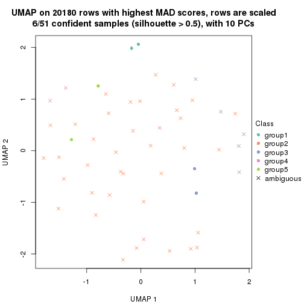
dimension_reduction(res, k = 6, method = "UMAP")
Following heatmap shows how subgroups are split when increasing k:
collect_classes(res)
Test correlation between subgroups and known annotations. If the known annotation is numeric, one-way ANOVA test is applied, and if the known annotation is discrete, chi-squared contingency table test is applied.
test_to_known_factors(res)
#> n disease.state(p) other(p) k
#> MAD:hclust 50 0.659 0.967 2
#> MAD:hclust 13 0.492 0.420 3
#> MAD:hclust 4 1.000 NA 4
#> MAD:hclust 6 0.472 0.301 5
#> MAD:hclust 8 0.513 0.449 6
If matrix rows can be associated to genes, consider to use GO_Enrichment(res,
...) to perform function enrichment for the signature genes.
The object with results only for a single top-value method and a single partition method can be extracted as:
res = res_list["MAD", "kmeans"]
# you can also extract it by
# res = res_list["MAD:kmeans"]
A summary of res and all the functions that can be applied to it:
res
#> A 'ConsensusPartition' object with k = 2, 3, 4, 5, 6.
#> On a matrix with 20180 rows and 51 columns.
#> Top rows (1000, 2000, 3000, 4000, 5000) are extracted by 'MAD' method.
#> Subgroups are detected by 'kmeans' method.
#> Performed in total 1250 partitions by row resampling.
#> Best k for subgroups seems to be 2.
#>
#> Following methods can be applied to this 'ConsensusPartition' object:
#> [1] "cola_report" "collect_classes" "collect_plots"
#> [4] "collect_stats" "colnames" "compare_signatures"
#> [7] "consensus_heatmap" "dimension_reduction" "functional_enrichment"
#> [10] "get_anno_col" "get_anno" "get_classes"
#> [13] "get_consensus" "get_matrix" "get_membership"
#> [16] "get_param" "get_signatures" "get_stats"
#> [19] "is_best_k" "is_stable_k" "membership_heatmap"
#> [22] "ncol" "nrow" "plot_ecdf"
#> [25] "rownames" "select_partition_number" "show"
#> [28] "suggest_best_k" "test_to_known_factors"
collect_plots() function collects all the plots made from res for all k (number of partitions)
into one single page to provide an easy and fast comparison between different k.
collect_plots(res)

The plots are:
k and the heatmap of
predicted classes for each k.k.k.k.All the plots in panels can be made by individual functions and they are plotted later in this section.
select_partition_number() produces several plots showing different
statistics for choosing “optimized” k. There are following statistics:
k;k, the area increased is defined as \(A_k - A_{k-1}\).The detailed explanations of these statistics can be found in the cola vignette.
Generally speaking, lower PAC score, higher mean silhouette score or higher
concordance corresponds to better partition. Rand index and Jaccard index
measure how similar the current partition is compared to partition with k-1.
If they are too similar, we won't accept k is better than k-1.
select_partition_number(res)
The numeric values for all these statistics can be obtained by get_stats().
get_stats(res)
#> k 1-PAC mean_silhouette concordance area_increased Rand Jaccard
#> 2 2 0.0496 0.385 0.703 0.4369 0.506 0.506
#> 3 3 0.0727 0.224 0.547 0.3420 0.636 0.430
#> 4 4 0.1445 0.262 0.569 0.1220 0.649 0.344
#> 5 5 0.2194 0.267 0.509 0.0692 0.703 0.339
#> 6 6 0.2775 0.264 0.516 0.0516 0.748 0.338
suggest_best_k() suggests the best \(k\) based on these statistics. The rules are as follows:
NA.suggest_best_k(res)
#> [1] 2
Following shows the table of the partitions (You need to click the show/hide
code output link to see it). The membership matrix (columns with name p*)
is inferred by
clue::cl_consensus()
function with the SE method. Basically the value in the membership matrix
represents the probability to belong to a certain group. The finall class
label for an item is determined with the group with highest probability it
belongs to.
In get_classes() function, the entropy is calculated from the membership
matrix and the silhouette score is calculated from the consensus matrix.
cbind(get_classes(res, k = 2), get_membership(res, k = 2))
#> class entropy silhouette p1 p2
#> GSM115459 1 0.9996 0.494115 0.512 0.488
#> GSM115460 2 0.6712 0.548368 0.176 0.824
#> GSM115461 2 0.6712 0.548368 0.176 0.824
#> GSM115462 2 0.9286 0.450162 0.344 0.656
#> GSM115463 1 0.9608 0.592044 0.616 0.384
#> GSM115464 2 0.9933 -0.228524 0.452 0.548
#> GSM115465 2 0.8499 0.500193 0.276 0.724
#> GSM115466 2 0.5629 0.570042 0.132 0.868
#> GSM115467 2 0.9896 -0.376448 0.440 0.560
#> GSM115468 1 1.0000 0.445881 0.504 0.496
#> GSM115469 2 0.3879 0.556721 0.076 0.924
#> GSM115470 2 0.8909 0.468624 0.308 0.692
#> GSM115471 2 0.2603 0.569091 0.044 0.956
#> GSM115472 1 0.9358 0.610652 0.648 0.352
#> GSM115473 1 0.9922 0.180649 0.552 0.448
#> GSM115474 2 0.9815 -0.307147 0.420 0.580
#> GSM115475 1 1.0000 -0.178782 0.504 0.496
#> GSM115476 1 0.7950 0.609562 0.760 0.240
#> GSM115477 2 0.8861 0.475056 0.304 0.696
#> GSM115478 2 0.3584 0.550764 0.068 0.932
#> GSM115479 1 0.5737 0.557470 0.864 0.136
#> GSM115480 2 0.3733 0.548544 0.072 0.928
#> GSM115481 2 0.9944 0.162736 0.456 0.544
#> GSM115482 1 0.6438 0.549762 0.836 0.164
#> GSM115483 2 0.9608 0.372198 0.384 0.616
#> GSM115484 2 0.9044 0.000893 0.320 0.680
#> GSM115485 2 0.7950 0.524227 0.240 0.760
#> GSM115486 2 0.8016 0.480662 0.244 0.756
#> GSM115487 1 0.9732 0.162168 0.596 0.404
#> GSM115488 2 0.1414 0.570489 0.020 0.980
#> GSM115489 1 0.9552 0.601190 0.624 0.376
#> GSM115490 2 0.9815 0.351109 0.420 0.580
#> GSM115491 2 0.9661 -0.297310 0.392 0.608
#> GSM115492 2 0.6801 0.548187 0.180 0.820
#> GSM115493 1 0.9866 0.537616 0.568 0.432
#> GSM115494 1 0.8555 0.569819 0.720 0.280
#> GSM115495 2 0.2778 0.558239 0.048 0.952
#> GSM115496 2 0.9993 -0.469927 0.484 0.516
#> GSM115497 1 0.8555 0.409991 0.720 0.280
#> GSM115498 2 0.9393 -0.192305 0.356 0.644
#> GSM115499 1 0.9933 0.550250 0.548 0.452
#> GSM115500 1 0.6973 0.572762 0.812 0.188
#> GSM115501 1 0.9491 0.594127 0.632 0.368
#> GSM115502 1 0.9963 0.509601 0.536 0.464
#> GSM115503 2 0.4562 0.558217 0.096 0.904
#> GSM115504 2 0.7139 0.550525 0.196 0.804
#> GSM115505 2 0.0672 0.576101 0.008 0.992
#> GSM115506 1 0.5629 0.524595 0.868 0.132
#> GSM115507 2 0.3879 0.554247 0.076 0.924
#> GSM115509 1 0.9944 0.404357 0.544 0.456
#> GSM115508 1 0.9358 0.602028 0.648 0.352
cbind(get_classes(res, k = 3), get_membership(res, k = 3))
#> class entropy silhouette p1 p2 p3
#> GSM115459 2 0.957 -0.17679 0.196 0.424 0.380
#> GSM115460 2 0.633 0.22802 0.012 0.656 0.332
#> GSM115461 2 0.633 0.22802 0.012 0.656 0.332
#> GSM115462 3 0.834 -0.05783 0.080 0.444 0.476
#> GSM115463 3 0.997 0.00432 0.340 0.300 0.360
#> GSM115464 2 0.929 -0.10648 0.164 0.464 0.372
#> GSM115465 2 0.680 0.07162 0.012 0.528 0.460
#> GSM115466 2 0.509 0.43762 0.040 0.824 0.136
#> GSM115467 2 0.667 0.29279 0.264 0.696 0.040
#> GSM115468 2 0.895 -0.09378 0.396 0.476 0.128
#> GSM115469 2 0.290 0.48966 0.016 0.920 0.064
#> GSM115470 2 0.879 0.03682 0.112 0.460 0.428
#> GSM115471 2 0.175 0.48580 0.000 0.952 0.048
#> GSM115472 3 0.973 0.03890 0.316 0.244 0.440
#> GSM115473 3 0.550 0.41871 0.048 0.148 0.804
#> GSM115474 3 0.903 0.27760 0.140 0.368 0.492
#> GSM115475 3 0.547 0.40162 0.032 0.176 0.792
#> GSM115476 1 0.871 0.38686 0.556 0.132 0.312
#> GSM115477 2 0.758 0.01518 0.040 0.496 0.464
#> GSM115478 2 0.399 0.47526 0.124 0.864 0.012
#> GSM115479 1 0.610 0.57441 0.768 0.056 0.176
#> GSM115480 2 0.361 0.48726 0.096 0.888 0.016
#> GSM115481 3 0.605 0.41525 0.040 0.204 0.756
#> GSM115482 1 0.857 0.47291 0.576 0.128 0.296
#> GSM115483 3 0.907 -0.03780 0.136 0.428 0.436
#> GSM115484 2 0.578 0.39877 0.200 0.768 0.032
#> GSM115485 3 0.642 0.25666 0.008 0.376 0.616
#> GSM115486 3 0.771 0.32259 0.056 0.368 0.576
#> GSM115487 3 0.543 0.38948 0.064 0.120 0.816
#> GSM115488 2 0.140 0.49040 0.004 0.968 0.028
#> GSM115489 3 0.989 0.05621 0.328 0.272 0.400
#> GSM115490 3 0.898 -0.02966 0.128 0.424 0.448
#> GSM115491 2 0.676 0.31606 0.224 0.716 0.060
#> GSM115492 2 0.640 0.10556 0.004 0.580 0.416
#> GSM115493 2 0.980 -0.19038 0.360 0.400 0.240
#> GSM115494 1 0.643 0.55528 0.764 0.140 0.096
#> GSM115495 2 0.210 0.49457 0.052 0.944 0.004
#> GSM115496 2 0.853 0.06387 0.320 0.564 0.116
#> GSM115497 3 0.640 0.18476 0.200 0.056 0.744
#> GSM115498 2 0.804 -0.10502 0.064 0.508 0.428
#> GSM115499 3 0.992 0.08976 0.272 0.360 0.368
#> GSM115500 3 0.825 -0.06618 0.312 0.100 0.588
#> GSM115501 1 0.989 0.06439 0.396 0.336 0.268
#> GSM115502 2 0.989 -0.24628 0.340 0.392 0.268
#> GSM115503 2 0.722 0.36667 0.112 0.712 0.176
#> GSM115504 2 0.624 0.07643 0.000 0.560 0.440
#> GSM115505 2 0.240 0.48270 0.004 0.932 0.064
#> GSM115506 1 0.730 0.56342 0.688 0.084 0.228
#> GSM115507 2 0.406 0.47946 0.128 0.860 0.012
#> GSM115509 3 0.859 0.33264 0.164 0.236 0.600
#> GSM115508 3 0.927 0.22963 0.232 0.240 0.528
cbind(get_classes(res, k = 4), get_membership(res, k = 4))
#> class entropy silhouette p1 p2 p3 p4
#> GSM115459 3 0.719 0.3490 0.056 0.380 0.524 0.040
#> GSM115460 4 0.593 0.3312 0.012 0.408 0.020 0.560
#> GSM115461 4 0.593 0.3312 0.012 0.408 0.020 0.560
#> GSM115462 4 0.545 0.4532 0.008 0.184 0.068 0.740
#> GSM115463 2 0.983 -0.2484 0.252 0.340 0.200 0.208
#> GSM115464 2 0.919 -0.1953 0.092 0.412 0.224 0.272
#> GSM115465 4 0.555 0.5094 0.020 0.224 0.036 0.720
#> GSM115466 2 0.633 -0.0104 0.024 0.540 0.024 0.412
#> GSM115467 2 0.282 0.4714 0.068 0.904 0.020 0.008
#> GSM115468 2 0.758 0.1879 0.152 0.608 0.192 0.048
#> GSM115469 2 0.426 0.4389 0.000 0.812 0.048 0.140
#> GSM115470 4 0.740 0.4128 0.052 0.148 0.168 0.632
#> GSM115471 2 0.419 0.3649 0.004 0.752 0.000 0.244
#> GSM115472 2 0.998 -0.3274 0.240 0.276 0.224 0.260
#> GSM115473 4 0.787 -0.2721 0.048 0.092 0.424 0.436
#> GSM115474 3 0.952 0.3476 0.108 0.300 0.324 0.268
#> GSM115475 4 0.650 0.2541 0.008 0.108 0.236 0.648
#> GSM115476 1 0.840 0.1642 0.472 0.120 0.336 0.072
#> GSM115477 4 0.453 0.5145 0.004 0.196 0.024 0.776
#> GSM115478 2 0.452 0.4638 0.040 0.832 0.044 0.084
#> GSM115479 1 0.408 0.5741 0.856 0.064 0.032 0.048
#> GSM115480 2 0.478 0.4602 0.020 0.812 0.092 0.076
#> GSM115481 4 0.718 0.1596 0.028 0.104 0.268 0.600
#> GSM115482 1 0.969 0.4156 0.336 0.176 0.308 0.180
#> GSM115483 4 0.910 0.2048 0.104 0.240 0.204 0.452
#> GSM115484 2 0.330 0.4779 0.036 0.892 0.048 0.024
#> GSM115485 4 0.603 0.4023 0.000 0.216 0.108 0.676
#> GSM115486 3 0.796 0.3277 0.004 0.268 0.416 0.312
#> GSM115487 4 0.755 -0.0669 0.068 0.060 0.324 0.548
#> GSM115488 2 0.358 0.4210 0.000 0.816 0.004 0.180
#> GSM115489 2 0.994 -0.3432 0.256 0.292 0.252 0.200
#> GSM115490 4 0.889 0.2058 0.108 0.196 0.204 0.492
#> GSM115491 2 0.368 0.4563 0.080 0.868 0.016 0.036
#> GSM115492 4 0.610 0.4386 0.012 0.300 0.048 0.640
#> GSM115493 2 0.849 0.1550 0.180 0.532 0.084 0.204
#> GSM115494 1 0.401 0.5579 0.844 0.112 0.020 0.024
#> GSM115495 2 0.233 0.4808 0.000 0.916 0.012 0.072
#> GSM115496 2 0.629 0.3628 0.176 0.708 0.080 0.036
#> GSM115497 3 0.508 0.1186 0.024 0.024 0.760 0.192
#> GSM115498 2 0.865 -0.1022 0.060 0.476 0.240 0.224
#> GSM115499 2 0.970 -0.2673 0.192 0.372 0.248 0.188
#> GSM115500 3 0.864 0.3362 0.152 0.116 0.528 0.204
#> GSM115501 2 0.915 -0.0269 0.248 0.440 0.104 0.208
#> GSM115502 3 0.902 0.1493 0.252 0.340 0.348 0.060
#> GSM115503 2 0.823 0.2048 0.036 0.488 0.184 0.292
#> GSM115504 4 0.562 0.4698 0.000 0.248 0.064 0.688
#> GSM115505 2 0.483 0.3086 0.000 0.704 0.016 0.280
#> GSM115506 1 0.834 0.5594 0.564 0.184 0.136 0.116
#> GSM115507 2 0.390 0.4630 0.048 0.864 0.028 0.060
#> GSM115509 3 0.814 0.4465 0.048 0.148 0.516 0.288
#> GSM115508 3 0.920 0.4536 0.120 0.244 0.444 0.192
cbind(get_classes(res, k = 5), get_membership(res, k = 5))
#> class entropy silhouette p1 p2 p3 p4 p5
#> GSM115459 1 0.733 0.1409 0.412 0.228 0.332 0.004 0.024
#> GSM115460 1 0.610 -0.2265 0.476 0.056 0.012 0.444 0.012
#> GSM115461 1 0.610 -0.2265 0.476 0.056 0.012 0.444 0.012
#> GSM115462 4 0.622 0.3019 0.376 0.028 0.048 0.536 0.012
#> GSM115463 1 0.228 0.4442 0.912 0.028 0.000 0.004 0.056
#> GSM115464 1 0.646 0.3462 0.648 0.188 0.052 0.096 0.016
#> GSM115465 4 0.660 0.3083 0.384 0.016 0.068 0.504 0.028
#> GSM115466 4 0.754 -0.0734 0.348 0.224 0.016 0.392 0.020
#> GSM115467 2 0.418 0.6219 0.248 0.732 0.008 0.004 0.008
#> GSM115468 2 0.586 0.2887 0.168 0.692 0.096 0.012 0.032
#> GSM115469 2 0.798 0.5887 0.276 0.476 0.076 0.144 0.028
#> GSM115470 4 0.760 0.3467 0.144 0.060 0.188 0.564 0.044
#> GSM115471 2 0.732 0.3794 0.312 0.376 0.016 0.292 0.004
#> GSM115472 1 0.229 0.4134 0.900 0.000 0.000 0.084 0.016
#> GSM115473 1 0.754 0.1381 0.444 0.032 0.348 0.152 0.024
#> GSM115474 1 0.477 0.4325 0.792 0.092 0.040 0.060 0.016
#> GSM115475 4 0.765 0.1975 0.316 0.008 0.196 0.432 0.048
#> GSM115476 1 0.681 -0.1431 0.588 0.036 0.108 0.020 0.248
#> GSM115477 4 0.540 0.3937 0.300 0.024 0.032 0.640 0.004
#> GSM115478 2 0.667 0.6056 0.128 0.664 0.056 0.108 0.044
#> GSM115479 5 0.473 0.5385 0.196 0.028 0.004 0.028 0.744
#> GSM115480 2 0.603 0.5991 0.116 0.708 0.048 0.100 0.028
#> GSM115481 4 0.809 0.1196 0.332 0.016 0.208 0.380 0.064
#> GSM115482 3 0.953 -0.1736 0.276 0.136 0.316 0.140 0.132
#> GSM115483 4 0.764 0.1459 0.036 0.140 0.128 0.576 0.120
#> GSM115484 2 0.570 0.6112 0.260 0.656 0.020 0.048 0.016
#> GSM115485 1 0.731 -0.2439 0.436 0.024 0.088 0.404 0.048
#> GSM115486 1 0.762 0.2976 0.524 0.056 0.272 0.104 0.044
#> GSM115487 1 0.778 0.0311 0.484 0.016 0.184 0.252 0.064
#> GSM115488 2 0.751 0.5355 0.276 0.448 0.028 0.236 0.012
#> GSM115489 1 0.289 0.4461 0.884 0.028 0.016 0.000 0.072
#> GSM115490 4 0.711 0.1274 0.020 0.120 0.120 0.616 0.124
#> GSM115491 2 0.512 0.5648 0.332 0.628 0.020 0.016 0.004
#> GSM115492 1 0.656 -0.2606 0.464 0.012 0.048 0.432 0.044
#> GSM115493 1 0.726 0.1166 0.524 0.308 0.044 0.092 0.032
#> GSM115494 5 0.479 0.5388 0.184 0.072 0.004 0.004 0.736
#> GSM115495 2 0.698 0.6328 0.252 0.564 0.044 0.128 0.012
#> GSM115496 2 0.583 0.3805 0.428 0.512 0.028 0.016 0.016
#> GSM115497 3 0.591 0.1456 0.132 0.052 0.708 0.092 0.016
#> GSM115498 1 0.756 0.1997 0.576 0.192 0.100 0.088 0.044
#> GSM115499 1 0.218 0.4452 0.908 0.080 0.000 0.008 0.004
#> GSM115500 1 0.755 -0.0292 0.468 0.036 0.356 0.068 0.072
#> GSM115501 1 0.574 0.3357 0.724 0.112 0.016 0.096 0.052
#> GSM115502 1 0.643 0.2942 0.672 0.168 0.060 0.048 0.052
#> GSM115503 2 0.756 0.1193 0.040 0.456 0.188 0.304 0.012
#> GSM115504 4 0.751 0.2031 0.388 0.048 0.072 0.444 0.048
#> GSM115505 2 0.827 0.4027 0.272 0.348 0.044 0.304 0.032
#> GSM115506 5 0.942 0.1255 0.172 0.232 0.136 0.104 0.356
#> GSM115507 2 0.409 0.6138 0.160 0.796 0.016 0.020 0.008
#> GSM115509 1 0.738 0.1358 0.468 0.044 0.372 0.072 0.044
#> GSM115508 1 0.539 0.3649 0.668 0.012 0.252 0.004 0.064
cbind(get_classes(res, k = 6), get_membership(res, k = 6))
#> class entropy silhouette p1 p2 p3 p4 p5 p6
#> GSM115459 1 0.924 0.19884 0.312 0.152 0.164 0.128 0.208 0.036
#> GSM115460 5 0.122 0.46325 0.012 0.016 0.000 0.004 0.960 0.008
#> GSM115461 5 0.122 0.46325 0.012 0.016 0.000 0.004 0.960 0.008
#> GSM115462 5 0.714 0.06615 0.208 0.020 0.192 0.056 0.512 0.012
#> GSM115463 1 0.478 0.38788 0.504 0.012 0.004 0.000 0.460 0.020
#> GSM115464 1 0.693 0.29499 0.476 0.136 0.072 0.016 0.300 0.000
#> GSM115465 5 0.371 0.35200 0.024 0.004 0.140 0.008 0.808 0.016
#> GSM115466 5 0.334 0.34069 0.016 0.112 0.004 0.012 0.840 0.016
#> GSM115467 2 0.495 0.56168 0.020 0.660 0.000 0.040 0.268 0.012
#> GSM115468 2 0.662 0.26158 0.216 0.604 0.064 0.028 0.048 0.040
#> GSM115469 2 0.746 0.37344 0.044 0.388 0.040 0.148 0.368 0.012
#> GSM115470 5 0.692 0.07011 0.104 0.064 0.084 0.052 0.632 0.064
#> GSM115471 5 0.458 -0.07063 0.012 0.296 0.000 0.040 0.652 0.000
#> GSM115472 1 0.561 0.41169 0.512 0.012 0.064 0.000 0.396 0.016
#> GSM115473 3 0.836 0.25050 0.256 0.028 0.324 0.144 0.232 0.016
#> GSM115474 1 0.652 0.44089 0.544 0.060 0.080 0.012 0.292 0.012
#> GSM115475 3 0.470 0.44795 0.076 0.000 0.676 0.008 0.240 0.000
#> GSM115476 1 0.490 0.17596 0.732 0.008 0.012 0.024 0.064 0.160
#> GSM115477 5 0.456 0.18315 0.024 0.000 0.280 0.016 0.672 0.008
#> GSM115478 2 0.659 0.51470 0.020 0.580 0.012 0.112 0.224 0.052
#> GSM115479 6 0.430 0.81043 0.124 0.004 0.000 0.028 0.072 0.772
#> GSM115480 2 0.640 0.52688 0.044 0.600 0.012 0.096 0.224 0.024
#> GSM115481 3 0.473 0.47988 0.096 0.000 0.692 0.004 0.204 0.004
#> GSM115482 1 0.907 -0.28426 0.304 0.184 0.136 0.256 0.040 0.080
#> GSM115483 4 0.609 0.51482 0.008 0.056 0.108 0.592 0.236 0.000
#> GSM115484 2 0.572 0.53472 0.036 0.596 0.012 0.040 0.304 0.012
#> GSM115485 5 0.561 0.13906 0.096 0.004 0.284 0.024 0.592 0.000
#> GSM115486 5 0.831 -0.26530 0.256 0.052 0.268 0.100 0.316 0.008
#> GSM115487 3 0.793 0.28272 0.264 0.012 0.328 0.088 0.288 0.020
#> GSM115488 5 0.613 -0.36141 0.016 0.388 0.012 0.084 0.488 0.012
#> GSM115489 1 0.484 0.45524 0.576 0.008 0.012 0.000 0.380 0.024
#> GSM115490 4 0.603 0.50511 0.008 0.040 0.124 0.588 0.240 0.000
#> GSM115491 2 0.514 0.52910 0.060 0.612 0.016 0.004 0.308 0.000
#> GSM115492 5 0.369 0.39337 0.016 0.000 0.192 0.020 0.772 0.000
#> GSM115493 2 0.833 -0.00895 0.248 0.328 0.108 0.020 0.264 0.032
#> GSM115494 6 0.432 0.81347 0.120 0.056 0.004 0.004 0.036 0.780
#> GSM115495 2 0.615 0.46823 0.008 0.496 0.008 0.100 0.368 0.020
#> GSM115496 2 0.666 0.40667 0.212 0.488 0.024 0.012 0.260 0.004
#> GSM115497 3 0.718 0.04369 0.132 0.040 0.500 0.252 0.000 0.076
#> GSM115498 5 0.759 -0.10865 0.232 0.140 0.284 0.004 0.340 0.000
#> GSM115499 1 0.507 0.39837 0.520 0.044 0.016 0.000 0.420 0.000
#> GSM115500 1 0.839 -0.00710 0.412 0.020 0.176 0.192 0.148 0.052
#> GSM115501 5 0.653 -0.30446 0.384 0.096 0.016 0.016 0.464 0.024
#> GSM115502 1 0.549 0.43377 0.664 0.156 0.024 0.000 0.144 0.012
#> GSM115503 2 0.791 0.02046 0.044 0.412 0.180 0.068 0.280 0.016
#> GSM115504 5 0.532 0.30709 0.068 0.024 0.220 0.020 0.668 0.000
#> GSM115505 5 0.564 -0.03103 0.016 0.244 0.012 0.068 0.640 0.020
#> GSM115506 4 0.880 -0.22424 0.264 0.168 0.056 0.300 0.024 0.188
#> GSM115507 2 0.400 0.55588 0.012 0.756 0.004 0.032 0.196 0.000
#> GSM115509 1 0.863 -0.01143 0.412 0.056 0.192 0.144 0.152 0.044
#> GSM115508 1 0.783 0.26085 0.372 0.012 0.112 0.116 0.352 0.036
Heatmaps for the consensus matrix. It visualizes the probability of two samples to be in a same group.
consensus_heatmap(res, k = 2)
consensus_heatmap(res, k = 3)
consensus_heatmap(res, k = 4)
consensus_heatmap(res, k = 5)
consensus_heatmap(res, k = 6)
Heatmaps for the membership of samples in all partitions to see how consistent they are:
membership_heatmap(res, k = 2)
membership_heatmap(res, k = 3)
membership_heatmap(res, k = 4)
membership_heatmap(res, k = 5)
membership_heatmap(res, k = 6)
As soon as we have had the classes for columns, we can look for signatures which are significantly different between classes which can be candidate marks for certain classes. Following are the heatmaps for signatures.
Signature heatmaps where rows are scaled:
get_signatures(res, k = 2)
get_signatures(res, k = 3)

get_signatures(res, k = 4)
get_signatures(res, k = 5)
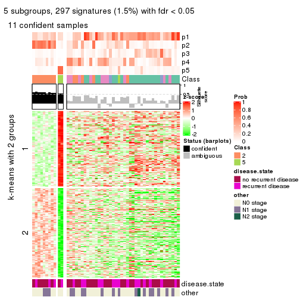
get_signatures(res, k = 6)
Signature heatmaps where rows are not scaled:
get_signatures(res, k = 2, scale_rows = FALSE)
get_signatures(res, k = 3, scale_rows = FALSE)

get_signatures(res, k = 4, scale_rows = FALSE)
get_signatures(res, k = 5, scale_rows = FALSE)
get_signatures(res, k = 6, scale_rows = FALSE)
Compare the overlap of signatures from different k:
compare_signatures(res)
get_signature() returns a data frame invisibly. TO get the list of signatures, the function
call should be assigned to a variable explicitly. In following code, if plot argument is set
to FALSE, no heatmap is plotted while only the differential analysis is performed.
# code only for demonstration
tb = get_signature(res, k = ..., plot = FALSE)
An example of the output of tb is:
#> which_row fdr mean_1 mean_2 scaled_mean_1 scaled_mean_2 km
#> 1 38 0.042760348 8.373488 9.131774 -0.5533452 0.5164555 1
#> 2 40 0.018707592 7.106213 8.469186 -0.6173731 0.5762149 1
#> 3 55 0.019134737 10.221463 11.207825 -0.6159697 0.5749050 1
#> 4 59 0.006059896 5.921854 7.869574 -0.6899429 0.6439467 1
#> 5 60 0.018055526 8.928898 10.211722 -0.6204761 0.5791110 1
#> 6 98 0.009384629 15.714769 14.887706 0.6635654 -0.6193277 2
...
The columns in tb are:
which_row: row indices corresponding to the input matrix.fdr: FDR for the differential test. mean_x: The mean value in group x.scaled_mean_x: The mean value in group x after rows are scaled.km: Row groups if k-means clustering is applied to rows.UMAP plot which shows how samples are separated.
dimension_reduction(res, k = 2, method = "UMAP")
dimension_reduction(res, k = 3, method = "UMAP")
dimension_reduction(res, k = 4, method = "UMAP")
dimension_reduction(res, k = 5, method = "UMAP")
dimension_reduction(res, k = 6, method = "UMAP")
Following heatmap shows how subgroups are split when increasing k:
collect_classes(res)
Test correlation between subgroups and known annotations. If the known annotation is numeric, one-way ANOVA test is applied, and if the known annotation is discrete, chi-squared contingency table test is applied.
test_to_known_factors(res)
#> n disease.state(p) other(p) k
#> MAD:kmeans 30 0.478 0.496 2
#> MAD:kmeans 3 NA NA 3
#> MAD:kmeans 5 0.576 1.000 4
#> MAD:kmeans 11 1.000 0.936 5
#> MAD:kmeans 10 0.530 0.530 6
If matrix rows can be associated to genes, consider to use GO_Enrichment(res,
...) to perform function enrichment for the signature genes.
The object with results only for a single top-value method and a single partition method can be extracted as:
res = res_list["MAD", "skmeans"]
# you can also extract it by
# res = res_list["MAD:skmeans"]
A summary of res and all the functions that can be applied to it:
res
#> A 'ConsensusPartition' object with k = 2, 3, 4, 5, 6.
#> On a matrix with 20180 rows and 51 columns.
#> Top rows (1000, 2000, 3000, 4000, 5000) are extracted by 'MAD' method.
#> Subgroups are detected by 'skmeans' method.
#> Performed in total 1250 partitions by row resampling.
#> Best k for subgroups seems to be 2.
#>
#> Following methods can be applied to this 'ConsensusPartition' object:
#> [1] "cola_report" "collect_classes" "collect_plots"
#> [4] "collect_stats" "colnames" "compare_signatures"
#> [7] "consensus_heatmap" "dimension_reduction" "functional_enrichment"
#> [10] "get_anno_col" "get_anno" "get_classes"
#> [13] "get_consensus" "get_matrix" "get_membership"
#> [16] "get_param" "get_signatures" "get_stats"
#> [19] "is_best_k" "is_stable_k" "membership_heatmap"
#> [22] "ncol" "nrow" "plot_ecdf"
#> [25] "rownames" "select_partition_number" "show"
#> [28] "suggest_best_k" "test_to_known_factors"
collect_plots() function collects all the plots made from res for all k (number of partitions)
into one single page to provide an easy and fast comparison between different k.
collect_plots(res)
The plots are:
k and the heatmap of
predicted classes for each k.k.k.k.All the plots in panels can be made by individual functions and they are plotted later in this section.
select_partition_number() produces several plots showing different
statistics for choosing “optimized” k. There are following statistics:
k;k, the area increased is defined as \(A_k - A_{k-1}\).The detailed explanations of these statistics can be found in the cola vignette.
Generally speaking, lower PAC score, higher mean silhouette score or higher
concordance corresponds to better partition. Rand index and Jaccard index
measure how similar the current partition is compared to partition with k-1.
If they are too similar, we won't accept k is better than k-1.
select_partition_number(res)
The numeric values for all these statistics can be obtained by get_stats().
get_stats(res)
#> k 1-PAC mean_silhouette concordance area_increased Rand Jaccard
#> 2 2 0.00887 0.452 0.712 0.5079 0.490 0.490
#> 3 3 0.03280 0.345 0.569 0.3255 0.666 0.419
#> 4 4 0.09131 0.281 0.486 0.1234 0.820 0.518
#> 5 5 0.20656 0.177 0.458 0.0655 0.929 0.736
#> 6 6 0.32713 0.169 0.438 0.0403 0.885 0.555
suggest_best_k() suggests the best \(k\) based on these statistics. The rules are as follows:
NA.suggest_best_k(res)
#> [1] 2
Following shows the table of the partitions (You need to click the show/hide
code output link to see it). The membership matrix (columns with name p*)
is inferred by
clue::cl_consensus()
function with the SE method. Basically the value in the membership matrix
represents the probability to belong to a certain group. The finall class
label for an item is determined with the group with highest probability it
belongs to.
In get_classes() function, the entropy is calculated from the membership
matrix and the silhouette score is calculated from the consensus matrix.
cbind(get_classes(res, k = 2), get_membership(res, k = 2))
#> class entropy silhouette p1 p2
#> GSM115459 1 0.983 0.4932 0.576 0.424
#> GSM115460 2 0.985 0.4751 0.428 0.572
#> GSM115461 2 0.985 0.4751 0.428 0.572
#> GSM115462 1 0.975 -0.1312 0.592 0.408
#> GSM115463 1 0.260 0.6127 0.956 0.044
#> GSM115464 2 0.997 -0.0484 0.468 0.532
#> GSM115465 2 0.975 0.4965 0.408 0.592
#> GSM115466 2 0.925 0.5062 0.340 0.660
#> GSM115467 2 0.990 -0.2868 0.440 0.560
#> GSM115468 1 1.000 0.3863 0.508 0.492
#> GSM115469 2 0.388 0.5506 0.076 0.924
#> GSM115470 2 0.946 0.5379 0.364 0.636
#> GSM115471 2 0.416 0.5883 0.084 0.916
#> GSM115472 1 0.595 0.6050 0.856 0.144
#> GSM115473 1 0.886 0.4138 0.696 0.304
#> GSM115474 1 0.969 0.4381 0.604 0.396
#> GSM115475 1 0.958 -0.0194 0.620 0.380
#> GSM115476 1 0.833 0.6215 0.736 0.264
#> GSM115477 2 0.955 0.5256 0.376 0.624
#> GSM115478 2 0.552 0.5269 0.128 0.872
#> GSM115479 1 0.416 0.6314 0.916 0.084
#> GSM115480 2 0.595 0.5098 0.144 0.856
#> GSM115481 1 1.000 -0.0865 0.512 0.488
#> GSM115482 1 0.697 0.6323 0.812 0.188
#> GSM115483 2 0.767 0.5873 0.224 0.776
#> GSM115484 2 0.929 0.1766 0.344 0.656
#> GSM115485 2 0.963 0.5038 0.388 0.612
#> GSM115486 2 0.904 0.4446 0.320 0.680
#> GSM115487 1 0.891 0.4202 0.692 0.308
#> GSM115488 2 0.163 0.5678 0.024 0.976
#> GSM115489 1 0.680 0.6434 0.820 0.180
#> GSM115490 2 0.936 0.5352 0.352 0.648
#> GSM115491 2 0.983 -0.1648 0.424 0.576
#> GSM115492 2 0.900 0.5589 0.316 0.684
#> GSM115493 1 0.904 0.5158 0.680 0.320
#> GSM115494 1 0.767 0.6280 0.776 0.224
#> GSM115495 2 0.402 0.5620 0.080 0.920
#> GSM115496 1 0.980 0.4872 0.584 0.416
#> GSM115497 1 0.900 0.5214 0.684 0.316
#> GSM115498 1 0.963 0.5236 0.612 0.388
#> GSM115499 1 0.855 0.6245 0.720 0.280
#> GSM115500 1 0.722 0.6391 0.800 0.200
#> GSM115501 1 0.808 0.6166 0.752 0.248
#> GSM115502 1 0.949 0.5446 0.632 0.368
#> GSM115503 2 0.844 0.5329 0.272 0.728
#> GSM115504 2 0.876 0.5692 0.296 0.704
#> GSM115505 2 0.443 0.5979 0.092 0.908
#> GSM115506 1 0.738 0.5837 0.792 0.208
#> GSM115507 2 0.814 0.4660 0.252 0.748
#> GSM115509 1 0.992 0.2497 0.552 0.448
#> GSM115508 1 0.595 0.6415 0.856 0.144
cbind(get_classes(res, k = 3), get_membership(res, k = 3))
#> class entropy silhouette p1 p2 p3
#> GSM115459 1 0.990 0.14398 0.376 0.360 0.264
#> GSM115460 3 0.859 0.34243 0.112 0.344 0.544
#> GSM115461 3 0.860 0.33827 0.112 0.348 0.540
#> GSM115462 3 0.927 0.25920 0.280 0.200 0.520
#> GSM115463 1 0.598 0.49690 0.744 0.028 0.228
#> GSM115464 1 0.981 0.10153 0.380 0.380 0.240
#> GSM115465 3 0.873 0.40361 0.144 0.288 0.568
#> GSM115466 2 0.969 0.09161 0.272 0.460 0.268
#> GSM115467 2 0.859 0.14523 0.320 0.560 0.120
#> GSM115468 2 0.936 -0.08238 0.400 0.432 0.168
#> GSM115469 2 0.569 0.50904 0.040 0.784 0.176
#> GSM115470 3 0.944 0.32826 0.188 0.344 0.468
#> GSM115471 2 0.563 0.48630 0.044 0.792 0.164
#> GSM115472 1 0.788 0.36933 0.592 0.072 0.336
#> GSM115473 3 0.776 0.12488 0.360 0.060 0.580
#> GSM115474 1 0.958 0.23968 0.432 0.200 0.368
#> GSM115475 3 0.700 0.38068 0.248 0.060 0.692
#> GSM115476 1 0.733 0.54697 0.708 0.156 0.136
#> GSM115477 3 0.917 0.44270 0.192 0.276 0.532
#> GSM115478 2 0.438 0.56281 0.064 0.868 0.068
#> GSM115479 1 0.590 0.53627 0.792 0.076 0.132
#> GSM115480 2 0.766 0.49070 0.144 0.684 0.172
#> GSM115481 3 0.818 0.32906 0.224 0.140 0.636
#> GSM115482 1 0.761 0.49002 0.688 0.148 0.164
#> GSM115483 3 0.949 0.23470 0.184 0.392 0.424
#> GSM115484 2 0.711 0.49806 0.196 0.712 0.092
#> GSM115485 3 0.701 0.45776 0.100 0.176 0.724
#> GSM115486 3 0.942 0.25099 0.216 0.284 0.500
#> GSM115487 3 0.836 0.04474 0.412 0.084 0.504
#> GSM115488 2 0.403 0.54190 0.008 0.856 0.136
#> GSM115489 1 0.609 0.53653 0.780 0.076 0.144
#> GSM115490 3 0.945 0.36476 0.212 0.296 0.492
#> GSM115491 2 0.832 0.35753 0.240 0.620 0.140
#> GSM115492 3 0.859 0.42608 0.144 0.268 0.588
#> GSM115493 1 0.946 0.34449 0.500 0.252 0.248
#> GSM115494 1 0.649 0.54841 0.752 0.172 0.076
#> GSM115495 2 0.468 0.55695 0.040 0.848 0.112
#> GSM115496 1 0.869 0.12486 0.464 0.432 0.104
#> GSM115497 3 0.898 0.08367 0.368 0.136 0.496
#> GSM115498 1 0.995 0.19266 0.384 0.300 0.316
#> GSM115499 1 0.878 0.43720 0.576 0.164 0.260
#> GSM115500 1 0.797 0.42990 0.624 0.096 0.280
#> GSM115501 1 0.901 0.47364 0.560 0.208 0.232
#> GSM115502 1 0.857 0.45488 0.588 0.272 0.140
#> GSM115503 2 0.950 0.19329 0.200 0.468 0.332
#> GSM115504 3 0.775 0.41951 0.092 0.260 0.648
#> GSM115505 2 0.754 0.29601 0.064 0.632 0.304
#> GSM115506 1 0.884 0.37895 0.568 0.164 0.268
#> GSM115507 2 0.762 0.50075 0.156 0.688 0.156
#> GSM115509 3 0.970 0.00175 0.312 0.240 0.448
#> GSM115508 1 0.849 0.38805 0.556 0.108 0.336
cbind(get_classes(res, k = 4), get_membership(res, k = 4))
#> class entropy silhouette p1 p2 p3 p4
#> GSM115459 3 0.868 0.1455 0.180 0.320 0.440 0.060
#> GSM115460 4 0.373 0.4995 0.060 0.068 0.008 0.864
#> GSM115461 4 0.380 0.4992 0.060 0.072 0.008 0.860
#> GSM115462 4 0.917 0.1975 0.220 0.124 0.200 0.456
#> GSM115463 1 0.556 0.4762 0.752 0.036 0.044 0.168
#> GSM115464 3 0.963 0.0844 0.188 0.316 0.340 0.156
#> GSM115465 4 0.664 0.4644 0.112 0.060 0.124 0.704
#> GSM115466 4 0.909 0.1962 0.196 0.240 0.108 0.456
#> GSM115467 2 0.727 0.3676 0.244 0.616 0.092 0.048
#> GSM115468 2 0.902 0.0367 0.240 0.380 0.316 0.064
#> GSM115469 2 0.603 0.3867 0.012 0.696 0.212 0.080
#> GSM115470 4 0.713 0.4335 0.096 0.068 0.176 0.660
#> GSM115471 2 0.687 0.3144 0.044 0.552 0.036 0.368
#> GSM115472 1 0.892 0.2470 0.428 0.108 0.132 0.332
#> GSM115473 3 0.834 0.1907 0.260 0.048 0.504 0.188
#> GSM115474 3 0.931 0.1178 0.300 0.132 0.404 0.164
#> GSM115475 4 0.871 0.1478 0.192 0.060 0.304 0.444
#> GSM115476 1 0.767 0.3827 0.604 0.100 0.220 0.076
#> GSM115477 4 0.774 0.4097 0.132 0.092 0.156 0.620
#> GSM115478 2 0.685 0.4770 0.068 0.680 0.080 0.172
#> GSM115479 1 0.621 0.4759 0.736 0.064 0.088 0.112
#> GSM115480 2 0.714 0.4391 0.096 0.672 0.132 0.100
#> GSM115481 3 0.826 0.1638 0.140 0.060 0.512 0.288
#> GSM115482 1 0.859 0.3657 0.540 0.124 0.176 0.160
#> GSM115483 3 0.966 0.0486 0.128 0.288 0.312 0.272
#> GSM115484 2 0.893 0.2940 0.192 0.500 0.168 0.140
#> GSM115485 4 0.816 0.0795 0.088 0.072 0.400 0.440
#> GSM115486 3 0.768 0.3330 0.084 0.144 0.624 0.148
#> GSM115487 3 0.881 0.1546 0.300 0.064 0.436 0.200
#> GSM115488 2 0.536 0.4774 0.012 0.748 0.056 0.184
#> GSM115489 1 0.736 0.4197 0.648 0.072 0.136 0.144
#> GSM115490 3 0.984 0.0680 0.192 0.212 0.328 0.268
#> GSM115491 2 0.783 0.4162 0.168 0.612 0.116 0.104
#> GSM115492 4 0.810 0.3307 0.128 0.072 0.244 0.556
#> GSM115493 1 0.959 0.1969 0.392 0.248 0.188 0.172
#> GSM115494 1 0.567 0.4511 0.764 0.100 0.100 0.036
#> GSM115495 2 0.581 0.4914 0.028 0.740 0.072 0.160
#> GSM115496 2 0.850 0.1485 0.296 0.496 0.112 0.096
#> GSM115497 3 0.802 0.2783 0.228 0.076 0.572 0.124
#> GSM115498 2 0.979 0.0118 0.256 0.348 0.192 0.204
#> GSM115499 1 0.952 0.1609 0.400 0.152 0.252 0.196
#> GSM115500 1 0.794 0.1735 0.492 0.084 0.360 0.064
#> GSM115501 1 0.809 0.4001 0.580 0.152 0.084 0.184
#> GSM115502 1 0.882 0.2113 0.456 0.196 0.276 0.072
#> GSM115503 2 0.968 0.0502 0.132 0.320 0.272 0.276
#> GSM115504 4 0.851 0.2745 0.072 0.160 0.264 0.504
#> GSM115505 2 0.734 0.1690 0.020 0.464 0.092 0.424
#> GSM115506 1 0.901 0.2813 0.460 0.144 0.124 0.272
#> GSM115507 2 0.766 0.4469 0.128 0.632 0.116 0.124
#> GSM115509 3 0.806 0.2872 0.180 0.164 0.580 0.076
#> GSM115508 1 0.815 0.1529 0.476 0.048 0.348 0.128
cbind(get_classes(res, k = 5), get_membership(res, k = 5))
#> class entropy silhouette p1 p2 p3 p4 p5
#> GSM115459 3 0.876 -0.06517 0.164 0.260 0.364 0.020 0.192
#> GSM115460 4 0.265 0.48723 0.024 0.052 0.008 0.904 0.012
#> GSM115461 4 0.296 0.48609 0.024 0.064 0.008 0.888 0.016
#> GSM115462 4 0.875 0.23010 0.108 0.068 0.188 0.452 0.184
#> GSM115463 1 0.543 0.31469 0.736 0.016 0.044 0.148 0.056
#> GSM115464 5 0.955 0.08119 0.252 0.192 0.212 0.072 0.272
#> GSM115465 4 0.789 0.35979 0.096 0.056 0.140 0.560 0.148
#> GSM115466 4 0.902 0.20238 0.132 0.148 0.072 0.400 0.248
#> GSM115467 2 0.823 0.22411 0.144 0.484 0.052 0.076 0.244
#> GSM115468 2 0.872 -0.01179 0.144 0.356 0.136 0.036 0.328
#> GSM115469 2 0.378 0.40221 0.000 0.836 0.092 0.040 0.032
#> GSM115470 4 0.796 0.37824 0.076 0.076 0.172 0.552 0.124
#> GSM115471 2 0.663 0.36697 0.032 0.564 0.008 0.292 0.104
#> GSM115472 1 0.841 0.12208 0.376 0.048 0.072 0.356 0.148
#> GSM115473 3 0.821 0.17397 0.172 0.036 0.508 0.144 0.140
#> GSM115474 3 0.925 -0.11878 0.208 0.100 0.340 0.088 0.264
#> GSM115475 3 0.815 -0.04493 0.072 0.036 0.388 0.372 0.132
#> GSM115476 1 0.753 0.21873 0.580 0.080 0.184 0.044 0.112
#> GSM115477 4 0.775 0.34145 0.068 0.068 0.148 0.572 0.144
#> GSM115478 2 0.654 0.39639 0.076 0.660 0.016 0.140 0.108
#> GSM115479 1 0.665 0.28535 0.664 0.028 0.084 0.120 0.104
#> GSM115480 2 0.813 0.26582 0.088 0.532 0.088 0.096 0.196
#> GSM115481 3 0.810 0.14368 0.092 0.048 0.524 0.168 0.168
#> GSM115482 1 0.857 0.17454 0.452 0.064 0.144 0.092 0.248
#> GSM115483 3 0.968 0.04138 0.120 0.248 0.288 0.204 0.140
#> GSM115484 2 0.913 0.19661 0.108 0.396 0.116 0.132 0.248
#> GSM115485 3 0.908 0.07352 0.076 0.096 0.356 0.280 0.192
#> GSM115486 3 0.823 0.14324 0.080 0.176 0.528 0.116 0.100
#> GSM115487 3 0.918 0.08629 0.232 0.060 0.368 0.172 0.168
#> GSM115488 2 0.430 0.41688 0.008 0.820 0.060 0.064 0.048
#> GSM115489 1 0.749 0.21126 0.600 0.052 0.128 0.092 0.128
#> GSM115490 3 0.955 0.07787 0.104 0.184 0.344 0.188 0.180
#> GSM115491 2 0.810 0.15461 0.144 0.464 0.032 0.080 0.280
#> GSM115492 4 0.820 0.21222 0.040 0.140 0.268 0.468 0.084
#> GSM115493 1 0.946 -0.03498 0.296 0.152 0.164 0.092 0.296
#> GSM115494 1 0.569 0.29192 0.732 0.068 0.056 0.024 0.120
#> GSM115495 2 0.559 0.42971 0.040 0.740 0.028 0.108 0.084
#> GSM115496 1 0.863 -0.05022 0.340 0.272 0.068 0.040 0.280
#> GSM115497 3 0.800 0.14776 0.148 0.064 0.552 0.100 0.136
#> GSM115498 5 0.981 0.08656 0.228 0.200 0.188 0.120 0.264
#> GSM115499 1 0.947 -0.04163 0.336 0.088 0.192 0.156 0.228
#> GSM115500 1 0.826 0.14548 0.480 0.092 0.260 0.056 0.112
#> GSM115501 1 0.812 0.24166 0.516 0.040 0.104 0.188 0.152
#> GSM115502 1 0.893 -0.04958 0.352 0.164 0.220 0.028 0.236
#> GSM115503 2 0.958 0.00238 0.096 0.316 0.176 0.176 0.236
#> GSM115504 4 0.842 0.14914 0.044 0.104 0.296 0.432 0.124
#> GSM115505 2 0.751 0.12222 0.024 0.464 0.064 0.356 0.092
#> GSM115506 1 0.921 0.12840 0.348 0.096 0.100 0.284 0.172
#> GSM115507 2 0.822 0.28137 0.056 0.436 0.052 0.148 0.308
#> GSM115509 3 0.768 0.11956 0.108 0.084 0.580 0.064 0.164
#> GSM115508 1 0.825 0.02358 0.360 0.016 0.360 0.164 0.100
cbind(get_classes(res, k = 6), get_membership(res, k = 6))
#> class entropy silhouette p1 p2 p3 p4 p5 p6
#> GSM115459 3 0.870 0.161456 0.120 0.208 0.384 0.164 0.020 0.104
#> GSM115460 5 0.130 0.432538 0.012 0.032 0.000 0.004 0.952 0.000
#> GSM115461 5 0.144 0.432475 0.012 0.032 0.004 0.004 0.948 0.000
#> GSM115462 5 0.883 0.063924 0.100 0.040 0.108 0.140 0.380 0.232
#> GSM115463 1 0.671 0.349532 0.624 0.020 0.072 0.056 0.156 0.072
#> GSM115464 4 0.948 0.013407 0.140 0.196 0.172 0.284 0.052 0.156
#> GSM115465 5 0.805 0.192293 0.104 0.016 0.144 0.212 0.460 0.064
#> GSM115466 5 0.938 0.079360 0.144 0.160 0.080 0.116 0.344 0.156
#> GSM115467 2 0.817 0.275203 0.084 0.476 0.088 0.052 0.080 0.220
#> GSM115468 3 0.908 0.002842 0.152 0.276 0.284 0.076 0.040 0.172
#> GSM115469 2 0.482 0.404561 0.028 0.776 0.088 0.052 0.024 0.032
#> GSM115470 5 0.835 0.262715 0.072 0.060 0.108 0.136 0.484 0.140
#> GSM115471 2 0.608 0.339649 0.016 0.584 0.016 0.044 0.292 0.048
#> GSM115472 1 0.874 0.237172 0.360 0.028 0.096 0.132 0.264 0.120
#> GSM115473 3 0.597 0.128850 0.076 0.020 0.692 0.116 0.048 0.048
#> GSM115474 4 0.886 0.008221 0.108 0.068 0.200 0.388 0.060 0.176
#> GSM115475 4 0.862 0.110613 0.128 0.012 0.168 0.376 0.216 0.100
#> GSM115476 1 0.765 0.263542 0.552 0.048 0.144 0.080 0.056 0.120
#> GSM115477 5 0.794 0.232529 0.040 0.040 0.076 0.232 0.472 0.140
#> GSM115478 2 0.530 0.424111 0.012 0.736 0.052 0.028 0.108 0.064
#> GSM115479 1 0.700 0.313872 0.612 0.028 0.092 0.088 0.124 0.056
#> GSM115480 2 0.786 0.267400 0.060 0.496 0.060 0.088 0.060 0.236
#> GSM115481 4 0.767 0.173042 0.052 0.032 0.180 0.532 0.104 0.100
#> GSM115482 1 0.824 0.123181 0.372 0.036 0.108 0.040 0.120 0.324
#> GSM115483 6 0.948 0.162368 0.060 0.232 0.224 0.120 0.124 0.240
#> GSM115484 2 0.864 0.123073 0.128 0.424 0.080 0.072 0.076 0.220
#> GSM115485 4 0.753 0.194109 0.048 0.048 0.108 0.548 0.184 0.064
#> GSM115486 4 0.859 0.015086 0.060 0.160 0.216 0.412 0.048 0.104
#> GSM115487 3 0.844 0.088143 0.200 0.028 0.380 0.236 0.044 0.112
#> GSM115488 2 0.389 0.447003 0.004 0.824 0.012 0.052 0.072 0.036
#> GSM115489 1 0.748 0.234494 0.520 0.004 0.196 0.120 0.084 0.076
#> GSM115490 6 0.981 0.108352 0.088 0.144 0.188 0.172 0.192 0.216
#> GSM115491 2 0.756 0.294230 0.084 0.476 0.032 0.052 0.060 0.296
#> GSM115492 5 0.808 0.117322 0.080 0.080 0.064 0.320 0.412 0.044
#> GSM115493 6 0.873 -0.171465 0.268 0.096 0.076 0.068 0.108 0.384
#> GSM115494 1 0.663 0.292657 0.648 0.048 0.108 0.052 0.044 0.100
#> GSM115495 2 0.444 0.440067 0.028 0.800 0.016 0.028 0.072 0.056
#> GSM115496 2 0.866 0.038961 0.272 0.312 0.068 0.056 0.048 0.244
#> GSM115497 3 0.848 0.093580 0.116 0.028 0.420 0.192 0.068 0.176
#> GSM115498 4 0.962 0.081698 0.164 0.148 0.116 0.308 0.116 0.148
#> GSM115499 1 0.927 0.068511 0.292 0.056 0.112 0.268 0.140 0.132
#> GSM115500 1 0.791 -0.012052 0.388 0.052 0.352 0.092 0.024 0.092
#> GSM115501 1 0.816 0.188621 0.484 0.048 0.092 0.056 0.144 0.176
#> GSM115502 1 0.909 0.041344 0.336 0.088 0.228 0.188 0.056 0.104
#> GSM115503 2 0.966 -0.115112 0.064 0.216 0.208 0.136 0.168 0.208
#> GSM115504 4 0.878 -0.031875 0.048 0.120 0.124 0.356 0.280 0.072
#> GSM115505 2 0.783 0.151867 0.044 0.404 0.040 0.140 0.332 0.040
#> GSM115506 1 0.950 0.054436 0.292 0.108 0.116 0.084 0.196 0.204
#> GSM115507 2 0.775 0.303021 0.064 0.480 0.052 0.060 0.068 0.276
#> GSM115509 3 0.883 0.109893 0.152 0.084 0.352 0.276 0.068 0.068
#> GSM115508 3 0.780 -0.000509 0.360 0.004 0.372 0.100 0.088 0.076
Heatmaps for the consensus matrix. It visualizes the probability of two samples to be in a same group.
consensus_heatmap(res, k = 2)
consensus_heatmap(res, k = 3)
consensus_heatmap(res, k = 4)
consensus_heatmap(res, k = 5)
consensus_heatmap(res, k = 6)
Heatmaps for the membership of samples in all partitions to see how consistent they are:
membership_heatmap(res, k = 2)
membership_heatmap(res, k = 3)
membership_heatmap(res, k = 4)
membership_heatmap(res, k = 5)
membership_heatmap(res, k = 6)
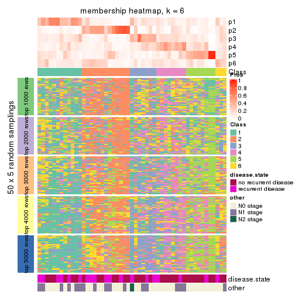
As soon as we have had the classes for columns, we can look for signatures which are significantly different between classes which can be candidate marks for certain classes. Following are the heatmaps for signatures.
Signature heatmaps where rows are scaled:
get_signatures(res, k = 2)
get_signatures(res, k = 3)
get_signatures(res, k = 4)

get_signatures(res, k = 5)

get_signatures(res, k = 6)

Signature heatmaps where rows are not scaled:
get_signatures(res, k = 2, scale_rows = FALSE)
get_signatures(res, k = 3, scale_rows = FALSE)
get_signatures(res, k = 4, scale_rows = FALSE)

get_signatures(res, k = 5, scale_rows = FALSE)

get_signatures(res, k = 6, scale_rows = FALSE)

Compare the overlap of signatures from different k:
compare_signatures(res)
get_signature() returns a data frame invisibly. TO get the list of signatures, the function
call should be assigned to a variable explicitly. In following code, if plot argument is set
to FALSE, no heatmap is plotted while only the differential analysis is performed.
# code only for demonstration
tb = get_signature(res, k = ..., plot = FALSE)
An example of the output of tb is:
#> which_row fdr mean_1 mean_2 scaled_mean_1 scaled_mean_2 km
#> 1 38 0.042760348 8.373488 9.131774 -0.5533452 0.5164555 1
#> 2 40 0.018707592 7.106213 8.469186 -0.6173731 0.5762149 1
#> 3 55 0.019134737 10.221463 11.207825 -0.6159697 0.5749050 1
#> 4 59 0.006059896 5.921854 7.869574 -0.6899429 0.6439467 1
#> 5 60 0.018055526 8.928898 10.211722 -0.6204761 0.5791110 1
#> 6 98 0.009384629 15.714769 14.887706 0.6635654 -0.6193277 2
...
The columns in tb are:
which_row: row indices corresponding to the input matrix.fdr: FDR for the differential test. mean_x: The mean value in group x.scaled_mean_x: The mean value in group x after rows are scaled.km: Row groups if k-means clustering is applied to rows.UMAP plot which shows how samples are separated.
dimension_reduction(res, k = 2, method = "UMAP")
dimension_reduction(res, k = 3, method = "UMAP")
dimension_reduction(res, k = 4, method = "UMAP")
dimension_reduction(res, k = 5, method = "UMAP")

dimension_reduction(res, k = 6, method = "UMAP")
Following heatmap shows how subgroups are split when increasing k:
collect_classes(res)
Test correlation between subgroups and known annotations. If the known annotation is numeric, one-way ANOVA test is applied, and if the known annotation is discrete, chi-squared contingency table test is applied.
test_to_known_factors(res)
#> n disease.state(p) other(p) k
#> MAD:skmeans 32 0.156 0.591 2
#> MAD:skmeans 9 1.000 1.000 3
#> MAD:skmeans 0 NA NA 4
#> MAD:skmeans 0 NA NA 5
#> MAD:skmeans 0 NA NA 6
If matrix rows can be associated to genes, consider to use GO_Enrichment(res,
...) to perform function enrichment for the signature genes.
The object with results only for a single top-value method and a single partition method can be extracted as:
res = res_list["MAD", "pam"]
# you can also extract it by
# res = res_list["MAD:pam"]
A summary of res and all the functions that can be applied to it:
res
#> A 'ConsensusPartition' object with k = 2, 3, 4, 5, 6.
#> On a matrix with 20180 rows and 51 columns.
#> Top rows (1000, 2000, 3000, 4000, 5000) are extracted by 'MAD' method.
#> Subgroups are detected by 'pam' method.
#> Performed in total 1250 partitions by row resampling.
#> Best k for subgroups seems to be 5.
#>
#> Following methods can be applied to this 'ConsensusPartition' object:
#> [1] "cola_report" "collect_classes" "collect_plots"
#> [4] "collect_stats" "colnames" "compare_signatures"
#> [7] "consensus_heatmap" "dimension_reduction" "functional_enrichment"
#> [10] "get_anno_col" "get_anno" "get_classes"
#> [13] "get_consensus" "get_matrix" "get_membership"
#> [16] "get_param" "get_signatures" "get_stats"
#> [19] "is_best_k" "is_stable_k" "membership_heatmap"
#> [22] "ncol" "nrow" "plot_ecdf"
#> [25] "rownames" "select_partition_number" "show"
#> [28] "suggest_best_k" "test_to_known_factors"
collect_plots() function collects all the plots made from res for all k (number of partitions)
into one single page to provide an easy and fast comparison between different k.
collect_plots(res)
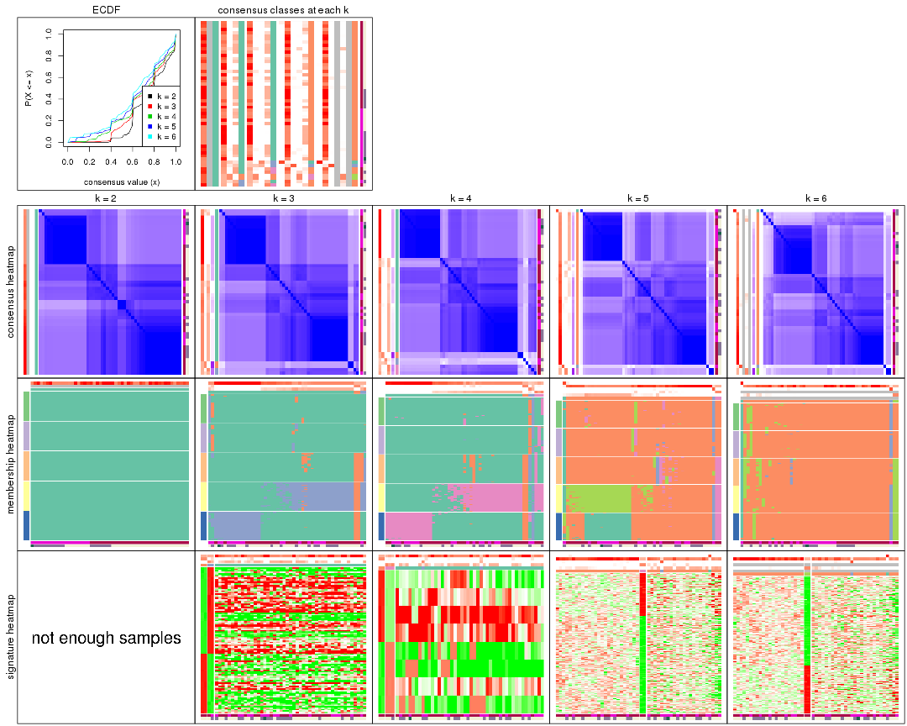
The plots are:
k and the heatmap of
predicted classes for each k.k.k.k.All the plots in panels can be made by individual functions and they are plotted later in this section.
select_partition_number() produces several plots showing different
statistics for choosing “optimized” k. There are following statistics:
k;k, the area increased is defined as \(A_k - A_{k-1}\).The detailed explanations of these statistics can be found in the cola vignette.
Generally speaking, lower PAC score, higher mean silhouette score or higher
concordance corresponds to better partition. Rand index and Jaccard index
measure how similar the current partition is compared to partition with k-1.
If they are too similar, we won't accept k is better than k-1.
select_partition_number(res)
The numeric values for all these statistics can be obtained by get_stats().
get_stats(res)
#> k 1-PAC mean_silhouette concordance area_increased Rand Jaccard
#> 2 2 0.301 0.000 0.820 0.2346 1.000 1.000
#> 3 3 0.264 0.230 0.784 0.1805 0.849 0.849
#> 4 4 0.265 0.279 0.769 0.1084 0.826 0.803
#> 5 5 0.263 0.487 0.794 0.0966 0.896 0.877
#> 6 6 0.230 0.439 0.783 0.0861 1.000 1.000
suggest_best_k() suggests the best \(k\) based on these statistics. The rules are as follows:
NA.suggest_best_k(res)
#> [1] 5
Following shows the table of the partitions (You need to click the show/hide
code output link to see it). The membership matrix (columns with name p*)
is inferred by
clue::cl_consensus()
function with the SE method. Basically the value in the membership matrix
represents the probability to belong to a certain group. The finall class
label for an item is determined with the group with highest probability it
belongs to.
In get_classes() function, the entropy is calculated from the membership
matrix and the silhouette score is calculated from the consensus matrix.
cbind(get_classes(res, k = 2), get_membership(res, k = 2))
#> class entropy silhouette p1 p2
#> GSM115459 1 0.5294 0 0.880 NA
#> GSM115460 1 0.7219 0 0.800 NA
#> GSM115461 1 0.7219 0 0.800 NA
#> GSM115462 1 0.6148 0 0.848 NA
#> GSM115463 1 0.9710 0 0.600 NA
#> GSM115464 1 0.7056 0 0.808 NA
#> GSM115465 1 0.0938 0 0.988 NA
#> GSM115466 1 0.0000 0 1.000 NA
#> GSM115467 1 0.4939 0 0.892 NA
#> GSM115468 1 0.2948 0 0.948 NA
#> GSM115469 1 0.0000 0 1.000 NA
#> GSM115470 1 0.4298 0 0.912 NA
#> GSM115471 1 0.0000 0 1.000 NA
#> GSM115472 1 0.9710 0 0.600 NA
#> GSM115473 1 0.7056 0 0.808 NA
#> GSM115474 1 0.4431 0 0.908 NA
#> GSM115475 1 0.9635 0 0.612 NA
#> GSM115476 1 0.9710 0 0.600 NA
#> GSM115477 1 0.4431 0 0.908 NA
#> GSM115478 1 0.0672 0 0.992 NA
#> GSM115479 1 0.9710 0 0.600 NA
#> GSM115480 1 0.0000 0 1.000 NA
#> GSM115481 1 0.7139 0 0.804 NA
#> GSM115482 1 0.9710 0 0.600 NA
#> GSM115483 1 0.0000 0 1.000 NA
#> GSM115484 1 0.0000 0 1.000 NA
#> GSM115485 1 0.0000 0 1.000 NA
#> GSM115486 1 0.0000 0 1.000 NA
#> GSM115487 1 0.7139 0 0.804 NA
#> GSM115488 1 0.0000 0 1.000 NA
#> GSM115489 1 0.9710 0 0.600 NA
#> GSM115490 1 0.2043 0 0.968 NA
#> GSM115491 1 0.3431 0 0.936 NA
#> GSM115492 1 0.0000 0 1.000 NA
#> GSM115493 1 0.2236 0 0.964 NA
#> GSM115494 1 0.9710 0 0.600 NA
#> GSM115495 1 0.0000 0 1.000 NA
#> GSM115496 1 0.9710 0 0.600 NA
#> GSM115497 1 0.9795 0 0.584 NA
#> GSM115498 1 0.9710 0 0.600 NA
#> GSM115499 1 0.9686 0 0.604 NA
#> GSM115500 1 0.9710 0 0.600 NA
#> GSM115501 1 0.9710 0 0.600 NA
#> GSM115502 1 0.9710 0 0.600 NA
#> GSM115503 1 0.0000 0 1.000 NA
#> GSM115504 1 0.2948 0 0.948 NA
#> GSM115505 1 0.7219 0 0.800 NA
#> GSM115506 1 0.9833 0 0.576 NA
#> GSM115507 1 0.0000 0 1.000 NA
#> GSM115509 1 0.4562 0 0.904 NA
#> GSM115508 1 0.9686 0 0.604 NA
cbind(get_classes(res, k = 3), get_membership(res, k = 3))
#> class entropy silhouette p1 p2 p3
#> GSM115459 1 0.5397 0.3018 0.720 0.000 0.280
#> GSM115460 2 0.6661 1.0000 0.400 0.588 0.012
#> GSM115461 2 0.6661 1.0000 0.400 0.588 0.012
#> GSM115462 1 0.5098 0.3377 0.752 0.000 0.248
#> GSM115463 1 0.0000 0.4300 1.000 0.000 0.000
#> GSM115464 1 0.4654 0.3671 0.792 0.000 0.208
#> GSM115465 1 0.6373 0.0189 0.588 0.004 0.408
#> GSM115466 1 0.6126 0.0867 0.600 0.000 0.400
#> GSM115467 1 0.5497 0.2860 0.708 0.000 0.292
#> GSM115468 1 0.6816 -0.3841 0.516 0.012 0.472
#> GSM115469 1 0.6126 0.0867 0.600 0.000 0.400
#> GSM115470 1 0.8814 -0.6336 0.480 0.116 0.404
#> GSM115471 1 0.6126 0.0867 0.600 0.000 0.400
#> GSM115472 1 0.0000 0.4300 1.000 0.000 0.000
#> GSM115473 1 0.4654 0.3697 0.792 0.000 0.208
#> GSM115474 1 0.5621 0.2640 0.692 0.000 0.308
#> GSM115475 1 0.0592 0.4286 0.988 0.000 0.012
#> GSM115476 1 0.0237 0.4247 0.996 0.004 0.000
#> GSM115477 1 0.8836 -0.5473 0.508 0.124 0.368
#> GSM115478 3 0.6180 0.7266 0.416 0.000 0.584
#> GSM115479 1 0.0000 0.4300 1.000 0.000 0.000
#> GSM115480 1 0.6126 0.0867 0.600 0.000 0.400
#> GSM115481 1 0.4605 0.3727 0.796 0.000 0.204
#> GSM115482 1 0.0000 0.4300 1.000 0.000 0.000
#> GSM115483 1 0.6126 0.0867 0.600 0.000 0.400
#> GSM115484 1 0.6126 0.0867 0.600 0.000 0.400
#> GSM115485 1 0.6126 0.0867 0.600 0.000 0.400
#> GSM115486 1 0.6126 0.0867 0.600 0.000 0.400
#> GSM115487 1 0.4605 0.3728 0.796 0.000 0.204
#> GSM115488 1 0.6126 0.0867 0.600 0.000 0.400
#> GSM115489 1 0.0000 0.4300 1.000 0.000 0.000
#> GSM115490 1 0.6521 -0.4168 0.504 0.004 0.492
#> GSM115491 1 0.5810 0.2139 0.664 0.000 0.336
#> GSM115492 1 0.6126 0.0867 0.600 0.000 0.400
#> GSM115493 1 0.5968 0.1588 0.636 0.000 0.364
#> GSM115494 1 0.0000 0.4300 1.000 0.000 0.000
#> GSM115495 1 0.6126 0.0867 0.600 0.000 0.400
#> GSM115496 1 0.0000 0.4300 1.000 0.000 0.000
#> GSM115497 1 0.8491 -0.1714 0.572 0.116 0.312
#> GSM115498 1 0.0000 0.4300 1.000 0.000 0.000
#> GSM115499 1 0.0237 0.4301 0.996 0.000 0.004
#> GSM115500 1 0.0000 0.4300 1.000 0.000 0.000
#> GSM115501 1 0.0000 0.4300 1.000 0.000 0.000
#> GSM115502 1 0.0000 0.4300 1.000 0.000 0.000
#> GSM115503 1 0.6126 0.0867 0.600 0.000 0.400
#> GSM115504 1 0.7581 -0.2419 0.548 0.044 0.408
#> GSM115505 3 0.9522 0.7413 0.400 0.188 0.412
#> GSM115506 1 0.8797 -0.2312 0.568 0.276 0.156
#> GSM115507 1 0.6126 0.0867 0.600 0.000 0.400
#> GSM115509 1 0.5591 0.2690 0.696 0.000 0.304
#> GSM115508 1 0.0237 0.4301 0.996 0.000 0.004
cbind(get_classes(res, k = 4), get_membership(res, k = 4))
#> class entropy silhouette p1 p2 p3 p4
#> GSM115459 1 0.4277 0.3154 0.720 0.000 0.000 0.280
#> GSM115460 2 0.4855 1.0000 0.400 0.600 0.000 0.000
#> GSM115461 2 0.4855 1.0000 0.400 0.600 0.000 0.000
#> GSM115462 1 0.4040 0.3463 0.752 0.000 0.000 0.248
#> GSM115463 1 0.0000 0.4296 1.000 0.000 0.000 0.000
#> GSM115464 1 0.3688 0.3724 0.792 0.000 0.000 0.208
#> GSM115465 1 0.5279 0.0851 0.588 0.012 0.000 0.400
#> GSM115466 1 0.4855 0.1377 0.600 0.000 0.000 0.400
#> GSM115467 1 0.4356 0.3013 0.708 0.000 0.000 0.292
#> GSM115468 4 0.6214 0.5092 0.468 0.052 0.000 0.480
#> GSM115469 1 0.4855 0.1377 0.600 0.000 0.000 0.400
#> GSM115470 1 0.7312 -0.5951 0.436 0.152 0.000 0.412
#> GSM115471 1 0.4855 0.1377 0.600 0.000 0.000 0.400
#> GSM115472 1 0.0000 0.4296 1.000 0.000 0.000 0.000
#> GSM115473 1 0.3688 0.3744 0.792 0.000 0.000 0.208
#> GSM115474 1 0.4454 0.2826 0.692 0.000 0.000 0.308
#> GSM115475 1 0.0469 0.4285 0.988 0.000 0.000 0.012
#> GSM115476 1 0.0188 0.4243 0.996 0.000 0.000 0.004
#> GSM115477 1 0.7091 -0.3845 0.508 0.136 0.000 0.356
#> GSM115478 4 0.5269 0.5999 0.364 0.016 0.000 0.620
#> GSM115479 1 0.0657 0.4052 0.984 0.012 0.000 0.004
#> GSM115480 1 0.5028 0.1213 0.596 0.000 0.004 0.400
#> GSM115481 1 0.3649 0.3771 0.796 0.000 0.000 0.204
#> GSM115482 1 0.0000 0.4296 1.000 0.000 0.000 0.000
#> GSM115483 1 0.5223 0.0572 0.584 0.004 0.004 0.408
#> GSM115484 1 0.4855 0.1377 0.600 0.000 0.000 0.400
#> GSM115485 1 0.4855 0.1377 0.600 0.000 0.000 0.400
#> GSM115486 1 0.4855 0.1377 0.600 0.000 0.000 0.400
#> GSM115487 1 0.3649 0.3773 0.796 0.000 0.000 0.204
#> GSM115488 1 0.4855 0.1377 0.600 0.000 0.000 0.400
#> GSM115489 1 0.0000 0.4296 1.000 0.000 0.000 0.000
#> GSM115490 4 0.4830 0.6306 0.392 0.000 0.000 0.608
#> GSM115491 1 0.4605 0.2391 0.664 0.000 0.000 0.336
#> GSM115492 1 0.4855 0.1377 0.600 0.000 0.000 0.400
#> GSM115493 1 0.4730 0.1940 0.636 0.000 0.000 0.364
#> GSM115494 1 0.0000 0.4296 1.000 0.000 0.000 0.000
#> GSM115495 1 0.4855 0.1377 0.600 0.000 0.000 0.400
#> GSM115496 1 0.0000 0.4296 1.000 0.000 0.000 0.000
#> GSM115497 3 0.7860 0.2496 0.312 0.292 0.396 0.000
#> GSM115498 1 0.0000 0.4296 1.000 0.000 0.000 0.000
#> GSM115499 1 0.0188 0.4299 0.996 0.000 0.000 0.004
#> GSM115500 1 0.0000 0.4296 1.000 0.000 0.000 0.000
#> GSM115501 1 0.0000 0.4296 1.000 0.000 0.000 0.000
#> GSM115502 1 0.0188 0.4243 0.996 0.000 0.000 0.004
#> GSM115503 1 0.4866 0.1210 0.596 0.000 0.000 0.404
#> GSM115504 1 0.6130 -0.1438 0.548 0.052 0.000 0.400
#> GSM115505 1 0.7610 -0.5837 0.400 0.200 0.000 0.400
#> GSM115506 3 0.6730 0.3011 0.276 0.000 0.592 0.132
#> GSM115507 1 0.5028 0.1215 0.596 0.000 0.004 0.400
#> GSM115509 1 0.4431 0.2870 0.696 0.000 0.000 0.304
#> GSM115508 1 0.0188 0.4299 0.996 0.000 0.000 0.004
cbind(get_classes(res, k = 5), get_membership(res, k = 5))
#> class entropy silhouette p1 p2 p3 p4 p5
#> GSM115459 2 0.4216 0.5450 0.100 0.780 0.000 0.000 0.120
#> GSM115460 4 0.4182 1.0000 0.000 0.400 0.000 0.600 0.000
#> GSM115461 4 0.4182 1.0000 0.000 0.400 0.000 0.600 0.000
#> GSM115462 2 0.2648 0.6081 0.000 0.848 0.000 0.000 0.152
#> GSM115463 2 0.4182 0.4469 0.000 0.600 0.000 0.000 0.400
#> GSM115464 2 0.3039 0.5932 0.000 0.808 0.000 0.000 0.192
#> GSM115465 2 0.0404 0.5988 0.000 0.988 0.000 0.012 0.000
#> GSM115466 2 0.0000 0.6080 0.000 1.000 0.000 0.000 0.000
#> GSM115467 2 0.2127 0.6191 0.000 0.892 0.000 0.000 0.108
#> GSM115468 2 0.3896 0.3277 0.004 0.816 0.024 0.020 0.136
#> GSM115469 2 0.0000 0.6080 0.000 1.000 0.000 0.000 0.000
#> GSM115470 2 0.3480 0.1140 0.000 0.752 0.000 0.248 0.000
#> GSM115471 2 0.0000 0.6080 0.000 1.000 0.000 0.000 0.000
#> GSM115472 2 0.4182 0.4469 0.000 0.600 0.000 0.000 0.400
#> GSM115473 2 0.3039 0.5931 0.000 0.808 0.000 0.000 0.192
#> GSM115474 2 0.1908 0.6211 0.000 0.908 0.000 0.000 0.092
#> GSM115475 2 0.4288 0.4561 0.004 0.612 0.000 0.000 0.384
#> GSM115476 2 0.4210 0.4274 0.000 0.588 0.000 0.000 0.412
#> GSM115477 2 0.2471 0.4375 0.000 0.864 0.000 0.136 0.000
#> GSM115478 2 0.3861 -0.0412 0.008 0.728 0.000 0.000 0.264
#> GSM115479 2 0.4297 0.2954 0.000 0.528 0.000 0.000 0.472
#> GSM115480 2 0.1857 0.5316 0.000 0.928 0.060 0.004 0.008
#> GSM115481 2 0.3109 0.5896 0.000 0.800 0.000 0.000 0.200
#> GSM115482 2 0.4182 0.4469 0.000 0.600 0.000 0.000 0.400
#> GSM115483 2 0.2002 0.5408 0.000 0.932 0.028 0.020 0.020
#> GSM115484 2 0.0000 0.6080 0.000 1.000 0.000 0.000 0.000
#> GSM115485 2 0.0000 0.6080 0.000 1.000 0.000 0.000 0.000
#> GSM115486 2 0.0000 0.6080 0.000 1.000 0.000 0.000 0.000
#> GSM115487 2 0.3074 0.5911 0.000 0.804 0.000 0.000 0.196
#> GSM115488 2 0.0000 0.6080 0.000 1.000 0.000 0.000 0.000
#> GSM115489 2 0.4182 0.4469 0.000 0.600 0.000 0.000 0.400
#> GSM115490 2 0.5394 -0.1132 0.012 0.684 0.012 0.236 0.056
#> GSM115491 2 0.1478 0.6211 0.000 0.936 0.000 0.000 0.064
#> GSM115492 2 0.0000 0.6080 0.000 1.000 0.000 0.000 0.000
#> GSM115493 2 0.0963 0.6176 0.000 0.964 0.000 0.000 0.036
#> GSM115494 2 0.4192 0.4410 0.000 0.596 0.000 0.000 0.404
#> GSM115495 2 0.0000 0.6080 0.000 1.000 0.000 0.000 0.000
#> GSM115496 2 0.4182 0.4469 0.000 0.600 0.000 0.000 0.400
#> GSM115497 3 0.3143 0.0000 0.000 0.204 0.796 0.000 0.000
#> GSM115498 2 0.4182 0.4469 0.000 0.600 0.000 0.000 0.400
#> GSM115499 2 0.4171 0.4507 0.000 0.604 0.000 0.000 0.396
#> GSM115500 2 0.4182 0.4469 0.000 0.600 0.000 0.000 0.400
#> GSM115501 2 0.4182 0.4469 0.000 0.600 0.000 0.000 0.400
#> GSM115502 2 0.4227 0.4123 0.000 0.580 0.000 0.000 0.420
#> GSM115503 2 0.0404 0.6013 0.000 0.988 0.000 0.000 0.012
#> GSM115504 2 0.1270 0.5527 0.000 0.948 0.000 0.052 0.000
#> GSM115505 2 0.3109 0.1572 0.000 0.800 0.000 0.200 0.000
#> GSM115506 1 0.2974 0.0000 0.868 0.080 0.000 0.000 0.052
#> GSM115507 2 0.1732 0.5163 0.000 0.920 0.080 0.000 0.000
#> GSM115509 2 0.2179 0.6185 0.004 0.896 0.000 0.000 0.100
#> GSM115508 2 0.4171 0.4506 0.000 0.604 0.000 0.000 0.396
cbind(get_classes(res, k = 6), get_membership(res, k = 6))
#> class entropy silhouette p1 p2 p3 p4 p5 p6
#> GSM115459 2 0.4625 0.350 0.000 0.680 0.000 NA 0.000 NA
#> GSM115460 5 0.3756 1.000 0.000 0.400 0.000 NA 0.600 NA
#> GSM115461 5 0.3756 1.000 0.000 0.400 0.000 NA 0.600 NA
#> GSM115462 2 0.2378 0.582 0.000 0.848 0.000 NA 0.000 NA
#> GSM115463 2 0.3756 0.436 0.000 0.600 0.000 NA 0.000 NA
#> GSM115464 2 0.2730 0.569 0.000 0.808 0.000 NA 0.000 NA
#> GSM115465 2 0.0363 0.568 0.000 0.988 0.000 NA 0.012 NA
#> GSM115466 2 0.0000 0.577 0.000 1.000 0.000 NA 0.000 NA
#> GSM115467 2 0.2846 0.573 0.000 0.856 0.000 NA 0.000 NA
#> GSM115468 2 0.3639 0.210 0.000 0.772 0.008 NA 0.008 NA
#> GSM115469 2 0.0000 0.577 0.000 1.000 0.000 NA 0.000 NA
#> GSM115470 2 0.3515 -0.149 0.000 0.676 0.000 NA 0.324 NA
#> GSM115471 2 0.0000 0.577 0.000 1.000 0.000 NA 0.000 NA
#> GSM115472 2 0.3756 0.436 0.000 0.600 0.000 NA 0.000 NA
#> GSM115473 2 0.2730 0.569 0.000 0.808 0.000 NA 0.000 NA
#> GSM115474 2 0.1714 0.592 0.000 0.908 0.000 NA 0.000 NA
#> GSM115475 2 0.4524 0.435 0.012 0.612 0.000 NA 0.000 NA
#> GSM115476 2 0.3961 0.362 0.000 0.556 0.000 NA 0.004 NA
#> GSM115477 2 0.2219 0.414 0.000 0.864 0.000 NA 0.136 NA
#> GSM115478 2 0.5249 -0.326 0.000 0.592 0.000 NA 0.100 NA
#> GSM115479 2 0.3869 0.232 0.000 0.500 0.000 NA 0.000 NA
#> GSM115480 2 0.3123 0.346 0.000 0.848 0.100 NA 0.008 NA
#> GSM115481 2 0.2902 0.566 0.000 0.800 0.000 NA 0.004 NA
#> GSM115482 2 0.3756 0.436 0.000 0.600 0.000 NA 0.000 NA
#> GSM115483 2 0.3236 0.376 0.000 0.856 0.032 NA 0.060 NA
#> GSM115484 2 0.0000 0.577 0.000 1.000 0.000 NA 0.000 NA
#> GSM115485 2 0.0000 0.577 0.000 1.000 0.000 NA 0.000 NA
#> GSM115486 2 0.0000 0.577 0.000 1.000 0.000 NA 0.000 NA
#> GSM115487 2 0.2762 0.567 0.000 0.804 0.000 NA 0.000 NA
#> GSM115488 2 0.0000 0.577 0.000 1.000 0.000 NA 0.000 NA
#> GSM115489 2 0.3756 0.436 0.000 0.600 0.000 NA 0.000 NA
#> GSM115490 2 0.3634 -0.173 0.000 0.644 0.000 NA 0.000 NA
#> GSM115491 2 0.1327 0.591 0.000 0.936 0.000 NA 0.000 NA
#> GSM115492 2 0.0000 0.577 0.000 1.000 0.000 NA 0.000 NA
#> GSM115493 2 0.0865 0.587 0.000 0.964 0.000 NA 0.000 NA
#> GSM115494 2 0.3782 0.419 0.000 0.588 0.000 NA 0.000 NA
#> GSM115495 2 0.0000 0.577 0.000 1.000 0.000 NA 0.000 NA
#> GSM115496 2 0.3756 0.436 0.000 0.600 0.000 NA 0.000 NA
#> GSM115497 3 0.2340 0.000 0.000 0.148 0.852 NA 0.000 NA
#> GSM115498 2 0.3756 0.436 0.000 0.600 0.000 NA 0.000 NA
#> GSM115499 2 0.3747 0.439 0.000 0.604 0.000 NA 0.000 NA
#> GSM115500 2 0.3756 0.436 0.000 0.600 0.000 NA 0.000 NA
#> GSM115501 2 0.3756 0.436 0.000 0.600 0.000 NA 0.000 NA
#> GSM115502 2 0.4434 0.377 0.000 0.564 0.000 NA 0.012 NA
#> GSM115503 2 0.0964 0.555 0.000 0.968 0.000 NA 0.004 NA
#> GSM115504 2 0.1141 0.522 0.000 0.948 0.000 NA 0.052 NA
#> GSM115505 2 0.2793 0.147 0.000 0.800 0.000 NA 0.200 NA
#> GSM115506 1 0.0508 0.000 0.984 0.012 0.000 NA 0.000 NA
#> GSM115507 2 0.2473 0.361 0.000 0.856 0.008 NA 0.000 NA
#> GSM115509 2 0.2051 0.590 0.004 0.896 0.000 NA 0.004 NA
#> GSM115508 2 0.3747 0.439 0.000 0.604 0.000 NA 0.000 NA
Heatmaps for the consensus matrix. It visualizes the probability of two samples to be in a same group.
consensus_heatmap(res, k = 2)
consensus_heatmap(res, k = 3)
consensus_heatmap(res, k = 4)
consensus_heatmap(res, k = 5)
consensus_heatmap(res, k = 6)

Heatmaps for the membership of samples in all partitions to see how consistent they are:
membership_heatmap(res, k = 2)
membership_heatmap(res, k = 3)
membership_heatmap(res, k = 4)
membership_heatmap(res, k = 5)
membership_heatmap(res, k = 6)
As soon as we have had the classes for columns, we can look for signatures which are significantly different between classes which can be candidate marks for certain classes. Following are the heatmaps for signatures.
Signature heatmaps where rows are scaled:
get_signatures(res, k = 2)

get_signatures(res, k = 3)
get_signatures(res, k = 4)
get_signatures(res, k = 5)
get_signatures(res, k = 6)
Signature heatmaps where rows are not scaled:
get_signatures(res, k = 2, scale_rows = FALSE)

get_signatures(res, k = 3, scale_rows = FALSE)
get_signatures(res, k = 4, scale_rows = FALSE)
get_signatures(res, k = 5, scale_rows = FALSE)
get_signatures(res, k = 6, scale_rows = FALSE)
Compare the overlap of signatures from different k:
compare_signatures(res)
get_signature() returns a data frame invisibly. TO get the list of signatures, the function
call should be assigned to a variable explicitly. In following code, if plot argument is set
to FALSE, no heatmap is plotted while only the differential analysis is performed.
# code only for demonstration
tb = get_signature(res, k = ..., plot = FALSE)
An example of the output of tb is:
#> which_row fdr mean_1 mean_2 scaled_mean_1 scaled_mean_2 km
#> 1 38 0.042760348 8.373488 9.131774 -0.5533452 0.5164555 1
#> 2 40 0.018707592 7.106213 8.469186 -0.6173731 0.5762149 1
#> 3 55 0.019134737 10.221463 11.207825 -0.6159697 0.5749050 1
#> 4 59 0.006059896 5.921854 7.869574 -0.6899429 0.6439467 1
#> 5 60 0.018055526 8.928898 10.211722 -0.6204761 0.5791110 1
#> 6 98 0.009384629 15.714769 14.887706 0.6635654 -0.6193277 2
...
The columns in tb are:
which_row: row indices corresponding to the input matrix.fdr: FDR for the differential test. mean_x: The mean value in group x.scaled_mean_x: The mean value in group x after rows are scaled.km: Row groups if k-means clustering is applied to rows.UMAP plot which shows how samples are separated.
dimension_reduction(res, k = 2, method = "UMAP")
dimension_reduction(res, k = 3, method = "UMAP")
dimension_reduction(res, k = 4, method = "UMAP")
dimension_reduction(res, k = 5, method = "UMAP")
dimension_reduction(res, k = 6, method = "UMAP")
Following heatmap shows how subgroups are split when increasing k:
collect_classes(res)
Test correlation between subgroups and known annotations. If the known annotation is numeric, one-way ANOVA test is applied, and if the known annotation is discrete, chi-squared contingency table test is applied.
test_to_known_factors(res)
#> n disease.state(p) other(p) k
#> MAD:pam 0 NA NA 2
#> MAD:pam 4 1.000 1.000 3
#> MAD:pam 5 NA 1.000 4
#> MAD:pam 28 0.908 0.822 5
#> MAD:pam 24 0.892 0.794 6
If matrix rows can be associated to genes, consider to use GO_Enrichment(res,
...) to perform function enrichment for the signature genes.
The object with results only for a single top-value method and a single partition method can be extracted as:
res = res_list["MAD", "mclust"]
# you can also extract it by
# res = res_list["MAD:mclust"]
A summary of res and all the functions that can be applied to it:
res
#> A 'ConsensusPartition' object with k = 2, 3, 4, 5, 6.
#> On a matrix with 20180 rows and 51 columns.
#> Top rows (1000, 2000, 3000, 4000, 5000) are extracted by 'MAD' method.
#> Subgroups are detected by 'mclust' method.
#> Performed in total 1250 partitions by row resampling.
#> Best k for subgroups seems to be 3.
#>
#> Following methods can be applied to this 'ConsensusPartition' object:
#> [1] "cola_report" "collect_classes" "collect_plots"
#> [4] "collect_stats" "colnames" "compare_signatures"
#> [7] "consensus_heatmap" "dimension_reduction" "functional_enrichment"
#> [10] "get_anno_col" "get_anno" "get_classes"
#> [13] "get_consensus" "get_matrix" "get_membership"
#> [16] "get_param" "get_signatures" "get_stats"
#> [19] "is_best_k" "is_stable_k" "membership_heatmap"
#> [22] "ncol" "nrow" "plot_ecdf"
#> [25] "rownames" "select_partition_number" "show"
#> [28] "suggest_best_k" "test_to_known_factors"
collect_plots() function collects all the plots made from res for all k (number of partitions)
into one single page to provide an easy and fast comparison between different k.
collect_plots(res)
The plots are:
k and the heatmap of
predicted classes for each k.k.k.k.All the plots in panels can be made by individual functions and they are plotted later in this section.
select_partition_number() produces several plots showing different
statistics for choosing “optimized” k. There are following statistics:
k;k, the area increased is defined as \(A_k - A_{k-1}\).The detailed explanations of these statistics can be found in the cola vignette.
Generally speaking, lower PAC score, higher mean silhouette score or higher
concordance corresponds to better partition. Rand index and Jaccard index
measure how similar the current partition is compared to partition with k-1.
If they are too similar, we won't accept k is better than k-1.
select_partition_number(res)
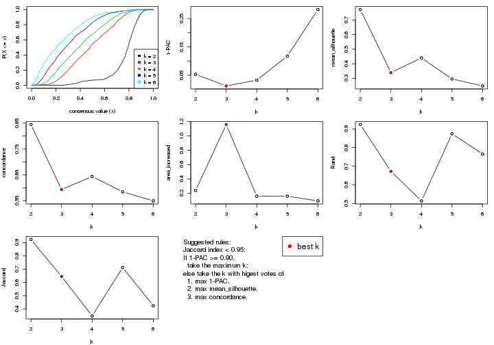
The numeric values for all these statistics can be obtained by get_stats().
get_stats(res)
#> k 1-PAC mean_silhouette concordance area_increased Rand Jaccard
#> 2 2 0.0532 0.772 0.844 0.2387 0.923 0.923
#> 3 3 0.0124 0.340 0.593 1.1590 0.672 0.645
#> 4 4 0.0328 0.440 0.644 0.1580 0.514 0.347
#> 5 5 0.1179 0.296 0.584 0.1589 0.874 0.712
#> 6 6 0.2819 0.248 0.549 0.0928 0.765 0.424
suggest_best_k() suggests the best \(k\) based on these statistics. The rules are as follows:
NA.suggest_best_k(res)
#> [1] 3
Following shows the table of the partitions (You need to click the show/hide
code output link to see it). The membership matrix (columns with name p*)
is inferred by
clue::cl_consensus()
function with the SE method. Basically the value in the membership matrix
represents the probability to belong to a certain group. The finall class
label for an item is determined with the group with highest probability it
belongs to.
In get_classes() function, the entropy is calculated from the membership
matrix and the silhouette score is calculated from the consensus matrix.
cbind(get_classes(res, k = 2), get_membership(res, k = 2))
#> class entropy silhouette p1 p2
#> GSM115459 2 0.373 0.812 0.072 0.928
#> GSM115460 2 0.671 0.734 0.176 0.824
#> GSM115461 2 0.671 0.734 0.176 0.824
#> GSM115462 2 0.795 0.699 0.240 0.760
#> GSM115463 2 0.456 0.802 0.096 0.904
#> GSM115464 2 0.343 0.821 0.064 0.936
#> GSM115465 2 0.494 0.818 0.108 0.892
#> GSM115466 2 0.584 0.804 0.140 0.860
#> GSM115467 2 0.388 0.806 0.076 0.924
#> GSM115468 2 0.443 0.818 0.092 0.908
#> GSM115469 2 0.482 0.788 0.104 0.896
#> GSM115470 2 0.802 0.695 0.244 0.756
#> GSM115471 2 0.644 0.764 0.164 0.836
#> GSM115472 2 0.456 0.811 0.096 0.904
#> GSM115473 2 0.358 0.817 0.068 0.932
#> GSM115474 2 0.311 0.821 0.056 0.944
#> GSM115475 2 0.541 0.781 0.124 0.876
#> GSM115476 2 0.745 0.667 0.212 0.788
#> GSM115477 2 0.653 0.796 0.168 0.832
#> GSM115478 2 0.615 0.797 0.152 0.848
#> GSM115479 1 0.975 0.932 0.592 0.408
#> GSM115480 2 0.644 0.796 0.164 0.836
#> GSM115481 2 0.482 0.809 0.104 0.896
#> GSM115482 2 0.839 0.562 0.268 0.732
#> GSM115483 2 0.891 0.550 0.308 0.692
#> GSM115484 2 0.430 0.823 0.088 0.912
#> GSM115485 2 0.416 0.816 0.084 0.916
#> GSM115486 2 0.416 0.825 0.084 0.916
#> GSM115487 2 0.529 0.792 0.120 0.880
#> GSM115488 2 0.584 0.772 0.140 0.860
#> GSM115489 2 0.373 0.818 0.072 0.928
#> GSM115490 2 0.891 0.545 0.308 0.692
#> GSM115491 2 0.662 0.744 0.172 0.828
#> GSM115492 2 0.518 0.803 0.116 0.884
#> GSM115493 2 0.595 0.810 0.144 0.856
#> GSM115494 1 0.978 0.933 0.588 0.412
#> GSM115495 2 0.584 0.775 0.140 0.860
#> GSM115496 2 0.529 0.787 0.120 0.880
#> GSM115497 2 0.795 0.641 0.240 0.760
#> GSM115498 2 0.402 0.820 0.080 0.920
#> GSM115499 2 0.456 0.799 0.096 0.904
#> GSM115500 2 0.706 0.701 0.192 0.808
#> GSM115501 2 0.644 0.793 0.164 0.836
#> GSM115502 2 0.311 0.821 0.056 0.944
#> GSM115503 2 0.767 0.725 0.224 0.776
#> GSM115504 2 0.506 0.807 0.112 0.888
#> GSM115505 2 0.605 0.803 0.148 0.852
#> GSM115506 2 0.802 0.604 0.244 0.756
#> GSM115507 2 0.722 0.764 0.200 0.800
#> GSM115509 2 0.518 0.793 0.116 0.884
#> GSM115508 2 0.469 0.808 0.100 0.900
cbind(get_classes(res, k = 3), get_membership(res, k = 3))
#> class entropy silhouette p1 p2 p3
#> GSM115459 3 0.970 0.4436 0.264 0.280 0.456
#> GSM115460 2 0.573 0.3983 0.060 0.796 0.144
#> GSM115461 2 0.573 0.3983 0.060 0.796 0.144
#> GSM115462 2 0.586 0.4360 0.020 0.740 0.240
#> GSM115463 2 0.829 -0.3725 0.100 0.580 0.320
#> GSM115464 2 0.530 0.3621 0.036 0.808 0.156
#> GSM115465 2 0.500 0.4307 0.028 0.820 0.152
#> GSM115466 2 0.547 0.4830 0.060 0.812 0.128
#> GSM115467 2 0.742 0.4706 0.300 0.640 0.060
#> GSM115468 2 0.912 0.3780 0.220 0.548 0.232
#> GSM115469 2 0.825 0.4187 0.352 0.560 0.088
#> GSM115470 2 0.645 0.4357 0.036 0.712 0.252
#> GSM115471 2 0.527 0.4951 0.200 0.784 0.016
#> GSM115472 2 0.554 -0.0254 0.012 0.752 0.236
#> GSM115473 2 0.664 -0.5318 0.008 0.544 0.448
#> GSM115474 2 0.849 -0.5610 0.092 0.496 0.412
#> GSM115475 3 0.658 0.6375 0.020 0.328 0.652
#> GSM115476 3 0.733 0.5784 0.064 0.276 0.660
#> GSM115477 2 0.506 0.4497 0.028 0.816 0.156
#> GSM115478 2 0.882 0.4484 0.176 0.576 0.248
#> GSM115479 1 0.915 0.9098 0.520 0.172 0.308
#> GSM115480 2 0.839 0.4754 0.224 0.620 0.156
#> GSM115481 3 0.668 0.5742 0.008 0.492 0.500
#> GSM115482 2 0.932 0.0941 0.196 0.508 0.296
#> GSM115483 2 0.769 0.3968 0.068 0.616 0.316
#> GSM115484 2 0.844 0.4760 0.200 0.620 0.180
#> GSM115485 2 0.675 -0.5265 0.012 0.556 0.432
#> GSM115486 3 0.757 0.6185 0.040 0.452 0.508
#> GSM115487 3 0.650 0.6101 0.004 0.460 0.536
#> GSM115488 2 0.739 0.4511 0.356 0.600 0.044
#> GSM115489 2 0.881 -0.4991 0.124 0.516 0.360
#> GSM115490 2 0.764 0.3854 0.056 0.592 0.352
#> GSM115491 2 0.683 0.4789 0.312 0.656 0.032
#> GSM115492 2 0.375 0.4072 0.020 0.884 0.096
#> GSM115493 2 0.423 0.4650 0.044 0.872 0.084
#> GSM115494 1 0.901 0.9086 0.552 0.180 0.268
#> GSM115495 2 0.798 0.4381 0.356 0.572 0.072
#> GSM115496 2 0.797 0.4470 0.324 0.596 0.080
#> GSM115497 3 0.677 0.6542 0.032 0.304 0.664
#> GSM115498 3 0.952 0.5252 0.188 0.392 0.420
#> GSM115499 2 0.741 -0.4191 0.040 0.576 0.384
#> GSM115500 3 0.660 0.6532 0.020 0.332 0.648
#> GSM115501 2 0.524 0.4307 0.048 0.820 0.132
#> GSM115502 3 0.909 0.5860 0.152 0.344 0.504
#> GSM115503 2 0.776 0.4831 0.144 0.676 0.180
#> GSM115504 2 0.535 0.1686 0.028 0.796 0.176
#> GSM115505 2 0.756 0.4936 0.164 0.692 0.144
#> GSM115506 2 0.888 0.2527 0.144 0.540 0.316
#> GSM115507 2 0.784 0.4913 0.240 0.652 0.108
#> GSM115509 3 0.735 0.6839 0.044 0.348 0.608
#> GSM115508 2 0.707 -0.5615 0.020 0.504 0.476
cbind(get_classes(res, k = 4), get_membership(res, k = 4))
#> class entropy silhouette p1 p2 p3 p4
#> GSM115459 3 0.798 0.2819 0.056 0.332 0.508 0.104
#> GSM115460 4 0.722 0.9823 0.000 0.148 0.364 0.488
#> GSM115461 4 0.724 0.9823 0.000 0.152 0.356 0.492
#> GSM115462 3 0.842 0.0354 0.080 0.320 0.484 0.116
#> GSM115463 3 0.546 0.4989 0.072 0.084 0.784 0.060
#> GSM115464 3 0.506 0.4745 0.020 0.200 0.756 0.024
#> GSM115465 3 0.684 0.1834 0.028 0.088 0.636 0.248
#> GSM115466 3 0.754 -0.0920 0.052 0.392 0.492 0.064
#> GSM115467 2 0.546 0.6233 0.040 0.748 0.184 0.028
#> GSM115468 2 0.730 0.4604 0.048 0.588 0.288 0.076
#> GSM115469 2 0.506 0.6175 0.004 0.748 0.204 0.044
#> GSM115470 2 0.962 0.1038 0.132 0.336 0.300 0.232
#> GSM115471 2 0.567 0.4718 0.000 0.596 0.372 0.032
#> GSM115472 3 0.304 0.5404 0.008 0.080 0.892 0.020
#> GSM115473 3 0.427 0.5381 0.064 0.024 0.844 0.068
#> GSM115474 3 0.553 0.5549 0.032 0.140 0.764 0.064
#> GSM115475 3 0.679 0.4169 0.120 0.028 0.664 0.188
#> GSM115476 3 0.717 0.2985 0.332 0.040 0.564 0.064
#> GSM115477 3 0.786 0.1475 0.052 0.208 0.580 0.160
#> GSM115478 2 0.495 0.5387 0.080 0.808 0.080 0.032
#> GSM115479 1 0.357 0.4314 0.804 0.000 0.196 0.000
#> GSM115480 2 0.487 0.6051 0.056 0.792 0.140 0.012
#> GSM115481 3 0.517 0.5110 0.060 0.024 0.784 0.132
#> GSM115482 1 0.958 0.2663 0.368 0.184 0.292 0.156
#> GSM115483 2 0.902 0.1786 0.140 0.476 0.144 0.240
#> GSM115484 2 0.455 0.5657 0.048 0.824 0.104 0.024
#> GSM115485 3 0.416 0.5121 0.024 0.036 0.844 0.096
#> GSM115486 3 0.624 0.5328 0.064 0.080 0.732 0.124
#> GSM115487 3 0.452 0.5608 0.084 0.036 0.832 0.048
#> GSM115488 2 0.463 0.6309 0.000 0.768 0.196 0.036
#> GSM115489 3 0.516 0.5443 0.068 0.084 0.800 0.048
#> GSM115490 2 0.948 0.1254 0.160 0.412 0.184 0.244
#> GSM115491 2 0.592 0.5356 0.024 0.636 0.320 0.020
#> GSM115492 3 0.512 0.4255 0.000 0.128 0.764 0.108
#> GSM115493 3 0.722 0.3379 0.080 0.276 0.600 0.044
#> GSM115494 1 0.559 0.4366 0.744 0.072 0.168 0.016
#> GSM115495 2 0.299 0.5678 0.008 0.892 0.084 0.016
#> GSM115496 2 0.785 0.3585 0.108 0.508 0.340 0.044
#> GSM115497 3 0.728 0.3891 0.172 0.024 0.612 0.192
#> GSM115498 3 0.675 0.5003 0.060 0.220 0.664 0.056
#> GSM115499 3 0.444 0.5588 0.008 0.112 0.820 0.060
#> GSM115500 3 0.672 0.4658 0.244 0.032 0.648 0.076
#> GSM115501 3 0.793 0.1927 0.140 0.260 0.552 0.048
#> GSM115502 3 0.825 0.3285 0.096 0.280 0.528 0.096
#> GSM115503 2 0.773 0.4239 0.068 0.524 0.340 0.068
#> GSM115504 3 0.560 0.4506 0.020 0.132 0.756 0.092
#> GSM115505 2 0.732 0.5680 0.068 0.588 0.288 0.056
#> GSM115506 1 0.913 0.1682 0.404 0.296 0.216 0.084
#> GSM115507 2 0.591 0.6216 0.068 0.716 0.196 0.020
#> GSM115509 3 0.814 0.4403 0.152 0.128 0.588 0.132
#> GSM115508 3 0.440 0.5471 0.068 0.036 0.840 0.056
cbind(get_classes(res, k = 5), get_membership(res, k = 5))
#> class entropy silhouette p1 p2 p3 p4 p5
#> GSM115459 5 0.748 0.5121 0.024 0.268 0.284 0.008 0.416
#> GSM115460 4 0.601 0.9777 0.000 0.116 0.300 0.576 0.008
#> GSM115461 4 0.592 0.9777 0.000 0.120 0.296 0.580 0.004
#> GSM115462 2 0.846 0.1561 0.052 0.368 0.340 0.184 0.056
#> GSM115463 3 0.721 0.3173 0.160 0.112 0.612 0.036 0.080
#> GSM115464 3 0.630 0.1363 0.016 0.344 0.556 0.020 0.064
#> GSM115465 3 0.700 -0.3239 0.032 0.096 0.448 0.408 0.016
#> GSM115466 2 0.704 0.2358 0.072 0.484 0.376 0.048 0.020
#> GSM115467 2 0.565 0.5285 0.020 0.720 0.116 0.024 0.120
#> GSM115468 2 0.732 0.1783 0.036 0.508 0.184 0.012 0.260
#> GSM115469 2 0.369 0.5427 0.000 0.836 0.080 0.012 0.072
#> GSM115470 2 0.928 0.1975 0.108 0.384 0.188 0.208 0.112
#> GSM115471 2 0.556 0.4170 0.012 0.632 0.304 0.024 0.028
#> GSM115472 3 0.680 0.3660 0.120 0.104 0.660 0.052 0.064
#> GSM115473 3 0.409 0.3517 0.016 0.036 0.836 0.060 0.052
#> GSM115474 3 0.644 0.1004 0.012 0.208 0.624 0.028 0.128
#> GSM115475 3 0.687 0.1138 0.068 0.016 0.556 0.300 0.060
#> GSM115476 1 0.786 -0.1817 0.392 0.044 0.356 0.020 0.188
#> GSM115477 3 0.756 -0.0808 0.032 0.232 0.448 0.276 0.012
#> GSM115478 2 0.483 0.5442 0.048 0.780 0.028 0.020 0.124
#> GSM115479 1 0.213 0.4370 0.908 0.000 0.080 0.012 0.000
#> GSM115480 2 0.384 0.5795 0.048 0.848 0.060 0.012 0.032
#> GSM115481 3 0.550 0.2979 0.032 0.032 0.728 0.164 0.044
#> GSM115482 1 0.930 0.3708 0.376 0.140 0.136 0.108 0.240
#> GSM115483 2 0.816 0.3588 0.124 0.532 0.064 0.172 0.108
#> GSM115484 2 0.528 0.5526 0.036 0.760 0.064 0.028 0.112
#> GSM115485 3 0.495 0.3564 0.024 0.068 0.784 0.088 0.036
#> GSM115486 3 0.662 0.0459 0.024 0.104 0.632 0.040 0.200
#> GSM115487 3 0.574 0.3366 0.060 0.056 0.740 0.096 0.048
#> GSM115488 2 0.263 0.5660 0.000 0.892 0.080 0.012 0.016
#> GSM115489 3 0.694 0.2336 0.168 0.108 0.620 0.016 0.088
#> GSM115490 2 0.859 0.3277 0.140 0.488 0.088 0.180 0.104
#> GSM115491 2 0.697 0.4086 0.048 0.596 0.208 0.020 0.128
#> GSM115492 3 0.593 0.2149 0.008 0.180 0.668 0.124 0.020
#> GSM115493 3 0.875 0.1878 0.168 0.244 0.420 0.048 0.120
#> GSM115494 1 0.404 0.4372 0.824 0.056 0.096 0.016 0.008
#> GSM115495 2 0.293 0.5686 0.004 0.884 0.036 0.008 0.068
#> GSM115496 2 0.801 0.1533 0.152 0.504 0.180 0.016 0.148
#> GSM115497 3 0.819 -0.3296 0.088 0.040 0.388 0.108 0.376
#> GSM115498 3 0.628 0.1499 0.040 0.236 0.644 0.036 0.044
#> GSM115499 3 0.699 0.2961 0.096 0.176 0.620 0.024 0.084
#> GSM115500 3 0.757 -0.1500 0.264 0.028 0.488 0.028 0.192
#> GSM115501 3 0.850 0.1186 0.180 0.264 0.408 0.020 0.128
#> GSM115502 3 0.849 -0.4015 0.132 0.188 0.348 0.012 0.320
#> GSM115503 2 0.711 0.4771 0.064 0.600 0.216 0.040 0.080
#> GSM115504 3 0.615 0.3039 0.008 0.148 0.676 0.116 0.052
#> GSM115505 2 0.704 0.5064 0.044 0.624 0.168 0.056 0.108
#> GSM115506 1 0.846 0.3941 0.480 0.192 0.140 0.044 0.144
#> GSM115507 2 0.580 0.5745 0.044 0.716 0.108 0.016 0.116
#> GSM115509 5 0.844 0.4648 0.144 0.112 0.336 0.028 0.380
#> GSM115508 3 0.567 0.1892 0.084 0.032 0.708 0.012 0.164
cbind(get_classes(res, k = 6), get_membership(res, k = 6))
#> class entropy silhouette p1 p2 p3 p4 p5 p6
#> GSM115459 3 0.558 0.42241 0.116 0.288 0.580 0.012 0.000 0.004
#> GSM115460 5 0.533 0.53058 0.308 0.036 0.004 0.048 0.604 0.000
#> GSM115461 5 0.542 0.53125 0.300 0.040 0.004 0.052 0.604 0.000
#> GSM115462 1 0.839 -0.13770 0.336 0.248 0.028 0.196 0.176 0.016
#> GSM115463 1 0.444 0.35429 0.796 0.060 0.008 0.028 0.032 0.076
#> GSM115464 1 0.608 0.25695 0.612 0.232 0.036 0.092 0.024 0.004
#> GSM115465 5 0.712 0.28805 0.240 0.048 0.000 0.280 0.416 0.016
#> GSM115466 1 0.754 -0.00201 0.428 0.360 0.044 0.060 0.064 0.044
#> GSM115467 2 0.660 0.42438 0.188 0.604 0.112 0.048 0.036 0.012
#> GSM115468 2 0.724 0.16449 0.172 0.456 0.296 0.032 0.016 0.028
#> GSM115469 2 0.333 0.56044 0.040 0.860 0.036 0.040 0.024 0.000
#> GSM115470 5 0.902 0.07987 0.168 0.268 0.084 0.088 0.328 0.064
#> GSM115471 2 0.599 0.20956 0.356 0.536 0.016 0.044 0.040 0.008
#> GSM115472 1 0.316 0.32428 0.864 0.044 0.008 0.064 0.016 0.004
#> GSM115473 1 0.542 -0.23308 0.572 0.020 0.040 0.352 0.008 0.008
#> GSM115474 1 0.654 0.20061 0.612 0.128 0.104 0.132 0.016 0.008
#> GSM115475 4 0.449 0.24649 0.148 0.004 0.000 0.752 0.064 0.032
#> GSM115476 1 0.688 -0.06616 0.480 0.020 0.196 0.008 0.024 0.272
#> GSM115477 4 0.798 -0.24794 0.248 0.156 0.008 0.304 0.276 0.008
#> GSM115478 2 0.480 0.55152 0.012 0.776 0.084 0.044 0.032 0.052
#> GSM115479 6 0.270 0.49877 0.088 0.000 0.012 0.020 0.004 0.876
#> GSM115480 2 0.330 0.58596 0.016 0.868 0.036 0.020 0.016 0.044
#> GSM115481 4 0.468 0.41292 0.348 0.000 0.016 0.612 0.016 0.008
#> GSM115482 1 0.920 -0.20250 0.308 0.068 0.136 0.068 0.172 0.248
#> GSM115483 2 0.767 0.28360 0.052 0.496 0.032 0.080 0.252 0.088
#> GSM115484 2 0.489 0.55250 0.028 0.776 0.080 0.044 0.036 0.036
#> GSM115485 4 0.516 0.36090 0.460 0.028 0.008 0.484 0.020 0.000
#> GSM115486 1 0.750 -0.16936 0.396 0.056 0.296 0.224 0.016 0.012
#> GSM115487 1 0.614 -0.11410 0.552 0.040 0.008 0.328 0.032 0.040
#> GSM115488 2 0.346 0.57985 0.052 0.852 0.028 0.040 0.028 0.000
#> GSM115489 1 0.514 0.32194 0.744 0.084 0.044 0.012 0.020 0.096
#> GSM115490 2 0.775 0.24833 0.032 0.448 0.032 0.084 0.296 0.108
#> GSM115491 2 0.699 0.07624 0.376 0.436 0.104 0.040 0.036 0.008
#> GSM115492 1 0.725 -0.37065 0.408 0.112 0.016 0.344 0.120 0.000
#> GSM115493 1 0.654 0.35129 0.628 0.180 0.072 0.048 0.048 0.024
#> GSM115494 6 0.357 0.49835 0.044 0.060 0.024 0.016 0.008 0.848
#> GSM115495 2 0.243 0.58477 0.016 0.908 0.044 0.016 0.008 0.008
#> GSM115496 1 0.756 0.01607 0.420 0.348 0.116 0.052 0.028 0.036
#> GSM115497 3 0.762 0.27300 0.280 0.012 0.452 0.080 0.140 0.036
#> GSM115498 4 0.724 0.16164 0.316 0.204 0.052 0.404 0.024 0.000
#> GSM115499 1 0.368 0.35871 0.828 0.096 0.020 0.028 0.028 0.000
#> GSM115500 1 0.707 -0.09164 0.496 0.000 0.236 0.044 0.040 0.184
#> GSM115501 1 0.668 0.33125 0.632 0.156 0.072 0.044 0.040 0.056
#> GSM115502 3 0.742 0.21209 0.360 0.172 0.384 0.044 0.012 0.028
#> GSM115503 2 0.791 0.41876 0.184 0.516 0.088 0.084 0.088 0.040
#> GSM115504 4 0.703 0.30929 0.344 0.116 0.016 0.436 0.088 0.000
#> GSM115505 2 0.710 0.47506 0.132 0.576 0.104 0.120 0.064 0.004
#> GSM115506 6 0.908 0.13012 0.240 0.200 0.080 0.048 0.116 0.316
#> GSM115507 2 0.631 0.53327 0.148 0.640 0.124 0.044 0.028 0.016
#> GSM115509 3 0.699 0.41233 0.188 0.088 0.588 0.032 0.036 0.068
#> GSM115508 1 0.544 0.16343 0.668 0.032 0.228 0.036 0.008 0.028
Heatmaps for the consensus matrix. It visualizes the probability of two samples to be in a same group.
consensus_heatmap(res, k = 2)

consensus_heatmap(res, k = 3)
consensus_heatmap(res, k = 4)
consensus_heatmap(res, k = 5)
consensus_heatmap(res, k = 6)
Heatmaps for the membership of samples in all partitions to see how consistent they are:
membership_heatmap(res, k = 2)
membership_heatmap(res, k = 3)
membership_heatmap(res, k = 4)
membership_heatmap(res, k = 5)
membership_heatmap(res, k = 6)
As soon as we have had the classes for columns, we can look for signatures which are significantly different between classes which can be candidate marks for certain classes. Following are the heatmaps for signatures.
Signature heatmaps where rows are scaled:
get_signatures(res, k = 2)
get_signatures(res, k = 3)
get_signatures(res, k = 4)
get_signatures(res, k = 5)
get_signatures(res, k = 6)
Signature heatmaps where rows are not scaled:
get_signatures(res, k = 2, scale_rows = FALSE)
get_signatures(res, k = 3, scale_rows = FALSE)
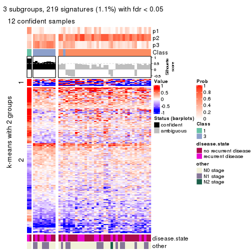
get_signatures(res, k = 4, scale_rows = FALSE)
get_signatures(res, k = 5, scale_rows = FALSE)
get_signatures(res, k = 6, scale_rows = FALSE)
Compare the overlap of signatures from different k:
compare_signatures(res)
get_signature() returns a data frame invisibly. TO get the list of signatures, the function
call should be assigned to a variable explicitly. In following code, if plot argument is set
to FALSE, no heatmap is plotted while only the differential analysis is performed.
# code only for demonstration
tb = get_signature(res, k = ..., plot = FALSE)
An example of the output of tb is:
#> which_row fdr mean_1 mean_2 scaled_mean_1 scaled_mean_2 km
#> 1 38 0.042760348 8.373488 9.131774 -0.5533452 0.5164555 1
#> 2 40 0.018707592 7.106213 8.469186 -0.6173731 0.5762149 1
#> 3 55 0.019134737 10.221463 11.207825 -0.6159697 0.5749050 1
#> 4 59 0.006059896 5.921854 7.869574 -0.6899429 0.6439467 1
#> 5 60 0.018055526 8.928898 10.211722 -0.6204761 0.5791110 1
#> 6 98 0.009384629 15.714769 14.887706 0.6635654 -0.6193277 2
...
The columns in tb are:
which_row: row indices corresponding to the input matrix.fdr: FDR for the differential test. mean_x: The mean value in group x.scaled_mean_x: The mean value in group x after rows are scaled.km: Row groups if k-means clustering is applied to rows.UMAP plot which shows how samples are separated.
dimension_reduction(res, k = 2, method = "UMAP")

dimension_reduction(res, k = 3, method = "UMAP")
dimension_reduction(res, k = 4, method = "UMAP")
dimension_reduction(res, k = 5, method = "UMAP")
dimension_reduction(res, k = 6, method = "UMAP")
Following heatmap shows how subgroups are split when increasing k:
collect_classes(res)
Test correlation between subgroups and known annotations. If the known annotation is numeric, one-way ANOVA test is applied, and if the known annotation is discrete, chi-squared contingency table test is applied.
test_to_known_factors(res)
#> n disease.state(p) other(p) k
#> MAD:mclust 51 1.000 0.567 2
#> MAD:mclust 12 1.000 0.600 3
#> MAD:mclust 23 0.507 0.572 4
#> MAD:mclust 12 0.513 0.368 5
#> MAD:mclust 9 1.000 0.777 6
If matrix rows can be associated to genes, consider to use GO_Enrichment(res,
...) to perform function enrichment for the signature genes.
The object with results only for a single top-value method and a single partition method can be extracted as:
res = res_list["MAD", "NMF"]
# you can also extract it by
# res = res_list["MAD:NMF"]
A summary of res and all the functions that can be applied to it:
res
#> A 'ConsensusPartition' object with k = 2, 3, 4, 5, 6.
#> On a matrix with 20180 rows and 51 columns.
#> Top rows (1000, 2000, 3000, 4000, 5000) are extracted by 'MAD' method.
#> Subgroups are detected by 'NMF' method.
#> Performed in total 1250 partitions by row resampling.
#> Best k for subgroups seems to be 2.
#>
#> Following methods can be applied to this 'ConsensusPartition' object:
#> [1] "cola_report" "collect_classes" "collect_plots"
#> [4] "collect_stats" "colnames" "compare_signatures"
#> [7] "consensus_heatmap" "dimension_reduction" "functional_enrichment"
#> [10] "get_anno_col" "get_anno" "get_classes"
#> [13] "get_consensus" "get_matrix" "get_membership"
#> [16] "get_param" "get_signatures" "get_stats"
#> [19] "is_best_k" "is_stable_k" "membership_heatmap"
#> [22] "ncol" "nrow" "plot_ecdf"
#> [25] "rownames" "select_partition_number" "show"
#> [28] "suggest_best_k" "test_to_known_factors"
collect_plots() function collects all the plots made from res for all k (number of partitions)
into one single page to provide an easy and fast comparison between different k.
collect_plots(res)
The plots are:
k and the heatmap of
predicted classes for each k.k.k.k.All the plots in panels can be made by individual functions and they are plotted later in this section.
select_partition_number() produces several plots showing different
statistics for choosing “optimized” k. There are following statistics:
k;k, the area increased is defined as \(A_k - A_{k-1}\).The detailed explanations of these statistics can be found in the cola vignette.
Generally speaking, lower PAC score, higher mean silhouette score or higher
concordance corresponds to better partition. Rand index and Jaccard index
measure how similar the current partition is compared to partition with k-1.
If they are too similar, we won't accept k is better than k-1.
select_partition_number(res)
The numeric values for all these statistics can be obtained by get_stats().
get_stats(res)
#> k 1-PAC mean_silhouette concordance area_increased Rand Jaccard
#> 2 2 0.0257 0.682 0.765 0.4862 0.490 0.490
#> 3 3 0.0860 0.499 0.668 0.3619 0.692 0.450
#> 4 4 0.2207 0.399 0.609 0.1235 0.824 0.520
#> 5 5 0.2660 0.298 0.530 0.0668 0.891 0.599
#> 6 6 0.3617 0.233 0.470 0.0434 0.896 0.549
suggest_best_k() suggests the best \(k\) based on these statistics. The rules are as follows:
NA.suggest_best_k(res)
#> [1] 2
Following shows the table of the partitions (You need to click the show/hide
code output link to see it). The membership matrix (columns with name p*)
is inferred by
clue::cl_consensus()
function with the SE method. Basically the value in the membership matrix
represents the probability to belong to a certain group. The finall class
label for an item is determined with the group with highest probability it
belongs to.
In get_classes() function, the entropy is calculated from the membership
matrix and the silhouette score is calculated from the consensus matrix.
cbind(get_classes(res, k = 2), get_membership(res, k = 2))
#> class entropy silhouette p1 p2
#> GSM115459 1 0.814 0.776 0.748 0.252
#> GSM115460 2 0.518 0.779 0.116 0.884
#> GSM115461 2 0.552 0.779 0.128 0.872
#> GSM115462 2 0.358 0.775 0.068 0.932
#> GSM115463 1 0.662 0.789 0.828 0.172
#> GSM115464 2 0.995 -0.214 0.460 0.540
#> GSM115465 2 0.634 0.770 0.160 0.840
#> GSM115466 2 0.788 0.759 0.236 0.764
#> GSM115467 1 0.921 0.767 0.664 0.336
#> GSM115468 1 0.866 0.763 0.712 0.288
#> GSM115469 2 0.850 0.701 0.276 0.724
#> GSM115470 2 0.680 0.767 0.180 0.820
#> GSM115471 2 0.529 0.779 0.120 0.880
#> GSM115472 1 0.971 0.526 0.600 0.400
#> GSM115473 1 0.992 0.585 0.552 0.448
#> GSM115474 1 0.991 0.618 0.556 0.444
#> GSM115475 2 0.975 0.220 0.408 0.592
#> GSM115476 1 0.242 0.757 0.960 0.040
#> GSM115477 2 0.563 0.777 0.132 0.868
#> GSM115478 2 0.745 0.741 0.212 0.788
#> GSM115479 1 0.358 0.757 0.932 0.068
#> GSM115480 2 0.932 0.606 0.348 0.652
#> GSM115481 2 0.997 -0.102 0.468 0.532
#> GSM115482 1 0.671 0.765 0.824 0.176
#> GSM115483 2 0.745 0.723 0.212 0.788
#> GSM115484 2 0.891 0.640 0.308 0.692
#> GSM115485 2 0.518 0.772 0.116 0.884
#> GSM115486 2 0.973 0.286 0.404 0.596
#> GSM115487 1 0.913 0.676 0.672 0.328
#> GSM115488 2 0.552 0.778 0.128 0.872
#> GSM115489 1 0.644 0.782 0.836 0.164
#> GSM115490 2 0.781 0.722 0.232 0.768
#> GSM115491 1 0.753 0.766 0.784 0.216
#> GSM115492 2 0.644 0.777 0.164 0.836
#> GSM115493 1 0.952 0.670 0.628 0.372
#> GSM115494 1 0.295 0.759 0.948 0.052
#> GSM115495 2 0.680 0.759 0.180 0.820
#> GSM115496 1 0.671 0.783 0.824 0.176
#> GSM115497 1 0.895 0.720 0.688 0.312
#> GSM115498 1 0.995 0.594 0.540 0.460
#> GSM115499 1 0.909 0.755 0.676 0.324
#> GSM115500 1 0.358 0.756 0.932 0.068
#> GSM115501 1 0.781 0.703 0.768 0.232
#> GSM115502 1 0.814 0.766 0.748 0.252
#> GSM115503 2 0.644 0.760 0.164 0.836
#> GSM115504 2 0.311 0.767 0.056 0.944
#> GSM115505 2 0.327 0.767 0.060 0.940
#> GSM115506 1 0.552 0.757 0.872 0.128
#> GSM115507 2 0.730 0.734 0.204 0.796
#> GSM115509 1 0.827 0.765 0.740 0.260
#> GSM115508 1 0.595 0.784 0.856 0.144
cbind(get_classes(res, k = 3), get_membership(res, k = 3))
#> class entropy silhouette p1 p2 p3
#> GSM115459 3 0.800 0.30814 0.304 0.088 0.608
#> GSM115460 2 0.765 0.60336 0.080 0.644 0.276
#> GSM115461 2 0.780 0.59592 0.088 0.636 0.276
#> GSM115462 2 0.541 0.63475 0.012 0.764 0.224
#> GSM115463 1 0.600 0.63376 0.772 0.052 0.176
#> GSM115464 3 0.907 0.40135 0.204 0.244 0.552
#> GSM115465 3 0.921 -0.16197 0.152 0.396 0.452
#> GSM115466 2 0.776 0.65442 0.200 0.672 0.128
#> GSM115467 1 0.886 0.55124 0.576 0.192 0.232
#> GSM115468 1 0.816 0.56931 0.628 0.124 0.248
#> GSM115469 2 0.896 0.37514 0.164 0.548 0.288
#> GSM115470 2 0.512 0.67878 0.060 0.832 0.108
#> GSM115471 2 0.715 0.66749 0.076 0.696 0.228
#> GSM115472 3 0.883 -0.00377 0.420 0.116 0.464
#> GSM115473 3 0.464 0.62110 0.060 0.084 0.856
#> GSM115474 3 0.541 0.60195 0.076 0.104 0.820
#> GSM115475 3 0.657 0.59209 0.140 0.104 0.756
#> GSM115476 1 0.517 0.61243 0.824 0.048 0.128
#> GSM115477 3 0.771 0.08892 0.048 0.424 0.528
#> GSM115478 2 0.631 0.66371 0.128 0.772 0.100
#> GSM115479 1 0.362 0.64968 0.896 0.072 0.032
#> GSM115480 2 0.787 0.57380 0.236 0.652 0.112
#> GSM115481 3 0.477 0.61342 0.100 0.052 0.848
#> GSM115482 1 0.668 0.62923 0.708 0.244 0.048
#> GSM115483 2 0.852 0.47078 0.164 0.608 0.228
#> GSM115484 2 0.643 0.65862 0.156 0.760 0.084
#> GSM115485 3 0.468 0.59733 0.040 0.112 0.848
#> GSM115486 3 0.663 0.57972 0.060 0.212 0.728
#> GSM115487 3 0.690 0.56378 0.168 0.100 0.732
#> GSM115488 2 0.693 0.67434 0.096 0.728 0.176
#> GSM115489 1 0.727 0.51479 0.644 0.052 0.304
#> GSM115490 2 0.898 0.16568 0.140 0.508 0.352
#> GSM115491 1 0.761 0.59839 0.688 0.144 0.168
#> GSM115492 3 0.802 0.46765 0.108 0.260 0.632
#> GSM115493 1 0.892 0.51024 0.568 0.188 0.244
#> GSM115494 1 0.326 0.64587 0.912 0.040 0.048
#> GSM115495 2 0.574 0.67265 0.096 0.804 0.100
#> GSM115496 1 0.624 0.64102 0.760 0.060 0.180
#> GSM115497 3 0.733 0.56930 0.132 0.160 0.708
#> GSM115498 3 0.771 0.53165 0.176 0.144 0.680
#> GSM115499 3 0.900 -0.01362 0.376 0.136 0.488
#> GSM115500 1 0.778 0.09133 0.576 0.060 0.364
#> GSM115501 1 0.725 0.57125 0.676 0.256 0.068
#> GSM115502 1 0.911 0.48265 0.540 0.188 0.272
#> GSM115503 2 0.773 0.38910 0.056 0.572 0.372
#> GSM115504 3 0.529 0.54237 0.008 0.228 0.764
#> GSM115505 2 0.568 0.65802 0.016 0.748 0.236
#> GSM115506 1 0.764 0.42872 0.624 0.308 0.068
#> GSM115507 2 0.722 0.62313 0.144 0.716 0.140
#> GSM115509 3 0.873 0.47170 0.208 0.200 0.592
#> GSM115508 3 0.840 0.17466 0.436 0.084 0.480
cbind(get_classes(res, k = 4), get_membership(res, k = 4))
#> class entropy silhouette p1 p2 p3 p4
#> GSM115459 3 0.559 0.561250 0.092 0.016 0.752 0.140
#> GSM115460 4 0.674 -0.216218 0.048 0.448 0.020 0.484
#> GSM115461 4 0.668 -0.231497 0.056 0.456 0.012 0.476
#> GSM115462 2 0.597 0.552502 0.028 0.708 0.052 0.212
#> GSM115463 1 0.568 0.607961 0.688 0.028 0.020 0.264
#> GSM115464 3 0.894 0.309445 0.152 0.112 0.468 0.268
#> GSM115465 4 0.324 0.540386 0.084 0.016 0.016 0.884
#> GSM115466 2 0.857 0.373704 0.144 0.500 0.084 0.272
#> GSM115467 1 0.765 0.555749 0.600 0.076 0.092 0.232
#> GSM115468 3 0.759 0.133613 0.296 0.112 0.556 0.036
#> GSM115469 3 0.786 0.434334 0.108 0.216 0.592 0.084
#> GSM115470 2 0.567 0.577906 0.012 0.744 0.124 0.120
#> GSM115471 2 0.689 0.508564 0.060 0.632 0.048 0.260
#> GSM115472 4 0.776 0.254358 0.272 0.052 0.112 0.564
#> GSM115473 3 0.665 0.224868 0.028 0.040 0.560 0.372
#> GSM115474 3 0.693 0.201475 0.056 0.024 0.508 0.412
#> GSM115475 4 0.398 0.534679 0.064 0.028 0.048 0.860
#> GSM115476 1 0.679 0.124846 0.584 0.068 0.328 0.020
#> GSM115477 4 0.598 0.476681 0.032 0.188 0.060 0.720
#> GSM115478 2 0.594 0.602339 0.092 0.748 0.116 0.044
#> GSM115479 1 0.442 0.598369 0.840 0.064 0.040 0.056
#> GSM115480 2 0.740 0.545985 0.160 0.636 0.148 0.056
#> GSM115481 4 0.556 0.486542 0.080 0.028 0.128 0.764
#> GSM115482 1 0.694 0.528993 0.648 0.228 0.068 0.056
#> GSM115483 2 0.845 0.190841 0.140 0.484 0.308 0.068
#> GSM115484 2 0.576 0.609901 0.100 0.760 0.100 0.040
#> GSM115485 4 0.544 0.465279 0.016 0.044 0.204 0.736
#> GSM115486 3 0.657 0.516908 0.028 0.152 0.688 0.132
#> GSM115487 4 0.808 0.252245 0.096 0.080 0.288 0.536
#> GSM115488 2 0.661 0.554677 0.064 0.688 0.060 0.188
#> GSM115489 1 0.820 0.439228 0.532 0.048 0.204 0.216
#> GSM115490 2 0.898 -0.022706 0.140 0.396 0.360 0.104
#> GSM115491 1 0.530 0.610870 0.700 0.016 0.016 0.268
#> GSM115492 4 0.760 0.431883 0.064 0.144 0.172 0.620
#> GSM115493 1 0.763 0.431799 0.496 0.076 0.048 0.380
#> GSM115494 1 0.440 0.573763 0.836 0.028 0.088 0.048
#> GSM115495 2 0.481 0.609414 0.072 0.820 0.060 0.048
#> GSM115496 1 0.672 0.605486 0.644 0.044 0.056 0.256
#> GSM115497 3 0.773 0.461983 0.100 0.112 0.620 0.168
#> GSM115498 4 0.606 0.499284 0.096 0.080 0.076 0.748
#> GSM115499 4 0.878 -0.110663 0.264 0.044 0.300 0.392
#> GSM115500 3 0.691 0.448543 0.316 0.044 0.592 0.048
#> GSM115501 1 0.721 0.518057 0.616 0.236 0.032 0.116
#> GSM115502 3 0.877 -0.000941 0.356 0.120 0.424 0.100
#> GSM115503 2 0.843 0.302087 0.056 0.496 0.176 0.272
#> GSM115504 4 0.727 0.324063 0.016 0.120 0.304 0.560
#> GSM115505 2 0.655 0.500341 0.008 0.628 0.096 0.268
#> GSM115506 1 0.787 0.339420 0.536 0.300 0.116 0.048
#> GSM115507 2 0.809 0.408018 0.212 0.560 0.168 0.060
#> GSM115509 3 0.457 0.564409 0.032 0.116 0.820 0.032
#> GSM115508 3 0.688 0.530069 0.168 0.052 0.676 0.104
cbind(get_classes(res, k = 5), get_membership(res, k = 5))
#> class entropy silhouette p1 p2 p3 p4 p5
#> GSM115459 3 0.559 0.43990 0.056 0.036 0.744 0.112 0.052
#> GSM115460 2 0.644 0.33470 0.020 0.532 0.012 0.356 0.080
#> GSM115461 2 0.615 0.34592 0.016 0.544 0.004 0.356 0.080
#> GSM115462 2 0.760 0.14312 0.004 0.420 0.064 0.160 0.352
#> GSM115463 1 0.514 0.45501 0.712 0.032 0.012 0.220 0.024
#> GSM115464 3 0.766 0.37784 0.028 0.116 0.564 0.164 0.128
#> GSM115465 4 0.398 0.52346 0.052 0.048 0.004 0.836 0.060
#> GSM115466 2 0.874 0.21391 0.144 0.412 0.048 0.268 0.128
#> GSM115467 1 0.876 0.27232 0.352 0.104 0.036 0.208 0.300
#> GSM115468 3 0.755 0.31093 0.148 0.108 0.572 0.024 0.148
#> GSM115469 3 0.707 0.36218 0.124 0.236 0.576 0.036 0.028
#> GSM115470 2 0.689 0.29354 0.012 0.572 0.064 0.084 0.268
#> GSM115471 2 0.600 0.48424 0.024 0.640 0.016 0.256 0.064
#> GSM115472 4 0.804 0.26435 0.180 0.076 0.116 0.544 0.084
#> GSM115473 3 0.801 0.00142 0.016 0.048 0.376 0.312 0.248
#> GSM115474 3 0.757 0.31551 0.032 0.080 0.484 0.332 0.072
#> GSM115475 4 0.449 0.53943 0.048 0.024 0.024 0.808 0.096
#> GSM115476 1 0.650 0.00808 0.548 0.028 0.340 0.016 0.068
#> GSM115477 4 0.696 0.24766 0.004 0.140 0.028 0.472 0.356
#> GSM115478 2 0.617 0.30888 0.048 0.696 0.104 0.028 0.124
#> GSM115479 1 0.485 0.45936 0.792 0.024 0.064 0.040 0.080
#> GSM115480 5 0.850 -0.09734 0.128 0.348 0.124 0.032 0.368
#> GSM115481 4 0.604 0.47892 0.028 0.016 0.120 0.680 0.156
#> GSM115482 1 0.680 0.22568 0.452 0.076 0.032 0.016 0.424
#> GSM115483 5 0.857 0.28095 0.072 0.216 0.252 0.048 0.412
#> GSM115484 2 0.622 0.36267 0.092 0.684 0.048 0.024 0.152
#> GSM115485 4 0.599 0.50464 0.008 0.080 0.164 0.688 0.060
#> GSM115486 3 0.600 0.40697 0.008 0.092 0.700 0.116 0.084
#> GSM115487 4 0.900 0.06932 0.096 0.076 0.180 0.384 0.264
#> GSM115488 2 0.639 0.46876 0.040 0.668 0.048 0.180 0.064
#> GSM115489 1 0.829 0.21357 0.472 0.052 0.216 0.196 0.064
#> GSM115490 5 0.866 0.30069 0.088 0.140 0.232 0.084 0.456
#> GSM115491 1 0.784 0.32065 0.420 0.068 0.008 0.320 0.184
#> GSM115492 4 0.761 0.35067 0.032 0.280 0.064 0.516 0.108
#> GSM115493 1 0.817 0.25296 0.372 0.132 0.012 0.360 0.124
#> GSM115494 1 0.344 0.45359 0.872 0.040 0.044 0.024 0.020
#> GSM115495 2 0.695 0.30771 0.036 0.616 0.084 0.060 0.204
#> GSM115496 1 0.861 0.34303 0.388 0.068 0.048 0.232 0.264
#> GSM115497 5 0.745 -0.07900 0.036 0.036 0.392 0.100 0.436
#> GSM115498 4 0.673 0.44876 0.032 0.140 0.060 0.652 0.116
#> GSM115499 3 0.916 0.06405 0.264 0.132 0.300 0.256 0.048
#> GSM115500 1 0.817 -0.17594 0.352 0.016 0.336 0.064 0.232
#> GSM115501 1 0.690 0.42397 0.612 0.200 0.016 0.084 0.088
#> GSM115502 3 0.824 0.32242 0.232 0.112 0.500 0.064 0.092
#> GSM115503 5 0.758 0.13777 0.012 0.228 0.088 0.144 0.528
#> GSM115504 4 0.731 0.41174 0.000 0.200 0.176 0.536 0.088
#> GSM115505 2 0.465 0.49131 0.004 0.764 0.048 0.164 0.020
#> GSM115506 1 0.817 0.27459 0.488 0.104 0.096 0.052 0.260
#> GSM115507 2 0.945 0.09233 0.168 0.352 0.172 0.092 0.216
#> GSM115509 3 0.492 0.42759 0.040 0.096 0.784 0.020 0.060
#> GSM115508 3 0.748 0.41709 0.180 0.076 0.592 0.092 0.060
cbind(get_classes(res, k = 6), get_membership(res, k = 6))
#> class entropy silhouette p1 p2 p3 p4 p5 p6
#> GSM115459 1 0.685 0.3635 0.624 0.040 0.100 0.092 0.112 0.032
#> GSM115460 2 0.608 0.3065 0.012 0.516 0.116 0.336 0.000 0.020
#> GSM115461 2 0.621 0.2958 0.012 0.500 0.112 0.348 0.000 0.028
#> GSM115462 3 0.791 -0.0603 0.068 0.304 0.412 0.136 0.068 0.012
#> GSM115463 6 0.516 0.4369 0.020 0.040 0.020 0.232 0.008 0.680
#> GSM115464 1 0.811 0.2939 0.492 0.140 0.072 0.132 0.136 0.028
#> GSM115465 4 0.440 0.4338 0.004 0.072 0.060 0.796 0.024 0.044
#> GSM115466 2 0.894 0.1892 0.088 0.368 0.064 0.180 0.080 0.220
#> GSM115467 5 0.928 0.1503 0.036 0.116 0.196 0.192 0.296 0.164
#> GSM115468 1 0.766 0.1929 0.488 0.100 0.068 0.020 0.256 0.068
#> GSM115469 1 0.736 0.3127 0.536 0.240 0.064 0.040 0.052 0.068
#> GSM115470 2 0.751 0.2285 0.052 0.500 0.220 0.116 0.108 0.004
#> GSM115471 2 0.633 0.4169 0.028 0.592 0.084 0.252 0.020 0.024
#> GSM115472 4 0.918 0.1164 0.136 0.112 0.076 0.380 0.156 0.140
#> GSM115473 1 0.812 -0.1388 0.324 0.040 0.300 0.256 0.056 0.024
#> GSM115474 1 0.723 0.2914 0.500 0.068 0.028 0.300 0.040 0.064
#> GSM115475 4 0.487 0.4404 0.020 0.020 0.100 0.768 0.052 0.040
#> GSM115476 6 0.726 0.0584 0.336 0.040 0.028 0.012 0.156 0.428
#> GSM115477 4 0.686 0.1109 0.016 0.080 0.348 0.452 0.104 0.000
#> GSM115478 2 0.735 0.2021 0.056 0.528 0.068 0.020 0.240 0.088
#> GSM115479 6 0.478 0.4526 0.024 0.020 0.104 0.052 0.028 0.772
#> GSM115480 5 0.691 0.2504 0.112 0.116 0.120 0.012 0.600 0.040
#> GSM115481 4 0.656 0.3716 0.096 0.008 0.120 0.632 0.100 0.044
#> GSM115482 5 0.744 0.1334 0.012 0.060 0.320 0.020 0.416 0.172
#> GSM115483 3 0.617 0.3618 0.140 0.100 0.664 0.028 0.028 0.040
#> GSM115484 2 0.761 0.2327 0.076 0.540 0.128 0.016 0.140 0.100
#> GSM115485 4 0.630 0.4091 0.152 0.068 0.104 0.640 0.008 0.028
#> GSM115486 1 0.601 0.3429 0.668 0.080 0.128 0.096 0.020 0.008
#> GSM115487 3 0.818 0.1021 0.124 0.016 0.368 0.312 0.044 0.136
#> GSM115488 2 0.644 0.4008 0.080 0.612 0.004 0.164 0.120 0.020
#> GSM115489 6 0.799 0.2489 0.236 0.040 0.032 0.172 0.072 0.448
#> GSM115490 3 0.463 0.3758 0.100 0.036 0.776 0.056 0.004 0.028
#> GSM115491 5 0.759 0.0703 0.012 0.072 0.008 0.292 0.348 0.268
#> GSM115492 4 0.727 0.2716 0.092 0.228 0.104 0.528 0.012 0.036
#> GSM115493 4 0.866 -0.1003 0.044 0.136 0.028 0.304 0.200 0.288
#> GSM115494 6 0.357 0.4549 0.024 0.012 0.020 0.044 0.048 0.852
#> GSM115495 2 0.780 0.1519 0.068 0.436 0.256 0.024 0.188 0.028
#> GSM115496 5 0.791 0.1569 0.092 0.052 0.008 0.192 0.444 0.212
#> GSM115497 5 0.876 -0.0887 0.276 0.048 0.252 0.104 0.280 0.040
#> GSM115498 4 0.738 0.3350 0.072 0.180 0.020 0.552 0.116 0.060
#> GSM115499 1 0.789 0.0276 0.376 0.160 0.000 0.196 0.024 0.244
#> GSM115500 3 0.838 0.0499 0.272 0.012 0.316 0.040 0.128 0.232
#> GSM115501 6 0.733 0.3628 0.036 0.204 0.100 0.068 0.040 0.552
#> GSM115502 1 0.761 0.2534 0.536 0.092 0.044 0.036 0.108 0.184
#> GSM115503 5 0.723 0.2303 0.056 0.092 0.160 0.096 0.576 0.020
#> GSM115504 4 0.751 0.2917 0.172 0.184 0.100 0.504 0.024 0.016
#> GSM115505 2 0.563 0.4051 0.072 0.672 0.012 0.180 0.060 0.004
#> GSM115506 3 0.846 -0.0812 0.068 0.096 0.344 0.016 0.192 0.284
#> GSM115507 5 0.934 0.1350 0.136 0.192 0.208 0.036 0.280 0.148
#> GSM115509 1 0.523 0.3830 0.736 0.076 0.116 0.032 0.016 0.024
#> GSM115508 1 0.765 0.2401 0.520 0.048 0.096 0.072 0.044 0.220
Heatmaps for the consensus matrix. It visualizes the probability of two samples to be in a same group.
consensus_heatmap(res, k = 2)
consensus_heatmap(res, k = 3)
consensus_heatmap(res, k = 4)

consensus_heatmap(res, k = 5)
consensus_heatmap(res, k = 6)
Heatmaps for the membership of samples in all partitions to see how consistent they are:
membership_heatmap(res, k = 2)
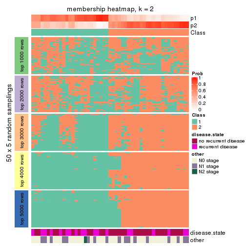
membership_heatmap(res, k = 3)
membership_heatmap(res, k = 4)
membership_heatmap(res, k = 5)
membership_heatmap(res, k = 6)
As soon as we have had the classes for columns, we can look for signatures which are significantly different between classes which can be candidate marks for certain classes. Following are the heatmaps for signatures.
Signature heatmaps where rows are scaled:
get_signatures(res, k = 2)
get_signatures(res, k = 3)
get_signatures(res, k = 4)
get_signatures(res, k = 5)

get_signatures(res, k = 6)

Signature heatmaps where rows are not scaled:
get_signatures(res, k = 2, scale_rows = FALSE)
get_signatures(res, k = 3, scale_rows = FALSE)
get_signatures(res, k = 4, scale_rows = FALSE)
get_signatures(res, k = 5, scale_rows = FALSE)

get_signatures(res, k = 6, scale_rows = FALSE)

Compare the overlap of signatures from different k:
compare_signatures(res)
get_signature() returns a data frame invisibly. TO get the list of signatures, the function
call should be assigned to a variable explicitly. In following code, if plot argument is set
to FALSE, no heatmap is plotted while only the differential analysis is performed.
# code only for demonstration
tb = get_signature(res, k = ..., plot = FALSE)
An example of the output of tb is:
#> which_row fdr mean_1 mean_2 scaled_mean_1 scaled_mean_2 km
#> 1 38 0.042760348 8.373488 9.131774 -0.5533452 0.5164555 1
#> 2 40 0.018707592 7.106213 8.469186 -0.6173731 0.5762149 1
#> 3 55 0.019134737 10.221463 11.207825 -0.6159697 0.5749050 1
#> 4 59 0.006059896 5.921854 7.869574 -0.6899429 0.6439467 1
#> 5 60 0.018055526 8.928898 10.211722 -0.6204761 0.5791110 1
#> 6 98 0.009384629 15.714769 14.887706 0.6635654 -0.6193277 2
...
The columns in tb are:
which_row: row indices corresponding to the input matrix.fdr: FDR for the differential test. mean_x: The mean value in group x.scaled_mean_x: The mean value in group x after rows are scaled.km: Row groups if k-means clustering is applied to rows.UMAP plot which shows how samples are separated.
dimension_reduction(res, k = 2, method = "UMAP")
dimension_reduction(res, k = 3, method = "UMAP")
dimension_reduction(res, k = 4, method = "UMAP")
dimension_reduction(res, k = 5, method = "UMAP")
dimension_reduction(res, k = 6, method = "UMAP")
Following heatmap shows how subgroups are split when increasing k:
collect_classes(res)
Test correlation between subgroups and known annotations. If the known annotation is numeric, one-way ANOVA test is applied, and if the known annotation is discrete, chi-squared contingency table test is applied.
test_to_known_factors(res)
#> n disease.state(p) other(p) k
#> MAD:NMF 47 0.154 0.623 2
#> MAD:NMF 35 0.602 0.471 3
#> MAD:NMF 23 0.405 0.192 4
#> MAD:NMF 3 NA NA 5
#> MAD:NMF 0 NA NA 6
If matrix rows can be associated to genes, consider to use GO_Enrichment(res,
...) to perform function enrichment for the signature genes.
The object with results only for a single top-value method and a single partition method can be extracted as:
res = res_list["ATC", "hclust"]
# you can also extract it by
# res = res_list["ATC:hclust"]
A summary of res and all the functions that can be applied to it:
res
#> A 'ConsensusPartition' object with k = 2, 3, 4, 5, 6.
#> On a matrix with 20180 rows and 51 columns.
#> Top rows (1000, 2000, 3000, 4000, 5000) are extracted by 'ATC' method.
#> Subgroups are detected by 'hclust' method.
#> Performed in total 1250 partitions by row resampling.
#> Best k for subgroups seems to be 2.
#>
#> Following methods can be applied to this 'ConsensusPartition' object:
#> [1] "cola_report" "collect_classes" "collect_plots"
#> [4] "collect_stats" "colnames" "compare_signatures"
#> [7] "consensus_heatmap" "dimension_reduction" "functional_enrichment"
#> [10] "get_anno_col" "get_anno" "get_classes"
#> [13] "get_consensus" "get_matrix" "get_membership"
#> [16] "get_param" "get_signatures" "get_stats"
#> [19] "is_best_k" "is_stable_k" "membership_heatmap"
#> [22] "ncol" "nrow" "plot_ecdf"
#> [25] "rownames" "select_partition_number" "show"
#> [28] "suggest_best_k" "test_to_known_factors"
collect_plots() function collects all the plots made from res for all k (number of partitions)
into one single page to provide an easy and fast comparison between different k.
collect_plots(res)
The plots are:
k and the heatmap of
predicted classes for each k.k.k.k.All the plots in panels can be made by individual functions and they are plotted later in this section.
select_partition_number() produces several plots showing different
statistics for choosing “optimized” k. There are following statistics:
k;k, the area increased is defined as \(A_k - A_{k-1}\).The detailed explanations of these statistics can be found in the cola vignette.
Generally speaking, lower PAC score, higher mean silhouette score or higher
concordance corresponds to better partition. Rand index and Jaccard index
measure how similar the current partition is compared to partition with k-1.
If they are too similar, we won't accept k is better than k-1.
select_partition_number(res)
The numeric values for all these statistics can be obtained by get_stats().
get_stats(res)
#> k 1-PAC mean_silhouette concordance area_increased Rand Jaccard
#> 2 2 0.535 0.876 0.919 0.4777 0.495 0.495
#> 3 3 0.537 0.863 0.882 0.2130 0.912 0.823
#> 4 4 0.514 0.766 0.801 0.1985 0.859 0.653
#> 5 5 0.591 0.715 0.790 0.0613 0.938 0.771
#> 6 6 0.753 0.815 0.876 0.0728 0.960 0.819
suggest_best_k() suggests the best \(k\) based on these statistics. The rules are as follows:
NA.suggest_best_k(res)
#> [1] 2
Following shows the table of the partitions (You need to click the show/hide
code output link to see it). The membership matrix (columns with name p*)
is inferred by
clue::cl_consensus()
function with the SE method. Basically the value in the membership matrix
represents the probability to belong to a certain group. The finall class
label for an item is determined with the group with highest probability it
belongs to.
In get_classes() function, the entropy is calculated from the membership
matrix and the silhouette score is calculated from the consensus matrix.
cbind(get_classes(res, k = 2), get_membership(res, k = 2))
#> class entropy silhouette p1 p2
#> GSM115459 1 0.7219 0.817 0.800 0.200
#> GSM115460 2 0.0000 0.939 0.000 1.000
#> GSM115461 2 0.0000 0.939 0.000 1.000
#> GSM115462 1 0.3879 0.897 0.924 0.076
#> GSM115463 1 0.0000 0.882 1.000 0.000
#> GSM115464 1 0.2948 0.907 0.948 0.052
#> GSM115465 2 0.0672 0.936 0.008 0.992
#> GSM115466 2 0.5737 0.858 0.136 0.864
#> GSM115467 2 0.8713 0.593 0.292 0.708
#> GSM115468 1 0.2948 0.907 0.948 0.052
#> GSM115469 2 0.0000 0.939 0.000 1.000
#> GSM115470 2 0.5737 0.858 0.136 0.864
#> GSM115471 2 0.5294 0.874 0.120 0.880
#> GSM115472 1 0.2948 0.907 0.948 0.052
#> GSM115473 1 0.9000 0.666 0.684 0.316
#> GSM115474 1 0.2948 0.907 0.948 0.052
#> GSM115475 1 0.8861 0.687 0.696 0.304
#> GSM115476 1 0.1414 0.895 0.980 0.020
#> GSM115477 2 0.3114 0.918 0.056 0.944
#> GSM115478 2 0.0000 0.939 0.000 1.000
#> GSM115479 1 0.0000 0.882 1.000 0.000
#> GSM115480 2 0.6148 0.828 0.152 0.848
#> GSM115481 1 0.8861 0.687 0.696 0.304
#> GSM115482 1 0.2948 0.907 0.948 0.052
#> GSM115483 2 0.0000 0.939 0.000 1.000
#> GSM115484 2 0.4815 0.887 0.104 0.896
#> GSM115485 2 0.0000 0.939 0.000 1.000
#> GSM115486 2 0.0000 0.939 0.000 1.000
#> GSM115487 1 0.9000 0.666 0.684 0.316
#> GSM115488 2 0.0000 0.939 0.000 1.000
#> GSM115489 1 0.1184 0.893 0.984 0.016
#> GSM115490 2 0.0000 0.939 0.000 1.000
#> GSM115491 1 0.2948 0.907 0.948 0.052
#> GSM115492 2 0.0000 0.939 0.000 1.000
#> GSM115493 1 0.2948 0.907 0.948 0.052
#> GSM115494 1 0.0000 0.882 1.000 0.000
#> GSM115495 2 0.0000 0.939 0.000 1.000
#> GSM115496 1 0.2948 0.907 0.948 0.052
#> GSM115497 1 0.7219 0.817 0.800 0.200
#> GSM115498 1 0.2043 0.901 0.968 0.032
#> GSM115499 1 0.2948 0.907 0.948 0.052
#> GSM115500 1 0.7219 0.817 0.800 0.200
#> GSM115501 1 0.2423 0.903 0.960 0.040
#> GSM115502 1 0.1414 0.895 0.980 0.020
#> GSM115503 2 0.3114 0.918 0.056 0.944
#> GSM115504 2 0.0000 0.939 0.000 1.000
#> GSM115505 2 0.0000 0.939 0.000 1.000
#> GSM115506 1 0.2948 0.907 0.948 0.052
#> GSM115507 2 0.4815 0.887 0.104 0.896
#> GSM115509 1 0.7219 0.817 0.800 0.200
#> GSM115508 1 0.7219 0.817 0.800 0.200
cbind(get_classes(res, k = 3), get_membership(res, k = 3))
#> class entropy silhouette p1 p2 p3
#> GSM115459 1 0.4351 0.824 0.828 0.004 0.168
#> GSM115460 2 0.2796 0.737 0.000 0.908 0.092
#> GSM115461 2 0.2796 0.737 0.000 0.908 0.092
#> GSM115462 1 0.1753 0.894 0.952 0.048 0.000
#> GSM115463 1 0.1163 0.890 0.972 0.000 0.028
#> GSM115464 1 0.1031 0.908 0.976 0.024 0.000
#> GSM115465 2 0.4636 0.826 0.036 0.848 0.116
#> GSM115466 2 0.4062 0.831 0.164 0.836 0.000
#> GSM115467 2 0.5706 0.628 0.320 0.680 0.000
#> GSM115468 1 0.1031 0.908 0.976 0.024 0.000
#> GSM115469 3 0.3933 1.000 0.028 0.092 0.880
#> GSM115470 2 0.4062 0.831 0.164 0.836 0.000
#> GSM115471 2 0.3816 0.843 0.148 0.852 0.000
#> GSM115472 1 0.1031 0.908 0.976 0.024 0.000
#> GSM115473 1 0.5797 0.697 0.712 0.008 0.280
#> GSM115474 1 0.1031 0.908 0.976 0.024 0.000
#> GSM115475 1 0.5553 0.714 0.724 0.004 0.272
#> GSM115476 1 0.0424 0.902 0.992 0.000 0.008
#> GSM115477 2 0.5010 0.849 0.084 0.840 0.076
#> GSM115478 2 0.4172 0.827 0.028 0.868 0.104
#> GSM115479 1 0.1163 0.890 0.972 0.000 0.028
#> GSM115480 2 0.6054 0.801 0.180 0.768 0.052
#> GSM115481 1 0.5553 0.714 0.724 0.004 0.272
#> GSM115482 1 0.1031 0.908 0.976 0.024 0.000
#> GSM115483 3 0.3933 1.000 0.028 0.092 0.880
#> GSM115484 2 0.3784 0.850 0.132 0.864 0.004
#> GSM115485 3 0.3933 1.000 0.028 0.092 0.880
#> GSM115486 3 0.3933 1.000 0.028 0.092 0.880
#> GSM115487 1 0.5797 0.697 0.712 0.008 0.280
#> GSM115488 2 0.4397 0.822 0.028 0.856 0.116
#> GSM115489 1 0.0592 0.900 0.988 0.000 0.012
#> GSM115490 3 0.3933 1.000 0.028 0.092 0.880
#> GSM115491 1 0.1031 0.908 0.976 0.024 0.000
#> GSM115492 3 0.3933 1.000 0.028 0.092 0.880
#> GSM115493 1 0.1031 0.908 0.976 0.024 0.000
#> GSM115494 1 0.1163 0.890 0.972 0.000 0.028
#> GSM115495 2 0.4172 0.827 0.028 0.868 0.104
#> GSM115496 1 0.1031 0.908 0.976 0.024 0.000
#> GSM115497 1 0.4351 0.824 0.828 0.004 0.168
#> GSM115498 1 0.0237 0.905 0.996 0.000 0.004
#> GSM115499 1 0.1031 0.908 0.976 0.024 0.000
#> GSM115500 1 0.4351 0.824 0.828 0.004 0.168
#> GSM115501 1 0.1315 0.905 0.972 0.020 0.008
#> GSM115502 1 0.0424 0.902 0.992 0.000 0.008
#> GSM115503 2 0.5010 0.849 0.084 0.840 0.076
#> GSM115504 3 0.3933 1.000 0.028 0.092 0.880
#> GSM115505 2 0.4397 0.822 0.028 0.856 0.116
#> GSM115506 1 0.1031 0.908 0.976 0.024 0.000
#> GSM115507 2 0.3784 0.850 0.132 0.864 0.004
#> GSM115509 1 0.4351 0.824 0.828 0.004 0.168
#> GSM115508 1 0.4351 0.824 0.828 0.004 0.168
cbind(get_classes(res, k = 4), get_membership(res, k = 4))
#> class entropy silhouette p1 p2 p3 p4
#> GSM115459 3 0.0000 0.874 0.000 0.000 1.000 0.000
#> GSM115460 2 0.2345 0.745 0.000 0.900 0.000 0.100
#> GSM115461 2 0.2345 0.745 0.000 0.900 0.000 0.100
#> GSM115462 1 0.5678 0.768 0.640 0.044 0.316 0.000
#> GSM115463 1 0.0188 0.584 0.996 0.000 0.000 0.004
#> GSM115464 1 0.5152 0.793 0.664 0.020 0.316 0.000
#> GSM115465 2 0.3443 0.804 0.000 0.848 0.016 0.136
#> GSM115466 2 0.3402 0.824 0.004 0.832 0.164 0.000
#> GSM115467 2 0.5003 0.586 0.016 0.676 0.308 0.000
#> GSM115468 1 0.5152 0.793 0.664 0.020 0.316 0.000
#> GSM115469 4 0.2676 0.901 0.000 0.092 0.012 0.896
#> GSM115470 2 0.3402 0.824 0.004 0.832 0.164 0.000
#> GSM115471 2 0.3208 0.834 0.004 0.848 0.148 0.000
#> GSM115472 1 0.5152 0.793 0.664 0.020 0.316 0.000
#> GSM115473 3 0.2831 0.842 0.000 0.004 0.876 0.120
#> GSM115474 1 0.5152 0.793 0.664 0.020 0.316 0.000
#> GSM115475 3 0.2530 0.851 0.000 0.000 0.888 0.112
#> GSM115476 1 0.5163 0.256 0.516 0.000 0.480 0.004
#> GSM115477 2 0.4118 0.836 0.004 0.836 0.060 0.100
#> GSM115478 2 0.3372 0.831 0.000 0.868 0.036 0.096
#> GSM115479 1 0.0188 0.584 0.996 0.000 0.000 0.004
#> GSM115480 2 0.4720 0.801 0.000 0.768 0.188 0.044
#> GSM115481 3 0.2530 0.851 0.000 0.000 0.888 0.112
#> GSM115482 1 0.5152 0.793 0.664 0.020 0.316 0.000
#> GSM115483 4 0.2676 0.901 0.000 0.092 0.012 0.896
#> GSM115484 2 0.2999 0.842 0.000 0.864 0.132 0.004
#> GSM115485 4 0.5066 0.922 0.000 0.088 0.148 0.764
#> GSM115486 4 0.5066 0.922 0.000 0.088 0.148 0.764
#> GSM115487 3 0.2831 0.842 0.000 0.004 0.876 0.120
#> GSM115488 2 0.3196 0.798 0.000 0.856 0.008 0.136
#> GSM115489 1 0.5080 0.288 0.576 0.000 0.420 0.004
#> GSM115490 4 0.2676 0.901 0.000 0.092 0.012 0.896
#> GSM115491 1 0.5152 0.793 0.664 0.020 0.316 0.000
#> GSM115492 4 0.5066 0.922 0.000 0.088 0.148 0.764
#> GSM115493 1 0.5152 0.793 0.664 0.020 0.316 0.000
#> GSM115494 1 0.0188 0.584 0.996 0.000 0.000 0.004
#> GSM115495 2 0.3372 0.831 0.000 0.868 0.036 0.096
#> GSM115496 1 0.5152 0.793 0.664 0.020 0.316 0.000
#> GSM115497 3 0.0000 0.874 0.000 0.000 1.000 0.000
#> GSM115498 3 0.4608 0.152 0.304 0.000 0.692 0.004
#> GSM115499 1 0.5152 0.793 0.664 0.020 0.316 0.000
#> GSM115500 3 0.0000 0.874 0.000 0.000 1.000 0.000
#> GSM115501 1 0.4175 0.727 0.784 0.016 0.200 0.000
#> GSM115502 1 0.5163 0.256 0.516 0.000 0.480 0.004
#> GSM115503 2 0.4118 0.836 0.004 0.836 0.060 0.100
#> GSM115504 4 0.5066 0.922 0.000 0.088 0.148 0.764
#> GSM115505 2 0.3196 0.798 0.000 0.856 0.008 0.136
#> GSM115506 1 0.5152 0.793 0.664 0.020 0.316 0.000
#> GSM115507 2 0.2999 0.842 0.000 0.864 0.132 0.004
#> GSM115509 3 0.0000 0.874 0.000 0.000 1.000 0.000
#> GSM115508 3 0.0000 0.874 0.000 0.000 1.000 0.000
cbind(get_classes(res, k = 5), get_membership(res, k = 5))
#> class entropy silhouette p1 p2 p3 p4 p5
#> GSM115459 3 0.3534 0.88258 0.256 0.000 0.744 0.000 0.000
#> GSM115460 5 0.7129 0.06430 0.000 0.356 0.248 0.016 0.380
#> GSM115461 5 0.7129 0.06430 0.000 0.356 0.248 0.016 0.380
#> GSM115462 1 0.0703 0.78464 0.976 0.024 0.000 0.000 0.000
#> GSM115463 5 0.4235 0.30123 0.424 0.000 0.000 0.000 0.576
#> GSM115464 1 0.0000 0.81299 1.000 0.000 0.000 0.000 0.000
#> GSM115465 2 0.1444 0.83028 0.012 0.948 0.000 0.040 0.000
#> GSM115466 2 0.3003 0.83935 0.188 0.812 0.000 0.000 0.000
#> GSM115467 2 0.3999 0.60105 0.344 0.656 0.000 0.000 0.000
#> GSM115468 1 0.0000 0.81299 1.000 0.000 0.000 0.000 0.000
#> GSM115469 4 0.1741 0.84921 0.000 0.024 0.000 0.936 0.040
#> GSM115470 2 0.3003 0.83935 0.188 0.812 0.000 0.000 0.000
#> GSM115471 2 0.2852 0.84855 0.172 0.828 0.000 0.000 0.000
#> GSM115472 1 0.0000 0.81299 1.000 0.000 0.000 0.000 0.000
#> GSM115473 3 0.5355 0.85150 0.220 0.000 0.660 0.120 0.000
#> GSM115474 1 0.0000 0.81299 1.000 0.000 0.000 0.000 0.000
#> GSM115475 3 0.5277 0.85983 0.228 0.000 0.664 0.108 0.000
#> GSM115476 1 0.6728 0.03041 0.412 0.000 0.320 0.000 0.268
#> GSM115477 2 0.2719 0.85516 0.068 0.884 0.000 0.048 0.000
#> GSM115478 2 0.0963 0.84334 0.036 0.964 0.000 0.000 0.000
#> GSM115479 5 0.4227 0.30817 0.420 0.000 0.000 0.000 0.580
#> GSM115480 2 0.3003 0.81080 0.188 0.812 0.000 0.000 0.000
#> GSM115481 3 0.5277 0.85983 0.228 0.000 0.664 0.108 0.000
#> GSM115482 1 0.0000 0.81299 1.000 0.000 0.000 0.000 0.000
#> GSM115483 4 0.1741 0.84921 0.000 0.024 0.000 0.936 0.040
#> GSM115484 2 0.2648 0.85750 0.152 0.848 0.000 0.000 0.000
#> GSM115485 4 0.2806 0.89064 0.000 0.004 0.152 0.844 0.000
#> GSM115486 4 0.2806 0.89064 0.000 0.004 0.152 0.844 0.000
#> GSM115487 3 0.5355 0.85150 0.220 0.000 0.660 0.120 0.000
#> GSM115488 2 0.1205 0.82495 0.004 0.956 0.000 0.040 0.000
#> GSM115489 1 0.6820 0.00576 0.352 0.000 0.316 0.000 0.332
#> GSM115490 4 0.1741 0.84921 0.000 0.024 0.000 0.936 0.040
#> GSM115491 1 0.0000 0.81299 1.000 0.000 0.000 0.000 0.000
#> GSM115492 4 0.2806 0.89064 0.000 0.004 0.152 0.844 0.000
#> GSM115493 1 0.0000 0.81299 1.000 0.000 0.000 0.000 0.000
#> GSM115494 5 0.4227 0.30817 0.420 0.000 0.000 0.000 0.580
#> GSM115495 2 0.0963 0.84334 0.036 0.964 0.000 0.000 0.000
#> GSM115496 1 0.0000 0.81299 1.000 0.000 0.000 0.000 0.000
#> GSM115497 3 0.3534 0.88258 0.256 0.000 0.744 0.000 0.000
#> GSM115498 3 0.6296 0.34671 0.408 0.000 0.440 0.000 0.152
#> GSM115499 1 0.0000 0.81299 1.000 0.000 0.000 0.000 0.000
#> GSM115500 3 0.3534 0.88258 0.256 0.000 0.744 0.000 0.000
#> GSM115501 1 0.2280 0.63793 0.880 0.000 0.000 0.000 0.120
#> GSM115502 1 0.6728 0.03041 0.412 0.000 0.320 0.000 0.268
#> GSM115503 2 0.2719 0.85516 0.068 0.884 0.000 0.048 0.000
#> GSM115504 4 0.2806 0.89064 0.000 0.004 0.152 0.844 0.000
#> GSM115505 2 0.1205 0.82495 0.004 0.956 0.000 0.040 0.000
#> GSM115506 1 0.0000 0.81299 1.000 0.000 0.000 0.000 0.000
#> GSM115507 2 0.2648 0.85750 0.152 0.848 0.000 0.000 0.000
#> GSM115509 3 0.3534 0.88258 0.256 0.000 0.744 0.000 0.000
#> GSM115508 3 0.3534 0.88258 0.256 0.000 0.744 0.000 0.000
cbind(get_classes(res, k = 6), get_membership(res, k = 6))
#> class entropy silhouette p1 p2 p3 p4 p5 p6
#> GSM115459 3 0.2320 0.838 0.004 0.000 0.864 0.000 0.00 0.132
#> GSM115460 5 0.0547 1.000 0.000 0.020 0.000 0.000 0.98 0.000
#> GSM115461 5 0.0547 1.000 0.000 0.020 0.000 0.000 0.98 0.000
#> GSM115462 1 0.0777 0.945 0.972 0.024 0.004 0.000 0.00 0.000
#> GSM115463 6 0.2883 0.542 0.212 0.000 0.000 0.000 0.00 0.788
#> GSM115464 1 0.0146 0.976 0.996 0.000 0.004 0.000 0.00 0.000
#> GSM115465 2 0.0520 0.849 0.008 0.984 0.000 0.008 0.00 0.000
#> GSM115466 2 0.2697 0.858 0.188 0.812 0.000 0.000 0.00 0.000
#> GSM115467 2 0.3592 0.674 0.344 0.656 0.000 0.000 0.00 0.000
#> GSM115468 1 0.0146 0.976 0.996 0.000 0.004 0.000 0.00 0.000
#> GSM115469 4 0.1546 0.788 0.000 0.020 0.000 0.944 0.02 0.016
#> GSM115470 2 0.2697 0.858 0.188 0.812 0.000 0.000 0.00 0.000
#> GSM115471 2 0.2562 0.867 0.172 0.828 0.000 0.000 0.00 0.000
#> GSM115472 1 0.0146 0.976 0.996 0.000 0.004 0.000 0.00 0.000
#> GSM115473 3 0.1349 0.794 0.000 0.004 0.940 0.056 0.00 0.000
#> GSM115474 1 0.0146 0.976 0.996 0.000 0.004 0.000 0.00 0.000
#> GSM115475 3 0.1204 0.798 0.000 0.000 0.944 0.056 0.00 0.000
#> GSM115476 6 0.6119 0.452 0.312 0.000 0.324 0.000 0.00 0.364
#> GSM115477 2 0.1779 0.872 0.064 0.920 0.000 0.016 0.00 0.000
#> GSM115478 2 0.0790 0.865 0.032 0.968 0.000 0.000 0.00 0.000
#> GSM115479 6 0.2340 0.519 0.148 0.000 0.000 0.000 0.00 0.852
#> GSM115480 2 0.2664 0.837 0.184 0.816 0.000 0.000 0.00 0.000
#> GSM115481 3 0.1204 0.798 0.000 0.000 0.944 0.056 0.00 0.000
#> GSM115482 1 0.0000 0.973 1.000 0.000 0.000 0.000 0.00 0.000
#> GSM115483 4 0.1546 0.788 0.000 0.020 0.000 0.944 0.02 0.016
#> GSM115484 2 0.2378 0.874 0.152 0.848 0.000 0.000 0.00 0.000
#> GSM115485 4 0.2933 0.848 0.000 0.004 0.200 0.796 0.00 0.000
#> GSM115486 4 0.2933 0.848 0.000 0.004 0.200 0.796 0.00 0.000
#> GSM115487 3 0.1349 0.794 0.000 0.004 0.940 0.056 0.00 0.000
#> GSM115488 2 0.0260 0.843 0.000 0.992 0.000 0.008 0.00 0.000
#> GSM115489 6 0.5651 0.389 0.164 0.000 0.344 0.000 0.00 0.492
#> GSM115490 4 0.1546 0.788 0.000 0.020 0.000 0.944 0.02 0.016
#> GSM115491 1 0.0146 0.976 0.996 0.000 0.004 0.000 0.00 0.000
#> GSM115492 4 0.2933 0.848 0.000 0.004 0.200 0.796 0.00 0.000
#> GSM115493 1 0.0146 0.976 0.996 0.000 0.004 0.000 0.00 0.000
#> GSM115494 6 0.2340 0.519 0.148 0.000 0.000 0.000 0.00 0.852
#> GSM115495 2 0.0790 0.865 0.032 0.968 0.000 0.000 0.00 0.000
#> GSM115496 1 0.0146 0.976 0.996 0.000 0.004 0.000 0.00 0.000
#> GSM115497 3 0.2320 0.838 0.004 0.000 0.864 0.000 0.00 0.132
#> GSM115498 3 0.5173 0.262 0.160 0.000 0.616 0.000 0.00 0.224
#> GSM115499 1 0.0146 0.976 0.996 0.000 0.004 0.000 0.00 0.000
#> GSM115500 3 0.2320 0.838 0.004 0.000 0.864 0.000 0.00 0.132
#> GSM115501 1 0.2482 0.748 0.848 0.000 0.004 0.000 0.00 0.148
#> GSM115502 6 0.6119 0.452 0.312 0.000 0.324 0.000 0.00 0.364
#> GSM115503 2 0.1779 0.872 0.064 0.920 0.000 0.016 0.00 0.000
#> GSM115504 4 0.2933 0.848 0.000 0.004 0.200 0.796 0.00 0.000
#> GSM115505 2 0.0260 0.843 0.000 0.992 0.000 0.008 0.00 0.000
#> GSM115506 1 0.0000 0.973 1.000 0.000 0.000 0.000 0.00 0.000
#> GSM115507 2 0.2378 0.874 0.152 0.848 0.000 0.000 0.00 0.000
#> GSM115509 3 0.2320 0.838 0.004 0.000 0.864 0.000 0.00 0.132
#> GSM115508 3 0.2320 0.838 0.004 0.000 0.864 0.000 0.00 0.132
Heatmaps for the consensus matrix. It visualizes the probability of two samples to be in a same group.
consensus_heatmap(res, k = 2)
consensus_heatmap(res, k = 3)
consensus_heatmap(res, k = 4)
consensus_heatmap(res, k = 5)
consensus_heatmap(res, k = 6)
Heatmaps for the membership of samples in all partitions to see how consistent they are:
membership_heatmap(res, k = 2)
membership_heatmap(res, k = 3)
membership_heatmap(res, k = 4)
membership_heatmap(res, k = 5)
membership_heatmap(res, k = 6)
As soon as we have had the classes for columns, we can look for signatures which are significantly different between classes which can be candidate marks for certain classes. Following are the heatmaps for signatures.
Signature heatmaps where rows are scaled:
get_signatures(res, k = 2)
get_signatures(res, k = 3)
get_signatures(res, k = 4)
get_signatures(res, k = 5)
get_signatures(res, k = 6)
Signature heatmaps where rows are not scaled:
get_signatures(res, k = 2, scale_rows = FALSE)
get_signatures(res, k = 3, scale_rows = FALSE)
get_signatures(res, k = 4, scale_rows = FALSE)
get_signatures(res, k = 5, scale_rows = FALSE)
get_signatures(res, k = 6, scale_rows = FALSE)
Compare the overlap of signatures from different k:
compare_signatures(res)
get_signature() returns a data frame invisibly. TO get the list of signatures, the function
call should be assigned to a variable explicitly. In following code, if plot argument is set
to FALSE, no heatmap is plotted while only the differential analysis is performed.
# code only for demonstration
tb = get_signature(res, k = ..., plot = FALSE)
An example of the output of tb is:
#> which_row fdr mean_1 mean_2 scaled_mean_1 scaled_mean_2 km
#> 1 38 0.042760348 8.373488 9.131774 -0.5533452 0.5164555 1
#> 2 40 0.018707592 7.106213 8.469186 -0.6173731 0.5762149 1
#> 3 55 0.019134737 10.221463 11.207825 -0.6159697 0.5749050 1
#> 4 59 0.006059896 5.921854 7.869574 -0.6899429 0.6439467 1
#> 5 60 0.018055526 8.928898 10.211722 -0.6204761 0.5791110 1
#> 6 98 0.009384629 15.714769 14.887706 0.6635654 -0.6193277 2
...
The columns in tb are:
which_row: row indices corresponding to the input matrix.fdr: FDR for the differential test. mean_x: The mean value in group x.scaled_mean_x: The mean value in group x after rows are scaled.km: Row groups if k-means clustering is applied to rows.UMAP plot which shows how samples are separated.
dimension_reduction(res, k = 2, method = "UMAP")
dimension_reduction(res, k = 3, method = "UMAP")
dimension_reduction(res, k = 4, method = "UMAP")
dimension_reduction(res, k = 5, method = "UMAP")
dimension_reduction(res, k = 6, method = "UMAP")
Following heatmap shows how subgroups are split when increasing k:
collect_classes(res)
Test correlation between subgroups and known annotations. If the known annotation is numeric, one-way ANOVA test is applied, and if the known annotation is discrete, chi-squared contingency table test is applied.
test_to_known_factors(res)
#> n disease.state(p) other(p) k
#> ATC:hclust 51 0.229 0.512 2
#> ATC:hclust 51 0.323 0.588 3
#> ATC:hclust 47 0.568 0.279 4
#> ATC:hclust 42 0.641 0.448 5
#> ATC:hclust 47 0.711 0.512 6
If matrix rows can be associated to genes, consider to use GO_Enrichment(res,
...) to perform function enrichment for the signature genes.
The object with results only for a single top-value method and a single partition method can be extracted as:
res = res_list["ATC", "kmeans"]
# you can also extract it by
# res = res_list["ATC:kmeans"]
A summary of res and all the functions that can be applied to it:
res
#> A 'ConsensusPartition' object with k = 2, 3, 4, 5, 6.
#> On a matrix with 20180 rows and 51 columns.
#> Top rows (1000, 2000, 3000, 4000, 5000) are extracted by 'ATC' method.
#> Subgroups are detected by 'kmeans' method.
#> Performed in total 1250 partitions by row resampling.
#> Best k for subgroups seems to be 6.
#>
#> Following methods can be applied to this 'ConsensusPartition' object:
#> [1] "cola_report" "collect_classes" "collect_plots"
#> [4] "collect_stats" "colnames" "compare_signatures"
#> [7] "consensus_heatmap" "dimension_reduction" "functional_enrichment"
#> [10] "get_anno_col" "get_anno" "get_classes"
#> [13] "get_consensus" "get_matrix" "get_membership"
#> [16] "get_param" "get_signatures" "get_stats"
#> [19] "is_best_k" "is_stable_k" "membership_heatmap"
#> [22] "ncol" "nrow" "plot_ecdf"
#> [25] "rownames" "select_partition_number" "show"
#> [28] "suggest_best_k" "test_to_known_factors"
collect_plots() function collects all the plots made from res for all k (number of partitions)
into one single page to provide an easy and fast comparison between different k.
collect_plots(res)
The plots are:
k and the heatmap of
predicted classes for each k.k.k.k.All the plots in panels can be made by individual functions and they are plotted later in this section.
select_partition_number() produces several plots showing different
statistics for choosing “optimized” k. There are following statistics:
k;k, the area increased is defined as \(A_k - A_{k-1}\).The detailed explanations of these statistics can be found in the cola vignette.
Generally speaking, lower PAC score, higher mean silhouette score or higher
concordance corresponds to better partition. Rand index and Jaccard index
measure how similar the current partition is compared to partition with k-1.
If they are too similar, we won't accept k is better than k-1.
select_partition_number(res)
The numeric values for all these statistics can be obtained by get_stats().
get_stats(res)
#> k 1-PAC mean_silhouette concordance area_increased Rand Jaccard
#> 2 2 0.488 0.815 0.866 0.4918 0.492 0.492
#> 3 3 0.594 0.636 0.777 0.2872 0.878 0.757
#> 4 4 0.656 0.874 0.867 0.1234 0.848 0.624
#> 5 5 0.714 0.613 0.723 0.0639 0.920 0.720
#> 6 6 0.814 0.782 0.875 0.0465 0.889 0.592
suggest_best_k() suggests the best \(k\) based on these statistics. The rules are as follows:
NA.suggest_best_k(res)
#> [1] 6
Following shows the table of the partitions (You need to click the show/hide
code output link to see it). The membership matrix (columns with name p*)
is inferred by
clue::cl_consensus()
function with the SE method. Basically the value in the membership matrix
represents the probability to belong to a certain group. The finall class
label for an item is determined with the group with highest probability it
belongs to.
In get_classes() function, the entropy is calculated from the membership
matrix and the silhouette score is calculated from the consensus matrix.
cbind(get_classes(res, k = 2), get_membership(res, k = 2))
#> class entropy silhouette p1 p2
#> GSM115459 1 0.0376 0.736 0.996 0.004
#> GSM115460 2 0.0376 0.816 0.004 0.996
#> GSM115461 2 0.0376 0.816 0.004 0.996
#> GSM115462 2 0.5629 0.682 0.132 0.868
#> GSM115463 1 0.8443 0.875 0.728 0.272
#> GSM115464 1 0.8443 0.875 0.728 0.272
#> GSM115465 2 0.1414 0.822 0.020 0.980
#> GSM115466 2 0.1414 0.822 0.020 0.980
#> GSM115467 2 0.4161 0.754 0.084 0.916
#> GSM115468 1 0.8443 0.875 0.728 0.272
#> GSM115469 2 0.8661 0.782 0.288 0.712
#> GSM115470 2 0.1414 0.822 0.020 0.980
#> GSM115471 2 0.1414 0.822 0.020 0.980
#> GSM115472 1 0.8443 0.875 0.728 0.272
#> GSM115473 1 0.0000 0.740 1.000 0.000
#> GSM115474 1 0.8443 0.875 0.728 0.272
#> GSM115475 1 0.0376 0.736 0.996 0.004
#> GSM115476 1 0.8443 0.875 0.728 0.272
#> GSM115477 2 0.8386 0.791 0.268 0.732
#> GSM115478 2 0.1414 0.822 0.020 0.980
#> GSM115479 1 0.8443 0.875 0.728 0.272
#> GSM115480 2 0.1414 0.822 0.020 0.980
#> GSM115481 1 0.0000 0.740 1.000 0.000
#> GSM115482 1 0.8443 0.875 0.728 0.272
#> GSM115483 2 0.8661 0.782 0.288 0.712
#> GSM115484 2 0.1414 0.822 0.020 0.980
#> GSM115485 2 0.8661 0.782 0.288 0.712
#> GSM115486 2 0.8661 0.782 0.288 0.712
#> GSM115487 1 0.0376 0.743 0.996 0.004
#> GSM115488 2 0.7376 0.811 0.208 0.792
#> GSM115489 1 0.8443 0.875 0.728 0.272
#> GSM115490 2 0.8661 0.782 0.288 0.712
#> GSM115491 1 0.8443 0.875 0.728 0.272
#> GSM115492 2 0.8661 0.782 0.288 0.712
#> GSM115493 1 0.8443 0.875 0.728 0.272
#> GSM115494 1 0.8443 0.875 0.728 0.272
#> GSM115495 2 0.1414 0.822 0.020 0.980
#> GSM115496 1 0.8443 0.875 0.728 0.272
#> GSM115497 1 0.0000 0.740 1.000 0.000
#> GSM115498 1 0.8443 0.875 0.728 0.272
#> GSM115499 1 0.8443 0.875 0.728 0.272
#> GSM115500 1 0.0376 0.743 0.996 0.004
#> GSM115501 1 0.8443 0.875 0.728 0.272
#> GSM115502 1 0.8443 0.875 0.728 0.272
#> GSM115503 2 0.7453 0.811 0.212 0.788
#> GSM115504 2 0.8661 0.782 0.288 0.712
#> GSM115505 2 0.7376 0.811 0.208 0.792
#> GSM115506 1 0.8443 0.875 0.728 0.272
#> GSM115507 2 0.1414 0.822 0.020 0.980
#> GSM115509 1 0.0376 0.736 0.996 0.004
#> GSM115508 1 0.0376 0.743 0.996 0.004
cbind(get_classes(res, k = 3), get_membership(res, k = 3))
#> class entropy silhouette p1 p2 p3
#> GSM115459 3 0.6308 -0.1020 0.492 0.000 0.508
#> GSM115460 2 0.3551 0.8445 0.000 0.868 0.132
#> GSM115461 2 0.3551 0.8445 0.000 0.868 0.132
#> GSM115462 2 0.3192 0.7790 0.112 0.888 0.000
#> GSM115463 1 0.2165 0.7196 0.936 0.000 0.064
#> GSM115464 1 0.3112 0.7528 0.900 0.096 0.004
#> GSM115465 2 0.0237 0.8909 0.004 0.996 0.000
#> GSM115466 2 0.0237 0.8909 0.004 0.996 0.000
#> GSM115467 2 0.2448 0.8277 0.076 0.924 0.000
#> GSM115468 1 0.2878 0.7524 0.904 0.096 0.000
#> GSM115469 3 0.5138 0.6001 0.000 0.252 0.748
#> GSM115470 2 0.1765 0.8868 0.004 0.956 0.040
#> GSM115471 2 0.0747 0.8864 0.016 0.984 0.000
#> GSM115472 1 0.3112 0.7528 0.900 0.096 0.004
#> GSM115473 1 0.6309 -0.0363 0.504 0.000 0.496
#> GSM115474 1 0.3112 0.7528 0.900 0.096 0.004
#> GSM115475 1 0.6309 -0.0518 0.500 0.000 0.500
#> GSM115476 1 0.0747 0.7323 0.984 0.000 0.016
#> GSM115477 2 0.2356 0.8665 0.000 0.928 0.072
#> GSM115478 2 0.1765 0.8868 0.004 0.956 0.040
#> GSM115479 1 0.2165 0.7196 0.936 0.000 0.064
#> GSM115480 2 0.0475 0.8916 0.004 0.992 0.004
#> GSM115481 1 0.6286 0.0816 0.536 0.000 0.464
#> GSM115482 1 0.3295 0.7497 0.896 0.096 0.008
#> GSM115483 2 0.6252 0.2967 0.000 0.556 0.444
#> GSM115484 2 0.0747 0.8864 0.016 0.984 0.000
#> GSM115485 3 0.4178 0.7253 0.000 0.172 0.828
#> GSM115486 3 0.4178 0.7253 0.000 0.172 0.828
#> GSM115487 1 0.6286 0.0816 0.536 0.000 0.464
#> GSM115488 2 0.1753 0.8829 0.000 0.952 0.048
#> GSM115489 1 0.1411 0.7301 0.964 0.000 0.036
#> GSM115490 2 0.6252 0.2967 0.000 0.556 0.444
#> GSM115491 1 0.2878 0.7524 0.904 0.096 0.000
#> GSM115492 3 0.4178 0.7253 0.000 0.172 0.828
#> GSM115493 1 0.2878 0.7524 0.904 0.096 0.000
#> GSM115494 1 0.2165 0.7196 0.936 0.000 0.064
#> GSM115495 2 0.1765 0.8868 0.004 0.956 0.040
#> GSM115496 1 0.2878 0.7524 0.904 0.096 0.000
#> GSM115497 1 0.6274 0.1050 0.544 0.000 0.456
#> GSM115498 1 0.1031 0.7322 0.976 0.000 0.024
#> GSM115499 1 0.3112 0.7528 0.900 0.096 0.004
#> GSM115500 1 0.6274 0.1050 0.544 0.000 0.456
#> GSM115501 1 0.3295 0.7497 0.896 0.096 0.008
#> GSM115502 1 0.1031 0.7322 0.976 0.000 0.024
#> GSM115503 2 0.0237 0.8913 0.000 0.996 0.004
#> GSM115504 3 0.4178 0.7253 0.000 0.172 0.828
#> GSM115505 2 0.2625 0.8557 0.000 0.916 0.084
#> GSM115506 1 0.3295 0.7497 0.896 0.096 0.008
#> GSM115507 2 0.0747 0.8864 0.016 0.984 0.000
#> GSM115509 3 0.6308 -0.1020 0.492 0.000 0.508
#> GSM115508 1 0.6274 0.1050 0.544 0.000 0.456
cbind(get_classes(res, k = 4), get_membership(res, k = 4))
#> class entropy silhouette p1 p2 p3 p4
#> GSM115459 3 0.3278 0.958 0.116 0.000 0.864 0.020
#> GSM115460 2 0.4837 0.761 0.008 0.788 0.056 0.148
#> GSM115461 2 0.4837 0.761 0.008 0.788 0.056 0.148
#> GSM115462 2 0.3528 0.795 0.192 0.808 0.000 0.000
#> GSM115463 1 0.5676 0.763 0.720 0.000 0.144 0.136
#> GSM115464 1 0.2197 0.880 0.928 0.048 0.024 0.000
#> GSM115465 2 0.1302 0.924 0.044 0.956 0.000 0.000
#> GSM115466 2 0.1302 0.924 0.044 0.956 0.000 0.000
#> GSM115467 2 0.3024 0.844 0.148 0.852 0.000 0.000
#> GSM115468 1 0.2002 0.882 0.936 0.044 0.020 0.000
#> GSM115469 4 0.5922 0.811 0.012 0.124 0.140 0.724
#> GSM115470 2 0.0592 0.923 0.016 0.984 0.000 0.000
#> GSM115471 2 0.1557 0.922 0.056 0.944 0.000 0.000
#> GSM115472 1 0.2197 0.880 0.928 0.048 0.024 0.000
#> GSM115473 3 0.3547 0.966 0.144 0.000 0.840 0.016
#> GSM115474 1 0.2521 0.869 0.912 0.064 0.024 0.000
#> GSM115475 3 0.3907 0.953 0.140 0.000 0.828 0.032
#> GSM115476 1 0.4231 0.835 0.824 0.000 0.096 0.080
#> GSM115477 2 0.0707 0.912 0.000 0.980 0.000 0.020
#> GSM115478 2 0.0524 0.919 0.008 0.988 0.000 0.004
#> GSM115479 1 0.5676 0.763 0.720 0.000 0.144 0.136
#> GSM115480 2 0.0707 0.924 0.020 0.980 0.000 0.000
#> GSM115481 3 0.3351 0.966 0.148 0.000 0.844 0.008
#> GSM115482 1 0.0707 0.886 0.980 0.020 0.000 0.000
#> GSM115483 4 0.5148 0.734 0.012 0.248 0.020 0.720
#> GSM115484 2 0.1557 0.922 0.056 0.944 0.000 0.000
#> GSM115485 4 0.5358 0.827 0.000 0.048 0.252 0.700
#> GSM115486 4 0.4936 0.785 0.000 0.020 0.280 0.700
#> GSM115487 3 0.3306 0.961 0.156 0.000 0.840 0.004
#> GSM115488 2 0.0779 0.923 0.016 0.980 0.000 0.004
#> GSM115489 1 0.4608 0.822 0.800 0.000 0.104 0.096
#> GSM115490 4 0.5148 0.734 0.012 0.248 0.020 0.720
#> GSM115491 1 0.2335 0.873 0.920 0.060 0.020 0.000
#> GSM115492 4 0.5358 0.827 0.000 0.048 0.252 0.700
#> GSM115493 1 0.1411 0.886 0.960 0.020 0.020 0.000
#> GSM115494 1 0.5676 0.763 0.720 0.000 0.144 0.136
#> GSM115495 2 0.0592 0.923 0.016 0.984 0.000 0.000
#> GSM115496 1 0.1411 0.886 0.960 0.020 0.020 0.000
#> GSM115497 3 0.2760 0.959 0.128 0.000 0.872 0.000
#> GSM115498 1 0.4352 0.834 0.816 0.000 0.104 0.080
#> GSM115499 1 0.2197 0.880 0.928 0.048 0.024 0.000
#> GSM115500 3 0.2760 0.959 0.128 0.000 0.872 0.000
#> GSM115501 1 0.0707 0.886 0.980 0.020 0.000 0.000
#> GSM115502 1 0.4352 0.833 0.816 0.000 0.104 0.080
#> GSM115503 2 0.2011 0.906 0.080 0.920 0.000 0.000
#> GSM115504 4 0.5358 0.827 0.000 0.048 0.252 0.700
#> GSM115505 2 0.1211 0.894 0.000 0.960 0.000 0.040
#> GSM115506 1 0.0707 0.886 0.980 0.020 0.000 0.000
#> GSM115507 2 0.1637 0.920 0.060 0.940 0.000 0.000
#> GSM115509 3 0.3606 0.964 0.140 0.000 0.840 0.020
#> GSM115508 3 0.2760 0.959 0.128 0.000 0.872 0.000
cbind(get_classes(res, k = 5), get_membership(res, k = 5))
#> class entropy silhouette p1 p2 p3 p4 p5
#> GSM115459 3 0.0932 0.9672 0.004 0.000 0.972 0.020 0.004
#> GSM115460 2 0.4589 0.4727 0.000 0.520 0.004 0.472 0.004
#> GSM115461 2 0.4302 0.4727 0.000 0.520 0.000 0.480 0.000
#> GSM115462 2 0.3430 0.6501 0.000 0.776 0.000 0.004 0.220
#> GSM115463 1 0.0000 0.5767 1.000 0.000 0.000 0.000 0.000
#> GSM115464 5 0.7301 -0.0532 0.356 0.200 0.036 0.000 0.408
#> GSM115465 2 0.0404 0.8931 0.000 0.988 0.000 0.012 0.000
#> GSM115466 2 0.0162 0.8947 0.000 0.996 0.000 0.000 0.004
#> GSM115467 2 0.2233 0.8107 0.000 0.892 0.000 0.004 0.104
#> GSM115468 5 0.7234 -0.2301 0.400 0.156 0.036 0.004 0.404
#> GSM115469 5 0.5368 -0.8248 0.000 0.016 0.028 0.416 0.540
#> GSM115470 2 0.1281 0.8872 0.000 0.956 0.000 0.032 0.012
#> GSM115471 2 0.0000 0.8947 0.000 1.000 0.000 0.000 0.000
#> GSM115472 5 0.7301 -0.0532 0.356 0.200 0.036 0.000 0.408
#> GSM115473 3 0.0324 0.9701 0.004 0.000 0.992 0.000 0.004
#> GSM115474 5 0.7428 0.0148 0.300 0.256 0.036 0.000 0.408
#> GSM115475 3 0.2437 0.9133 0.004 0.000 0.904 0.060 0.032
#> GSM115476 1 0.4528 0.6944 0.728 0.000 0.060 0.000 0.212
#> GSM115477 2 0.1117 0.8904 0.000 0.964 0.000 0.020 0.016
#> GSM115478 2 0.1168 0.8879 0.000 0.960 0.000 0.032 0.008
#> GSM115479 1 0.0162 0.5759 0.996 0.000 0.000 0.000 0.004
#> GSM115480 2 0.0000 0.8947 0.000 1.000 0.000 0.000 0.000
#> GSM115481 3 0.1281 0.9613 0.012 0.000 0.956 0.000 0.032
#> GSM115482 1 0.5493 0.6042 0.548 0.016 0.028 0.004 0.404
#> GSM115483 5 0.5311 -0.7955 0.000 0.036 0.008 0.412 0.544
#> GSM115484 2 0.0000 0.8947 0.000 1.000 0.000 0.000 0.000
#> GSM115485 4 0.6055 0.9897 0.000 0.000 0.120 0.472 0.408
#> GSM115486 4 0.6032 0.9869 0.000 0.000 0.116 0.460 0.424
#> GSM115487 3 0.1364 0.9607 0.012 0.000 0.952 0.000 0.036
#> GSM115488 2 0.0912 0.8922 0.000 0.972 0.000 0.016 0.012
#> GSM115489 1 0.3914 0.6848 0.788 0.000 0.048 0.000 0.164
#> GSM115490 5 0.5311 -0.7955 0.000 0.036 0.008 0.412 0.544
#> GSM115491 5 0.7245 -0.0162 0.344 0.220 0.028 0.000 0.408
#> GSM115492 4 0.6055 0.9897 0.000 0.000 0.120 0.472 0.408
#> GSM115493 1 0.5495 0.5964 0.540 0.016 0.036 0.000 0.408
#> GSM115494 1 0.0162 0.5759 0.996 0.000 0.000 0.000 0.004
#> GSM115495 2 0.1168 0.8879 0.000 0.960 0.000 0.032 0.008
#> GSM115496 1 0.5495 0.5964 0.540 0.016 0.036 0.000 0.408
#> GSM115497 3 0.0693 0.9706 0.012 0.000 0.980 0.008 0.000
#> GSM115498 1 0.4762 0.6801 0.700 0.000 0.064 0.000 0.236
#> GSM115499 5 0.7352 -0.0160 0.340 0.216 0.036 0.000 0.408
#> GSM115500 3 0.1200 0.9685 0.012 0.000 0.964 0.016 0.008
#> GSM115501 1 0.5346 0.6048 0.552 0.016 0.028 0.000 0.404
#> GSM115502 1 0.4433 0.6946 0.740 0.000 0.060 0.000 0.200
#> GSM115503 2 0.2006 0.8457 0.000 0.916 0.000 0.012 0.072
#> GSM115504 4 0.6030 0.9894 0.000 0.000 0.116 0.464 0.420
#> GSM115505 2 0.1725 0.8824 0.000 0.936 0.000 0.044 0.020
#> GSM115506 1 0.5493 0.6042 0.548 0.016 0.028 0.004 0.404
#> GSM115507 2 0.0000 0.8947 0.000 1.000 0.000 0.000 0.000
#> GSM115509 3 0.0324 0.9701 0.004 0.000 0.992 0.000 0.004
#> GSM115508 3 0.1200 0.9685 0.012 0.000 0.964 0.016 0.008
cbind(get_classes(res, k = 6), get_membership(res, k = 6))
#> class entropy silhouette p1 p2 p3 p4 p5 p6
#> GSM115459 3 0.0870 0.9271 0.004 0.000 0.972 0.000 0.012 0.012
#> GSM115460 5 0.3266 0.9979 0.000 0.272 0.000 0.000 0.728 0.000
#> GSM115461 5 0.3405 0.9979 0.000 0.272 0.000 0.000 0.724 0.004
#> GSM115462 2 0.4159 0.2499 0.396 0.588 0.000 0.000 0.016 0.000
#> GSM115463 6 0.2912 0.9503 0.216 0.000 0.000 0.000 0.000 0.784
#> GSM115464 1 0.2058 0.7557 0.908 0.072 0.008 0.000 0.012 0.000
#> GSM115465 2 0.0665 0.8895 0.000 0.980 0.004 0.000 0.008 0.008
#> GSM115466 2 0.0914 0.8878 0.016 0.968 0.000 0.000 0.000 0.016
#> GSM115467 2 0.3351 0.6734 0.152 0.808 0.000 0.000 0.036 0.004
#> GSM115468 1 0.2290 0.7554 0.904 0.060 0.008 0.000 0.024 0.004
#> GSM115469 4 0.3891 0.8287 0.004 0.004 0.000 0.788 0.108 0.096
#> GSM115470 2 0.0837 0.8849 0.000 0.972 0.004 0.000 0.004 0.020
#> GSM115471 2 0.0458 0.8900 0.016 0.984 0.000 0.000 0.000 0.000
#> GSM115472 1 0.2058 0.7557 0.908 0.072 0.008 0.000 0.012 0.000
#> GSM115473 3 0.0291 0.9298 0.004 0.000 0.992 0.000 0.000 0.004
#> GSM115474 1 0.2520 0.7211 0.872 0.108 0.008 0.000 0.012 0.000
#> GSM115475 3 0.4958 0.7725 0.012 0.000 0.736 0.124 0.072 0.056
#> GSM115476 1 0.4695 0.2289 0.616 0.000 0.032 0.000 0.016 0.336
#> GSM115477 2 0.1317 0.8749 0.000 0.956 0.004 0.016 0.008 0.016
#> GSM115478 2 0.0405 0.8899 0.000 0.988 0.000 0.000 0.004 0.008
#> GSM115479 6 0.3810 0.9754 0.208 0.000 0.000 0.004 0.036 0.752
#> GSM115480 2 0.0146 0.8915 0.000 0.996 0.000 0.000 0.000 0.004
#> GSM115481 3 0.2978 0.8764 0.012 0.000 0.860 0.000 0.072 0.056
#> GSM115482 1 0.1620 0.7480 0.940 0.012 0.000 0.000 0.024 0.024
#> GSM115483 4 0.3938 0.8276 0.004 0.004 0.000 0.784 0.108 0.100
#> GSM115484 2 0.0603 0.8897 0.016 0.980 0.000 0.000 0.000 0.004
#> GSM115485 4 0.1590 0.8672 0.000 0.000 0.048 0.936 0.008 0.008
#> GSM115486 4 0.1075 0.8713 0.000 0.000 0.048 0.952 0.000 0.000
#> GSM115487 3 0.3038 0.8767 0.012 0.000 0.856 0.000 0.072 0.060
#> GSM115488 2 0.1121 0.8823 0.000 0.964 0.004 0.008 0.008 0.016
#> GSM115489 1 0.4853 -0.1412 0.512 0.000 0.028 0.000 0.016 0.444
#> GSM115490 4 0.3938 0.8276 0.004 0.004 0.000 0.784 0.108 0.100
#> GSM115491 1 0.1753 0.7509 0.912 0.084 0.000 0.000 0.004 0.000
#> GSM115492 4 0.1590 0.8672 0.000 0.000 0.048 0.936 0.008 0.008
#> GSM115493 1 0.1167 0.7558 0.960 0.012 0.008 0.000 0.000 0.020
#> GSM115494 6 0.3810 0.9754 0.208 0.000 0.000 0.004 0.036 0.752
#> GSM115495 2 0.0405 0.8899 0.000 0.988 0.000 0.000 0.004 0.008
#> GSM115496 1 0.1167 0.7558 0.960 0.012 0.008 0.000 0.000 0.020
#> GSM115497 3 0.0146 0.9300 0.004 0.000 0.996 0.000 0.000 0.000
#> GSM115498 1 0.5642 0.0269 0.508 0.000 0.032 0.000 0.072 0.388
#> GSM115499 1 0.2169 0.7512 0.900 0.080 0.008 0.000 0.012 0.000
#> GSM115500 3 0.0964 0.9268 0.004 0.000 0.968 0.000 0.012 0.016
#> GSM115501 1 0.0993 0.7526 0.964 0.012 0.000 0.000 0.000 0.024
#> GSM115502 1 0.4734 0.2045 0.604 0.000 0.032 0.000 0.016 0.348
#> GSM115503 2 0.2637 0.8175 0.072 0.888 0.004 0.008 0.020 0.008
#> GSM115504 4 0.1075 0.8713 0.000 0.000 0.048 0.952 0.000 0.000
#> GSM115505 2 0.1837 0.8587 0.000 0.932 0.004 0.020 0.012 0.032
#> GSM115506 1 0.1620 0.7480 0.940 0.012 0.000 0.000 0.024 0.024
#> GSM115507 2 0.0603 0.8897 0.016 0.980 0.000 0.000 0.000 0.004
#> GSM115509 3 0.0146 0.9300 0.004 0.000 0.996 0.000 0.000 0.000
#> GSM115508 3 0.0964 0.9268 0.004 0.000 0.968 0.000 0.012 0.016
Heatmaps for the consensus matrix. It visualizes the probability of two samples to be in a same group.
consensus_heatmap(res, k = 2)
consensus_heatmap(res, k = 3)
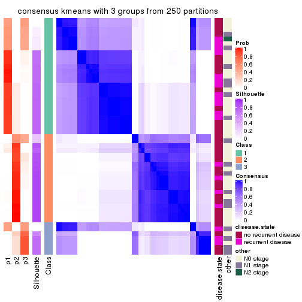
consensus_heatmap(res, k = 4)
consensus_heatmap(res, k = 5)
consensus_heatmap(res, k = 6)

Heatmaps for the membership of samples in all partitions to see how consistent they are:
membership_heatmap(res, k = 2)
membership_heatmap(res, k = 3)
membership_heatmap(res, k = 4)
membership_heatmap(res, k = 5)

membership_heatmap(res, k = 6)
As soon as we have had the classes for columns, we can look for signatures which are significantly different between classes which can be candidate marks for certain classes. Following are the heatmaps for signatures.
Signature heatmaps where rows are scaled:
get_signatures(res, k = 2)
get_signatures(res, k = 3)
get_signatures(res, k = 4)
get_signatures(res, k = 5)
get_signatures(res, k = 6)
Signature heatmaps where rows are not scaled:
get_signatures(res, k = 2, scale_rows = FALSE)
get_signatures(res, k = 3, scale_rows = FALSE)

get_signatures(res, k = 4, scale_rows = FALSE)
get_signatures(res, k = 5, scale_rows = FALSE)

get_signatures(res, k = 6, scale_rows = FALSE)
Compare the overlap of signatures from different k:
compare_signatures(res)
get_signature() returns a data frame invisibly. TO get the list of signatures, the function
call should be assigned to a variable explicitly. In following code, if plot argument is set
to FALSE, no heatmap is plotted while only the differential analysis is performed.
# code only for demonstration
tb = get_signature(res, k = ..., plot = FALSE)
An example of the output of tb is:
#> which_row fdr mean_1 mean_2 scaled_mean_1 scaled_mean_2 km
#> 1 38 0.042760348 8.373488 9.131774 -0.5533452 0.5164555 1
#> 2 40 0.018707592 7.106213 8.469186 -0.6173731 0.5762149 1
#> 3 55 0.019134737 10.221463 11.207825 -0.6159697 0.5749050 1
#> 4 59 0.006059896 5.921854 7.869574 -0.6899429 0.6439467 1
#> 5 60 0.018055526 8.928898 10.211722 -0.6204761 0.5791110 1
#> 6 98 0.009384629 15.714769 14.887706 0.6635654 -0.6193277 2
...
The columns in tb are:
which_row: row indices corresponding to the input matrix.fdr: FDR for the differential test. mean_x: The mean value in group x.scaled_mean_x: The mean value in group x after rows are scaled.km: Row groups if k-means clustering is applied to rows.UMAP plot which shows how samples are separated.
dimension_reduction(res, k = 2, method = "UMAP")
dimension_reduction(res, k = 3, method = "UMAP")
dimension_reduction(res, k = 4, method = "UMAP")
dimension_reduction(res, k = 5, method = "UMAP")
dimension_reduction(res, k = 6, method = "UMAP")
Following heatmap shows how subgroups are split when increasing k:
collect_classes(res)
Test correlation between subgroups and known annotations. If the known annotation is numeric, one-way ANOVA test is applied, and if the known annotation is discrete, chi-squared contingency table test is applied.
test_to_known_factors(res)
#> n disease.state(p) other(p) k
#> ATC:kmeans 51 0.157 0.560 2
#> ATC:kmeans 40 0.269 0.371 3
#> ATC:kmeans 51 0.385 0.322 4
#> ATC:kmeans 40 0.411 0.406 5
#> ATC:kmeans 46 0.623 0.545 6
If matrix rows can be associated to genes, consider to use GO_Enrichment(res,
...) to perform function enrichment for the signature genes.
The object with results only for a single top-value method and a single partition method can be extracted as:
res = res_list["ATC", "skmeans"]
# you can also extract it by
# res = res_list["ATC:skmeans"]
A summary of res and all the functions that can be applied to it:
res
#> A 'ConsensusPartition' object with k = 2, 3, 4, 5, 6.
#> On a matrix with 20180 rows and 51 columns.
#> Top rows (1000, 2000, 3000, 4000, 5000) are extracted by 'ATC' method.
#> Subgroups are detected by 'skmeans' method.
#> Performed in total 1250 partitions by row resampling.
#> Best k for subgroups seems to be 4.
#>
#> Following methods can be applied to this 'ConsensusPartition' object:
#> [1] "cola_report" "collect_classes" "collect_plots"
#> [4] "collect_stats" "colnames" "compare_signatures"
#> [7] "consensus_heatmap" "dimension_reduction" "functional_enrichment"
#> [10] "get_anno_col" "get_anno" "get_classes"
#> [13] "get_consensus" "get_matrix" "get_membership"
#> [16] "get_param" "get_signatures" "get_stats"
#> [19] "is_best_k" "is_stable_k" "membership_heatmap"
#> [22] "ncol" "nrow" "plot_ecdf"
#> [25] "rownames" "select_partition_number" "show"
#> [28] "suggest_best_k" "test_to_known_factors"
collect_plots() function collects all the plots made from res for all k (number of partitions)
into one single page to provide an easy and fast comparison between different k.
collect_plots(res)
The plots are:
k and the heatmap of
predicted classes for each k.k.k.k.All the plots in panels can be made by individual functions and they are plotted later in this section.
select_partition_number() produces several plots showing different
statistics for choosing “optimized” k. There are following statistics:
k;k, the area increased is defined as \(A_k - A_{k-1}\).The detailed explanations of these statistics can be found in the cola vignette.
Generally speaking, lower PAC score, higher mean silhouette score or higher
concordance corresponds to better partition. Rand index and Jaccard index
measure how similar the current partition is compared to partition with k-1.
If they are too similar, we won't accept k is better than k-1.
select_partition_number(res)
The numeric values for all these statistics can be obtained by get_stats().
get_stats(res)
#> k 1-PAC mean_silhouette concordance area_increased Rand Jaccard
#> 2 2 1.000 1.000 1.000 0.5087 0.492 0.492
#> 3 3 1.000 0.985 0.993 0.3253 0.763 0.551
#> 4 4 1.000 0.978 0.982 0.1080 0.880 0.656
#> 5 5 0.809 0.679 0.862 0.0636 0.987 0.947
#> 6 6 0.755 0.653 0.783 0.0377 0.944 0.768
suggest_best_k() suggests the best \(k\) based on these statistics. The rules are as follows:
NA.suggest_best_k(res)
#> [1] 4
#> attr(,"optional")
#> [1] 2 3
There is also optional best \(k\) = 2 3 that is worth to check.
Following shows the table of the partitions (You need to click the show/hide
code output link to see it). The membership matrix (columns with name p*)
is inferred by
clue::cl_consensus()
function with the SE method. Basically the value in the membership matrix
represents the probability to belong to a certain group. The finall class
label for an item is determined with the group with highest probability it
belongs to.
In get_classes() function, the entropy is calculated from the membership
matrix and the silhouette score is calculated from the consensus matrix.
cbind(get_classes(res, k = 2), get_membership(res, k = 2))
#> class entropy silhouette p1 p2
#> GSM115459 1 0 1 1 0
#> GSM115460 2 0 1 0 1
#> GSM115461 2 0 1 0 1
#> GSM115462 2 0 1 0 1
#> GSM115463 1 0 1 1 0
#> GSM115464 1 0 1 1 0
#> GSM115465 2 0 1 0 1
#> GSM115466 2 0 1 0 1
#> GSM115467 2 0 1 0 1
#> GSM115468 1 0 1 1 0
#> GSM115469 2 0 1 0 1
#> GSM115470 2 0 1 0 1
#> GSM115471 2 0 1 0 1
#> GSM115472 1 0 1 1 0
#> GSM115473 1 0 1 1 0
#> GSM115474 1 0 1 1 0
#> GSM115475 1 0 1 1 0
#> GSM115476 1 0 1 1 0
#> GSM115477 2 0 1 0 1
#> GSM115478 2 0 1 0 1
#> GSM115479 1 0 1 1 0
#> GSM115480 2 0 1 0 1
#> GSM115481 1 0 1 1 0
#> GSM115482 1 0 1 1 0
#> GSM115483 2 0 1 0 1
#> GSM115484 2 0 1 0 1
#> GSM115485 2 0 1 0 1
#> GSM115486 2 0 1 0 1
#> GSM115487 1 0 1 1 0
#> GSM115488 2 0 1 0 1
#> GSM115489 1 0 1 1 0
#> GSM115490 2 0 1 0 1
#> GSM115491 1 0 1 1 0
#> GSM115492 2 0 1 0 1
#> GSM115493 1 0 1 1 0
#> GSM115494 1 0 1 1 0
#> GSM115495 2 0 1 0 1
#> GSM115496 1 0 1 1 0
#> GSM115497 1 0 1 1 0
#> GSM115498 1 0 1 1 0
#> GSM115499 1 0 1 1 0
#> GSM115500 1 0 1 1 0
#> GSM115501 1 0 1 1 0
#> GSM115502 1 0 1 1 0
#> GSM115503 2 0 1 0 1
#> GSM115504 2 0 1 0 1
#> GSM115505 2 0 1 0 1
#> GSM115506 1 0 1 1 0
#> GSM115507 2 0 1 0 1
#> GSM115509 1 0 1 1 0
#> GSM115508 1 0 1 1 0
cbind(get_classes(res, k = 3), get_membership(res, k = 3))
#> class entropy silhouette p1 p2 p3
#> GSM115459 3 0.000 0.984 0 0.000 1.000
#> GSM115460 2 0.000 0.991 0 1.000 0.000
#> GSM115461 2 0.000 0.991 0 1.000 0.000
#> GSM115462 2 0.000 0.991 0 1.000 0.000
#> GSM115463 1 0.000 1.000 1 0.000 0.000
#> GSM115464 1 0.000 1.000 1 0.000 0.000
#> GSM115465 2 0.000 0.991 0 1.000 0.000
#> GSM115466 2 0.000 0.991 0 1.000 0.000
#> GSM115467 2 0.000 0.991 0 1.000 0.000
#> GSM115468 1 0.000 1.000 1 0.000 0.000
#> GSM115469 3 0.455 0.745 0 0.200 0.800
#> GSM115470 2 0.000 0.991 0 1.000 0.000
#> GSM115471 2 0.000 0.991 0 1.000 0.000
#> GSM115472 1 0.000 1.000 1 0.000 0.000
#> GSM115473 3 0.000 0.984 0 0.000 1.000
#> GSM115474 1 0.000 1.000 1 0.000 0.000
#> GSM115475 3 0.000 0.984 0 0.000 1.000
#> GSM115476 1 0.000 1.000 1 0.000 0.000
#> GSM115477 2 0.000 0.991 0 1.000 0.000
#> GSM115478 2 0.000 0.991 0 1.000 0.000
#> GSM115479 1 0.000 1.000 1 0.000 0.000
#> GSM115480 2 0.000 0.991 0 1.000 0.000
#> GSM115481 3 0.000 0.984 0 0.000 1.000
#> GSM115482 1 0.000 1.000 1 0.000 0.000
#> GSM115483 2 0.207 0.942 0 0.940 0.060
#> GSM115484 2 0.000 0.991 0 1.000 0.000
#> GSM115485 3 0.000 0.984 0 0.000 1.000
#> GSM115486 3 0.000 0.984 0 0.000 1.000
#> GSM115487 3 0.000 0.984 0 0.000 1.000
#> GSM115488 2 0.000 0.991 0 1.000 0.000
#> GSM115489 1 0.000 1.000 1 0.000 0.000
#> GSM115490 2 0.196 0.945 0 0.944 0.056
#> GSM115491 1 0.000 1.000 1 0.000 0.000
#> GSM115492 3 0.000 0.984 0 0.000 1.000
#> GSM115493 1 0.000 1.000 1 0.000 0.000
#> GSM115494 1 0.000 1.000 1 0.000 0.000
#> GSM115495 2 0.000 0.991 0 1.000 0.000
#> GSM115496 1 0.000 1.000 1 0.000 0.000
#> GSM115497 3 0.000 0.984 0 0.000 1.000
#> GSM115498 1 0.000 1.000 1 0.000 0.000
#> GSM115499 1 0.000 1.000 1 0.000 0.000
#> GSM115500 3 0.000 0.984 0 0.000 1.000
#> GSM115501 1 0.000 1.000 1 0.000 0.000
#> GSM115502 1 0.000 1.000 1 0.000 0.000
#> GSM115503 2 0.186 0.949 0 0.948 0.052
#> GSM115504 3 0.000 0.984 0 0.000 1.000
#> GSM115505 2 0.000 0.991 0 1.000 0.000
#> GSM115506 1 0.000 1.000 1 0.000 0.000
#> GSM115507 2 0.000 0.991 0 1.000 0.000
#> GSM115509 3 0.000 0.984 0 0.000 1.000
#> GSM115508 3 0.000 0.984 0 0.000 1.000
cbind(get_classes(res, k = 4), get_membership(res, k = 4))
#> class entropy silhouette p1 p2 p3 p4
#> GSM115459 3 0.0188 0.996 0.000 0.000 0.996 0.004
#> GSM115460 2 0.0188 0.988 0.000 0.996 0.000 0.004
#> GSM115461 2 0.0188 0.988 0.000 0.996 0.000 0.004
#> GSM115462 2 0.0657 0.979 0.004 0.984 0.000 0.012
#> GSM115463 1 0.0000 0.993 1.000 0.000 0.000 0.000
#> GSM115464 1 0.0188 0.992 0.996 0.000 0.004 0.000
#> GSM115465 2 0.1302 0.965 0.000 0.956 0.000 0.044
#> GSM115466 2 0.0592 0.986 0.000 0.984 0.000 0.016
#> GSM115467 2 0.0524 0.982 0.004 0.988 0.000 0.008
#> GSM115468 1 0.0657 0.988 0.984 0.004 0.000 0.012
#> GSM115469 4 0.0895 0.954 0.000 0.004 0.020 0.976
#> GSM115470 2 0.1022 0.977 0.000 0.968 0.000 0.032
#> GSM115471 2 0.0188 0.988 0.000 0.996 0.000 0.004
#> GSM115472 1 0.0336 0.992 0.992 0.000 0.000 0.008
#> GSM115473 3 0.0188 0.996 0.000 0.000 0.996 0.004
#> GSM115474 1 0.0992 0.983 0.976 0.012 0.004 0.008
#> GSM115475 3 0.0817 0.979 0.000 0.000 0.976 0.024
#> GSM115476 1 0.0376 0.991 0.992 0.000 0.004 0.004
#> GSM115477 4 0.1474 0.943 0.000 0.052 0.000 0.948
#> GSM115478 2 0.0469 0.987 0.000 0.988 0.000 0.012
#> GSM115479 1 0.0000 0.993 1.000 0.000 0.000 0.000
#> GSM115480 2 0.0336 0.988 0.000 0.992 0.000 0.008
#> GSM115481 3 0.0188 0.996 0.000 0.000 0.996 0.004
#> GSM115482 1 0.0524 0.990 0.988 0.004 0.000 0.008
#> GSM115483 4 0.0707 0.954 0.000 0.020 0.000 0.980
#> GSM115484 2 0.0188 0.986 0.000 0.996 0.000 0.004
#> GSM115485 4 0.1022 0.950 0.000 0.000 0.032 0.968
#> GSM115486 4 0.1389 0.941 0.000 0.000 0.048 0.952
#> GSM115487 3 0.0188 0.996 0.000 0.000 0.996 0.004
#> GSM115488 4 0.2149 0.916 0.000 0.088 0.000 0.912
#> GSM115489 1 0.0376 0.991 0.992 0.000 0.004 0.004
#> GSM115490 4 0.0707 0.954 0.000 0.020 0.000 0.980
#> GSM115491 1 0.0524 0.990 0.988 0.008 0.000 0.004
#> GSM115492 4 0.0921 0.952 0.000 0.000 0.028 0.972
#> GSM115493 1 0.0188 0.992 0.996 0.000 0.000 0.004
#> GSM115494 1 0.0000 0.993 1.000 0.000 0.000 0.000
#> GSM115495 2 0.0592 0.986 0.000 0.984 0.000 0.016
#> GSM115496 1 0.0188 0.992 0.996 0.000 0.000 0.004
#> GSM115497 3 0.0188 0.996 0.000 0.000 0.996 0.004
#> GSM115498 1 0.0895 0.982 0.976 0.000 0.020 0.004
#> GSM115499 1 0.0712 0.990 0.984 0.004 0.004 0.008
#> GSM115500 3 0.0000 0.994 0.000 0.000 1.000 0.000
#> GSM115501 1 0.0000 0.993 1.000 0.000 0.000 0.000
#> GSM115502 1 0.0376 0.991 0.992 0.000 0.004 0.004
#> GSM115503 4 0.1022 0.952 0.000 0.032 0.000 0.968
#> GSM115504 4 0.1118 0.948 0.000 0.000 0.036 0.964
#> GSM115505 4 0.3074 0.841 0.000 0.152 0.000 0.848
#> GSM115506 1 0.0657 0.988 0.984 0.004 0.000 0.012
#> GSM115507 2 0.0000 0.988 0.000 1.000 0.000 0.000
#> GSM115509 3 0.0188 0.996 0.000 0.000 0.996 0.004
#> GSM115508 3 0.0000 0.994 0.000 0.000 1.000 0.000
cbind(get_classes(res, k = 5), get_membership(res, k = 5))
#> class entropy silhouette p1 p2 p3 p4 p5
#> GSM115459 3 0.0162 0.9794 0.000 0.000 0.996 0.000 0.004
#> GSM115460 2 0.0510 0.9325 0.000 0.984 0.000 0.000 0.016
#> GSM115461 2 0.0510 0.9325 0.000 0.984 0.000 0.000 0.016
#> GSM115462 2 0.3662 0.7637 0.004 0.744 0.000 0.000 0.252
#> GSM115463 1 0.1341 0.5156 0.944 0.000 0.000 0.000 0.056
#> GSM115464 1 0.4114 0.0133 0.624 0.000 0.000 0.000 0.376
#> GSM115465 2 0.3691 0.8378 0.000 0.804 0.000 0.040 0.156
#> GSM115466 2 0.1608 0.9261 0.000 0.928 0.000 0.000 0.072
#> GSM115467 2 0.2824 0.8772 0.020 0.864 0.000 0.000 0.116
#> GSM115468 1 0.3452 0.5031 0.756 0.000 0.000 0.000 0.244
#> GSM115469 4 0.0000 0.8926 0.000 0.000 0.000 1.000 0.000
#> GSM115470 2 0.1851 0.9160 0.000 0.912 0.000 0.000 0.088
#> GSM115471 2 0.1043 0.9310 0.000 0.960 0.000 0.000 0.040
#> GSM115472 1 0.4126 0.0868 0.620 0.000 0.000 0.000 0.380
#> GSM115473 3 0.0162 0.9794 0.000 0.000 0.996 0.000 0.004
#> GSM115474 5 0.4653 0.0000 0.472 0.012 0.000 0.000 0.516
#> GSM115475 3 0.2927 0.8857 0.000 0.000 0.872 0.060 0.068
#> GSM115476 1 0.3210 0.2363 0.788 0.000 0.000 0.000 0.212
#> GSM115477 4 0.3176 0.8487 0.000 0.080 0.000 0.856 0.064
#> GSM115478 2 0.1043 0.9301 0.000 0.960 0.000 0.000 0.040
#> GSM115479 1 0.0794 0.5619 0.972 0.000 0.000 0.000 0.028
#> GSM115480 2 0.2179 0.9209 0.000 0.896 0.000 0.004 0.100
#> GSM115481 3 0.0451 0.9762 0.000 0.000 0.988 0.008 0.004
#> GSM115482 1 0.3210 0.5250 0.788 0.000 0.000 0.000 0.212
#> GSM115483 4 0.0404 0.8918 0.000 0.000 0.000 0.988 0.012
#> GSM115484 2 0.0609 0.9333 0.000 0.980 0.000 0.000 0.020
#> GSM115485 4 0.1041 0.8899 0.000 0.000 0.004 0.964 0.032
#> GSM115486 4 0.0898 0.8904 0.000 0.000 0.008 0.972 0.020
#> GSM115487 3 0.0865 0.9664 0.004 0.000 0.972 0.000 0.024
#> GSM115488 4 0.5408 0.6895 0.000 0.180 0.000 0.664 0.156
#> GSM115489 1 0.2966 0.3170 0.816 0.000 0.000 0.000 0.184
#> GSM115490 4 0.0510 0.8914 0.000 0.000 0.000 0.984 0.016
#> GSM115491 1 0.4126 0.3472 0.620 0.000 0.000 0.000 0.380
#> GSM115492 4 0.1041 0.8912 0.000 0.000 0.004 0.964 0.032
#> GSM115493 1 0.2852 0.5508 0.828 0.000 0.000 0.000 0.172
#> GSM115494 1 0.0510 0.5585 0.984 0.000 0.000 0.000 0.016
#> GSM115495 2 0.1704 0.9243 0.000 0.928 0.000 0.004 0.068
#> GSM115496 1 0.2813 0.5376 0.832 0.000 0.000 0.000 0.168
#> GSM115497 3 0.0000 0.9788 0.000 0.000 1.000 0.000 0.000
#> GSM115498 1 0.4570 -0.3628 0.632 0.000 0.020 0.000 0.348
#> GSM115499 1 0.4294 -0.7909 0.532 0.000 0.000 0.000 0.468
#> GSM115500 3 0.0162 0.9794 0.000 0.000 0.996 0.000 0.004
#> GSM115501 1 0.1341 0.5691 0.944 0.000 0.000 0.000 0.056
#> GSM115502 1 0.3039 0.3035 0.808 0.000 0.000 0.000 0.192
#> GSM115503 4 0.4023 0.8320 0.000 0.076 0.016 0.816 0.092
#> GSM115504 4 0.0510 0.8917 0.000 0.000 0.000 0.984 0.016
#> GSM115505 4 0.5784 0.5699 0.000 0.252 0.000 0.604 0.144
#> GSM115506 1 0.3242 0.5199 0.784 0.000 0.000 0.000 0.216
#> GSM115507 2 0.0794 0.9321 0.000 0.972 0.000 0.000 0.028
#> GSM115509 3 0.0404 0.9751 0.000 0.000 0.988 0.012 0.000
#> GSM115508 3 0.0162 0.9794 0.000 0.000 0.996 0.000 0.004
cbind(get_classes(res, k = 6), get_membership(res, k = 6))
#> class entropy silhouette p1 p2 p3 p4 p5 p6
#> GSM115459 3 0.0146 0.942 0.000 0.000 0.996 0.000 NA 0.000
#> GSM115460 2 0.1075 0.856 0.000 0.952 0.000 0.000 NA 0.000
#> GSM115461 2 0.1075 0.856 0.000 0.952 0.000 0.000 NA 0.000
#> GSM115462 2 0.6409 0.514 0.096 0.512 0.000 0.000 NA 0.092
#> GSM115463 1 0.3684 0.295 0.664 0.000 0.000 0.000 NA 0.332
#> GSM115464 6 0.4773 0.319 0.388 0.000 0.000 0.000 NA 0.556
#> GSM115465 2 0.4755 0.722 0.004 0.648 0.000 0.020 NA 0.032
#> GSM115466 2 0.2302 0.846 0.000 0.872 0.000 0.000 NA 0.008
#> GSM115467 2 0.4398 0.769 0.060 0.756 0.000 0.000 NA 0.040
#> GSM115468 1 0.2462 0.515 0.876 0.000 0.000 0.000 NA 0.028
#> GSM115469 4 0.0000 0.825 0.000 0.000 0.000 1.000 NA 0.000
#> GSM115470 2 0.3023 0.826 0.000 0.784 0.000 0.004 NA 0.000
#> GSM115471 2 0.2170 0.849 0.000 0.888 0.000 0.000 NA 0.012
#> GSM115472 6 0.5443 0.227 0.384 0.000 0.000 0.000 NA 0.492
#> GSM115473 3 0.0713 0.941 0.000 0.000 0.972 0.000 NA 0.000
#> GSM115474 6 0.3947 0.450 0.084 0.016 0.000 0.000 NA 0.788
#> GSM115475 3 0.4832 0.786 0.000 0.000 0.732 0.068 NA 0.076
#> GSM115476 6 0.4051 0.310 0.432 0.000 0.000 0.000 NA 0.560
#> GSM115477 4 0.3922 0.745 0.000 0.096 0.000 0.776 NA 0.004
#> GSM115478 2 0.2219 0.843 0.000 0.864 0.000 0.000 NA 0.000
#> GSM115479 1 0.2994 0.506 0.788 0.000 0.000 0.000 NA 0.208
#> GSM115480 2 0.3599 0.808 0.000 0.756 0.000 0.004 NA 0.020
#> GSM115481 3 0.2420 0.907 0.000 0.000 0.888 0.004 NA 0.032
#> GSM115482 1 0.1807 0.559 0.920 0.000 0.000 0.000 NA 0.020
#> GSM115483 4 0.0547 0.824 0.000 0.000 0.000 0.980 NA 0.000
#> GSM115484 2 0.0858 0.857 0.000 0.968 0.000 0.000 NA 0.004
#> GSM115485 4 0.1897 0.820 0.000 0.000 0.004 0.908 NA 0.004
#> GSM115486 4 0.1788 0.820 0.000 0.000 0.004 0.916 NA 0.004
#> GSM115487 3 0.3090 0.894 0.000 0.000 0.848 0.008 NA 0.056
#> GSM115488 4 0.6012 0.438 0.000 0.176 0.000 0.480 NA 0.012
#> GSM115489 6 0.3864 0.174 0.480 0.000 0.000 0.000 NA 0.520
#> GSM115490 4 0.0713 0.823 0.000 0.000 0.000 0.972 NA 0.000
#> GSM115491 1 0.5354 0.227 0.580 0.000 0.000 0.000 NA 0.260
#> GSM115492 4 0.1753 0.821 0.000 0.000 0.000 0.912 NA 0.004
#> GSM115493 1 0.4008 0.489 0.740 0.000 0.000 0.000 NA 0.196
#> GSM115494 1 0.3081 0.489 0.776 0.000 0.000 0.000 NA 0.220
#> GSM115495 2 0.2838 0.827 0.000 0.808 0.000 0.004 NA 0.000
#> GSM115496 1 0.4223 0.446 0.704 0.000 0.000 0.000 NA 0.236
#> GSM115497 3 0.0363 0.942 0.000 0.000 0.988 0.000 NA 0.000
#> GSM115498 6 0.4239 0.483 0.264 0.000 0.024 0.000 NA 0.696
#> GSM115499 6 0.4573 0.473 0.136 0.008 0.008 0.000 NA 0.736
#> GSM115500 3 0.0508 0.942 0.000 0.000 0.984 0.000 NA 0.004
#> GSM115501 1 0.2838 0.537 0.808 0.000 0.000 0.000 NA 0.188
#> GSM115502 1 0.3869 -0.299 0.500 0.000 0.000 0.000 NA 0.500
#> GSM115503 4 0.4939 0.693 0.000 0.060 0.008 0.672 NA 0.016
#> GSM115504 4 0.1411 0.824 0.000 0.000 0.000 0.936 NA 0.004
#> GSM115505 4 0.5999 0.282 0.000 0.256 0.000 0.432 NA 0.000
#> GSM115506 1 0.1866 0.544 0.908 0.000 0.000 0.000 NA 0.008
#> GSM115507 2 0.1471 0.858 0.000 0.932 0.000 0.000 NA 0.004
#> GSM115509 3 0.0603 0.940 0.000 0.000 0.980 0.004 NA 0.000
#> GSM115508 3 0.0508 0.942 0.000 0.000 0.984 0.000 NA 0.004
Heatmaps for the consensus matrix. It visualizes the probability of two samples to be in a same group.
consensus_heatmap(res, k = 2)
consensus_heatmap(res, k = 3)
consensus_heatmap(res, k = 4)
consensus_heatmap(res, k = 5)
consensus_heatmap(res, k = 6)
Heatmaps for the membership of samples in all partitions to see how consistent they are:
membership_heatmap(res, k = 2)
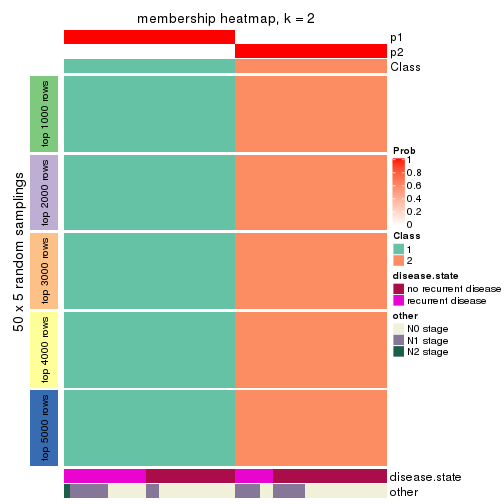
membership_heatmap(res, k = 3)
membership_heatmap(res, k = 4)
membership_heatmap(res, k = 5)
membership_heatmap(res, k = 6)
As soon as we have had the classes for columns, we can look for signatures which are significantly different between classes which can be candidate marks for certain classes. Following are the heatmaps for signatures.
Signature heatmaps where rows are scaled:
get_signatures(res, k = 2)
get_signatures(res, k = 3)
get_signatures(res, k = 4)
get_signatures(res, k = 5)
get_signatures(res, k = 6)
Signature heatmaps where rows are not scaled:
get_signatures(res, k = 2, scale_rows = FALSE)
get_signatures(res, k = 3, scale_rows = FALSE)
get_signatures(res, k = 4, scale_rows = FALSE)
#> Error in mat[ceiling(1:nr/h_ratio), ceiling(1:nc/w_ratio), drop = FALSE]: subscript out of bounds
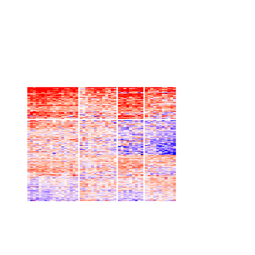
get_signatures(res, k = 5, scale_rows = FALSE)
get_signatures(res, k = 6, scale_rows = FALSE)
Compare the overlap of signatures from different k:
compare_signatures(res)
get_signature() returns a data frame invisibly. TO get the list of signatures, the function
call should be assigned to a variable explicitly. In following code, if plot argument is set
to FALSE, no heatmap is plotted while only the differential analysis is performed.
# code only for demonstration
tb = get_signature(res, k = ..., plot = FALSE)
An example of the output of tb is:
#> which_row fdr mean_1 mean_2 scaled_mean_1 scaled_mean_2 km
#> 1 38 0.042760348 8.373488 9.131774 -0.5533452 0.5164555 1
#> 2 40 0.018707592 7.106213 8.469186 -0.6173731 0.5762149 1
#> 3 55 0.019134737 10.221463 11.207825 -0.6159697 0.5749050 1
#> 4 59 0.006059896 5.921854 7.869574 -0.6899429 0.6439467 1
#> 5 60 0.018055526 8.928898 10.211722 -0.6204761 0.5791110 1
#> 6 98 0.009384629 15.714769 14.887706 0.6635654 -0.6193277 2
...
The columns in tb are:
which_row: row indices corresponding to the input matrix.fdr: FDR for the differential test. mean_x: The mean value in group x.scaled_mean_x: The mean value in group x after rows are scaled.km: Row groups if k-means clustering is applied to rows.UMAP plot which shows how samples are separated.
dimension_reduction(res, k = 2, method = "UMAP")
dimension_reduction(res, k = 3, method = "UMAP")
dimension_reduction(res, k = 4, method = "UMAP")
dimension_reduction(res, k = 5, method = "UMAP")
dimension_reduction(res, k = 6, method = "UMAP")
Following heatmap shows how subgroups are split when increasing k:
collect_classes(res)
Test correlation between subgroups and known annotations. If the known annotation is numeric, one-way ANOVA test is applied, and if the known annotation is discrete, chi-squared contingency table test is applied.
test_to_known_factors(res)
#> n disease.state(p) other(p) k
#> ATC:skmeans 51 0.157 0.5602 2
#> ATC:skmeans 51 0.168 0.4234 3
#> ATC:skmeans 51 0.249 0.0726 4
#> ATC:skmeans 42 0.242 0.0942 5
#> ATC:skmeans 36 0.481 0.3052 6
If matrix rows can be associated to genes, consider to use GO_Enrichment(res,
...) to perform function enrichment for the signature genes.
The object with results only for a single top-value method and a single partition method can be extracted as:
res = res_list["ATC", "pam"]
# you can also extract it by
# res = res_list["ATC:pam"]
A summary of res and all the functions that can be applied to it:
res
#> A 'ConsensusPartition' object with k = 2, 3, 4, 5, 6.
#> On a matrix with 20180 rows and 51 columns.
#> Top rows (1000, 2000, 3000, 4000, 5000) are extracted by 'ATC' method.
#> Subgroups are detected by 'pam' method.
#> Performed in total 1250 partitions by row resampling.
#> Best k for subgroups seems to be 4.
#>
#> Following methods can be applied to this 'ConsensusPartition' object:
#> [1] "cola_report" "collect_classes" "collect_plots"
#> [4] "collect_stats" "colnames" "compare_signatures"
#> [7] "consensus_heatmap" "dimension_reduction" "functional_enrichment"
#> [10] "get_anno_col" "get_anno" "get_classes"
#> [13] "get_consensus" "get_matrix" "get_membership"
#> [16] "get_param" "get_signatures" "get_stats"
#> [19] "is_best_k" "is_stable_k" "membership_heatmap"
#> [22] "ncol" "nrow" "plot_ecdf"
#> [25] "rownames" "select_partition_number" "show"
#> [28] "suggest_best_k" "test_to_known_factors"
collect_plots() function collects all the plots made from res for all k (number of partitions)
into one single page to provide an easy and fast comparison between different k.
collect_plots(res)
The plots are:
k and the heatmap of
predicted classes for each k.k.k.k.All the plots in panels can be made by individual functions and they are plotted later in this section.
select_partition_number() produces several plots showing different
statistics for choosing “optimized” k. There are following statistics:
k;k, the area increased is defined as \(A_k - A_{k-1}\).The detailed explanations of these statistics can be found in the cola vignette.
Generally speaking, lower PAC score, higher mean silhouette score or higher
concordance corresponds to better partition. Rand index and Jaccard index
measure how similar the current partition is compared to partition with k-1.
If they are too similar, we won't accept k is better than k-1.
select_partition_number(res)
The numeric values for all these statistics can be obtained by get_stats().
get_stats(res)
#> k 1-PAC mean_silhouette concordance area_increased Rand Jaccard
#> 2 2 0.254 0.541 0.799 0.4164 0.500 0.500
#> 3 3 0.331 0.546 0.777 0.4542 0.651 0.435
#> 4 4 0.645 0.766 0.871 0.0829 0.872 0.709
#> 5 5 0.617 0.615 0.829 0.0685 0.903 0.744
#> 6 6 0.821 0.759 0.910 0.0617 0.846 0.558
suggest_best_k() suggests the best \(k\) based on these statistics. The rules are as follows:
NA.suggest_best_k(res)
#> [1] 4
Following shows the table of the partitions (You need to click the show/hide
code output link to see it). The membership matrix (columns with name p*)
is inferred by
clue::cl_consensus()
function with the SE method. Basically the value in the membership matrix
represents the probability to belong to a certain group. The finall class
label for an item is determined with the group with highest probability it
belongs to.
In get_classes() function, the entropy is calculated from the membership
matrix and the silhouette score is calculated from the consensus matrix.
cbind(get_classes(res, k = 2), get_membership(res, k = 2))
#> class entropy silhouette p1 p2
#> GSM115459 1 0.9933 0.1495 0.548 0.452
#> GSM115460 2 0.7219 0.7411 0.200 0.800
#> GSM115461 2 0.7219 0.7411 0.200 0.800
#> GSM115462 1 0.6712 0.5839 0.824 0.176
#> GSM115463 1 0.0000 0.6899 1.000 0.000
#> GSM115464 1 0.4939 0.6587 0.892 0.108
#> GSM115465 2 0.9522 0.5195 0.372 0.628
#> GSM115466 2 0.9608 0.4892 0.384 0.616
#> GSM115467 2 0.9988 0.1444 0.480 0.520
#> GSM115468 1 0.1414 0.6905 0.980 0.020
#> GSM115469 2 0.0000 0.6651 0.000 1.000
#> GSM115470 2 0.7219 0.7411 0.200 0.800
#> GSM115471 1 0.8813 0.4000 0.700 0.300
#> GSM115472 1 0.3584 0.6803 0.932 0.068
#> GSM115473 1 0.9881 0.1892 0.564 0.436
#> GSM115474 1 0.9881 0.1892 0.564 0.436
#> GSM115475 1 0.9922 0.1659 0.552 0.448
#> GSM115476 1 0.0376 0.6911 0.996 0.004
#> GSM115477 2 0.7883 0.7228 0.236 0.764
#> GSM115478 2 0.7219 0.7411 0.200 0.800
#> GSM115479 1 0.0000 0.6899 1.000 0.000
#> GSM115480 2 0.7528 0.7336 0.216 0.784
#> GSM115481 1 0.9933 0.0863 0.548 0.452
#> GSM115482 1 0.0672 0.6912 0.992 0.008
#> GSM115483 2 0.0000 0.6651 0.000 1.000
#> GSM115484 2 0.9963 0.2075 0.464 0.536
#> GSM115485 2 0.4562 0.6922 0.096 0.904
#> GSM115486 2 0.4562 0.6922 0.096 0.904
#> GSM115487 1 0.9881 0.1892 0.564 0.436
#> GSM115488 2 0.8763 0.6615 0.296 0.704
#> GSM115489 1 0.0000 0.6899 1.000 0.000
#> GSM115490 2 0.0000 0.6651 0.000 1.000
#> GSM115491 1 0.2603 0.6876 0.956 0.044
#> GSM115492 2 0.4562 0.6922 0.096 0.904
#> GSM115493 1 0.0376 0.6910 0.996 0.004
#> GSM115494 1 0.0000 0.6899 1.000 0.000
#> GSM115495 2 0.7219 0.7411 0.200 0.800
#> GSM115496 1 0.1414 0.6905 0.980 0.020
#> GSM115497 1 0.3431 0.6798 0.936 0.064
#> GSM115498 1 0.9795 0.2194 0.584 0.416
#> GSM115499 1 0.9881 0.1892 0.564 0.436
#> GSM115500 1 0.9850 0.2017 0.572 0.428
#> GSM115501 1 0.0938 0.6913 0.988 0.012
#> GSM115502 1 0.0000 0.6899 1.000 0.000
#> GSM115503 2 0.8813 0.6562 0.300 0.700
#> GSM115504 2 0.4562 0.6922 0.096 0.904
#> GSM115505 2 0.4022 0.7125 0.080 0.920
#> GSM115506 1 0.0000 0.6899 1.000 0.000
#> GSM115507 2 0.9775 0.3492 0.412 0.588
#> GSM115509 1 0.9954 0.0925 0.540 0.460
#> GSM115508 1 0.9686 0.2639 0.604 0.396
cbind(get_classes(res, k = 3), get_membership(res, k = 3))
#> class entropy silhouette p1 p2 p3
#> GSM115459 2 0.9392 0.1817 0.392 0.436 0.172
#> GSM115460 2 0.5760 0.4506 0.000 0.672 0.328
#> GSM115461 2 0.5760 0.4506 0.000 0.672 0.328
#> GSM115462 2 0.6305 -0.1872 0.484 0.516 0.000
#> GSM115463 1 0.0000 0.7769 1.000 0.000 0.000
#> GSM115464 1 0.5327 0.6276 0.728 0.272 0.000
#> GSM115465 2 0.0000 0.5872 0.000 1.000 0.000
#> GSM115466 2 0.0000 0.5872 0.000 1.000 0.000
#> GSM115467 2 0.0424 0.5877 0.008 0.992 0.000
#> GSM115468 1 0.4452 0.6994 0.808 0.192 0.000
#> GSM115469 3 0.4062 0.8376 0.000 0.164 0.836
#> GSM115470 2 0.4346 0.5438 0.000 0.816 0.184
#> GSM115471 2 0.6507 0.3402 0.284 0.688 0.028
#> GSM115472 1 0.5016 0.6651 0.760 0.240 0.000
#> GSM115473 2 0.6899 0.2362 0.364 0.612 0.024
#> GSM115474 2 0.6079 0.2085 0.388 0.612 0.000
#> GSM115475 2 0.8518 0.3207 0.208 0.612 0.180
#> GSM115476 1 0.0424 0.7764 0.992 0.008 0.000
#> GSM115477 2 0.3686 0.5634 0.000 0.860 0.140
#> GSM115478 2 0.4346 0.5438 0.000 0.816 0.184
#> GSM115479 1 0.0000 0.7769 1.000 0.000 0.000
#> GSM115480 2 0.3482 0.5752 0.000 0.872 0.128
#> GSM115481 1 0.7729 -0.0498 0.516 0.436 0.048
#> GSM115482 1 0.0892 0.7772 0.980 0.020 0.000
#> GSM115483 3 0.4062 0.8376 0.000 0.164 0.836
#> GSM115484 2 0.6590 0.5309 0.112 0.756 0.132
#> GSM115485 3 0.5465 0.8710 0.000 0.288 0.712
#> GSM115486 3 0.5397 0.8624 0.000 0.280 0.720
#> GSM115487 2 0.6796 0.2307 0.368 0.612 0.020
#> GSM115488 2 0.1860 0.5697 0.000 0.948 0.052
#> GSM115489 1 0.0000 0.7769 1.000 0.000 0.000
#> GSM115490 3 0.4062 0.8376 0.000 0.164 0.836
#> GSM115491 1 0.6192 0.3400 0.580 0.420 0.000
#> GSM115492 3 0.5465 0.8710 0.000 0.288 0.712
#> GSM115493 1 0.2261 0.7665 0.932 0.068 0.000
#> GSM115494 1 0.0000 0.7769 1.000 0.000 0.000
#> GSM115495 2 0.4346 0.5438 0.000 0.816 0.184
#> GSM115496 1 0.4235 0.7083 0.824 0.176 0.000
#> GSM115497 1 0.3587 0.7274 0.892 0.088 0.020
#> GSM115498 1 0.6235 0.0358 0.564 0.436 0.000
#> GSM115499 2 0.6079 0.2085 0.388 0.612 0.000
#> GSM115500 2 0.6937 0.1814 0.404 0.576 0.020
#> GSM115501 1 0.3752 0.7316 0.856 0.144 0.000
#> GSM115502 1 0.0000 0.7769 1.000 0.000 0.000
#> GSM115503 2 0.0475 0.5870 0.004 0.992 0.004
#> GSM115504 3 0.5431 0.8715 0.000 0.284 0.716
#> GSM115505 2 0.4504 0.5316 0.000 0.804 0.196
#> GSM115506 1 0.0237 0.7774 0.996 0.004 0.000
#> GSM115507 2 0.3805 0.5910 0.024 0.884 0.092
#> GSM115509 2 0.8472 0.3408 0.228 0.612 0.160
#> GSM115508 1 0.6962 0.0803 0.568 0.412 0.020
cbind(get_classes(res, k = 4), get_membership(res, k = 4))
#> class entropy silhouette p1 p2 p3 p4
#> GSM115459 2 0.6645 0.680 0.080 0.680 0.196 0.044
#> GSM115460 3 0.3688 1.000 0.000 0.208 0.792 0.000
#> GSM115461 3 0.3688 1.000 0.000 0.208 0.792 0.000
#> GSM115462 2 0.4898 0.083 0.416 0.584 0.000 0.000
#> GSM115463 1 0.0000 0.858 1.000 0.000 0.000 0.000
#> GSM115464 1 0.5127 0.453 0.632 0.356 0.012 0.000
#> GSM115465 2 0.0000 0.787 0.000 1.000 0.000 0.000
#> GSM115466 2 0.0000 0.787 0.000 1.000 0.000 0.000
#> GSM115467 2 0.0000 0.787 0.000 1.000 0.000 0.000
#> GSM115468 1 0.2179 0.836 0.924 0.064 0.012 0.000
#> GSM115469 4 0.0000 0.948 0.000 0.000 0.000 1.000
#> GSM115470 2 0.1256 0.778 0.000 0.964 0.028 0.008
#> GSM115471 2 0.4857 0.369 0.324 0.668 0.000 0.008
#> GSM115472 1 0.4914 0.552 0.676 0.312 0.012 0.000
#> GSM115473 2 0.3870 0.750 0.004 0.788 0.208 0.000
#> GSM115474 2 0.4059 0.699 0.200 0.788 0.012 0.000
#> GSM115475 2 0.4680 0.745 0.004 0.772 0.192 0.032
#> GSM115476 1 0.0657 0.856 0.984 0.012 0.004 0.000
#> GSM115477 2 0.1151 0.780 0.000 0.968 0.024 0.008
#> GSM115478 2 0.1256 0.778 0.000 0.964 0.028 0.008
#> GSM115479 1 0.0000 0.858 1.000 0.000 0.000 0.000
#> GSM115480 2 0.0817 0.782 0.000 0.976 0.024 0.000
#> GSM115481 2 0.5448 0.715 0.080 0.724 0.196 0.000
#> GSM115482 1 0.0376 0.859 0.992 0.004 0.004 0.000
#> GSM115483 4 0.0817 0.941 0.000 0.000 0.024 0.976
#> GSM115484 2 0.3542 0.693 0.120 0.852 0.028 0.000
#> GSM115485 4 0.2412 0.904 0.000 0.008 0.084 0.908
#> GSM115486 4 0.0779 0.952 0.000 0.004 0.016 0.980
#> GSM115487 2 0.4136 0.753 0.016 0.788 0.196 0.000
#> GSM115488 2 0.0804 0.789 0.000 0.980 0.012 0.008
#> GSM115489 1 0.0188 0.858 0.996 0.000 0.004 0.000
#> GSM115490 4 0.1284 0.936 0.000 0.012 0.024 0.964
#> GSM115491 1 0.3479 0.771 0.840 0.148 0.012 0.000
#> GSM115492 4 0.1890 0.929 0.000 0.008 0.056 0.936
#> GSM115493 1 0.1174 0.855 0.968 0.020 0.012 0.000
#> GSM115494 1 0.0000 0.858 1.000 0.000 0.000 0.000
#> GSM115495 2 0.1256 0.778 0.000 0.964 0.028 0.008
#> GSM115496 1 0.2179 0.836 0.924 0.064 0.012 0.000
#> GSM115497 1 0.7281 0.264 0.532 0.272 0.196 0.000
#> GSM115498 2 0.4401 0.665 0.272 0.724 0.004 0.000
#> GSM115499 2 0.4136 0.701 0.196 0.788 0.016 0.000
#> GSM115500 2 0.4464 0.744 0.024 0.768 0.208 0.000
#> GSM115501 1 0.1938 0.843 0.936 0.052 0.012 0.000
#> GSM115502 1 0.0188 0.858 0.996 0.000 0.004 0.000
#> GSM115503 2 0.0469 0.788 0.000 0.988 0.012 0.000
#> GSM115504 4 0.0592 0.952 0.000 0.000 0.016 0.984
#> GSM115505 2 0.4104 0.607 0.000 0.808 0.028 0.164
#> GSM115506 1 0.0188 0.859 0.996 0.004 0.000 0.000
#> GSM115507 2 0.1411 0.780 0.020 0.960 0.020 0.000
#> GSM115509 2 0.4051 0.749 0.004 0.784 0.208 0.004
#> GSM115508 2 0.6159 0.679 0.132 0.672 0.196 0.000
cbind(get_classes(res, k = 5), get_membership(res, k = 5))
#> class entropy silhouette p1 p2 p3 p4 p5
#> GSM115459 3 0.4624 0.79771 0.024 0.340 0.636 0.000 0.000
#> GSM115460 5 0.2648 1.00000 0.000 0.152 0.000 0.000 0.848
#> GSM115461 5 0.2648 1.00000 0.000 0.152 0.000 0.000 0.848
#> GSM115462 1 0.4307 0.04024 0.500 0.500 0.000 0.000 0.000
#> GSM115463 1 0.0000 0.90445 1.000 0.000 0.000 0.000 0.000
#> GSM115464 1 0.3300 0.67923 0.792 0.204 0.004 0.000 0.000
#> GSM115465 2 0.0000 0.67161 0.000 1.000 0.000 0.000 0.000
#> GSM115466 2 0.0000 0.67161 0.000 1.000 0.000 0.000 0.000
#> GSM115467 2 0.0000 0.67161 0.000 1.000 0.000 0.000 0.000
#> GSM115468 1 0.0771 0.90009 0.976 0.020 0.004 0.000 0.000
#> GSM115469 4 0.0000 0.63197 0.000 0.000 0.000 1.000 0.000
#> GSM115470 2 0.0290 0.66991 0.000 0.992 0.000 0.000 0.008
#> GSM115471 2 0.3816 0.28431 0.304 0.696 0.000 0.000 0.000
#> GSM115472 1 0.2848 0.75645 0.840 0.156 0.004 0.000 0.000
#> GSM115473 2 0.4262 -0.24880 0.000 0.560 0.440 0.000 0.000
#> GSM115474 2 0.4367 0.19723 0.416 0.580 0.004 0.000 0.000
#> GSM115475 2 0.6473 -0.15095 0.000 0.532 0.320 0.128 0.020
#> GSM115476 1 0.0671 0.89926 0.980 0.004 0.016 0.000 0.000
#> GSM115477 2 0.0162 0.67120 0.000 0.996 0.000 0.000 0.004
#> GSM115478 2 0.0290 0.66991 0.000 0.992 0.000 0.000 0.008
#> GSM115479 1 0.0000 0.90445 1.000 0.000 0.000 0.000 0.000
#> GSM115480 2 0.0162 0.67130 0.000 0.996 0.000 0.000 0.004
#> GSM115481 2 0.4848 -0.25333 0.024 0.556 0.420 0.000 0.000
#> GSM115482 1 0.0000 0.90445 1.000 0.000 0.000 0.000 0.000
#> GSM115483 4 0.0000 0.63197 0.000 0.000 0.000 1.000 0.000
#> GSM115484 2 0.2563 0.55232 0.120 0.872 0.000 0.000 0.008
#> GSM115485 4 0.6285 0.71771 0.000 0.000 0.392 0.456 0.152
#> GSM115486 4 0.6254 0.72950 0.000 0.000 0.368 0.480 0.152
#> GSM115487 2 0.5851 -0.00165 0.132 0.580 0.288 0.000 0.000
#> GSM115488 2 0.0162 0.67059 0.000 0.996 0.004 0.000 0.000
#> GSM115489 1 0.0510 0.89998 0.984 0.000 0.016 0.000 0.000
#> GSM115490 4 0.0000 0.63197 0.000 0.000 0.000 1.000 0.000
#> GSM115491 1 0.1892 0.85200 0.916 0.080 0.004 0.000 0.000
#> GSM115492 4 0.6272 0.72594 0.000 0.000 0.380 0.468 0.152
#> GSM115493 1 0.0290 0.90500 0.992 0.008 0.000 0.000 0.000
#> GSM115494 1 0.0000 0.90445 1.000 0.000 0.000 0.000 0.000
#> GSM115495 2 0.0290 0.66991 0.000 0.992 0.000 0.000 0.008
#> GSM115496 1 0.0771 0.90009 0.976 0.020 0.004 0.000 0.000
#> GSM115497 3 0.5569 0.53630 0.228 0.136 0.636 0.000 0.000
#> GSM115498 2 0.4767 0.16731 0.420 0.560 0.020 0.000 0.000
#> GSM115499 2 0.4726 0.19575 0.400 0.580 0.020 0.000 0.000
#> GSM115500 3 0.4298 0.78111 0.008 0.352 0.640 0.000 0.000
#> GSM115501 1 0.0609 0.90167 0.980 0.020 0.000 0.000 0.000
#> GSM115502 1 0.0510 0.89998 0.984 0.000 0.016 0.000 0.000
#> GSM115503 2 0.0162 0.67059 0.000 0.996 0.004 0.000 0.000
#> GSM115504 4 0.6247 0.72915 0.000 0.000 0.364 0.484 0.152
#> GSM115505 2 0.2077 0.59077 0.000 0.908 0.084 0.000 0.008
#> GSM115506 1 0.0162 0.90504 0.996 0.004 0.000 0.000 0.000
#> GSM115507 2 0.0798 0.66238 0.016 0.976 0.000 0.000 0.008
#> GSM115509 2 0.4235 -0.19329 0.000 0.576 0.424 0.000 0.000
#> GSM115508 3 0.4857 0.80361 0.040 0.324 0.636 0.000 0.000
cbind(get_classes(res, k = 6), get_membership(res, k = 6))
#> class entropy silhouette p1 p2 p3 p4 p5 p6
#> GSM115459 3 0.0260 0.681 0.008 0.000 0.992 0.000 0.000 0
#> GSM115460 5 0.0000 1.000 0.000 0.000 0.000 0.000 1.000 0
#> GSM115461 5 0.0000 1.000 0.000 0.000 0.000 0.000 1.000 0
#> GSM115462 1 0.3789 0.243 0.584 0.416 0.000 0.000 0.000 0
#> GSM115463 1 0.0146 0.872 0.996 0.000 0.004 0.000 0.000 0
#> GSM115464 1 0.1524 0.833 0.932 0.060 0.008 0.000 0.000 0
#> GSM115465 2 0.0291 0.889 0.004 0.992 0.004 0.000 0.000 0
#> GSM115466 2 0.0291 0.889 0.004 0.992 0.004 0.000 0.000 0
#> GSM115467 2 0.0000 0.891 0.000 1.000 0.000 0.000 0.000 0
#> GSM115468 1 0.0260 0.871 0.992 0.000 0.008 0.000 0.000 0
#> GSM115469 6 0.0000 1.000 0.000 0.000 0.000 0.000 0.000 1
#> GSM115470 2 0.0146 0.891 0.000 0.996 0.000 0.000 0.004 0
#> GSM115471 2 0.3221 0.533 0.264 0.736 0.000 0.000 0.000 0
#> GSM115472 1 0.0806 0.863 0.972 0.020 0.008 0.000 0.000 0
#> GSM115473 3 0.3742 0.597 0.004 0.348 0.648 0.000 0.000 0
#> GSM115474 1 0.3899 0.440 0.628 0.364 0.008 0.000 0.000 0
#> GSM115475 4 0.6203 -0.199 0.004 0.328 0.280 0.388 0.000 0
#> GSM115476 1 0.0603 0.869 0.980 0.004 0.016 0.000 0.000 0
#> GSM115477 2 0.0146 0.891 0.000 0.996 0.000 0.000 0.004 0
#> GSM115478 2 0.0146 0.891 0.000 0.996 0.000 0.000 0.004 0
#> GSM115479 1 0.0146 0.872 0.996 0.000 0.004 0.000 0.000 0
#> GSM115480 2 0.0000 0.891 0.000 1.000 0.000 0.000 0.000 0
#> GSM115481 3 0.3887 0.580 0.008 0.360 0.632 0.000 0.000 0
#> GSM115482 1 0.0146 0.872 0.996 0.000 0.004 0.000 0.000 0
#> GSM115483 6 0.0000 1.000 0.000 0.000 0.000 0.000 0.000 1
#> GSM115484 2 0.2100 0.766 0.112 0.884 0.000 0.000 0.004 0
#> GSM115485 4 0.0000 0.767 0.000 0.000 0.000 1.000 0.000 0
#> GSM115486 4 0.0000 0.767 0.000 0.000 0.000 1.000 0.000 0
#> GSM115487 2 0.6114 -0.206 0.336 0.364 0.300 0.000 0.000 0
#> GSM115488 2 0.0405 0.886 0.004 0.988 0.008 0.000 0.000 0
#> GSM115489 1 0.0458 0.869 0.984 0.000 0.016 0.000 0.000 0
#> GSM115490 6 0.0000 1.000 0.000 0.000 0.000 0.000 0.000 1
#> GSM115491 1 0.0405 0.870 0.988 0.004 0.008 0.000 0.000 0
#> GSM115492 4 0.0000 0.767 0.000 0.000 0.000 1.000 0.000 0
#> GSM115493 1 0.0000 0.872 1.000 0.000 0.000 0.000 0.000 0
#> GSM115494 1 0.0146 0.872 0.996 0.000 0.004 0.000 0.000 0
#> GSM115495 2 0.0146 0.891 0.000 0.996 0.000 0.000 0.004 0
#> GSM115496 1 0.0260 0.871 0.992 0.000 0.008 0.000 0.000 0
#> GSM115497 3 0.0260 0.681 0.008 0.000 0.992 0.000 0.000 0
#> GSM115498 1 0.4155 0.432 0.616 0.364 0.020 0.000 0.000 0
#> GSM115499 1 0.4155 0.431 0.616 0.364 0.020 0.000 0.000 0
#> GSM115500 3 0.0146 0.678 0.004 0.000 0.996 0.000 0.000 0
#> GSM115501 1 0.0146 0.872 0.996 0.000 0.004 0.000 0.000 0
#> GSM115502 1 0.0458 0.869 0.984 0.000 0.016 0.000 0.000 0
#> GSM115503 2 0.0520 0.884 0.008 0.984 0.008 0.000 0.000 0
#> GSM115504 4 0.0000 0.767 0.000 0.000 0.000 1.000 0.000 0
#> GSM115505 2 0.0405 0.887 0.000 0.988 0.000 0.008 0.004 0
#> GSM115506 1 0.0146 0.872 0.996 0.000 0.004 0.000 0.000 0
#> GSM115507 2 0.0603 0.881 0.016 0.980 0.000 0.000 0.004 0
#> GSM115509 3 0.3684 0.608 0.004 0.332 0.664 0.000 0.000 0
#> GSM115508 3 0.0260 0.681 0.008 0.000 0.992 0.000 0.000 0
Heatmaps for the consensus matrix. It visualizes the probability of two samples to be in a same group.
consensus_heatmap(res, k = 2)
consensus_heatmap(res, k = 3)
consensus_heatmap(res, k = 4)
consensus_heatmap(res, k = 5)
consensus_heatmap(res, k = 6)
Heatmaps for the membership of samples in all partitions to see how consistent they are:
membership_heatmap(res, k = 2)
membership_heatmap(res, k = 3)
membership_heatmap(res, k = 4)
membership_heatmap(res, k = 5)
membership_heatmap(res, k = 6)
As soon as we have had the classes for columns, we can look for signatures which are significantly different between classes which can be candidate marks for certain classes. Following are the heatmaps for signatures.
Signature heatmaps where rows are scaled:
get_signatures(res, k = 2)
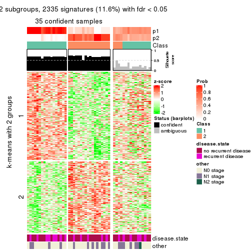
get_signatures(res, k = 3)
get_signatures(res, k = 4)
get_signatures(res, k = 5)
get_signatures(res, k = 6)
Signature heatmaps where rows are not scaled:
get_signatures(res, k = 2, scale_rows = FALSE)
get_signatures(res, k = 3, scale_rows = FALSE)
get_signatures(res, k = 4, scale_rows = FALSE)
get_signatures(res, k = 5, scale_rows = FALSE)
get_signatures(res, k = 6, scale_rows = FALSE)

Compare the overlap of signatures from different k:
compare_signatures(res)

get_signature() returns a data frame invisibly. TO get the list of signatures, the function
call should be assigned to a variable explicitly. In following code, if plot argument is set
to FALSE, no heatmap is plotted while only the differential analysis is performed.
# code only for demonstration
tb = get_signature(res, k = ..., plot = FALSE)
An example of the output of tb is:
#> which_row fdr mean_1 mean_2 scaled_mean_1 scaled_mean_2 km
#> 1 38 0.042760348 8.373488 9.131774 -0.5533452 0.5164555 1
#> 2 40 0.018707592 7.106213 8.469186 -0.6173731 0.5762149 1
#> 3 55 0.019134737 10.221463 11.207825 -0.6159697 0.5749050 1
#> 4 59 0.006059896 5.921854 7.869574 -0.6899429 0.6439467 1
#> 5 60 0.018055526 8.928898 10.211722 -0.6204761 0.5791110 1
#> 6 98 0.009384629 15.714769 14.887706 0.6635654 -0.6193277 2
...
The columns in tb are:
which_row: row indices corresponding to the input matrix.fdr: FDR for the differential test. mean_x: The mean value in group x.scaled_mean_x: The mean value in group x after rows are scaled.km: Row groups if k-means clustering is applied to rows.UMAP plot which shows how samples are separated.
dimension_reduction(res, k = 2, method = "UMAP")
dimension_reduction(res, k = 3, method = "UMAP")
dimension_reduction(res, k = 4, method = "UMAP")
dimension_reduction(res, k = 5, method = "UMAP")
dimension_reduction(res, k = 6, method = "UMAP")
Following heatmap shows how subgroups are split when increasing k:
collect_classes(res)
Test correlation between subgroups and known annotations. If the known annotation is numeric, one-way ANOVA test is applied, and if the known annotation is discrete, chi-squared contingency table test is applied.
test_to_known_factors(res)
#> n disease.state(p) other(p) k
#> ATC:pam 35 0.407 0.539 2
#> ATC:pam 35 0.598 0.384 3
#> ATC:pam 47 0.505 0.689 4
#> ATC:pam 41 0.340 0.124 5
#> ATC:pam 45 0.367 0.436 6
If matrix rows can be associated to genes, consider to use GO_Enrichment(res,
...) to perform function enrichment for the signature genes.
The object with results only for a single top-value method and a single partition method can be extracted as:
res = res_list["ATC", "mclust"]
# you can also extract it by
# res = res_list["ATC:mclust"]
A summary of res and all the functions that can be applied to it:
res
#> A 'ConsensusPartition' object with k = 2, 3, 4, 5, 6.
#> On a matrix with 20180 rows and 51 columns.
#> Top rows (1000, 2000, 3000, 4000, 5000) are extracted by 'ATC' method.
#> Subgroups are detected by 'mclust' method.
#> Performed in total 1250 partitions by row resampling.
#> Best k for subgroups seems to be 2.
#>
#> Following methods can be applied to this 'ConsensusPartition' object:
#> [1] "cola_report" "collect_classes" "collect_plots"
#> [4] "collect_stats" "colnames" "compare_signatures"
#> [7] "consensus_heatmap" "dimension_reduction" "functional_enrichment"
#> [10] "get_anno_col" "get_anno" "get_classes"
#> [13] "get_consensus" "get_matrix" "get_membership"
#> [16] "get_param" "get_signatures" "get_stats"
#> [19] "is_best_k" "is_stable_k" "membership_heatmap"
#> [22] "ncol" "nrow" "plot_ecdf"
#> [25] "rownames" "select_partition_number" "show"
#> [28] "suggest_best_k" "test_to_known_factors"
collect_plots() function collects all the plots made from res for all k (number of partitions)
into one single page to provide an easy and fast comparison between different k.
collect_plots(res)
The plots are:
k and the heatmap of
predicted classes for each k.k.k.k.All the plots in panels can be made by individual functions and they are plotted later in this section.
select_partition_number() produces several plots showing different
statistics for choosing “optimized” k. There are following statistics:
k;k, the area increased is defined as \(A_k - A_{k-1}\).The detailed explanations of these statistics can be found in the cola vignette.
Generally speaking, lower PAC score, higher mean silhouette score or higher
concordance corresponds to better partition. Rand index and Jaccard index
measure how similar the current partition is compared to partition with k-1.
If they are too similar, we won't accept k is better than k-1.
select_partition_number(res)
The numeric values for all these statistics can be obtained by get_stats().
get_stats(res)
#> k 1-PAC mean_silhouette concordance area_increased Rand Jaccard
#> 2 2 1.000 0.949 0.981 0.450 0.561 0.561
#> 3 3 0.822 0.906 0.945 0.139 0.948 0.908
#> 4 4 0.483 0.721 0.817 0.126 1.000 1.000
#> 5 5 0.546 0.578 0.750 0.237 0.772 0.552
#> 6 6 0.614 0.744 0.766 0.106 0.826 0.448
suggest_best_k() suggests the best \(k\) based on these statistics. The rules are as follows:
NA.suggest_best_k(res)
#> [1] 2
Following shows the table of the partitions (You need to click the show/hide
code output link to see it). The membership matrix (columns with name p*)
is inferred by
clue::cl_consensus()
function with the SE method. Basically the value in the membership matrix
represents the probability to belong to a certain group. The finall class
label for an item is determined with the group with highest probability it
belongs to.
In get_classes() function, the entropy is calculated from the membership
matrix and the silhouette score is calculated from the consensus matrix.
cbind(get_classes(res, k = 2), get_membership(res, k = 2))
#> class entropy silhouette p1 p2
#> GSM115459 1 0.0000 0.9928 1.000 0.000
#> GSM115460 2 0.0000 0.9738 0.000 1.000
#> GSM115461 2 0.0000 0.9738 0.000 1.000
#> GSM115462 2 0.0000 0.9738 0.000 1.000
#> GSM115463 2 0.0000 0.9738 0.000 1.000
#> GSM115464 2 0.0000 0.9738 0.000 1.000
#> GSM115465 2 0.0000 0.9738 0.000 1.000
#> GSM115466 2 0.0000 0.9738 0.000 1.000
#> GSM115467 2 0.0000 0.9738 0.000 1.000
#> GSM115468 2 0.0000 0.9738 0.000 1.000
#> GSM115469 1 0.0000 0.9928 1.000 0.000
#> GSM115470 2 0.0000 0.9738 0.000 1.000
#> GSM115471 2 0.0000 0.9738 0.000 1.000
#> GSM115472 2 0.0000 0.9738 0.000 1.000
#> GSM115473 1 0.0000 0.9928 1.000 0.000
#> GSM115474 2 0.0000 0.9738 0.000 1.000
#> GSM115475 1 0.1633 0.9802 0.976 0.024
#> GSM115476 2 0.0000 0.9738 0.000 1.000
#> GSM115477 2 0.9993 0.0729 0.484 0.516
#> GSM115478 2 0.0000 0.9738 0.000 1.000
#> GSM115479 2 0.0000 0.9738 0.000 1.000
#> GSM115480 2 0.0000 0.9738 0.000 1.000
#> GSM115481 1 0.1633 0.9802 0.976 0.024
#> GSM115482 2 0.0000 0.9738 0.000 1.000
#> GSM115483 1 0.0000 0.9928 1.000 0.000
#> GSM115484 2 0.0000 0.9738 0.000 1.000
#> GSM115485 1 0.1633 0.9802 0.976 0.024
#> GSM115486 1 0.0000 0.9928 1.000 0.000
#> GSM115487 1 0.0672 0.9893 0.992 0.008
#> GSM115488 2 0.0000 0.9738 0.000 1.000
#> GSM115489 2 0.0000 0.9738 0.000 1.000
#> GSM115490 1 0.0000 0.9928 1.000 0.000
#> GSM115491 2 0.0000 0.9738 0.000 1.000
#> GSM115492 1 0.1633 0.9802 0.976 0.024
#> GSM115493 2 0.0000 0.9738 0.000 1.000
#> GSM115494 2 0.0000 0.9738 0.000 1.000
#> GSM115495 2 0.0000 0.9738 0.000 1.000
#> GSM115496 2 0.0000 0.9738 0.000 1.000
#> GSM115497 1 0.0000 0.9928 1.000 0.000
#> GSM115498 2 0.0000 0.9738 0.000 1.000
#> GSM115499 2 0.0000 0.9738 0.000 1.000
#> GSM115500 1 0.0000 0.9928 1.000 0.000
#> GSM115501 2 0.0000 0.9738 0.000 1.000
#> GSM115502 2 0.0000 0.9738 0.000 1.000
#> GSM115503 2 0.9608 0.3775 0.384 0.616
#> GSM115504 1 0.0000 0.9928 1.000 0.000
#> GSM115505 2 0.0000 0.9738 0.000 1.000
#> GSM115506 2 0.0000 0.9738 0.000 1.000
#> GSM115507 2 0.0000 0.9738 0.000 1.000
#> GSM115509 1 0.0000 0.9928 1.000 0.000
#> GSM115508 1 0.0000 0.9928 1.000 0.000
cbind(get_classes(res, k = 3), get_membership(res, k = 3))
#> class entropy silhouette p1 p2 p3
#> GSM115459 3 0.1529 0.912 0.000 0.040 0.960
#> GSM115460 2 0.3481 1.000 0.052 0.904 0.044
#> GSM115461 2 0.3481 1.000 0.052 0.904 0.044
#> GSM115462 1 0.0000 0.944 1.000 0.000 0.000
#> GSM115463 1 0.0475 0.945 0.992 0.004 0.004
#> GSM115464 1 0.0237 0.945 0.996 0.004 0.000
#> GSM115465 1 0.1643 0.931 0.956 0.044 0.000
#> GSM115466 1 0.2918 0.913 0.924 0.032 0.044
#> GSM115467 1 0.3155 0.907 0.916 0.040 0.044
#> GSM115468 1 0.0000 0.944 1.000 0.000 0.000
#> GSM115469 3 0.0424 0.924 0.000 0.008 0.992
#> GSM115470 1 0.0237 0.945 0.996 0.004 0.000
#> GSM115471 1 0.0237 0.945 0.996 0.004 0.000
#> GSM115472 1 0.0000 0.944 1.000 0.000 0.000
#> GSM115473 3 0.0747 0.921 0.000 0.016 0.984
#> GSM115474 1 0.0000 0.944 1.000 0.000 0.000
#> GSM115475 3 0.5304 0.824 0.068 0.108 0.824
#> GSM115476 1 0.0237 0.945 0.996 0.000 0.004
#> GSM115477 1 0.3875 0.864 0.888 0.044 0.068
#> GSM115478 1 0.2261 0.911 0.932 0.068 0.000
#> GSM115479 1 0.4399 0.856 0.864 0.092 0.044
#> GSM115480 1 0.0424 0.944 0.992 0.008 0.000
#> GSM115481 3 0.4818 0.820 0.108 0.048 0.844
#> GSM115482 1 0.0424 0.944 0.992 0.008 0.000
#> GSM115483 3 0.1643 0.910 0.000 0.044 0.956
#> GSM115484 1 0.0592 0.944 0.988 0.012 0.000
#> GSM115485 3 0.5285 0.826 0.064 0.112 0.824
#> GSM115486 3 0.0424 0.924 0.000 0.008 0.992
#> GSM115487 3 0.2903 0.898 0.028 0.048 0.924
#> GSM115488 1 0.1643 0.931 0.956 0.044 0.000
#> GSM115489 1 0.1753 0.917 0.952 0.000 0.048
#> GSM115490 3 0.1643 0.910 0.000 0.044 0.956
#> GSM115491 1 0.1753 0.931 0.952 0.048 0.000
#> GSM115492 3 0.5285 0.826 0.064 0.112 0.824
#> GSM115493 1 0.1753 0.931 0.952 0.048 0.000
#> GSM115494 1 0.4423 0.858 0.864 0.088 0.048
#> GSM115495 1 0.0237 0.945 0.996 0.004 0.000
#> GSM115496 1 0.1753 0.931 0.952 0.048 0.000
#> GSM115497 3 0.0000 0.925 0.000 0.000 1.000
#> GSM115498 1 0.7533 0.241 0.564 0.044 0.392
#> GSM115499 1 0.0000 0.944 1.000 0.000 0.000
#> GSM115500 3 0.0000 0.925 0.000 0.000 1.000
#> GSM115501 1 0.0237 0.944 0.996 0.004 0.000
#> GSM115502 1 0.0237 0.945 0.996 0.000 0.004
#> GSM115503 1 0.3572 0.878 0.900 0.040 0.060
#> GSM115504 3 0.1647 0.907 0.036 0.004 0.960
#> GSM115505 1 0.3038 0.895 0.896 0.104 0.000
#> GSM115506 1 0.1170 0.941 0.976 0.016 0.008
#> GSM115507 1 0.0424 0.944 0.992 0.008 0.000
#> GSM115509 3 0.0000 0.925 0.000 0.000 1.000
#> GSM115508 3 0.0000 0.925 0.000 0.000 1.000
cbind(get_classes(res, k = 4), get_membership(res, k = 4))
#> class entropy silhouette p1 p2 p3 p4
#> GSM115459 3 0.7078 0.6766 0.124 0.000 0.456 NA
#> GSM115460 2 0.1576 1.0000 0.048 0.948 0.004 NA
#> GSM115461 2 0.1576 1.0000 0.048 0.948 0.004 NA
#> GSM115462 1 0.3863 0.8326 0.828 0.028 0.000 NA
#> GSM115463 1 0.1929 0.8473 0.940 0.036 0.000 NA
#> GSM115464 1 0.0707 0.8572 0.980 0.020 0.000 NA
#> GSM115465 1 0.4057 0.8311 0.812 0.028 0.000 NA
#> GSM115466 1 0.4864 0.8195 0.788 0.060 0.008 NA
#> GSM115467 1 0.4424 0.8378 0.828 0.076 0.012 NA
#> GSM115468 1 0.0779 0.8580 0.980 0.016 0.000 NA
#> GSM115469 3 0.4941 0.6444 0.000 0.000 0.564 NA
#> GSM115470 1 0.4139 0.8284 0.816 0.040 0.000 NA
#> GSM115471 1 0.4224 0.8267 0.812 0.044 0.000 NA
#> GSM115472 1 0.0188 0.8577 0.996 0.004 0.000 NA
#> GSM115473 3 0.7078 0.6766 0.124 0.000 0.456 NA
#> GSM115474 1 0.0336 0.8588 0.992 0.008 0.000 NA
#> GSM115475 3 0.7315 0.0669 0.216 0.000 0.532 NA
#> GSM115476 1 0.1284 0.8528 0.964 0.012 0.000 NA
#> GSM115477 1 0.6912 0.7182 0.672 0.044 0.152 NA
#> GSM115478 1 0.3958 0.8312 0.824 0.032 0.000 NA
#> GSM115479 1 0.5692 0.6643 0.736 0.088 0.012 NA
#> GSM115480 1 0.4224 0.8267 0.812 0.044 0.000 NA
#> GSM115481 3 0.4049 0.3380 0.212 0.000 0.780 NA
#> GSM115482 1 0.0524 0.8588 0.988 0.008 0.000 NA
#> GSM115483 3 0.4933 0.6446 0.000 0.000 0.568 NA
#> GSM115484 1 0.3658 0.8353 0.836 0.020 0.000 NA
#> GSM115485 3 0.6214 0.0211 0.092 0.000 0.636 NA
#> GSM115486 3 0.4941 0.6444 0.000 0.000 0.564 NA
#> GSM115487 3 0.3356 0.3809 0.176 0.000 0.824 NA
#> GSM115488 1 0.6336 0.6781 0.660 0.028 0.052 NA
#> GSM115489 1 0.1617 0.8478 0.956 0.012 0.008 NA
#> GSM115490 3 0.4933 0.6446 0.000 0.000 0.568 NA
#> GSM115491 1 0.1284 0.8554 0.964 0.024 0.000 NA
#> GSM115492 3 0.6214 0.0211 0.092 0.000 0.636 NA
#> GSM115493 1 0.1284 0.8554 0.964 0.024 0.000 NA
#> GSM115494 1 0.5478 0.6685 0.748 0.072 0.012 NA
#> GSM115495 1 0.4139 0.8284 0.816 0.040 0.000 NA
#> GSM115496 1 0.1406 0.8546 0.960 0.024 0.000 NA
#> GSM115497 3 0.7107 0.6732 0.128 0.000 0.464 NA
#> GSM115498 1 0.6451 0.5175 0.652 0.032 0.052 NA
#> GSM115499 1 0.0592 0.8587 0.984 0.016 0.000 NA
#> GSM115500 3 0.7115 0.6747 0.128 0.000 0.452 NA
#> GSM115501 1 0.1004 0.8574 0.972 0.024 0.000 NA
#> GSM115502 1 0.1151 0.8524 0.968 0.008 0.000 NA
#> GSM115503 1 0.5737 0.8000 0.760 0.040 0.084 NA
#> GSM115504 3 0.4978 0.6332 0.004 0.000 0.612 NA
#> GSM115505 1 0.6571 0.6644 0.660 0.028 0.076 NA
#> GSM115506 1 0.1639 0.8513 0.952 0.036 0.004 NA
#> GSM115507 1 0.3958 0.8342 0.824 0.032 0.000 NA
#> GSM115509 3 0.7078 0.6766 0.124 0.000 0.456 NA
#> GSM115508 3 0.7115 0.6747 0.128 0.000 0.452 NA
cbind(get_classes(res, k = 5), get_membership(res, k = 5))
#> class entropy silhouette p1 p2 p3 p4 p5
#> GSM115459 3 0.0324 0.7829 0.000 0.000 0.992 0.004 0.004
#> GSM115460 5 0.0880 1.0000 0.000 0.032 0.000 0.000 0.968
#> GSM115461 5 0.0880 1.0000 0.000 0.032 0.000 0.000 0.968
#> GSM115462 2 0.3934 0.4341 0.244 0.740 0.000 0.000 0.016
#> GSM115463 1 0.4059 0.5832 0.800 0.152 0.028 0.016 0.004
#> GSM115464 1 0.5378 0.5743 0.660 0.256 0.000 0.072 0.012
#> GSM115465 1 0.4764 0.1585 0.548 0.436 0.000 0.012 0.004
#> GSM115466 2 0.3167 0.6673 0.148 0.836 0.008 0.000 0.008
#> GSM115467 2 0.5044 0.5199 0.276 0.676 0.008 0.012 0.028
#> GSM115468 1 0.5830 0.4702 0.504 0.416 0.000 0.072 0.008
#> GSM115469 3 0.3628 0.7018 0.000 0.000 0.772 0.216 0.012
#> GSM115470 2 0.0324 0.7605 0.004 0.992 0.000 0.000 0.004
#> GSM115471 2 0.0510 0.7589 0.000 0.984 0.000 0.000 0.016
#> GSM115472 1 0.5797 0.5339 0.564 0.352 0.000 0.072 0.012
#> GSM115473 3 0.0162 0.7831 0.000 0.000 0.996 0.000 0.004
#> GSM115474 1 0.5813 0.4808 0.516 0.404 0.000 0.072 0.008
#> GSM115475 4 0.5228 0.6473 0.056 0.000 0.356 0.588 0.000
#> GSM115476 1 0.5205 0.5466 0.624 0.332 0.028 0.008 0.008
#> GSM115477 2 0.6106 0.1269 0.320 0.584 0.064 0.024 0.008
#> GSM115478 2 0.1082 0.7555 0.028 0.964 0.000 0.000 0.008
#> GSM115479 1 0.7248 0.3624 0.592 0.184 0.036 0.136 0.052
#> GSM115480 2 0.0451 0.7587 0.004 0.988 0.000 0.000 0.008
#> GSM115481 3 0.4302 0.3295 0.032 0.000 0.720 0.248 0.000
#> GSM115482 1 0.5385 0.4242 0.528 0.428 0.028 0.016 0.000
#> GSM115483 3 0.3727 0.7008 0.000 0.000 0.768 0.216 0.016
#> GSM115484 2 0.1026 0.7570 0.024 0.968 0.000 0.004 0.004
#> GSM115485 4 0.3562 0.8321 0.016 0.000 0.196 0.788 0.000
#> GSM115486 3 0.3461 0.6996 0.000 0.000 0.772 0.224 0.004
#> GSM115487 3 0.3266 0.5227 0.000 0.004 0.796 0.200 0.000
#> GSM115488 1 0.6829 0.2642 0.528 0.316 0.076 0.080 0.000
#> GSM115489 1 0.5672 0.5650 0.688 0.192 0.092 0.016 0.012
#> GSM115490 3 0.3727 0.7008 0.000 0.000 0.768 0.216 0.016
#> GSM115491 1 0.4779 0.5618 0.740 0.168 0.000 0.084 0.008
#> GSM115492 4 0.3562 0.8321 0.016 0.000 0.196 0.788 0.000
#> GSM115493 1 0.4269 0.5748 0.780 0.140 0.000 0.076 0.004
#> GSM115494 1 0.7219 0.3656 0.596 0.180 0.036 0.136 0.052
#> GSM115495 2 0.0451 0.7617 0.008 0.988 0.000 0.004 0.000
#> GSM115496 1 0.4326 0.5736 0.776 0.140 0.000 0.080 0.004
#> GSM115497 3 0.0451 0.7789 0.000 0.004 0.988 0.008 0.000
#> GSM115498 1 0.7262 -0.1389 0.496 0.024 0.216 0.252 0.012
#> GSM115499 1 0.5800 0.4927 0.524 0.396 0.000 0.072 0.008
#> GSM115500 3 0.0000 0.7838 0.000 0.000 1.000 0.000 0.000
#> GSM115501 1 0.4709 0.4767 0.584 0.400 0.008 0.008 0.000
#> GSM115502 1 0.5319 0.5603 0.636 0.312 0.028 0.016 0.008
#> GSM115503 2 0.5934 0.0486 0.344 0.568 0.072 0.008 0.008
#> GSM115504 3 0.3534 0.6706 0.000 0.000 0.744 0.256 0.000
#> GSM115505 1 0.7079 0.2973 0.528 0.280 0.076 0.116 0.000
#> GSM115506 1 0.5763 0.3477 0.608 0.316 0.032 0.040 0.004
#> GSM115507 2 0.1704 0.7182 0.068 0.928 0.000 0.000 0.004
#> GSM115509 3 0.0000 0.7838 0.000 0.000 1.000 0.000 0.000
#> GSM115508 3 0.0000 0.7838 0.000 0.000 1.000 0.000 0.000
cbind(get_classes(res, k = 6), get_membership(res, k = 6))
#> class entropy silhouette p1 p2 p3 p4 p5 p6
#> GSM115459 3 0.1769 0.8361 0.000 0.000 0.924 0.060 0.004 0.012
#> GSM115460 5 0.0777 1.0000 0.004 0.024 0.000 0.000 0.972 0.000
#> GSM115461 5 0.0777 1.0000 0.004 0.024 0.000 0.000 0.972 0.000
#> GSM115462 2 0.1807 0.8880 0.020 0.920 0.000 0.000 0.000 0.060
#> GSM115463 6 0.4222 0.7501 0.024 0.140 0.036 0.000 0.020 0.780
#> GSM115464 1 0.5320 0.8173 0.576 0.144 0.000 0.000 0.000 0.280
#> GSM115465 2 0.4461 0.7147 0.152 0.732 0.000 0.004 0.004 0.108
#> GSM115466 2 0.1268 0.9062 0.008 0.952 0.004 0.000 0.000 0.036
#> GSM115467 2 0.3361 0.7720 0.004 0.828 0.004 0.000 0.108 0.056
#> GSM115468 1 0.5680 0.7767 0.544 0.184 0.000 0.000 0.004 0.268
#> GSM115469 4 0.2405 0.6508 0.000 0.000 0.100 0.880 0.004 0.016
#> GSM115470 2 0.0508 0.9080 0.004 0.984 0.000 0.000 0.000 0.012
#> GSM115471 2 0.0891 0.9076 0.008 0.968 0.000 0.000 0.000 0.024
#> GSM115472 1 0.5273 0.8138 0.580 0.136 0.000 0.000 0.000 0.284
#> GSM115473 3 0.1745 0.8474 0.000 0.000 0.920 0.068 0.000 0.012
#> GSM115474 1 0.5383 0.7990 0.580 0.172 0.000 0.000 0.000 0.248
#> GSM115475 3 0.7112 -0.0806 0.168 0.000 0.420 0.296 0.000 0.116
#> GSM115476 6 0.3538 0.7307 0.024 0.124 0.036 0.000 0.000 0.816
#> GSM115477 2 0.2935 0.8218 0.028 0.852 0.004 0.004 0.000 0.112
#> GSM115478 2 0.0972 0.9089 0.000 0.964 0.000 0.000 0.008 0.028
#> GSM115479 6 0.5770 0.6179 0.012 0.024 0.040 0.060 0.200 0.664
#> GSM115480 2 0.0547 0.9060 0.000 0.980 0.000 0.000 0.000 0.020
#> GSM115481 3 0.3528 0.7430 0.032 0.100 0.832 0.008 0.000 0.028
#> GSM115482 6 0.4271 0.7308 0.004 0.236 0.032 0.012 0.000 0.716
#> GSM115483 4 0.2876 0.6519 0.000 0.000 0.132 0.844 0.008 0.016
#> GSM115484 2 0.1003 0.9067 0.004 0.964 0.000 0.000 0.004 0.028
#> GSM115485 4 0.6338 0.5901 0.260 0.000 0.072 0.540 0.000 0.128
#> GSM115486 4 0.4034 0.6682 0.120 0.004 0.088 0.780 0.000 0.008
#> GSM115487 3 0.3356 0.8335 0.032 0.004 0.832 0.116 0.000 0.016
#> GSM115488 4 0.7361 0.2117 0.220 0.320 0.000 0.340 0.000 0.120
#> GSM115489 6 0.3952 0.7367 0.028 0.120 0.060 0.000 0.000 0.792
#> GSM115490 4 0.2876 0.6519 0.000 0.000 0.132 0.844 0.008 0.016
#> GSM115491 1 0.4200 0.7454 0.720 0.072 0.000 0.000 0.000 0.208
#> GSM115492 4 0.6338 0.5901 0.260 0.000 0.072 0.540 0.000 0.128
#> GSM115493 1 0.4368 0.7338 0.672 0.056 0.000 0.000 0.000 0.272
#> GSM115494 6 0.5770 0.6179 0.012 0.024 0.040 0.060 0.200 0.664
#> GSM115495 2 0.0363 0.9071 0.000 0.988 0.000 0.000 0.000 0.012
#> GSM115496 1 0.4312 0.7296 0.676 0.052 0.000 0.000 0.000 0.272
#> GSM115497 3 0.2592 0.8367 0.000 0.004 0.864 0.116 0.000 0.016
#> GSM115498 6 0.5173 0.5712 0.196 0.000 0.100 0.032 0.000 0.672
#> GSM115499 1 0.5383 0.8094 0.576 0.164 0.000 0.000 0.000 0.260
#> GSM115500 3 0.0363 0.8358 0.000 0.000 0.988 0.000 0.000 0.012
#> GSM115501 6 0.4172 0.6964 0.052 0.224 0.004 0.000 0.000 0.720
#> GSM115502 6 0.3707 0.7344 0.028 0.120 0.044 0.000 0.000 0.808
#> GSM115503 2 0.3225 0.8009 0.024 0.828 0.004 0.008 0.000 0.136
#> GSM115504 4 0.4726 0.6607 0.136 0.004 0.124 0.724 0.004 0.008
#> GSM115505 4 0.7409 0.3191 0.216 0.268 0.000 0.392 0.004 0.120
#> GSM115506 6 0.4238 0.7339 0.000 0.228 0.036 0.016 0.000 0.720
#> GSM115507 2 0.1010 0.9075 0.004 0.960 0.000 0.000 0.000 0.036
#> GSM115509 3 0.2357 0.8373 0.000 0.000 0.872 0.116 0.000 0.012
#> GSM115508 3 0.0363 0.8358 0.000 0.000 0.988 0.000 0.000 0.012
Heatmaps for the consensus matrix. It visualizes the probability of two samples to be in a same group.
consensus_heatmap(res, k = 2)
consensus_heatmap(res, k = 3)
consensus_heatmap(res, k = 4)
consensus_heatmap(res, k = 5)
consensus_heatmap(res, k = 6)
Heatmaps for the membership of samples in all partitions to see how consistent they are:
membership_heatmap(res, k = 2)
membership_heatmap(res, k = 3)
membership_heatmap(res, k = 4)
membership_heatmap(res, k = 5)
membership_heatmap(res, k = 6)

As soon as we have had the classes for columns, we can look for signatures which are significantly different between classes which can be candidate marks for certain classes. Following are the heatmaps for signatures.
Signature heatmaps where rows are scaled:
get_signatures(res, k = 2)
get_signatures(res, k = 3)
get_signatures(res, k = 4)
get_signatures(res, k = 5)
get_signatures(res, k = 6)
Signature heatmaps where rows are not scaled:
get_signatures(res, k = 2, scale_rows = FALSE)
get_signatures(res, k = 3, scale_rows = FALSE)
get_signatures(res, k = 4, scale_rows = FALSE)

get_signatures(res, k = 5, scale_rows = FALSE)
get_signatures(res, k = 6, scale_rows = FALSE)
Compare the overlap of signatures from different k:
compare_signatures(res)
get_signature() returns a data frame invisibly. TO get the list of signatures, the function
call should be assigned to a variable explicitly. In following code, if plot argument is set
to FALSE, no heatmap is plotted while only the differential analysis is performed.
# code only for demonstration
tb = get_signature(res, k = ..., plot = FALSE)
An example of the output of tb is:
#> which_row fdr mean_1 mean_2 scaled_mean_1 scaled_mean_2 km
#> 1 38 0.042760348 8.373488 9.131774 -0.5533452 0.5164555 1
#> 2 40 0.018707592 7.106213 8.469186 -0.6173731 0.5762149 1
#> 3 55 0.019134737 10.221463 11.207825 -0.6159697 0.5749050 1
#> 4 59 0.006059896 5.921854 7.869574 -0.6899429 0.6439467 1
#> 5 60 0.018055526 8.928898 10.211722 -0.6204761 0.5791110 1
#> 6 98 0.009384629 15.714769 14.887706 0.6635654 -0.6193277 2
...
The columns in tb are:
which_row: row indices corresponding to the input matrix.fdr: FDR for the differential test. mean_x: The mean value in group x.scaled_mean_x: The mean value in group x after rows are scaled.km: Row groups if k-means clustering is applied to rows.UMAP plot which shows how samples are separated.
dimension_reduction(res, k = 2, method = "UMAP")
dimension_reduction(res, k = 3, method = "UMAP")
dimension_reduction(res, k = 4, method = "UMAP")
dimension_reduction(res, k = 5, method = "UMAP")
dimension_reduction(res, k = 6, method = "UMAP")
Following heatmap shows how subgroups are split when increasing k:
collect_classes(res)
Test correlation between subgroups and known annotations. If the known annotation is numeric, one-way ANOVA test is applied, and if the known annotation is discrete, chi-squared contingency table test is applied.
test_to_known_factors(res)
#> n disease.state(p) other(p) k
#> ATC:mclust 49 1.000 0.149 2
#> ATC:mclust 50 0.557 0.363 3
#> ATC:mclust 46 0.479 0.233 4
#> ATC:mclust 35 0.676 0.629 5
#> ATC:mclust 48 0.504 0.381 6
If matrix rows can be associated to genes, consider to use GO_Enrichment(res,
...) to perform function enrichment for the signature genes.
The object with results only for a single top-value method and a single partition method can be extracted as:
res = res_list["ATC", "NMF"]
# you can also extract it by
# res = res_list["ATC:NMF"]
A summary of res and all the functions that can be applied to it:
res
#> A 'ConsensusPartition' object with k = 2, 3, 4, 5, 6.
#> On a matrix with 20180 rows and 51 columns.
#> Top rows (1000, 2000, 3000, 4000, 5000) are extracted by 'ATC' method.
#> Subgroups are detected by 'NMF' method.
#> Performed in total 1250 partitions by row resampling.
#> Best k for subgroups seems to be 3.
#>
#> Following methods can be applied to this 'ConsensusPartition' object:
#> [1] "cola_report" "collect_classes" "collect_plots"
#> [4] "collect_stats" "colnames" "compare_signatures"
#> [7] "consensus_heatmap" "dimension_reduction" "functional_enrichment"
#> [10] "get_anno_col" "get_anno" "get_classes"
#> [13] "get_consensus" "get_matrix" "get_membership"
#> [16] "get_param" "get_signatures" "get_stats"
#> [19] "is_best_k" "is_stable_k" "membership_heatmap"
#> [22] "ncol" "nrow" "plot_ecdf"
#> [25] "rownames" "select_partition_number" "show"
#> [28] "suggest_best_k" "test_to_known_factors"
collect_plots() function collects all the plots made from res for all k (number of partitions)
into one single page to provide an easy and fast comparison between different k.
collect_plots(res)
The plots are:
k and the heatmap of
predicted classes for each k.k.k.k.All the plots in panels can be made by individual functions and they are plotted later in this section.
select_partition_number() produces several plots showing different
statistics for choosing “optimized” k. There are following statistics:
k;k, the area increased is defined as \(A_k - A_{k-1}\).The detailed explanations of these statistics can be found in the cola vignette.
Generally speaking, lower PAC score, higher mean silhouette score or higher
concordance corresponds to better partition. Rand index and Jaccard index
measure how similar the current partition is compared to partition with k-1.
If they are too similar, we won't accept k is better than k-1.
select_partition_number(res)
The numeric values for all these statistics can be obtained by get_stats().
get_stats(res)
#> k 1-PAC mean_silhouette concordance area_increased Rand Jaccard
#> 2 2 0.918 0.919 0.966 0.5070 0.490 0.490
#> 3 3 0.915 0.896 0.954 0.3034 0.799 0.610
#> 4 4 0.622 0.691 0.824 0.1345 0.801 0.486
#> 5 5 0.535 0.519 0.756 0.0488 0.858 0.512
#> 6 6 0.569 0.422 0.672 0.0400 0.853 0.442
suggest_best_k() suggests the best \(k\) based on these statistics. The rules are as follows:
NA.suggest_best_k(res)
#> [1] 3
#> attr(,"optional")
#> [1] 2
There is also optional best \(k\) = 2 that is worth to check.
Following shows the table of the partitions (You need to click the show/hide
code output link to see it). The membership matrix (columns with name p*)
is inferred by
clue::cl_consensus()
function with the SE method. Basically the value in the membership matrix
represents the probability to belong to a certain group. The finall class
label for an item is determined with the group with highest probability it
belongs to.
In get_classes() function, the entropy is calculated from the membership
matrix and the silhouette score is calculated from the consensus matrix.
cbind(get_classes(res, k = 2), get_membership(res, k = 2))
#> class entropy silhouette p1 p2
#> GSM115459 1 0.3733 0.916 0.928 0.072
#> GSM115460 2 0.0000 0.946 0.000 1.000
#> GSM115461 2 0.0000 0.946 0.000 1.000
#> GSM115462 2 0.9661 0.384 0.392 0.608
#> GSM115463 1 0.0000 0.979 1.000 0.000
#> GSM115464 1 0.0000 0.979 1.000 0.000
#> GSM115465 2 0.0000 0.946 0.000 1.000
#> GSM115466 2 0.0000 0.946 0.000 1.000
#> GSM115467 2 0.9635 0.402 0.388 0.612
#> GSM115468 1 0.0000 0.979 1.000 0.000
#> GSM115469 2 0.0000 0.946 0.000 1.000
#> GSM115470 2 0.0000 0.946 0.000 1.000
#> GSM115471 2 0.2948 0.904 0.052 0.948
#> GSM115472 1 0.0000 0.979 1.000 0.000
#> GSM115473 1 0.7528 0.723 0.784 0.216
#> GSM115474 1 0.2043 0.956 0.968 0.032
#> GSM115475 1 0.5737 0.842 0.864 0.136
#> GSM115476 1 0.0000 0.979 1.000 0.000
#> GSM115477 2 0.0000 0.946 0.000 1.000
#> GSM115478 2 0.0000 0.946 0.000 1.000
#> GSM115479 1 0.0000 0.979 1.000 0.000
#> GSM115480 2 0.0000 0.946 0.000 1.000
#> GSM115481 1 0.0938 0.972 0.988 0.012
#> GSM115482 1 0.0000 0.979 1.000 0.000
#> GSM115483 2 0.0000 0.946 0.000 1.000
#> GSM115484 2 0.0938 0.938 0.012 0.988
#> GSM115485 2 0.0000 0.946 0.000 1.000
#> GSM115486 2 0.0000 0.946 0.000 1.000
#> GSM115487 1 0.0938 0.972 0.988 0.012
#> GSM115488 2 0.0000 0.946 0.000 1.000
#> GSM115489 1 0.0000 0.979 1.000 0.000
#> GSM115490 2 0.0000 0.946 0.000 1.000
#> GSM115491 1 0.0376 0.977 0.996 0.004
#> GSM115492 2 0.0000 0.946 0.000 1.000
#> GSM115493 1 0.0000 0.979 1.000 0.000
#> GSM115494 1 0.0000 0.979 1.000 0.000
#> GSM115495 2 0.0000 0.946 0.000 1.000
#> GSM115496 1 0.0000 0.979 1.000 0.000
#> GSM115497 1 0.0000 0.979 1.000 0.000
#> GSM115498 1 0.0000 0.979 1.000 0.000
#> GSM115499 1 0.0376 0.977 0.996 0.004
#> GSM115500 1 0.0000 0.979 1.000 0.000
#> GSM115501 1 0.0000 0.979 1.000 0.000
#> GSM115502 1 0.0000 0.979 1.000 0.000
#> GSM115503 2 0.0000 0.946 0.000 1.000
#> GSM115504 2 0.0000 0.946 0.000 1.000
#> GSM115505 2 0.0000 0.946 0.000 1.000
#> GSM115506 1 0.0000 0.979 1.000 0.000
#> GSM115507 2 0.0938 0.938 0.012 0.988
#> GSM115509 2 0.9661 0.365 0.392 0.608
#> GSM115508 1 0.0000 0.979 1.000 0.000
cbind(get_classes(res, k = 3), get_membership(res, k = 3))
#> class entropy silhouette p1 p2 p3
#> GSM115459 3 0.0237 0.913 0.004 0.000 0.996
#> GSM115460 2 0.0237 0.952 0.004 0.996 0.000
#> GSM115461 2 0.0000 0.952 0.000 1.000 0.000
#> GSM115462 2 0.1753 0.924 0.048 0.952 0.000
#> GSM115463 1 0.0237 0.960 0.996 0.000 0.004
#> GSM115464 1 0.0000 0.961 1.000 0.000 0.000
#> GSM115465 2 0.0237 0.953 0.004 0.996 0.000
#> GSM115466 2 0.0424 0.952 0.008 0.992 0.000
#> GSM115467 2 0.1411 0.936 0.036 0.964 0.000
#> GSM115468 1 0.0592 0.955 0.988 0.012 0.000
#> GSM115469 3 0.0892 0.910 0.000 0.020 0.980
#> GSM115470 2 0.0000 0.952 0.000 1.000 0.000
#> GSM115471 2 0.0892 0.947 0.020 0.980 0.000
#> GSM115472 1 0.0000 0.961 1.000 0.000 0.000
#> GSM115473 3 0.1031 0.905 0.024 0.000 0.976
#> GSM115474 1 0.0000 0.961 1.000 0.000 0.000
#> GSM115475 3 0.0892 0.907 0.020 0.000 0.980
#> GSM115476 1 0.0892 0.954 0.980 0.000 0.020
#> GSM115477 2 0.0892 0.943 0.000 0.980 0.020
#> GSM115478 2 0.0000 0.952 0.000 1.000 0.000
#> GSM115479 1 0.0000 0.961 1.000 0.000 0.000
#> GSM115480 2 0.0000 0.952 0.000 1.000 0.000
#> GSM115481 3 0.5905 0.398 0.352 0.000 0.648
#> GSM115482 1 0.0000 0.961 1.000 0.000 0.000
#> GSM115483 3 0.2537 0.863 0.000 0.080 0.920
#> GSM115484 2 0.0892 0.947 0.020 0.980 0.000
#> GSM115485 3 0.0237 0.915 0.000 0.004 0.996
#> GSM115486 3 0.0237 0.915 0.000 0.004 0.996
#> GSM115487 1 0.4842 0.738 0.776 0.000 0.224
#> GSM115488 2 0.1860 0.917 0.000 0.948 0.052
#> GSM115489 1 0.0892 0.954 0.980 0.000 0.020
#> GSM115490 3 0.5733 0.504 0.000 0.324 0.676
#> GSM115491 1 0.2066 0.912 0.940 0.060 0.000
#> GSM115492 3 0.0592 0.913 0.000 0.012 0.988
#> GSM115493 1 0.0000 0.961 1.000 0.000 0.000
#> GSM115494 1 0.0000 0.961 1.000 0.000 0.000
#> GSM115495 2 0.0000 0.952 0.000 1.000 0.000
#> GSM115496 1 0.0000 0.961 1.000 0.000 0.000
#> GSM115497 1 0.3686 0.852 0.860 0.000 0.140
#> GSM115498 1 0.1031 0.952 0.976 0.000 0.024
#> GSM115499 1 0.0000 0.961 1.000 0.000 0.000
#> GSM115500 1 0.4702 0.764 0.788 0.000 0.212
#> GSM115501 1 0.0000 0.961 1.000 0.000 0.000
#> GSM115502 1 0.0747 0.956 0.984 0.000 0.016
#> GSM115503 2 0.6274 0.118 0.000 0.544 0.456
#> GSM115504 3 0.0592 0.913 0.000 0.012 0.988
#> GSM115505 2 0.1031 0.941 0.000 0.976 0.024
#> GSM115506 1 0.0592 0.954 0.988 0.012 0.000
#> GSM115507 2 0.0747 0.949 0.016 0.984 0.000
#> GSM115509 3 0.0000 0.914 0.000 0.000 1.000
#> GSM115508 1 0.2066 0.928 0.940 0.000 0.060
cbind(get_classes(res, k = 4), get_membership(res, k = 4))
#> class entropy silhouette p1 p2 p3 p4
#> GSM115459 3 0.1398 0.7514 0.040 0.000 0.956 0.004
#> GSM115460 2 0.1302 0.8840 0.000 0.956 0.000 0.044
#> GSM115461 2 0.1302 0.8840 0.000 0.956 0.000 0.044
#> GSM115462 2 0.4181 0.7897 0.128 0.820 0.000 0.052
#> GSM115463 1 0.0817 0.8500 0.976 0.000 0.000 0.024
#> GSM115464 4 0.4262 0.6911 0.236 0.008 0.000 0.756
#> GSM115465 4 0.3032 0.6007 0.008 0.124 0.000 0.868
#> GSM115466 2 0.0921 0.8879 0.000 0.972 0.000 0.028
#> GSM115467 2 0.1520 0.8829 0.024 0.956 0.000 0.020
#> GSM115468 1 0.1929 0.8314 0.940 0.036 0.000 0.024
#> GSM115469 3 0.4037 0.6970 0.000 0.040 0.824 0.136
#> GSM115470 2 0.2647 0.8976 0.000 0.880 0.000 0.120
#> GSM115471 2 0.1970 0.8932 0.008 0.932 0.000 0.060
#> GSM115472 4 0.4872 0.6101 0.356 0.004 0.000 0.640
#> GSM115473 3 0.2868 0.7114 0.136 0.000 0.864 0.000
#> GSM115474 4 0.5149 0.6335 0.336 0.016 0.000 0.648
#> GSM115475 4 0.5060 0.2995 0.004 0.000 0.412 0.584
#> GSM115476 1 0.1798 0.8436 0.944 0.000 0.040 0.016
#> GSM115477 2 0.3625 0.8573 0.000 0.828 0.012 0.160
#> GSM115478 2 0.2081 0.9020 0.000 0.916 0.000 0.084
#> GSM115479 1 0.0712 0.8505 0.984 0.004 0.008 0.004
#> GSM115480 2 0.2589 0.8940 0.000 0.884 0.000 0.116
#> GSM115481 3 0.3037 0.7369 0.076 0.000 0.888 0.036
#> GSM115482 1 0.0592 0.8523 0.984 0.000 0.000 0.016
#> GSM115483 3 0.5767 0.6520 0.000 0.152 0.712 0.136
#> GSM115484 2 0.2101 0.9023 0.012 0.928 0.000 0.060
#> GSM115485 4 0.4996 -0.0950 0.000 0.000 0.484 0.516
#> GSM115486 3 0.1389 0.7452 0.000 0.000 0.952 0.048
#> GSM115487 3 0.4972 0.0996 0.456 0.000 0.544 0.000
#> GSM115488 4 0.2635 0.6113 0.000 0.076 0.020 0.904
#> GSM115489 1 0.1406 0.8534 0.960 0.000 0.016 0.024
#> GSM115490 3 0.6027 0.6245 0.000 0.192 0.684 0.124
#> GSM115491 4 0.4446 0.6961 0.196 0.028 0.000 0.776
#> GSM115492 3 0.5112 0.3879 0.000 0.008 0.608 0.384
#> GSM115493 4 0.4643 0.6169 0.344 0.000 0.000 0.656
#> GSM115494 1 0.0524 0.8517 0.988 0.000 0.008 0.004
#> GSM115495 2 0.2921 0.8838 0.000 0.860 0.000 0.140
#> GSM115496 4 0.4454 0.6584 0.308 0.000 0.000 0.692
#> GSM115497 1 0.4866 0.2530 0.596 0.000 0.404 0.000
#> GSM115498 4 0.5078 0.6614 0.272 0.000 0.028 0.700
#> GSM115499 1 0.4382 0.3775 0.704 0.000 0.000 0.296
#> GSM115500 3 0.4790 0.3270 0.380 0.000 0.620 0.000
#> GSM115501 1 0.1118 0.8424 0.964 0.000 0.000 0.036
#> GSM115502 1 0.1297 0.8541 0.964 0.000 0.016 0.020
#> GSM115503 2 0.6514 0.6326 0.000 0.636 0.152 0.212
#> GSM115504 3 0.1743 0.7434 0.000 0.004 0.940 0.056
#> GSM115505 4 0.4914 0.4559 0.000 0.208 0.044 0.748
#> GSM115506 1 0.1042 0.8477 0.972 0.020 0.000 0.008
#> GSM115507 2 0.3160 0.8914 0.020 0.872 0.000 0.108
#> GSM115509 3 0.0921 0.7519 0.028 0.000 0.972 0.000
#> GSM115508 1 0.4713 0.3660 0.640 0.000 0.360 0.000
cbind(get_classes(res, k = 5), get_membership(res, k = 5))
#> class entropy silhouette p1 p2 p3 p4 p5
#> GSM115459 3 0.0833 0.7662 0.016 0.000 0.976 0.004 0.004
#> GSM115460 5 0.2929 0.7373 0.000 0.180 0.000 0.000 0.820
#> GSM115461 5 0.2891 0.7363 0.000 0.176 0.000 0.000 0.824
#> GSM115462 2 0.4794 0.4679 0.164 0.744 0.000 0.012 0.080
#> GSM115463 1 0.1605 0.7526 0.944 0.000 0.012 0.040 0.004
#> GSM115464 4 0.5887 0.3058 0.264 0.132 0.004 0.600 0.000
#> GSM115465 4 0.3905 0.4779 0.024 0.060 0.000 0.828 0.088
#> GSM115466 5 0.5466 0.4857 0.048 0.340 0.008 0.004 0.600
#> GSM115467 2 0.4751 0.4688 0.116 0.732 0.000 0.000 0.152
#> GSM115468 1 0.3883 0.5844 0.744 0.244 0.000 0.004 0.008
#> GSM115469 3 0.6387 0.4799 0.000 0.212 0.616 0.044 0.128
#> GSM115470 2 0.4744 -0.0874 0.000 0.572 0.000 0.020 0.408
#> GSM115471 5 0.4637 0.4542 0.008 0.420 0.000 0.004 0.568
#> GSM115472 1 0.5889 0.1015 0.488 0.076 0.008 0.428 0.000
#> GSM115473 3 0.2482 0.7647 0.064 0.000 0.904 0.016 0.016
#> GSM115474 4 0.5535 -0.0280 0.436 0.056 0.004 0.504 0.000
#> GSM115475 4 0.4851 0.1724 0.020 0.000 0.352 0.620 0.008
#> GSM115476 1 0.3569 0.6699 0.816 0.000 0.152 0.028 0.004
#> GSM115477 2 0.4219 0.5489 0.000 0.772 0.020 0.024 0.184
#> GSM115478 2 0.1478 0.6558 0.000 0.936 0.000 0.000 0.064
#> GSM115479 1 0.2791 0.7147 0.892 0.000 0.036 0.016 0.056
#> GSM115480 2 0.1282 0.6655 0.000 0.952 0.000 0.004 0.044
#> GSM115481 3 0.4730 0.6537 0.068 0.000 0.736 0.188 0.008
#> GSM115482 1 0.2635 0.7259 0.888 0.088 0.000 0.016 0.008
#> GSM115483 2 0.6201 0.3908 0.000 0.616 0.216 0.024 0.144
#> GSM115484 2 0.1992 0.6591 0.032 0.924 0.000 0.000 0.044
#> GSM115485 4 0.5877 0.0429 0.000 0.004 0.356 0.544 0.096
#> GSM115486 3 0.4071 0.6919 0.000 0.012 0.808 0.108 0.072
#> GSM115487 3 0.3673 0.7475 0.140 0.000 0.820 0.028 0.012
#> GSM115488 4 0.4727 0.2282 0.008 0.408 0.000 0.576 0.008
#> GSM115489 1 0.2888 0.7380 0.880 0.000 0.056 0.060 0.004
#> GSM115490 2 0.6073 0.4084 0.000 0.628 0.204 0.020 0.148
#> GSM115491 4 0.5819 0.3746 0.200 0.188 0.000 0.612 0.000
#> GSM115492 4 0.6598 0.0304 0.000 0.036 0.340 0.520 0.104
#> GSM115493 1 0.6028 0.0824 0.468 0.116 0.000 0.416 0.000
#> GSM115494 1 0.1978 0.7318 0.932 0.000 0.032 0.012 0.024
#> GSM115495 2 0.0290 0.6691 0.000 0.992 0.000 0.008 0.000
#> GSM115496 4 0.5041 0.1124 0.404 0.028 0.000 0.564 0.004
#> GSM115497 3 0.4204 0.7008 0.216 0.000 0.752 0.020 0.012
#> GSM115498 4 0.3117 0.4992 0.100 0.000 0.036 0.860 0.004
#> GSM115499 1 0.4235 0.6174 0.756 0.016 0.012 0.212 0.004
#> GSM115500 3 0.3879 0.7090 0.188 0.000 0.784 0.016 0.012
#> GSM115501 1 0.1412 0.7507 0.952 0.004 0.000 0.036 0.008
#> GSM115502 1 0.2304 0.7422 0.908 0.000 0.068 0.020 0.004
#> GSM115503 2 0.2649 0.6440 0.000 0.900 0.036 0.016 0.048
#> GSM115504 3 0.4949 0.6396 0.000 0.032 0.756 0.096 0.116
#> GSM115505 4 0.5660 0.3352 0.000 0.252 0.012 0.640 0.096
#> GSM115506 1 0.3463 0.6677 0.820 0.156 0.000 0.008 0.016
#> GSM115507 2 0.3696 0.6058 0.040 0.840 0.000 0.028 0.092
#> GSM115509 3 0.0798 0.7622 0.008 0.000 0.976 0.016 0.000
#> GSM115508 3 0.4604 0.6030 0.292 0.000 0.680 0.016 0.012
cbind(get_classes(res, k = 6), get_membership(res, k = 6))
#> class entropy silhouette p1 p2 p3 p4 p5 p6
#> GSM115459 3 0.1410 0.7364 0.004 0.000 0.944 0.044 0.000 0.008
#> GSM115460 5 0.0972 0.8709 0.000 0.028 0.000 0.008 0.964 0.000
#> GSM115461 5 0.0858 0.8708 0.000 0.028 0.000 0.004 0.968 0.000
#> GSM115462 2 0.5573 0.5175 0.124 0.696 0.000 0.024 0.080 0.076
#> GSM115463 1 0.2594 0.5164 0.880 0.004 0.028 0.004 0.000 0.084
#> GSM115464 6 0.5943 0.4173 0.168 0.208 0.024 0.008 0.000 0.592
#> GSM115465 6 0.4323 0.3233 0.000 0.052 0.000 0.112 0.064 0.772
#> GSM115466 1 0.7743 -0.0704 0.360 0.104 0.008 0.324 0.188 0.016
#> GSM115467 2 0.5308 0.5468 0.064 0.696 0.008 0.012 0.184 0.036
#> GSM115468 2 0.5478 0.2786 0.320 0.580 0.004 0.024 0.000 0.072
#> GSM115469 4 0.5322 0.4704 0.000 0.124 0.288 0.584 0.000 0.004
#> GSM115470 2 0.7047 0.0413 0.008 0.376 0.000 0.320 0.248 0.048
#> GSM115471 5 0.3521 0.6962 0.004 0.212 0.000 0.008 0.768 0.008
#> GSM115472 6 0.6833 0.3287 0.220 0.136 0.092 0.016 0.000 0.536
#> GSM115473 3 0.2704 0.6655 0.016 0.000 0.844 0.140 0.000 0.000
#> GSM115474 6 0.5383 0.3673 0.256 0.120 0.008 0.000 0.004 0.612
#> GSM115475 6 0.5700 -0.1180 0.012 0.000 0.196 0.216 0.000 0.576
#> GSM115476 3 0.5516 -0.0766 0.428 0.000 0.464 0.008 0.000 0.100
#> GSM115477 2 0.5490 0.4394 0.000 0.628 0.008 0.184 0.172 0.008
#> GSM115478 2 0.2587 0.6538 0.000 0.868 0.000 0.020 0.108 0.004
#> GSM115479 1 0.4247 0.4810 0.776 0.000 0.060 0.132 0.024 0.008
#> GSM115480 2 0.2308 0.6751 0.012 0.912 0.000 0.028 0.032 0.016
#> GSM115481 3 0.4029 0.6582 0.032 0.000 0.784 0.052 0.000 0.132
#> GSM115482 1 0.5206 0.3362 0.668 0.220 0.000 0.024 0.008 0.080
#> GSM115483 4 0.5492 -0.0520 0.000 0.424 0.088 0.476 0.012 0.000
#> GSM115484 2 0.2706 0.6745 0.016 0.888 0.000 0.040 0.048 0.008
#> GSM115485 4 0.5153 0.2645 0.000 0.000 0.084 0.464 0.000 0.452
#> GSM115486 4 0.4824 0.3163 0.000 0.000 0.420 0.524 0.000 0.056
#> GSM115487 3 0.4240 0.6389 0.068 0.000 0.752 0.164 0.000 0.016
#> GSM115488 2 0.4887 0.3188 0.004 0.616 0.004 0.048 0.004 0.324
#> GSM115489 1 0.5445 0.3799 0.596 0.000 0.248 0.008 0.000 0.148
#> GSM115490 2 0.5662 -0.0459 0.004 0.472 0.084 0.424 0.016 0.000
#> GSM115491 6 0.5732 0.2772 0.148 0.376 0.000 0.004 0.000 0.472
#> GSM115492 4 0.5011 0.3419 0.000 0.000 0.064 0.540 0.004 0.392
#> GSM115493 6 0.6370 0.2098 0.320 0.260 0.004 0.008 0.000 0.408
#> GSM115494 1 0.3352 0.5064 0.840 0.000 0.060 0.084 0.008 0.008
#> GSM115495 2 0.1003 0.6788 0.000 0.964 0.000 0.028 0.004 0.004
#> GSM115496 1 0.5038 0.1779 0.560 0.028 0.000 0.032 0.000 0.380
#> GSM115497 3 0.2781 0.7419 0.084 0.000 0.868 0.040 0.000 0.008
#> GSM115498 6 0.4002 0.4119 0.104 0.004 0.036 0.056 0.000 0.800
#> GSM115499 1 0.7145 0.1464 0.436 0.040 0.176 0.012 0.016 0.320
#> GSM115500 3 0.2237 0.7376 0.080 0.000 0.896 0.020 0.004 0.000
#> GSM115501 1 0.2026 0.5224 0.916 0.008 0.004 0.012 0.000 0.060
#> GSM115502 1 0.5576 0.2907 0.552 0.004 0.324 0.008 0.000 0.112
#> GSM115503 2 0.2527 0.6780 0.008 0.900 0.012 0.056 0.016 0.008
#> GSM115504 4 0.4662 0.4579 0.000 0.020 0.344 0.612 0.000 0.024
#> GSM115505 6 0.6022 -0.1000 0.000 0.160 0.004 0.368 0.008 0.460
#> GSM115506 1 0.5743 0.2014 0.576 0.320 0.004 0.024 0.016 0.060
#> GSM115507 2 0.3121 0.6666 0.024 0.864 0.000 0.008 0.064 0.040
#> GSM115509 3 0.1841 0.7277 0.008 0.000 0.920 0.064 0.000 0.008
#> GSM115508 3 0.2766 0.7278 0.124 0.000 0.852 0.020 0.004 0.000
Heatmaps for the consensus matrix. It visualizes the probability of two samples to be in a same group.
consensus_heatmap(res, k = 2)
consensus_heatmap(res, k = 3)
consensus_heatmap(res, k = 4)
consensus_heatmap(res, k = 5)
consensus_heatmap(res, k = 6)
Heatmaps for the membership of samples in all partitions to see how consistent they are:
membership_heatmap(res, k = 2)
membership_heatmap(res, k = 3)
membership_heatmap(res, k = 4)

membership_heatmap(res, k = 5)
membership_heatmap(res, k = 6)
As soon as we have had the classes for columns, we can look for signatures which are significantly different between classes which can be candidate marks for certain classes. Following are the heatmaps for signatures.
Signature heatmaps where rows are scaled:
get_signatures(res, k = 2)
get_signatures(res, k = 3)
get_signatures(res, k = 4)
get_signatures(res, k = 5)
get_signatures(res, k = 6)
Signature heatmaps where rows are not scaled:
get_signatures(res, k = 2, scale_rows = FALSE)
get_signatures(res, k = 3, scale_rows = FALSE)
get_signatures(res, k = 4, scale_rows = FALSE)
get_signatures(res, k = 5, scale_rows = FALSE)
get_signatures(res, k = 6, scale_rows = FALSE)
Compare the overlap of signatures from different k:
compare_signatures(res)
get_signature() returns a data frame invisibly. TO get the list of signatures, the function
call should be assigned to a variable explicitly. In following code, if plot argument is set
to FALSE, no heatmap is plotted while only the differential analysis is performed.
# code only for demonstration
tb = get_signature(res, k = ..., plot = FALSE)
An example of the output of tb is:
#> which_row fdr mean_1 mean_2 scaled_mean_1 scaled_mean_2 km
#> 1 38 0.042760348 8.373488 9.131774 -0.5533452 0.5164555 1
#> 2 40 0.018707592 7.106213 8.469186 -0.6173731 0.5762149 1
#> 3 55 0.019134737 10.221463 11.207825 -0.6159697 0.5749050 1
#> 4 59 0.006059896 5.921854 7.869574 -0.6899429 0.6439467 1
#> 5 60 0.018055526 8.928898 10.211722 -0.6204761 0.5791110 1
#> 6 98 0.009384629 15.714769 14.887706 0.6635654 -0.6193277 2
...
The columns in tb are:
which_row: row indices corresponding to the input matrix.fdr: FDR for the differential test. mean_x: The mean value in group x.scaled_mean_x: The mean value in group x after rows are scaled.km: Row groups if k-means clustering is applied to rows.UMAP plot which shows how samples are separated.
dimension_reduction(res, k = 2, method = "UMAP")
dimension_reduction(res, k = 3, method = "UMAP")
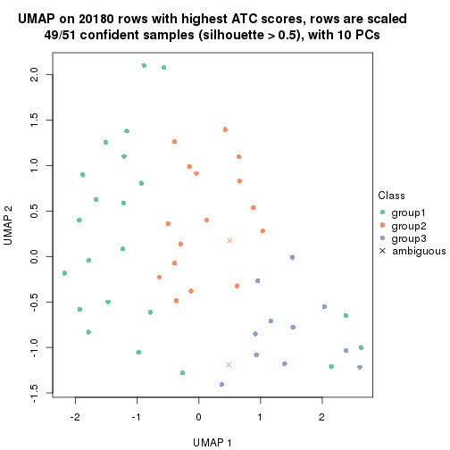
dimension_reduction(res, k = 4, method = "UMAP")
dimension_reduction(res, k = 5, method = "UMAP")
dimension_reduction(res, k = 6, method = "UMAP")
Following heatmap shows how subgroups are split when increasing k:
collect_classes(res)
Test correlation between subgroups and known annotations. If the known annotation is numeric, one-way ANOVA test is applied, and if the known annotation is discrete, chi-squared contingency table test is applied.
test_to_known_factors(res)
#> n disease.state(p) other(p) k
#> ATC:NMF 48 0.2950 0.420 2
#> ATC:NMF 49 0.0592 0.644 3
#> ATC:NMF 42 0.5591 0.328 4
#> ATC:NMF 30 0.6300 0.656 5
#> ATC:NMF 22 0.3600 0.713 6
If matrix rows can be associated to genes, consider to use GO_Enrichment(res,
...) to perform function enrichment for the signature genes.
sessionInfo()
#> R version 3.6.0 (2019-04-26)
#> Platform: x86_64-pc-linux-gnu (64-bit)
#> Running under: CentOS Linux 7 (Core)
#>
#> Matrix products: default
#> BLAS: /usr/lib64/libblas.so.3.4.2
#> LAPACK: /usr/lib64/liblapack.so.3.4.2
#>
#> locale:
#> [1] LC_CTYPE=en_GB.UTF-8 LC_NUMERIC=C LC_TIME=en_GB.UTF-8
#> [4] LC_COLLATE=en_GB.UTF-8 LC_MONETARY=en_GB.UTF-8 LC_MESSAGES=en_GB.UTF-8
#> [7] LC_PAPER=en_GB.UTF-8 LC_NAME=C LC_ADDRESS=C
#> [10] LC_TELEPHONE=C LC_MEASUREMENT=en_GB.UTF-8 LC_IDENTIFICATION=C
#>
#> attached base packages:
#> [1] grid parallel stats graphics grDevices utils datasets methods base
#>
#> other attached packages:
#> [1] genefilter_1.66.0 ComplexHeatmap_2.1.1 markdown_1.1 knitr_1.26
#> [5] cola_1.3.2 GEOquery_2.52.0 Biobase_2.44.0 BiocGenerics_0.30.0
#> [9] GetoptLong_0.1.7
#>
#> loaded via a namespace (and not attached):
#> [1] bitops_1.0-6 matrixStats_0.55.0 bit64_0.9-7 doParallel_1.0.15
#> [5] RColorBrewer_1.1-2 httr_1.4.1 tools_3.6.0 backports_1.1.5
#> [9] R6_2.4.1 DBI_1.0.0 lazyeval_0.2.2 colorspace_1.4-1
#> [13] withr_2.1.2 tidyselect_0.2.5 gridExtra_2.3 bit_1.1-14
#> [17] compiler_3.6.0 xml2_1.2.2 microbenchmark_1.4-7 pkgmaker_0.28
#> [21] slam_0.1-46 scales_1.1.0 readr_1.3.1 NMF_0.23.6
#> [25] stringr_1.4.0 digest_0.6.23 pkgconfig_2.0.3 bibtex_0.4.2
#> [29] highr_0.8 limma_3.40.6 rlang_0.4.2 GlobalOptions_0.1.1
#> [33] RSQLite_2.1.2 impute_1.58.0 shape_1.4.4 mclust_5.4.5
#> [37] dendextend_1.12.0 dplyr_0.8.3 RCurl_1.95-4.12 magrittr_1.5
#> [41] Matrix_1.2-17 Rcpp_1.0.3 munsell_0.5.0 S4Vectors_0.22.1
#> [45] viridis_0.5.1 lifecycle_0.1.0 stringi_1.4.3 plyr_1.8.4
#> [49] blob_1.2.0 crayon_1.3.4 lattice_0.20-38 splines_3.6.0
#> [53] annotate_1.62.0 circlize_0.4.9 hms_0.5.2 zeallot_0.1.0
#> [57] pillar_1.4.2 rjson_0.2.20 rngtools_1.4 reshape2_1.4.3
#> [61] codetools_0.2-16 stats4_3.6.0 XML_3.98-1.20 glue_1.3.1
#> [65] evaluate_0.14 png_0.1-7 vctrs_0.2.0 foreach_1.4.7
#> [69] polyclip_1.10-0 gtable_0.3.0 purrr_0.3.3 tidyr_1.0.0
#> [73] clue_0.3-57 assertthat_0.2.1 ggplot2_3.2.1 xfun_0.11
#> [77] gridBase_0.4-7 eulerr_6.0.0 xtable_1.8-4 skmeans_0.2-11
#> [81] survival_2.44-1.1 viridisLite_0.3.0 tibble_2.1.3 iterators_1.0.12
#> [85] AnnotationDbi_1.46.1 registry_0.5-1 memoise_1.1.0 IRanges_2.18.3
#> [89] cluster_2.1.0 brew_1.0-6